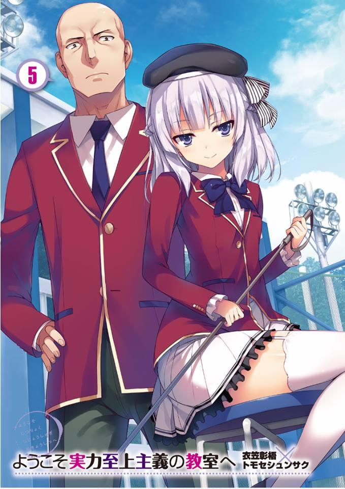
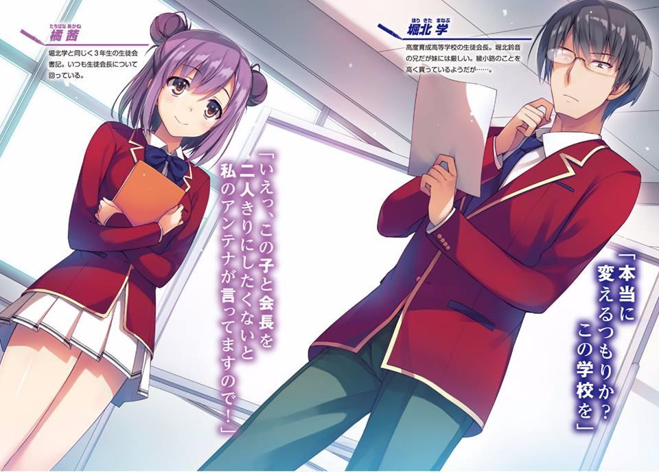
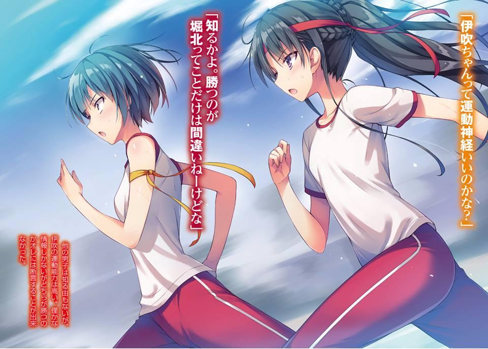
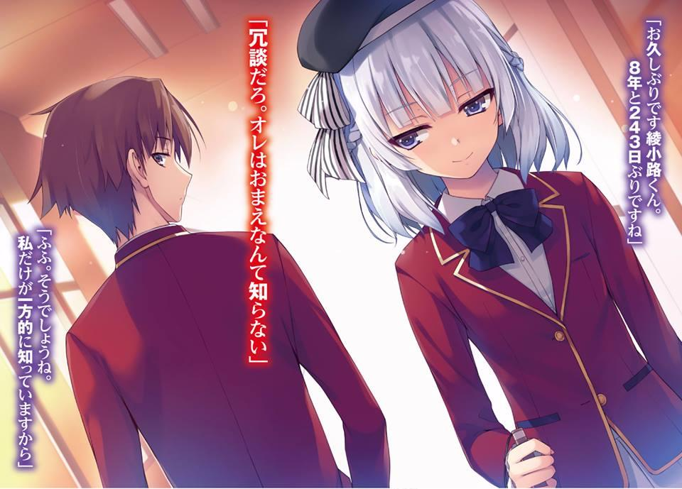
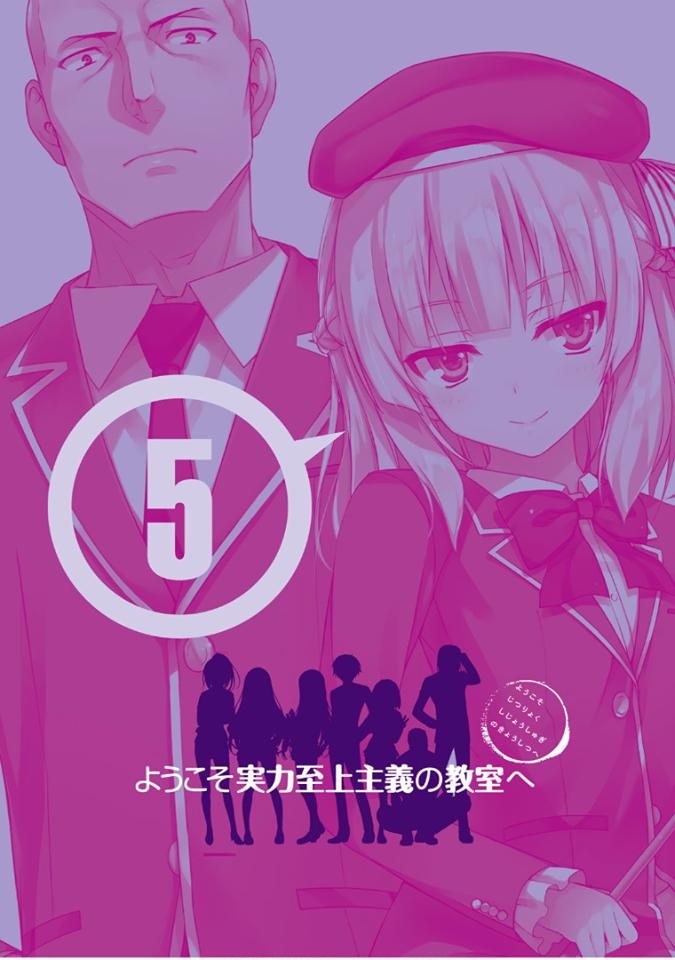
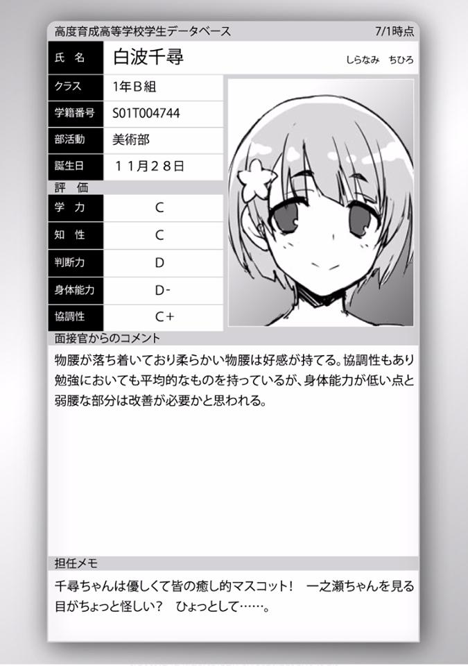
GLADHEIM
TRANSLATIONS
Youkoso Jitsuryoku Shijou Shugi no Kyoushitsu e Volumen 5
EL MONÓLOGO DE SUDOU KEN
Para ser honesto, no soy un ser humano decente. No necesito que alguien más me diga eso.
Decidí fortalecerme y defenderme cuando mi madre, que trabajaba en el negocio del entretenimiento, me dejó.
La pequeña presencia de la espalda de mi padre. Pasaba todos los días viviendo sombríamente como un simple conserje. Me sentí mal al mirar esa visión.
Siendo el idiota que soy, abandoné mis estudios y decidí ingresar al mundo de los deportes.
Al principio me gustaban los deportes como el tenis y el tenis de mesa, pero nunca hicieron click conmigo. Podía practicar todo lo que pudiera, pero nunca llegaba a los primeros puestos en esos deportes.
Luego tuve mi primer encuentro con el baloncesto.
Normalmente, no me gusta jugar con otros en equipo, pero milagrosamente, pude hacerlo funcionar en el caso del baloncesto. Por eso mi habilidad en él aumentó.
Incluso recibí una recomendación para la preparatoria con uno de los mejores equipos de baloncesto del país. Pero me enredé en algunas actividades violentas y mi solicitud fue rechazada.
Fue entonces cuando me di cuenta.
Que soy una escoria nacida de unos padres canallas.
Es por eso que elegí ingresar a esta escuela. Un lugar donde no tendré que pagar por la educación, y una escuela de ensueño donde incluso mi futuro podría estar garantizado---
EMPIEZA EL FESTIVAL DEPORTIVO
— Los apellidos de los estudiantes divididos en orden de los animales del zodíaco fueron la clave para descubrir al “objetivo” en ese momento.
La ubicación era la mesa más alejada en la abarrotada cafetería “Palette”. El final de las vacaciones de verano.
Hirata junto con Karuizawa, también Horikita y yo, con esos miembros extraños, rodeábamos la mesa del almuerzo. El objetivo era revisar el examen especial que se había realizado a bordo del barco en el transcurso de las vacaciones de verano.
Estábamos verificando la respuesta a la búsqueda del “objetivo” que tuvo lugar en equipos mezclados divididos en grupos de los 12 signos del zodíaco.
— El conejo es el cuarto en el zodiaco. Ayanokouji-kun, Ichinose-san, Ibuki-san y Karuizawa-san. Continuaría en ese orden.
— Ya veo. Si ese es el orden, entonces soy la cuarta. Por eso fui el “objetivo”.
Como si estuviera impresionada, Karuizawa asiente.
Pero aun así, las dos chicas aquí, a primera vista parece que no encajan, pero a través de la existencia de Hirata, por alguna razón, la incompatibilidad entre ellas desapareció. Es un misterio.
— Pero sabes, esa regla es extremadamente simple. Casi cualquier persona podría entenderlo. Eso significa que el grupo Dragón al que Horikita-san y los demás pertenecían era el quinto, así que Kushida-san sería el
“objetivo”, ¿verdad?
Después de haber escuchado la respuesta, Karuizawa insertó la pajita en una cajita y sorbió leche de ella.
— Sí. Claro, si sabes la respuesta, es simple. Sin embargo, llegar a esta respuesta en el medio del examen no es tarea fácil. Solo con los tres
“objetivos” en tu clase, no serías capaz de encontrar pruebas de las reglas que determinan los “objetivos”.
Incluyéndome, si se conocieran los nombres de los 3 “objetivos” de una clase, se podría decir que finalmente uno comenzaría a ver la posibilidad.
Y además, incluso si uno se da cuenta de que el “objetivo” está determinado por orden de los apellidos que corresponden al orden del zodíaco todavía es un hecho de que la primera vez que se responde es arriesgado.
Porque, si por casualidad, se diera la respuesta incorrecta, uno obtendría una cantidad considerable de daño. Por supuesto, si uno gana la apuesta, entonces es posible obtener un gran beneficio de un solo golpe.
— Lo que me preocupa es la Clase C. Creo que durante la mitad del examen, Ryuuen-kun descubrió las reglas.
La conjetura de Hirata probablemente sea acertada. Si ese no es el caso, no habría podido hacer todo eso.
— Pero, ¿no es extraño? Si ese es el caso, ¿por qué cometió un error?
— También estaba inquieto por eso. Aunque había un gran riesgo involucrado, si él entendía las reglas, en última instancia, no habría sido extraño si hubiera descubierto a todos los “objetivos”. En otras palabras, no debería haber existido un error.
Sin embargo, a juzgar por la situación, la Clase C dio una respuesta incorrecta.
Horikita luego expresó su deducción que había hecho desde una perspectiva ligeramente diferente.
— Incluso si la Clase C parece estar dominada por Ryuuen-kun, ¿podría ser que no sea absoluto? Debería haber algunas personas insatisfechas con su dictadura.
— Eso es cierto. El derecho de responder se le otorga a todos los estudiantes, por lo que los que no cumplieron con el plan de Ryuuen-kun o aquellos que falló en controlar cometieron un error. Esa línea de pensamiento tampoco puede descartarse. Si daban una respuesta correcta, podían ganar una gran cantidad de puntos.
Las conjeturas de Horikita e Hirata siguen una buena línea de pensamiento.
Sin embargo, también es un hecho que uno no puede decir eso con certeza. En cuanto a por qué, si había un traidor, Ryuuen eliminaría completamente a ese individuo.
Incluso si borraron el correo y superaron eso, si es él, incluso podría llegar a verificar sus puntos privados.
— ¿Qué piensas de esto, Ayanokouji-kun?
Debido a lo que dijo Horikita, tanto Hirata como Karuizawa volvieron sus ojos hacia mí.
Terminé inconscientemente ahogándome por esas miradas concentradas en mí.
— No sé, no tengo ni idea.
Cuando dije eso para engañarlos, perdieron interés en mí inmediatamente y sus miradas se dispersaron.
Pero como Karuizawa todavía me estaba mirando, le devolví la mirada y, después de un momento, desvió la suya.
— De cualquier manera, en este momento nuestra primera prioridad es establecer esta relación. Me hace feliz que pueda hablar así con Horikita-san y Ayanokouji-kun.
Hasta ahora, Horikita no había querido mantener la discusión que Hirata había deseado. Sin embargo, después del final del examen especial, probablemente la mentalidad de Horikita había comenzado a cambiar.
Al haberse arrinconado, comenzó a darse cuenta del hecho de que no puede luchar sola.
— No se puede evitar, ¿no? El examen del zodíaco fue uno especial en el que absolutamente no lo puedes superar solo. Si se puede decir que será lo mismo en el futuro, será necesario un cierto grado de conexión.
Ese parece ser el mayor factor detrás del cambio de opinión de Horikita.
Sin embargo, eso es correcto. Hay un límite para luchar solo en la soledad. A partir de ahora, uno puede esperar muchas pequeñas pruebas de la sociedad contra las cuales no puedes luchar solo.
— Pero aun así, lograste escapar del control de Ryuuen-kun.
A diferencia del equipo de Horikita, Karuizawa, que era el “objetivo” de un grupo diferente, logró superar el examen brillantemente sin que se descubriera su identidad. Los beneficios indirectos que trajo a la clase D son significativos.
— Bueno, supongo. Tengo una cara de poker sorprendentemente buena.
¿Cierto, Yousuke-kun?
Aferrada al brazo de Hirata, Karuizawa sonrió con los ojos vueltos hacia arriba.
Era casi increíble que la relación entre los dos se hubiera dañado una vez. Es más de mi interés si esto es solo una actuación o no.
— Fue porque antes de que Ryuuen pudiera responder, alguien más dio la respuesta incorrecta. Fue gracias a eso.
Pero, ¿desde cuándo comenzó a llamar a Hirata por su primer nombre?...
...Yousuke. Me gustaría llamarlo así también, pero es imposible.
Hirata y Karuizawa, puede ser una nueva relación creada a partir de la complicada situación entre esos dos. Hirata le devolvió la sonrisa a Karuizawa, luego se volvió hacia Horikita.
— Tengo una propuesta que hacer, ¿está bien?
En respuesta a la propuesta de Hirata, Horikita permaneció en silencio y sin responder. Es una expresión de su intención de querer que hable.
— En primer lugar, para unir a la clase, me gustaría traer a Kushida-san al redil. Creo que ella podrá complementarnos a nosotros cuatro en partes que no podemos compensar.
Comenzando con Ike-kun y Yamauchi-kun, hay pocas personas capaces de reunir a la mayoría de los muchachos.
De hecho, bien podría ser que la que califica para controlar a los estudiantes de ese tipo es Kushida. Sin embargo, no sé si Horikita lo aprobará fácilmente o no.
Desde la inscripción hasta ahora, la relación entre estas dos es constantemente mala.
— Innecesario. No lo negaré en el sentido de que ella es capaz de controlarlos, pero es algo que podemos hacer por nuestra cuenta. Para ese propósito, me acerqué a ti y a Karuizawa-san. Si los dos prestan su poder, entonces esto no sería un problema. Puede ser una historia diferente si no cooperas como cierta persona.
Ella me miró de reojo. Que persona tan grosera.
— Ciertamente, si se trata de Ayanokouji-kun, es posible que no siga nuestro ejemplo.
Las dos, con la excepción de Hirata, asintieron con la cabeza.
— Es un gran malentendido si piensas en mí como alguien que no coopera.
Para las cosas grandes, solo soy uno entre la multitud obediente y alineada. En verdad, soy una persona a la que puedes controlar como dijiste tú misma. En otras palabras, soy una persona con una presencia pequeña.
— Los que dicen ser personas con poca presencia son los que no lo son. Esa es una respuesta.
— Entonces, ¿eres una persona con una presencia pequeña?
— ¿Yo? No hay forma de que pueda ser una persona con poca presencia,
¿te importaría no burlarte de mí?
— ..... S-seguro.
En este punto, era un intercambio que no podía considerarse otra cosa que una comedia, pero no parece en absoluto como si Horikita estuviera diciendo una broma. Es increíblemente difícil juzgar si se está haciendo la tonta o no, pero sin duda, probablemente esté hablando en serio.
*****
Cuando llegó la maestra de la Clase D, Chabashira-sensei, comenzó una explicación con indiferencia.
— A partir de hoy las clases se reanudarán nuevamente. Sin embargo, en el segundo semestre, de septiembre a principios de octubre, por un período de un mes, en previsión del festival deportivo, habrá un aumento en las clases de educación física. la distribución de los nuevos horarios y, junto con los horarios, también se distribuirá material relacionado con el festival deportivo. Los estudiantes del frente distribuirán las copias impresas a la parte de atrás.
En el momento en que escucharon la palabra festival deportivo, gritos surgieron de una parte de la clase.
Por supuesto, hay estudiantes que anticipan la llegada de este evento, pero también hay muchos estudiantes que sienten antipatía hacia un evento que se centra principalmente en los deportes.
— Una vez más, la escuela presentará los mismos detalles que las impresiones. Si es necesario, recuerden usarlo como referencia.
— Sensei, ¿este es también uno de los exámenes especiales?
Como representante de la clase, después de levantar la mano, Hirata hizo esa pregunta.
“Obviamente ese es el caso” era la respuesta que todos pensaron pero...
— Son libres de interpretarlo como quieran. De cualquier forma, no hay duda de que tendrá una gran influencia en todas y cada una de las clases.
Al decir eso, Chabashira-sensei optó por una respuesta vaga que no era ni una afirmación ni una negación.
De los estudiantes poco atléticos surgió de nuevo un grito. Si se tratara de una escuela normal, les hubiera sido posible mantenerse a distancia u omitirla por
completo, pero dado que este es un evento en el que descansa el destino de la clase, incluso si son poco atléticos, simplemente no lo pueden evitar.
— Sha.
Por otro lado, una parte de los estudiantes que tenían confianza en su capacidad física como Sudou estaban de buen humor como diciendo “Aquí está”.
Podría decirse que, para ellos, este es el primer examen en el que pueden contribuir a la clase de otra manera que no sea intelectualmente.
— Ayanokouji-kun, aquí-
En medio de todo el alboroto, Horikita, que había estado leyendo el material calmadamente, notó algo y señaló la impresión.
Revisé la página y verifiqué esa parte. Y cuando lo hice, lo que estaba escrito allí era el sistema del examen. Fue solo por un momento, pero sentí como Chabashira-sensei me estaba mirado.
— Probablemente ya hay quienes lo hayan notado, pero este festival deportivo ha adoptado el método de dividir todos los años escolares en dos grupos y hacer que compitan unos contra otros. Ustedes en la Clase D
han sido asignados al Equipo Rojo. Y también la Clase A estará compitiendo en el mismo Equipo Rojo. Durante la duración de este festival deportivo, significa que la Clase A será su aliada.
La Clase B y la Clase C formaron el Equipo Blanco y el festival deportivo será el Equipo Rojo contra el Equipo Blanco.
— ¿Woah, en serio? ¡¿En realidad será algo así?!
No podría evitarse que Ike se sorprendiera.
Independientemente de si se trataba de un examen escrito o un examen especial, la idea básica era de una pelea entre clases. Debió haber asumido que esta postura no cambiaría.
Por cierto, ¿ sería una batalla completa en equipo? Sería una forma diferente de cooperación que el anterior examen especial a bordo del barco. Además de eso, sería una batalla cooperativa que va más allá de los años escolares.
La residente que estaba a mi lado simulaba estar tranquila, pero por dentro, debía estar aterrada. Su hermano, Horikita Manabu, pertenece a la clase A del tercer año. Dependiendo de las circunstancias, podemos tener conversaciones con él.
— Al menos es una oportunidad para que te contactes con él, ¿eh?
— ...... No hables de eso aquí.
Solo tocando ligeramente el asunto, ella se enojó.
Aparentemente, cometí un desliz verbal y Horikita me miraba. El afilado lápiz brillando en la punta que está sosteniendo en sus manos es ominoso, así que me gustaría que se detenga.
— Antes que nada, revisen los resultados que pueden obtener en el festival deportivo. No tengo ganas de explicarlo muchas veces, así que asegúrense de escuchar bien esta vez.
Chabashira-sensei toca la copia impresa mientras explica los puntos vitales.
Escuchándola, dejé caer mi mirada hacia la impresión. Lo que estaba escrito allí es lo siguiente:
*****
El sistema competitivo del festival deportivo se basa en dividir todos los años escolares en el Equipo Rojo y el Equipo Blanco.
La clasificación será la Clase A y la Clase D en el Equipo Rojo. El equipo blanco consistirá en la clase B y la clase C.
Asignación de puntos para todos los participantes en las competiciones (Eventos individuales)
Dependiendo de los resultados, primer lugar 15 puntos, 2do lugar 12 puntos, tercer lugar 10 puntos, 4to lugar 8 puntos.
Se restará 1 punto para cada uno por quedar colocado por debajo del 5to lugar.
En el caso de competiciones de equipos, al equipo ganador se le asignarán 500
puntos.
Asignación de puntos para los participantes de las competencias por recomendación.
Dependiendo de los resultados primer lugar 50 puntos, 2do lugar 30 puntos, tercer lugar 15 puntos, 4to lugar 10 puntos.
Se restarán 2 puntos para cada uno por quedar colocado por debajo del 5to lugar (el relevo, que será el concurso final, otorgará 3 veces la cantidad de puntos).
El impacto del resultado del Equipo Rojo contra el Equipo Blanco.
En la totalidad de todos los años escolares, el equipo perdedor tendrá 100
puntos igualmente restados de sus puntos de clase.
El impacto de ordenar por separado los años escolares.
Del recuento total, la clase que tome el primer lugar recibirá 50 puntos de clase.
Del recuento total, la clase que ocupe el segundo lugar no tendrá ningún cambio en sus puntos de clase.
Del recuento total, la clase que ocupe el tercer lugar tendrá 50 puntos de clase restados.
Del recuento total, la clase que ocupe el 4to lugar tendrá 100 puntos de clase restados.
*****
Ciertamente, restarle 100 puntos de clase es una cuestión importante, pero también me preocupan muchos otros puntos.
— Umm, sensei. ¿Cuántos puntos obtiene el equipo ganador? No parece haber mención de eso.
En respuesta a este simple cuestionamiento de Hirata, Chabashira-sensei pronuncia una sola y cruel palabra.
— Nada. Solo que no habrá ningún punto negativo.
— Ugh, ¿habla en serio? Eso no suena nada bien.
Pandemonio. No se podía evitar que la clase se inquietara.
Hasta ahora, a cambio de enormes riesgos, también había una gran compensación preparada. En este festival deportivo, eso apenas se podía ver.
— Recuerden que los puntos de la clase también se han calculado correctamente, así que ténganlo en cuenta. Incluso si la Clase A entra en acción y el Equipo Rojo al que pertenecen gana, en el caso en que el recuento total de la Clase D sea la clasificación más baja, estarán incurriendo en una penalización de 100 puntos.
En otras palabras, incluso si nos divertimos y nuestro equipo gana, en lugar de obtener un beneficio, de hecho perderíamos.
Lo que esta configuración significa es “luchar con todo el poder y no aflojar” y ese es el énfasis aquí.
Pero incluso si decimos eso, si la Clase D entra en acción, aún no tiene sentido.
Incluso si por años escolares tomamos el primer lugar y recibimos 50 puntos si perdemos ante el Equipo Blanco, todavía significará una pérdida de 100 puntos.
Además de perder, si terminamos colocados en el 4to lugar entonces en total sería una penalización de 200 puntos. Sobre la premisa de que el Equipo Rojo ganará, la Clase D también debe contribuir de manera importante.
Al verlo así, se puede ver que es mucho más estricto que los otros exámenes, pero al menos algo así como un bono especial también está a la vista.
*****
Para los estudiantes que se clasifiquen primeros en las competiciones individuales, se otorgarán 5000 puntos privados o el equivalente a 3 puntos en un examen escrito (en el caso de que se elijan las calificaciones, no se permitirá el acceso de otra persona).
Para los estudiantes que se ubiquen en segundo lugar en las competiciones individuales, se les otorgarán 3000 puntos privados o el equivalente de 2 puntos en un examen escrito (en el caso de que se elijan las calificaciones, no se permitirá el acceso de otro individuo).
Para los estudiantes que ocupen el tercer lugar en las competiciones individuales, se otorgarán 1000 puntos privados o el equivalente a 1 punto en un examen escrito (en el caso de que se elijan las calificaciones, no se permitirá el uso de otro individuo).
Para los estudiantes que se clasifiquen como los más bajos en las competencias individuales, se restarán 1000 puntos privados. (En el caso de que los puntos en posesión del alumno sean inferiores a 1000, en su lugar incurrirá en una pérdida de 1 punto en un examen escrito).
Con respecto al juego sucio
Recuerden cumplir con las reglas de cada competencia además de leerlas detenidamente. Los infractores serán sancionados con la descalificación.
Aquellos que actúen con malas intenciones pueden ser excluidos. También se considerará la expropiación de los puntos adquiridos hasta ese momento por esas personas.
Recompensa para el Estudiante con Mejor Desempeño.
Para el estudiante que reciba el puntaje más alto en todas las competencias, se le otorgarán 100,000 puntos privados.
Recompensa para el Estudiante con Mejor Desempeño en clases individuales.
Para los 3 estudiantes de cada año escolar que hayan recibido los puntajes más altos en todas las competencias, recibirán 10,000 puntos privados.
*****
Y a lo que debe prestarse especial atención son a los pros y contras de la recompensa por las competiciones individuales. La información que nunca hemos escuchado hasta ahora se ha agregado.
— ¡S-Sensei! ¡Estos privilegios que obtienes cuando quedas en primer lugar y 2do lugar! ¡¿Qué quiere decir con que puedes recibir calificaciones de exámenes escritos con ellos?!
Inmediatamente, Ike solicita una explicación detallada de Chabashira-sensei.
Quizás eso fue extraño, pero Chabashira-sensei suelta una leve risa.
— Es exactamente lo que crees que es, Ike. De los premios que ganas en el festival deportivo, puedes adquirir calificaciones que puedes utilizar para complementar tus exámenes escritos. En particular, eres malo en inglés y matemáticas, ¿verdad? los puntos que has adquirido se pueden usar de la
manera que quieras. Cada punto que ganes será increíblemente útil para tu próxima prueba.
No se puede evitar que se sientan inquietos por esto, pero para aquellos estudiantes cuya única especialidad son los deportes, los gritos de placer se elevaron.
Si entran en acción en el festival deportivo y adquieren puntos, pueden usarlos para complementar sus puntajes en caso de que reprueben más adelante. En otras palabras, significa que la posibilidad de que evadan la expulsión ha aumentado.
Mirándolo desde la perspectiva de los estudiantes que están al borde de reprobar, realmente podría describirse como una situación que han estado esperando.
No es una gran bendición para estudiantes de honor como Hirata y los demás, pero por eso, incluso si son innecesarios, aún pueden adquirir puntos privados.
En última instancia, de cualquier manera no hay duda de que es una recompensa por la cual estar agradecido.
Incluso dejando de lado a los 3 idiotas, hay más de unos pocos estudiantes que se sienten ansiosos con respecto a sus habilidades académicas.
Dado que en lo que respecta a los exámenes escritos, la pena máxima de expulsión los espera, parece que no pueden darse el lujo de bajar la guardia en absoluto.
Sin embargo, para una historia tan bonita, obviamente hay otra cara.
Después de la finalización de todas las competiciones, dentro de un año escolar se realizará un recuento total de todos los puntos y se penalizará a las 10 personas con menos puntos. Dado que las penalizaciones diferirán en función de cada año escolar, recuerden confirmar con el instructor a cargo.
Esos problemáticos contenidos también estaban escritos en la parte inferior.
— Sensei, ¿qué clase de penalización va a ser esto?
— Para ustedes, de primer año, la multa impuesta será una deducción de puntaje en su próximo examen escrito. Los 10 estudiantes con el puntaje inferior recibirán una deducción de 10 puntos, así que cuídense de eso. En cuanto a cómo se aplicará la deducción de los puntajes, eso se explicará a medida que se acerque el próximo examen escrito, por lo que no responderé ninguna pregunta al respecto. Una vez más, el anuncio de los últimos 10 se llevará a cabo de manera similar y se anunciará con motivo de la explicación del examen escrito.
— ¿¡Geeeeh!?!? ¿¡En serio!?
En otras palabras, si Ike se ubicara al final de su año escolar, en el próximo examen escrito significaría que se le restarían 10 puntos, además de rozar la calificación reprobatoria, probablemente significaría que tiene que enfrentar un examen considerablemente difícil.
Después de haber recibido una breve explicación al respecto, el próximo paso sería verificar los detalles de las competiciones que se realizarán en el festival deportivo.
Al dividir los eventos que se llevarán a cabo durante el festival en categorías, se pueden dividir entre “Participación universal” y “Participación por recomendación”.
La Participación Universal es, literalmente, un evento donde participan todos los estudiantes de una clase. La carrera individual de 100 metros, y las competiciones grupales como tirar de la cuerda entran dentro de esta categoría.
Por otro lado, la participación por recomendación significa una competencia en la que solo participan los estudiantes seleccionados de sus respectivas clases.
Dice “recomendación”, pero mientras la clase pueda llegar a un acuerdo, incluso es suficiente si uno se auto recomienda. No importa si una persona participa en múltiples pruebas por recomendación.
El punto es que es un evento que se decide a través de la discusión. El contenido de esto son la búsqueda del tesoro, la carrera mixta de tres piernas y el relevo de 1200 metros.
Es de esperar que participen las personas más eminentes y talentosas. En este festival deportivo, dado que la ganancia y la pérdida de los puntos se determinarán únicamente por los resultados, las reglas también son abrumadoramente simples.
Sin embargo, la naturaleza de los puntos para las competiciones de equipos y las competiciones individuales es inusualmente problemática.
Ser prudente con los enemigos, la Clase B y la Clase C, es obvio, pero además, también es necesario vigilar al aliado, la Clase A.
En teoría nos ayudaremos, pero para estar en la cima en la cuenta total de puntos de cada año escolar, es necesario garantizar que la propia clase pueda ocupar los primeros lugares en cada competencia. La isla deshabitada y el caso a bordo del barco se configuraron para que no fuera posible completarlos fácilmente.
— Los eventos que se llevarán a cabo durante el festival deportivo y sus detalles son exactamente como se describen en las impresiones. No habrá ningún cambio.
— ¡Ugege, esto es realmente difícil! ¡No se parece en nada a la secundaria!
*****
100 metros planos
Carrera de vallas
Capturar la bandera (Sólo chicos)
Juego de lanzamiento de pelotas (solo para chicas) Tirar de la cuerda dividido por género
Circuito de obstáculos
Carrera de tres piernas
Batalla de caballería
200 metros planos
Eventos de participación por recomendación.
Búsqueda del tesoro
Tirar de la cuerda omnidireccional
Carrera mixta de tres piernas
Relevo de 1200 metros de los 3 años escolares mezclados
*****
Aparentemente, la insatisfacción se debe a la gran cantidad de eventos de Participación Universal que se llevan a cabo.
— ¡Normalmente solo deberían ser 3 o 4 eventos los que hace una sola persona! Más importante aún, ¿es posible hacerlo en un solo día?
— Agradezco tu preocupación, pero naturalmente la escuela también lo ha tenido en cuenta. No habrá gimnasia grupal o de porristas entre los eventos. A lo sumo, en el festival deportivo solo estarás compitiendo en términos de resistencia y capacidad física.
La objeción de los estudiantes poco atléticos resultó infructuosa ya que simplemente fueron tratados de esa manera.
— Y también es de suma importancia el hecho de que aquí hay algo llamado tabla de participación. En la tabla de participación se describen los detalles de todos los eventos. Ustedes usarán esta tabla para decidir entre ustedes
en qué orden estarán participando, anótenlo, y alguien ajeno, que soy yo, lo enviará por ustedes. Como creo que ninguna secundaria ha adoptado un sistema como este, me gustaría que tengan cuidado para no cometer ningún error.
— Decidir qué orden por nosotros mismos, ¿hasta dónde podemos decidir...?
La pregunta de Hirata es obvia. Como era obvia, la respuesta de Chabashira-sensei también fue rápida.
— Todo. Todas las competiciones que se llevarán a cabo el día del festival deportivo, hasta quién participa en qué grupo, todo será decidido por ustedes. Después de la fecha límite para las decisiones, sin importar el motivo, ningún cambio será permitido Esa es la regla vital del festival deportivo. El periodo de presentación será entre 1 semana antes del festival hasta las 5 pm del día anterior a su comienzo. Si terminan excediendo el límite de tiempo serán asignados al azar, así que tengan cuidado.
Entonces, significa que es un festival deportivo donde tenemos que generar las estrategias, pensar y ganar. Está claro que cuando se trata del festival deportivo, la existencia de la tabla de participación también podría llamarse la línea de vida de la clase misma.
— Tengo una pregunta que hacer, ¿está bien, Chabashira-sensei?
Después de haber escuchado en silencio hasta ahora, Horikita levantó la mano.
— Pregunta todo lo que quieras. Ahora es el momento.
Al observar eso, Chabashira-sensei ríe levemente.
Tanto Hirata como Horikita, hasta cierto punto, entienden el mecanismo detrás de esta escuela. Es porque entienden que hacer todas las preguntas que puedan aquí es por el bien del futuro. Especialmente porque es ahora, aunque todavía no hay ningún efecto en los puntos, todas las dudas existentes se deben resolver.
Es porque existe la posibilidad de que el mismo día del festival deportivo, si hacemos preguntas sobre esto u otra cosa, ya no pueda responder o que ya sea demasiado tarde.
— Es un hecho que una vez que se haya aceptado la tabla de participación, no se permitirán más cambios, pero en el día del festival, si hay un ausente
¿qué deberíamos hacer? Si se tratara de una competencia individual, entonces de acuerdo con la descripción se tratará como una ausencia, pero para competiciones de grupo... en particular, para la batalla de caballería y la carrera de tres piernas que se llevará a cabo con varias personas, si incluso una sola persona faltara, entonces la competencia en sí misma no funcionará.
— En cuanto a los eventos de Participación Universal, en caso de que no alcances la cantidad mínima necesaria de personas y aparezcan vacantes, se te marcará como no apto para continuar y serás descalificado. En la batalla de caballería que mencionaste, significaría que no podrías formar 1
caballo. Como resultado, tendrás que enfrentarte bajo la condición de que te falte un jinete. La carrera de tres piernas es igual. Sería inteligente que eligieras a un sano y fuerte estudiante como tu compañero.
Destino compartido
Es vital elegir a un estudiante que sobresalga físicamente, y en la misma línea, también es valioso garantizar que se alía con un camarada sano y sin lesiones.
— Sin embargo, existen excepciones como medidas de alivio. En cuanto a la estrella principal del festival deportivo, los eventos de Participación por recomendación, se permite utilizar un sustituto. Sin embargo, si escogen sustitutos libremente, entonces la tabla de participación no tendrá sentido y en los casos más extremos, terminarán usando mentiras para preparar a sus sustitutos. Como resultado, hemos establecido condiciones especiales.
A cambio de establecer un sustituto, se ha decidido que pagarán puntos como compensación.
Entonces quieren que paguemos un precio para evitar que hagamos trampa.
— Agregando a eso me gustaría preguntar, incluso si su salud se agrava o sufre una lesión grave, si la persona en cuestión lo desea, ¿se les podría permitir continuar sin ser sustituido o tendrían que ver al doctor?
— Básicamente, dejamos que los estudiantes decidan por sí mismos. Porque la autogestión se volverá indispensable una vez que ingresen a la sociedad. El día de una conferencia vital, solo porque tienes fiebre no significa que simplemente puedas tomarte un descanso. Puede ser necesario luchar y mantener la apariencia de que estás bien.
Básicamente, el punto parece ser que incluso si terminamos enfermos, en nombre de tomar responsabilidad no podemos simplemente dejar de participar.
— Pero aun así, si tu condición llega al punto en que ni siquiera puedes ser un espectador, entonces no tendrías más remedio que parar.
— Entiendo. Entonces, para ese sustituto, ¿cuántos puntos serían necesarios?
— 100,000 puntos privados por competencia. Puedes verlo tan caro o barato como desees.
— .....Ya entiendo, gracias.
No es una cantidad que no podamos pagar, pero tampoco es barata.
Sin embargo, dependiendo de las circunstancias, debemos tener en cuenta que un sustituto puede ser necesario.
— Si no hay más preguntas, terminaré esta charla.
Ella mira alrededor del salón de clases.
Varios estudiantes parecían tener dudas mirándose unos a otros y hablando en voz baja, pero no se movieron para preguntarle a Chabashira-sensei.
— El próximo período se trasladará al primer gimnasio y se reunirán con estudiantes de diferentes clases y diferentes años. Eso es todo.
Comprobando el tiempo, Chabashira-sensei mencionó que aún queda tiempo para la clase.
— Todavía quedan 20 minutos de tiempo de estudio, pueden usar el tiempo restante como deseen. Pueden charlar o tener una conversación seria.
Con la autoridad de la maestra, que había dado permiso, el silencio reprimido explotó.
Se formaron grupos y comenzaron a hablar sobre el festival deportivo por su cuenta. Reunidos con Horikita estaban Sudou, Ike y Yamauchi.
— Horikita. Hablemos sobre cómo superaremos el festival deportivo.
— Estoy de acuerdo, estoy de acuerdo. Pensemos en una forma de conseguir el primer lugar~
Horikita, que observaba a estos hombres pululando a su alrededor como si fuera el asunto de otra persona, suspiró profundamente.
— Me pregunto por qué solo gente así viene a mí...
— Es una triste realidad, ¿no?
“Absolutamente correcto”, incluso cuando Horikita dijo esto, parece que está decidida a pensar seriamente al abrir su libreta.
— Bien. En primer lugar, escucharé sus opiniones.
— ¡Bien, bien!
Quien levantó sus manos con entusiasmo fue Ike. Horikita le apuntó con la punta de su bolígrafo y lo instó a hablar.
— ¡Me gustaría divertirme y ganar!
— No puedo reconocer eso como una opinión. ¿Te importaría evitar los comentarios de bajo nivel?
Ella lo corta en seco. Bueno, no se podía evitar incluso si las esperanzas de Ike fueron truncadas.
— Hay una manera de que la Clase D gane.
El que abrió con confianza la boca fue Sudou.
— No espero nada, pero te escucharé.
— No sé acerca de la Participación Universal pero ya sabes, participaré en cada prueba por recomendación. Si lo hago, ganaremos.
Sudou, que tenía más confianza que cualquier otro en lo que respecta al físico, insistió en eso.
— El nivel de la observación en sí está en el mismo nivel que el de Ike-kun, pero a pesar de ser simple, es una forma segura. Incluso dentro de la clase, te destacas por ser alguien que sobresale por sus capacidades físicas. No es una mala idea que participes en todos los eventos por recomendación. Incluso si el mismo individuo participa en múltiples ocasiones, no hay problema en lo que respecta a las reglas.
También estuve de acuerdo, pero parece que Ike y Yamauchi no estaban satisfechos con ella ya que expresaron sus críticas.
— También queremos nuestras oportunidades. Quiero decir, si nos colocamos dentro de los primeros 3 lugares, entonces podemos obtener puntos.
— ¿Estás diciendo que lo harás incluso si disminuye las posibilidades de que la clase gane?
— No, quiero decir que es cierto, pero... queremos muchas oportunidades o cómo debería ponerlo...
— Cuando se trata de competencias por recomendación, por lo general, las personas atléticas son las que participan. Es imposible para ti, Kanji.
— No lo sabes, ¿verdad? También existe la coincidencia, ya sabes. Debería ser justo.
— A partir de ahora, la discusión sobre la clase es innecesaria, supongo...
Incluso si ella fuera capaz de discutir con Ike, anticipando que habría más estudiantes dentro de la clase que piensan de manera similar a Ike, Horikita dijo eso.
Sin embargo, esta vez, parece que ese comentario hizo que Sudou se entusiasmara.
— Los deportistas participarán cuantas veces quieran. Esa es la primera prioridad, ¿no? Estás siendo ingenua, Suzune.
Entiendo bien lo que Sudou desea decir. Horikita tampoco lo está rechazando.
Incluso desde la perspectiva de los estudiantes de honor que son simplemente buenos en sus estudios, un estudiante como Sudou tomando medidas en el festival deportivo sería ideal.
Si un estudiante como Sudou, que está en constante riesgo de reprobar, logra conseguir una bonificación no habría problema.
Sin embargo, si preguntas si toda la clase alcanzará un consenso, entonces no es tan simple. Debido a que el privilegio adquirido de ganar un premio sería aún más atractivo para los estudiantes con baja capacidad académica.
Para aquellos estudiantes que están constantemente en riesgo de ser expulsados, lo querrían tanto que manos saldrían de sus gargantas.
— Tengo la intención de apoyar tu deseo de participar en todos los eventos.
Sin embargo, eso no significa que lo respaldaré sin reservas.
— ¿Qué quieres decir?
— La resistencia no es un recurso ilimitado. Si participas consecutivamente, naturalmente te agotarás. Las victorias consecutivas son algo difícil.
— Pero aun así es mejor que dejarlo en manos de personas poco atléticas,
¿verdad? Incluso si estoy cansado, aún puedo tener un mejor desempeño que estos chicos.
Mirando a los chicos, incluyéndome a mí, Sudou se ríe desdeñosamente.
Ike y los otros parecen frustrados, pero no pueden argumentar en contra.
— Incluso si continuamos esta discusión, no llegaremos a una respuesta.
Decidámoslo en la próxima clase.
Horikita, después de haber determinado que no habrá más progreso, dijo eso mientras terminaba rápidamente la discusión.
*****
Más de 400 personas, incluidos maestros y estudiantes, se reunieron en el gimnasio. Todo el cuerpo estudiantil desde el primer año hasta el tercer año se dividió entre el Equipo Rojo y el Equipo Blanco.
Horikita parecía inquieta mientras miraba a su alrededor. Probablemente esté buscando a su hermano, Horikita Manabu, que se desempeña como presidente del consejo estudiantil de esta escuela.
Sin embargo, la ubicación es desfavorable. Si esta gente está presente, incluso si sabemos a qué clase pertenece, será difícil encontrarlo. Y además, tal vez le preocupa causarle problemas a su hermano, pero parecía contenerse con una mirada reservada y, como tal, su campo de visión parecía reducido.
Si ella ama tanto a su hermano, creo que sería mejor para ella actuar más audazmente. Pero para Horikita esa es probablemente una tarea mucho más difícil e imposible de realizar que cualquier otra cosa. Pensándolo bien, ella nunca ha ido a encontrarse con su hermano ni siquiera una vez. Todos sus contactos han sido iniciados por él.
Cuando los estudiantes reunidos comenzaron a causar alboroto, algunos estudiantes dieron un paso al frente. Todos miraron hacia ellos.
— Soy Fujimaki de la clase A de tercer año. Se ha decidido que me haré cargo del equipo rojo para este evento.
Parece que el hermano de Horikita se no hará cargo.
Pensé que se haría cargo de todo, ya que él es el presidente del consejo estudiantil, pero ese no parece ser el caso. Pero si es así, me da curiosidad sobre qué es exactamente lo que hace.
— En primer lugar, les daré un consejo a los de 1.er año. Esto puede ser innecesario para una parte de ustedes, pero me gustaría que tengan en cuenta la importancia crítica de este festival deportivo. La experiencia que obtendrán del festival deportivo definitivamente se utilizará en otra ocasión.
En los exámenes futuros, también habrá momentos en que partes de ellos
se sientan como juegos para ustedes. Sin embargo, todos y cada uno de ellos son batallas en las que apuestan su supervivencia en esta escuela.
De los estudiantes de último año llegaron consejos tanto ambiguos como apreciados.
— Como todavía no lo entienden bien, tal vez no estén motivados en este momento. Pero como lo vamos a hacer de todas maneras tendremos como objetivo ganar, mantengan firmemente ese sentimiento. Eso es algo que todos deberían mantener en mente.
Habiendo dicho esas palabras, Fujimaki miró una vez al Equipo Rojo antes de continuar.
— El único evento en el que participarán todos los años escolares es el relevo de 1200 metros al final. Aparte de eso, todos los demás eventos tendrán a los años escolares divididos. Después de esto, por favor reúnanse de acuerdo a sus años escolares y discutan su estrategia para el futuro.
Siguiendo las palabras de Fujimaki, la clase A liderada por Katsuragi comenzó a reunirse.
La clase D parece vacilar levemente. Se sentían nerviosos por la reunión de esos élites. También en el primer semestre, las calificaciones de la Clase A fueron abrumadoras y nadie más pudo acercarse a ellas.
— Parece que vamos a formar un frente unido algo extraño, pero sigamos adelante. Si es posible, creo que podríamos unir fuerzas sin disputas entre los compañeros de equipo.
— Siento lo mismo también, Katsuragi-kun. Llevémonos bien.
De pie a una distancia cercana uno del otro, Katsuragi y Hirata declaran su intención de cooperar.
Mirándolo desde la perspectiva de la Clase A, no hay beneficios en asociarse con la clase más baja, la Clase D.
Sin embargo, a menos que se establezca cooperación, los compañeros de equipo terminarían estorbándose mutuamente.
En lugar de confiar en los demás como hermanos, sería más apropiado decir que se hace un pacto para evitar disputas.
— Oye, ¿qué pasa con esa chica...?
A mi lado, Ike susurró suavemente eso.
Pero no es como si no entendiera su impulso de susurrar esto. Siento lo mismo, e incluso Horikita probablemente también lo haga.
Una sola estudiante de la Clase A se sentía fuera de lugar. Pero nadie habló.
Porque no parecía el momento de hacerlo.
— Creo que cada clase tiene sus estrategias individuales, pero-Sin importar si él había notado o no una mirada y los sentimientos tan misteriosos de la Clase D, Katsuragi continuó hablando indiferentemente mientras el interior del gimnasio una vez más se volvió ruidoso.
— Entonces, ¿estás diciendo que no tienes intención de cooperar?
Desde un poco más lejos, la voz de una chica reverberó a través del gimnasio.
Todos miraron hacia ella para ver qué estaba pasando. Esa voz pertenecía a Ichinose Honami del 1 ° año de la Clase B.
Más allá de su mirada, una clase estaba haciendo un movimiento para abandonar el gimnasio. Entre ellos, un estudiante que caminaba con las manos en los bolsillos, dio media vuelta. Es el líder de la Clase C, Ryuuen Kakeru.
— Sabes que me voy por buena voluntad, ¿verdad? Incluso si me ofreciera a cooperar, no es como si ustedes me creyeran. En última instancia, terminará como una investigación exhaustiva ¿verdad? Si ese es el caso, solo es una pérdida de tiempo.
— Ya veo. Entonces estabas pensando en ahorrarnos tiempo. Ya veo.
— Eso es correcto. Será mejor que estés agradecida.
Riendo, Ryuuen comenzó a caminar con todos los estudiantes de la Clase C.
Fue una escena que nos confirmó que no hay cambios en la dictadura de la Clase C.
— Oye, Ryuuen-kun. ¿Estás seguro de que puedes ganar esta vez sin ayuda?
Parece que Ichinose tiene la intención de cooperar con Ryuuen hasta el final, ya que trata de detenerlo.
Pero Ryuuen no dejó de caminar.
— Kuku. Eso me pregunto.
Riendo suavemente, todos los estudiantes de la Clase C comenzaron a irse bajo sus órdenes.
La clase D no hizo más que mirar desde lejos, pero solo por un momento, la expresión de Karuizawa se volvió sombría.
No se podía evitar. Durante el examen en el barco que tuvo lugar antes de las vacaciones de verano, ella había peleado con las chicas de la clase C, Manabe y su grupo. Debido a eso, su pasado de “haber sido intimidada” fue revelado.
Pero los únicos que saben de ese conflicto somos Yukimura y yo. Y dado que el conocimiento de Yukimura sobre eso no se extiende a su pasado, no es algo a lo que deba prestar especial atención.
Por solo un breve momento, Manabe volteo hacia la Clase D y miró a Karuizawa.
Pero solo por instante. Inmediatamente desvió la mirada y, como si nada hubiera sucedido, siguió a Ryuuen.
— Parecen tener sus propios problemas. Pensar que tendrían que cooperar con la Clase C.
No es que la Clase D simplemente se pueda hacer cargo, pero aun así es mejor que la Clase C, supongo.
También fue una escena que una vez más sirvió como un recordatorio de que Ryuuen tenía todo el poder para decidir en su clase. Al mirar eso, Katsuragi le da un consejo a Horikita.
— Ya que somos aliados con ustedes de la Clase D, esta vez les daré una advertencia. No subestimen a Ryuuen. Él puede reírse mientras se desliza
hacia ti y se lanza a atacar sin previo aviso. Sufrirás gravemente si bajas la guardia.
— Estoy agradecido por tu advertencia, pero por la forma en que lo dices, me pregunto si proviene de tu experiencia personal.
— ...Te lo he advertido.
Sin entrar en más detalles al respecto, Katsuragi regresa a su posición inicial.
— Me pregunto si eso significa que hizo un movimiento tan pronto.
Un estudiante de nuestro campamento que estaba mirando hacia la Clase B y la Clase C, susurró eso. Era de la chica que se destacaba bastante y de la que tuve curiosidad antes.
Era una chica sola sentada con los ojos hacia abajo. Con sus manos estaba agarrando un bastón delgado. No importa quién la mirara, el hecho de que tenga problemas para caminar ha sido claramente notado.
— Ella es Sakayanagi Arisu. Como está discapacitada usa una silla, me gustaría que lo entendieras.
El que ofreció una explicación no era la persona en cuestión, sino más bien, Katsuragi.
— Así que esa es Sakayanagi...
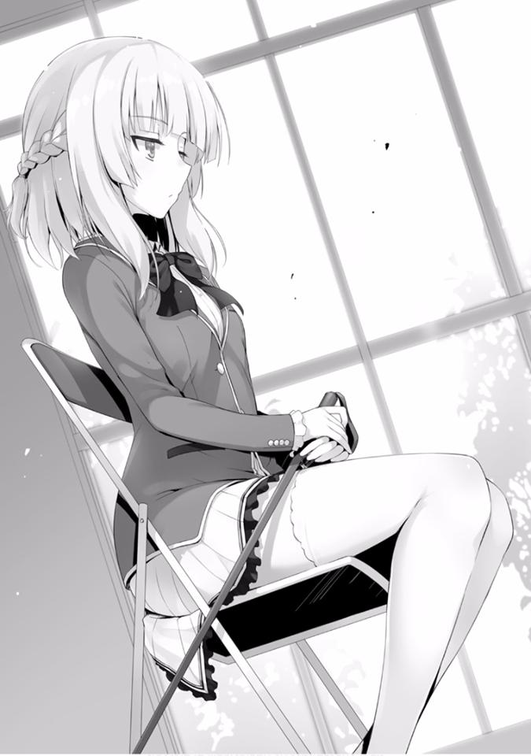
Es la otra líder de la Clase A que, según los rumores, divide las fuerzas de la Clase con Katsuragi.
Su cuerpo era delgado hasta el punto de entender por qué estaba ausente durante el viaje a la isla deshabitada, y como sus piernas no estaban en buenas condiciones, está sentada en una silla especialmente preparada.
Incluso cuando las miradas de sus alrededores se enfocaron en su figura, no dio muestras de prestarles atención.
¿Su pelo algo corto está teñido o no? Es plata. Se ha convertido en una fuerte característica distintiva suya. Su piel es pálida. Parece que su nombre es Arisu, y de verdad, casi parece que vino directamente del País de las Maravillas.
— Es muy linda...
Era inevitable que los chicos de la Clase D causaran un alboroto como ese.
Una ternura diferente a la de Kushida y Sakura, un tipo diferente de belleza. Esa figura efímera invocaba sentimientos de querer protegerla.
Pero los chicos no pudieron mantener el aire habitual bromista y hacer algo como llamarla. Tal vez era la fuerza en sus ojos lo que, sin importar cuán débilmente, emitían la sensación de una fuerte voluntad en ella. Pueden haber sentido que si se acercaban a ella, algo malo podría suceder.
Después de darse cuenta de que era el centro su atención, Sakayanagi sonrió amablemente.
— En cuanto a mí, es desafortunado, pero no seré de mucha utilidad. Perderé todas las competiciones por ausencia— Una voluntad sutil pero fuerte. Ella se disculpa por la debilidad de su cuerpo—. Terminaré incomodando a mi clase y a la Clase D. Por eso, ante todo permítanme disculparme.
— No creo que haya nada por lo que disculparse. Después de todo, nadie va a molestarte por eso.
Comenzando con Hirata hasta Sudou, nadie dijo una queja con respecto a eso a la chica. Nadie la atacó por algo que simplemente no se puede evitar.
— La escuela también está siendo dura. Si tu cuerpo no puede manejarlo, deberían pasarlo por alto.
— Así es, no te preocupes.
— Estoy muy agradecida por su amabilidad.
Al contrario de su reputación, Sakayanagi parecía ser abrumadoramente educada y madura. Ni siquiera emitía la impresión de ser agresiva como dicen los rumores.
Por otro lado, su oponente, Katsuragi, siguió mirando a Sakayanagi con una mirada de soslayo. Sin embargo, la razón por la cual la estudiante conocida como Sakayanagi tenía una fuerte presencia no era ni por su bastón ni por su silla.
Desde la perspectiva de Ike y los otros que no saben nada, debe parecer como si la Clase A y la Clase D estuvieran separadas una de la otra.
Sin embargo, desde mi punto de vista, estaba claro a primera vista.
Los estudiantes de la Clase A claramente estaban sentados como si hubiera una línea divisoria entre Katsuragi y Sakayanagi. Era evidencia del conflicto de facciones dentro de la Clase A.
La facción de Katsuragi, al principio, parecía igual, si no superior a la otra, pero ahora ni siquiera se podía ver eso. Era porque algunos chicos y chicas, incluyendo a Yahiko, se pararon junto a Katsuragi mientras casi todos los demás estudiantes estaban en la facción de Sakayanagi. Me hizo pensar que estaba causando esta escena a propósito para mostrar su poder.
Sakayanagi no participó ni en el examen de la isla deshabitada ni en el examen del barco. No se hizo una declaración, pero hay muchas posibilidades de que haya recibido grandes sanciones por su ausencia durante el examen especial en el barco.
En otras palabras, se creó una situación en la que sus aliados continúan creciendo sin que haya tenido que producir ningún resultado por sí misma.
No se trata de si su apariencia es linda o no. Con toda probabilidad, y algo desconocido para nosotros, Sakayanagi debe estar acumulando logros y
ganando confianza en ella. Además, los fracasos de Katsuragi también tuvieron un impacto en eso.
No es que conozca las circunstancias de otras clases, pero básicamente, Katsuragi es alguien que ejecuta estrategias sólidas.
No parece del tipo de los que continuamente cometen errores, pero tal vez esta chica está involucrada en sus fracasos.
De cualquier manera, Sakayanagi se disculpó por las deficiencias de su cuerpo y no mostró más signos de hablar. Casi como si estuviera observando las acciones y el comportamiento de Katsuragi, Hirata y los demás.
¿Tal vez estoy pensando demasiado?
Puede ser que se quede callada después de comprender que no será de ninguna utilidad durante el festival deportivo. Todo lo que sé ahora es que incluso si lo pienso, no recibiré ninguna respuesta.
Katsuragi puede o no haberlo notado, pero continúa su conversación con Hirata para confirmar sus estrategias.
— Por cierto, sobre nuestra relación de cooperación, estoy pensando que una relación en la que no interfiramos entre nosotros estaría bien. No te importa, ¿verdad?
— En otras palabras, ¿quieres decir que no compartirás los detalles de las competiciones en las que participarás?
— Eso es correcto. Si los anunciamos torpemente, puede conducir a problemas innecesarios. Si la información al respecto se filtrara a la Clase C o Clase B, causaría sospechas hacia la Clase D y terminaría provocando inconvenientes en nuestra cooperación. Además, analizar las capacidades de nuestro aliado la Clase D y tener todo eso en cuenta solo aumentaría los problemas. En el mejor de los casos, solo cooperaremos y lucharemos juntos. He juzgado que esto es óptimo.
— ... Eso puede ser así. Entiendo que esta es una escuela donde es difícil establecer una relación de buena fe, Katsuragi-kun. Además, a pesar de que somos aliados en el sentido de que somos un equipo, no cambia el hecho de que seguiremos compitiendo entre nosotros.
Hirata luego de confirma con el resto de la clase si tienen alguna objeción con respecto a esto. No hubo objeciones.
Ninguna de las dos clases podía confiar repentinamente en la otra y revelar todas sus cartas.
Si ese es el caso, mantener una distancia adecuada sería lo más seguro. Parece Horikita también está convencida ya que no dijo nada.
— Por otra parte, es un hecho que tendremos que celebrar una reunión de antemano en el caso de competiciones grupales. En cuanto a eso, en el futuro me gustaría hacer algo similar, ¿no te importa, verdad?
— No, creo que está bien. Tendré una discusión con todos.
— Entonces te lo dejo a ti.
La conversación entre esos dos fue directa al grano y sin pérdidas de tiempo.
Parece que iría sin problemas.
— Ayanokouji-kun. ¿Qué tipo de métodos crees que existen si queremos ganar en este examen especial?
Por otro lado, Horikita estaba tratando de señalar las pautas para el festival deportivo por su cuenta.
— Esta vez es el festival deportivo. Todo lo que la escuela está tratando de ver es la presencia o ausencia de habilidades atléticas... ¿no crees?
— En teoría, por supuesto, es cierto. Lo interpreto como una competencia ordenada de acuerdo con la capacidad. Si hay un factor distinto al físico que afecta los resultados, ¿no sería solo suerte?
— Suerte, eh.
Me pareció una observación poco apropiada, pero sin duda puede ser un aspecto de esto.
— A diferencia de los estudios, los oponentes con los que competiremos se eligen al azar. Como factor, juega un papel muy importante.
De hecho, hay un aspecto de este festival deportivo en el que los resultados pueden verse influenciados por la suerte que obtengas de tu equipo. Horikita,
que es capaz de derrotar al 80% de los oponentes, terminará perdiendo si se topa con el 20% restante compuesto por oponentes formidables.
Y en el extremo opuesto, alguien que no sea atlético y que solo pueda vencer al 10% de los oponentes, se enfrenta contra alguien aún menos atlético, puede ganar.
— Pero lo que estoy buscando no es algo incierto como eso. Quiero algo seguro. Usar las capacidades físicas como base, un método que no se fíe puramente en la suerte. Hubo posibilidades infinitas durante los exámenes especiales en la isla deshabitada y en el barco... Me siento de esa manera ahora. Pero esta vez, también seguramente-Ya sea por los graves errores cometidos hasta ahora, o por los fracasos que se han producido, en este momento podía ver a Horikita obsesionarse aún más con la victoria.
— Oye, ¿cuál crees que es la gran diferencia esta vez en comparación con los exámenes en la isla deshabitada y el barco?
— ...¿diferencia? Creo que es el mismo tipo de examen especial.
— De hecho, no voy a negar que es similar. Sin embargo, la escuela absolutamente no reconocerá que es lo mismo.
— No entiendo lo que dices. Esta vez hay una relación de cooperación con la Clase A, incluso en el barco se formaron grupos con diferentes clases y también tuvo lugar una batalla de equipo...
— Eso no es todo. En primer lugar, la premisa básica es diferente.
Ante mi manera reservada de hablar, Horikita mostró frustración y le conté de lo que me había dado cuenta.
— En lo que respecta a este festival deportivo, la escuela nunca ha dicho que fuera un “examen especial”. Nosotros los de primer año lo hemos estado llamando así, pero incluyendo a Chabashira-sensei, los otros profesores solo se han referido a él como el festival deportivo. Fujimaki de tercer año también. Incluso en las impresiones que nos entregaron, las palabras
“examen especial” no estaban escritas.
Horikita no se dio cuenta, o mejor dicho, no tuvo efecto en ella.
— Aun así, ¿cuál es el problema con eso? El mecanismo detrás de él, así como el aumento y la disminución en los puntos son prácticamente idénticos a un examen especial.
— Ciertamente, no hay mucha diferencia en su contenido. Pero su verdadera naturaleza es diferente. Por ejemplo, en un examen escrito normal, dejando de lado la compra y venta de puntos en secreto, en principio la mayoría de ellos pone a prueba tus habilidades.
Del mismo modo, este festival deportivo también debería considerarse básicamente como la búsqueda de tus capacidades físicas y sentidos. Ejecutar un truco torpe no haría impacto en ello. No, ha sido estructurado para que eso no suceda. Creo que la clase que realmente desafíe esto podrá exhibir su verdadero valor.
Por supuesto, eso no significa que los trucos sean imposibles o sin sentido. Pero si el festival deportivo ha comenzado, entonces cambiar la situación general sería esencialmente imposible. Por ejemplo, cómo hay cosas que puedes hacer antes y después de un examen escrito, pero a mitad del examen las cosas que puedes hacer son limitadas.
— La esencia de este festival deportivo es prepararse adecuadamente antes del evento. Para obtener resultados durante el evento real, eso es todo lo que hay que hacer. Lo simple es lo mejor.
— Lo que quiero decir es esa preparación antes del evento. Quiero que la Clase D definitivamente gane.
— Incorrecto. Lo que intentas hacer no es preparación. Intentas conquistarlo y buscas lagunas en las reglas.
— La diferencia entre esas cosas... no la entiendo.
— La preparación es, por ejemplo, quién participará en los eventos en qué orden, o quiénes en las otras clases son atléticos o no atléticos, descifrar qué orden tomarán. Y, asegurarnos de que la información sobre nosotros no se filtre. Ese tipo de cosas. Intentar conquistarlo y buscar lagunas es forzar a alguien a ausentarse antes de la competencia u obligarlo a retirarse a la mitad, ese tipo de cosas. Solo dices que quieres una mano fuerte para jugar, ¿verdad?
Es natural que Horikita, que siempre ha intentado atacar de frente hasta ahora y ha perdido, piense de esa manera.
Es natural querer hacer algo para garantizar que no te superen tus oponentes en este festival deportivo. Pero aun así, si es tan fácil de hacer algo al respecto, nadie estaría pasando por un momento difícil.
— En el mejor de los casos, ¿estás diciendo que es necesario luchar abiertamente y ganar?
Independientemente de qué respuesta elija Horikita a partir de ahora, no tengo intención de afirmarlo o negarlo.
¿Por qué? Porque la estrategia para ganar no es de una sola cara, sino que siempre consta de dos lados. Se trate de la isla deshabitada o del barco o este festival deportivo.
Es posible “ganar de frente” o “ganar por una laguna en las reglas”. Lo importante es elegir un estilo de lucha que se ajuste a tu persona.
En este momento, ella no es ni cara ni cruz. Se encuentra en el momento donde está a punto de elegir una de esas.
Si decimos que Katsuragi e Ichinose son cabezas, mientras que Ryuuen y yo somos colas, me pregunto cuál elegirá. Entiendo su sentimiento de querer recurrir a las “colas” después de haber usado eso hasta ahora. Pero aun así, es precisamente porque usar las “colas” es extremadamente difícil en este festival deportivo que se lo estoy advirtiendo.
— Lo que piensas de eso depende de ti. Horikita, ¿cuál crees que es la ventaja que la Clase D tiene ahora?
— ..... parece que la disputa entre la Clase B y la Clase C tendrá algunas ventajas para nosotros, tal vez.
Por un breve momento, pensé en ignorarla pero cambié de opinión. Debido a que Horikita Suzune ha vivido en soledad, su punto de vista también es excesivamente estrecho.
— Estás tratando de ampliar tu visión para poder ganar, ¿pero no es tu perspectiva aún demasiado pequeña?
— ¿Estás hablando de que ignoré a Ryuuen-kun quien rechazó cooperar con la Clase B? Dado que él rechazó esa conexión, creo que sin duda es algo positivo.
— ¿De verdad crees eso?
— ...Después de esto, Ryuuen-kun e Ichinose-san se reconciliarán y cooperarán, eso también es una posibilidad. No es que a Ichinose-san le agrade particularmente Ryuuen-kun, pero si es por el bien de la victoria, puede ignorar sus sentimientos y cooperar. Pero, ¿está mal celebrar en esta etapa? Simplemente juzgar que es positivo no es tan malo, ¿verdad?
— Eso es lo que quiero decir con perspectiva pequeña.
— Es una forma molesta de decirlo. Entonces, ¿qué es lo que ves?
— Hasta ahora, ¿qué has visto de Ryuuen? No dejará de pensar en ganar.
Incluso mientras habla casualmente, siempre estará tomando medidas para construir estrategias para ganar. Pero ¿por qué de repente rechazó cooperar con la Clase B? ¿Crees que realmente rechazó sin pensar la opción de cooperar?
— ¿Motivo del rechazo...? ¿Estás diciendo que tal vez la Clase B y la Clase C
ya están cooperando secretamente?
Es necesario pensar de esa manera, pero lo verdaderamente importante está en otro vector.
— Lo que deberíamos estar pensando en este momento no es su relación con la Clase B. Es el hecho de que hay una gran posibilidad de que ya haya pensado en una estrategia para ganar. De lo contrario, no hay ventajas en dejar el diálogo. La posibilidad de haya que mentido y que tuviera una discusión con la clase B debería tener más credibilidad.
— Eso --- creo que la posibilidad de eso es baja.
— Si la posibilidad de un terremoto o un incendio es baja, ¿estás diciendo que no hay necesidad de prepararse por si acaso? Parece que no comprendes la importancia esencial de prepararse para una emergencia.
— Eso...
Si no ocurren, entonces no hay nada mejor que eso, pero si lo descartas desde el principio, en el caso de que ocurran, nuestra reacción será más lenta.
— Por lo menos, creo que en este momento Ryuuen tiene más de una estrategia para ganar.
— Pero... si ese es el caso, entonces no es normal. Acabamos de enterarnos del festival deportivo. Para ganar o cualquier cosa...
— Es por eso que es necesario entender esa anormalidad. ¿Qué significa un ataque frontal, qué significa una apertura, podemos pensar sobre eso? Y
también, ¿hay alguna manera de que podamos tomar “precauciones”
contra eso? ¿Por qué no intentamos desesperadamente aprovechar uno?
Para llegar a la Clase A, esas cosas son necesarias, ¿cierto?
Si pensamos si tiene o no una estrategia ganadora en esta etapa, naturalmente la contrarrestaríamos.
Por supuesto, eso es algo que comencé a ver después de leer las estrategias y pensamientos de Ryuuen desde el incidente de Sudou hasta el examen en el barco.
En este momento, Horikita no puede verlo todavía, ¿eh?
— Bueno, estará bien si probamos varias cosas. Preparémonos para que al menos podamos evitar el fracaso.
— ¿Te importa no hacer la premisa de que vamos a fracasar?
Ahora estoy un poco ansioso por ver hasta qué punto Horikita es capaz de pensar.
*****
Desde la ventana podía escuchar las voces de los estudiantes en las actividades de su club. A pesar de que el festival deportivo se acercaba, todos y cada uno
de ellos estaban de buen humor y no escatimaban ningún esfuerzo en su entrenamiento diario.
Conectando los auriculares a mi teléfono, abrí el archivo que recibí antes y verifiqué la situación.
— Ya veo...
Ahora con esto, he comprendido más o menos la situación. Si era necesario, pensé que debería haber puesto 2 o 3 trampas, pero parece que será innecesario.
Satisfecho con el excelente curso de eventos, decidí regresar al dormitorio.
— Te has quedado inusualmente tarde, Ayanokouji.
Camino a la entrada principal, me encontré con Chabashira-sensei, que estaba rociando agua con una manguera.
— Ese puede ser el caso. ¿Está de servicio?
— Algo así. Para ser precisos, estos alrededores se han convertido en algo así como mi puesto, eso es todo.
Al decir eso, y luciendo como si estuviera acostumbrada, continuó rociando agua.
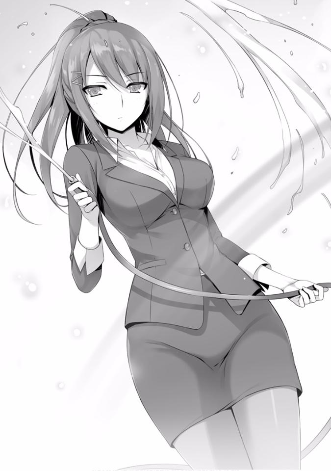
— A diferencia de los niños, las personas en la sociedad están ocupadas de diversas maneras, en particular ahora que el festival deportivo es inminente. Pero aun así, ¿qué pasó hoy? Esta es la primera vez que te veo merodeando por la escuela.
— ¿No es eso un poco exagerado?
— ¿Has completado tus preparativos para el festival?
— Creo que lo he entendido más o menos durante las clases. ¿No es así?
Hirata, Horikita y Sudou incluidos, todas sus estrategias y tácticas han sido escuchadas también por Chabashira-sensei.
— Como eres tú, creí que pensarían en alguna idea o estrategia excéntrica.
— No hay tal cosa en absoluto.
— ¿Nada en absoluto? Estoy segura de que lo entiendes, pero---
Diciendo eso, Chabashira-sensei trató de traer el tema, pero al encontrarme con sus ojos, se detuvo. Incluso si hablamos de cosas tan innecesarias en un lugar como este, nadie puede ganar nada.
— No he olvidado lo que me dijo antes, sensei. Pero en cuanto a qué hacer es algo que soy libre de decidir por mí mismo.
— Ciertamente, ese es el caso. No debería estar metiéndome innecesariamente. Sin embargo, si continúas haciéndolo a tu ritmo, también es un hecho que ya no será así. Si pierdo la razón para protegerte, te abandonaré. Debido a que una maestra común y corriente ante esa presión no es una tarea simple. Será problemático si no produces resultados que valgan la pena proteger.
No me importan esas expectativas egoístas.
Sintiendo irritación por ser influenciado a diario, decidí dejar este lugar. Si solo esta maestra no hubiera traído un tema innecesario como ese, podría haber pasado sin enredarme en esta situación problemática.
No... puede ser que este problema sea solo cuestión de tiempo, tarde o temprano…
— Me excusaré.
— Claro, ten cuidado en tu camino de regreso.
Mientras se preocupaba por los pocos cientos de metros del camino de regreso, me dirigí al dormitorio.
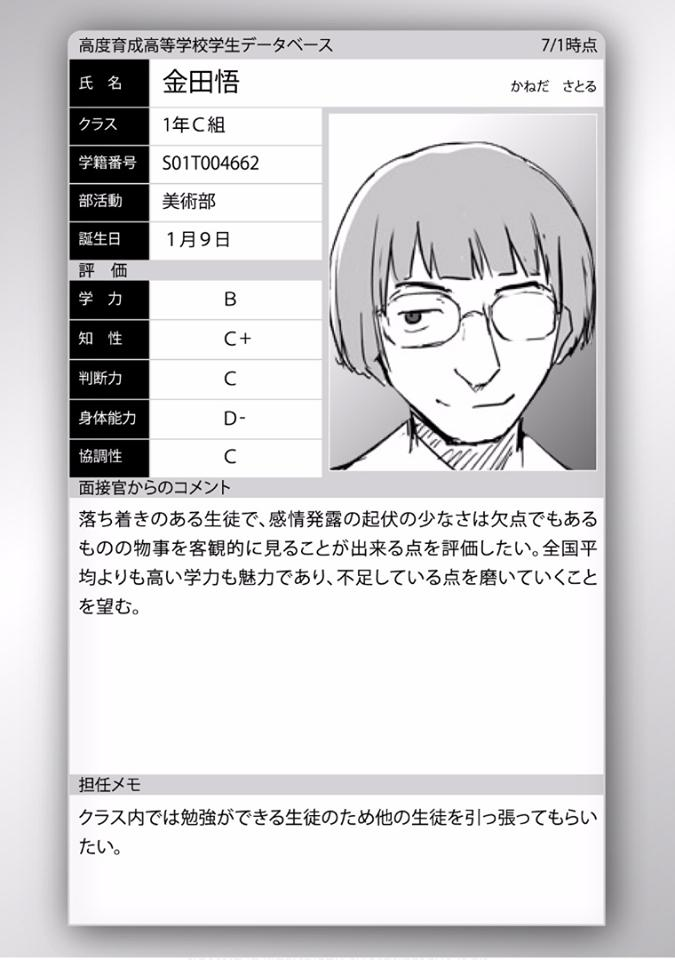
LA PLANIFICACIÓN ESTRATÉGICA DE LA CLASE D
Han comenzado los preparativos a gran escala para del festival deportivo que iniciará dentro de un mes.
La larga clase de 2 horas de duración que se imparte una vez a la semana ha sido declarada como un período libre y que podemos utilizarla como lo deseemos, la manera en que pasemos ese tiempo queda a criterio de la clase.
Hay dos cosas que debemos decidir para preparar el evento.
¿Cómo decidir el orden para los eventos de Participación Universal? Y también,
¿quién participará en qué eventos solo por recomendación? Está claro que estas dos decisiones tendrán una gran influencia en el resultado.
Aquí, por encima de todos, el líder de esta clase, Hirata, tomó la iniciativa.
Chabashira-sensei, que se movió hacia la parte posterior del salón de clases abandonando el escenario, no dijo una sola palabra. Probablemente tiene la intención de vigilar la situación.
— Para preparar el festival deportivo comenzaremos a tomar medidas, pero antes de comenzar nuestra práctica creo hay varias cosas que debemos decidir. Las cosas importantes son el orden de participación para los eventos universales y los de participación por recomendación. Creo que es importante decidir cómo lo haremos.
— Aunque digas que decidamos, ¿cómo lo vamos a hacer?
Desde la perspectiva de Sudou, comienza una discusión poco interesante.
— Sí. Por ejemplo, en el caso de la Participación Universal---
Tal vez para que sea más fácil de entender que una explicación, Hirata agarró la tiza y comenzó a escribir en la pizarra.
Parece ser un hombre que maneja este tipo de cosas hábilmente. “Levantar la mano” y “Habilidad”. Escribió esas dos cosas.
Mientras explica, Hirata agrega una posdata.
— Sigue siendo un boceto inicial, pero básicamente creo que se reduce a estas dos. Este es el sistema de “levantar la mano”, donde escucharemos el orden de participación que desean. Y este es el sistema “Habilidad”, donde veremos sus habilidades para aumentar la eficiencia. Tiene que ser uno de estos dos, ¿verdad? Tienen sus propios pros y contras. Las ventajas del sistema de “levantar la mano” son, por supuesto, que todos obtendrían su orden de participación deseado y podrán divertirse de esa manera. Las desventajas son que, en el caso de que los órdenes deseados se superpongan, no todos pueden hacer lo que quieren y los resultados serán desiguales.
Si adoptamos el sistema en el que permitimos que todos lo hagan como quieran con respecto al orden, inevitablemente ese será el resultado. Sin embargo, puede reducir significativamente los obstáculos emocionales.
— Lo siguiente es el sistema de “Habilidad”. Esto es extremadamente simple y es el arreglo óptimo para asegurar que ganen los que tienen las habilidades más altas. Los pros son que podría aumentar las posibilidades de ganar más que el sistema de “levantar la mano”, pero ya que depende únicamente de los individuos fuertes podría disminuir las posibilidades de ganar para los demás y me preocupa que termine ignorando lo que cada uno de ustedes quiere. En teoría, creo que podemos decir lo mismo para los eventos solo por recomendación. Lo he pensado más o menos, pero si tienen alguna idea además de estas dos, no duden en expresar su opinión.
Hirata termina su breve explicación.
Incluso los estudiantes que no pudieron entender la explicación verbal, a partir de los detalles escritos en la pizarra, podían comprender lentamente los pros y los contras de cada sistema.
Los pensamientos de la mayoría de los estudiantes deben haber caído bajo uno de los planes que Hirata había propuesto. Especialmente dado que no se esperan otros planes.
— No importa cómo lo mires, deberíamos basarnos en la capacidad, ¿no?
Después de todo, cada uno es el que conoce mejor sus propias habilidades —Parece que Sudou no tiene intención de elegir nada más que eso—. Si gano, las posibilidades de que gane la clase también aumentarán. Eso es motivo de celebración.
La forma en que lo expresó fue un desastre, pero es cierto. Que Sudou despliegue al máximo su alta capacidad física es un elemento indispensable en este festival deportivo.
— Bueno... me molesta, pero puede ser así.
Ante las palabras de Sudou que eran bastante lógicas, las chicas susurraron aprobándolo.
Después de eso, comenzaron a llegar palabras de apoyo a Sudou por parte los chicos.
— No soy muy bueno en los deportes. Dejando de lado la Participación Universal, si Sudou está dispuesto a hacerse cargo de los eventos de Participación por Recomendación entonces no me importa estar de acuerdo.
Para estudiantes como Yukimura que se especializan en lo académico, la actividad física es un campo en el que son débiles.
— Entonces está decidido, ¿verdad? Voy a participar en todos los eventos de Participación solo por Recomendación.
Sudou que ferozmente declaró eso y los estudiantes que lo apoyaron. Cubría a los estudiantes que eran poco atléticos y priorizaba la victoria de la clase.
— Si todos están de acuerdo con esa estrategia, entonces en cuanto a los eventos de Participación por Recomendación podríamos hacerlo de esta manera---
— Espera.
Fue justo antes de que la propuesta fuera aprobada.
— Tengo otra propuesta que hacer.
La generalmente taciturna Horikita, dijo eso y se unió a la conversación.
Muchos estudiantes, sorprendidos por su inesperada intervención, centraron su atención en ella.
— Si tenemos que elegir entre estas dos estrategias, deberíamos ir con el sistema de “Habilidad” como dijo Sudou-kun. No tengo objeciones hasta ahí. Pero con eso, no hay garantía de que podamos ganar contra las otras clases.
— Por supuesto que eso es verdad.
— De ser así, entonces es obvio que debemos priorizar el permitir que los más atléticos participen en los eventos de Participación por Recomendación que elijan y, de manera similar, en los eventos de Participación Universal, debemos hacer que formen las mejores combinaciones posibles para la victoria y compitan de esta manera. Nos permitirá obtener su máximo potencial. Si tengo que decirlo de manera simple, los rápidos deberían formar equipo con los lentos.
Básicamente significa que para Hirata y Sudou, que son rápidos, para evitar un choque entre ellos, se necesitarían ajustes. Por supuesto, si es para ganar esa es también una opción.
Pero a la vez, también es una opción que descarta cruelmente a los débiles.
— Espera un minuto. Esa estrategia también significa que nuestras posibilidades de ganar disminuirán, ¿no?
La primera en objetar fue la estudiante llamada Shinohara.
Para asegurar las posiciones más altas sin importar qué, es necesario forzar una colisión entre las personas más débiles y más fuertes. Inevitablemente, dado que también se establece lo contrario, la posibilidad de que los estudiantes más débiles ganen es extremadamente baja.
— No puedo aceptarlo. Solo porque no eres muy atlético, si te ves forzado a competir contra alguien más fuerte, absolutamente no hay oportunidad de ganar. Los privilegios se otorgan hasta el tercer lugar, así que no quiero descartar esa posibilidad.
— No se puede evitar, porque es por el bien de la clase.
— Sé que es para la clase... pero no quiero perder mis puntos privados.
— Si la clase gana, habrá una compensación proporcional. ¿Estás insatisfecha con eso?
— ¿Puedes obtener una gran cantidad de puntos para las pruebas si ganas un premio, no es injusto rendirse?
— Entiendo tu deseo de pensar de esa manera. Sin embargo, eso también es extraño. Desde el comienzo, sin depender del privilegio de esos puntos, estaría bien si estudias como de costumbre. Además, si la posibilidad de llegar en tercer lugar sigue siendo baja, entonces no habría ningún problema, si no ganas el premio, ¿verdad? En primer lugar, los eventos no son tan simples para que puedas ganar un premio con tu capacidad atlética, ¿cierto?
Ambas fueron insistentes y no mostraban signos de ceder. En particular, Horikita aprovechó su ventaja y atacó obstinadamente.
— No todos son tan inteligentes como Horikita-san. No pongas a todos en el mismo barco.
— Entonces estudia todos los días. No quiero que vengas con excusas.
“Cierto, cierto”, opiniones apoyando a Horikita resonaron en toda el aula en gran cantidad.
La opinión de Horikita, que se centraba en la eficiencia, era favorecida por los estudiantes atléticos liderados por Sudou, así como por los estudiantes que tienen como objetivo la Clase A y los estudiantes que tienen problemas con los deportes.
Shinohara, mientras parece frustrada, parece haber perdido su voluntad de luchar. Con toda probabilidad, hay estudiantes como Shinohara que piensan que podrían colarse hasta el tercer lugar al menos.
Emparejados con estudiantes fuertes como Sudou o con estudiantes poco atléticos en la batalla de caballería y la carrera de tres piernas, es un hecho que la obtención de la victoria se volvería distante.
— Déjalo ya, Shinohara. Si perdemos por tu culpa, ¿vas a asumir la responsabilidad? ¿Eh?
— Eso...
En este festival deportivo, dominan los que tienen una gran capacidad atlética.
Sudou, que se considera que está por debajo de todos los demás en lo que respecta a lo académico, está emitiendo un poderoso resplandor y tiene autoridad.
El plan de prioridad a la capacidad que Horikita y Sudou propusieron es un plan sólido y no se puede derribar fácilmente.
Shinohara ya no tiene la capacidad de objetar. Una conclusión se acerca rápidamente.
— Honestamente, qué problemático es tener que hablar con personas tontas... aunque a ti mismo no parece interesarte esta situación. Si eres lo suficientemente despreocupado como para jugar con tu teléfono, ¿por qué no piensas en formas en que podamos ganar?
— Estará bien si se los dejo a ti y a Hirata, ¿verdad?
Cerré la pantalla de mi teléfono y lo coloqué dentro de mi bolsillo.
La discusión terminó, era justo lo que pensaba.
— Ahh --- ¿me dan un momento? Me opongo. Como dijo Shinohara, ¿qué pasa con dejar al resto de los estudiantes en problemas? ¿Estás diciendo que al hacer eso, puedes unificar a la clase?
La que dijo eso fue Karuizawa. Como si estuviera protegiendo a Shinohara, ella mira a Horikita.
— Unificar, significa exactamente eso. ¿Entiendes?
— No del todo. No entiendo. Oye, ¿qué piensas, Kushida-san?
Karuizawa llama a Kushida, quien estaba “inusualmente” callada y observando la situación.
Kushida pareció ligeramente sorprendida, pero inmediatamente después de parecer pensar en ello, habló.
— Es un problema difícil. Estaba pensando que entendía los sentimientos de ambas partes. Como Horikita-san, me gustaría ganar como clase. Como Shinohara-san dijo, también quiero dejar la posibilidad para que todos ganen, supongo —Diciendo eso, ella continuó hablando—. Si hay un plan alternativo, entonces combinar ambas opiniones sería la forma ideal. Una forma en la que tanto la persona que ocupa el primer lugar como la que está al fondo podrían estar convencidas.
Mientras respondía así, pude escuchar muchas voces de consenso dentro de la clase.
Tal vez ella ya había asumido que alguien diría algo similar, Horikita inmediatamente intervino.
— Por supuesto que lo he pensado. Una forma que ambas partes podrían aceptar. Es decir, para los estudiantes que sienten que no necesitan los puntos de las pruebas para obtener una calificación alta y usar los puntos privados que obtuvieron de eso para compensar los puntos perdidos por los estudiantes que se clasifiquen en la parte inferior. Toda la clase compartirá la ganancia y la pérdida. Si es así, no hay quejas, ¿verdad?
Un plan que, a cambio de reducir la posibilidad de victoria, compensa el riesgo en caso de derrota.
Si es así, un poco de aceptación debe aumentar. Aunque por supuesto, eso todavía deja en problemas a los últimos 10 de todos los años escolares.
— Oh, eso está bien ¿no? No habrá pérdidas, no importa cuántos atajos tomemos de esta manera.
Sudou dijo eso y se rió con desprecio como diciendo “qué grupo tan patético”.
— Pero eso es solo para los puntos, ¿verdad? La posibilidad de ganar el premio disminuye. ¿Qué piensan todos?
Incluso en esa situación, Karuizawa todavía expresó su desacuerdo. Luego llama a las chicas que pertenecen a la facción Karuizawa.
— ... Si Karuizawa-san se opone, entonces supongo que también me opongo.
Una tras otra, las chicas que seguían el ejemplo de Karuizawa comenzaron a mostrar su oposición.
— ¿Todas son idiotas? ¿Objetar solo porque ella se opone? Completamente ilógico. Este es un examen, así que es obvio que deben construir una estrategia basada en ganar de manera eficiente. Las otras clases no tienen a ningún imbécil como ustedes.
— Eso es algo que Horikita-san no entiende, ¿verdad? En este momento estoy en contra, también hay otros que están en contra, también piensa en esas personas.
La influencia de Karuizawa, que ha unido a las chicas, era fuerte y el apoyo para el plan que priorizaba la victoria de la clase que Horikita defendía dejó de existir.
— Cálmense, ustedes dos. Si no podemos ponernos de acuerdo sobre nuestras opiniones, entonces no tenemos más remedio que tener una votación.
Era inevitable que terminara así. Para mejorar esta situación estancada, Hirata intervino.
— Creo que deberíamos resolver esto imparcialmente votando.
— Si Yousuke-kun lo dice, estoy de acuerdo---
— ... Es cierto. Creo que no es el momento de pelear entre nosotros. En cualquier caso, he protestado. Espero que todos ustedes hagan el juicio correcto.
Horikita se sentó frustrada y me miró.
— Ayanokouji-kun, ¿puedes callarla?
— No hay forma de que pueda callarla, ¿verdad?
— Recientemente, has estado en contacto con Karuizawa-san ¿no es eso lo que está causando que ella actúe tan mimada?
— No, Karuizawa era ese tipo de persona desde el principio ¿no?
Quizás Horikita se convenció por ese punto, pero silenciosamente pronunció
“indudablemente”.
Sin embargo, no podía ocultar su irritación hacia Karuizawa que no podía proporcionar una base sólida y las chicas que cambiaron su opinión en función de sus sentimientos.
— Ahora bien, el plan centrado en completa habilidad que ideó Horikita-san y el plan que enfatiza al individuo que incluye la opinión de Karuizawa-san.
¿Cuál es mejor? ¿Lo decidiremos levantando la mano? Si hay personas que encuentren difícil elegir, estoy pensando en aceptar que no voten.
El plan de Horikita que da tratamiento preferencial a los habilidosos. El plan de Karuizawa que respeta al individuo y se preocupa por el todo.
Parece que el futuro de la clase y el impacto en el examen dependerán de por cuál de ellos se inclina la clase. Por supuesto, no es que tenga interés en eso, aunque...
— Entonces primero, aquellos a favor del plan de Horikita-san.
— Sí. Yo, por supuesto, estoy de acuerdo con el plan de Horikita. La razón es simple: para ganar. Mientras más personas atléticas participen, más ganamos. ¿No está bien?
Sudou tomó la iniciativa y levantó la mano.
Y después de él había estudiantes como Yukimura y Sakura, los estudiantes que no tenían confianza en su capacidad atlética dieron su aprobación.
Por otro lado, los estudiantes que no pueden ganar contra el talentoso pero que todavía son capaces en cierta medida, o el grupo de Karuizawa, no levantaron la mano.
— 16 votos. Gracias, pueden bajar sus manos ahora.
Si este número es grande o pequeño, es algo que se decidirá según la cantidad de abstenciones que haya.
— Espera, Ayanokouji-kun. ¿Podría ser, estás de acuerdo con el plan de Karuizawa-san?
Horikita, que naturalmente se dio cuenta de que no levanté la mano, me golpeó.
— Relájate, mi política es no votar.
— ... Si ese es el caso, ¿no hubiera estado bien seguir mi plan?
— No es que tu plan sea necesariamente el único, ¿verdad?
— No entiendo. Elegir la opción que da a la clase la mejor posibilidad de ganar, finalmente resulta en la adquisición de grandes cantidades de puntos privados. Los puntos ganados por ganar eventos son insignificantes.
Si dices que está mal, entonces me gustaría que me des una razón clara de por qué.
— No dije que estabas equivocada. Solo digo que esa no es la única respuesta.
Los “peones prescindibles” enviados para colisionar y aplastar a enemigos formidables terminarán el festival deportivo sin haber ganado ningún punto.
Bueno, Horikita al menos entiende eso. Es solo que ella lo tomó como un sacrificio necesario para ascender.
— Es solo que los otros estudiantes no están mirando hacia adelante como tú.
— Entonces, el próximo paso es el plan de Karuizawa-san. Ganar donde podamos hacerlo, y divertirse donde podamos. Gente a favor de este plan por favor levanten sus manos.
Aparte del grupo Karuizawa, las manos comenzaron a levantarse. Hubo varios votos.
Sin embargo, justo cuando Karuizawa levantó la mano, una tras otra las chicas siguieron su ejemplo.
Sin embargo---
— ... el resultado del voto de la mayoría es... 16 votos para el plan de Horikita-san y 13 votos para el plan de Karuizawa-san. ¿Puedo asumir que el resto son abstenciones?
El recuento total se completó sin ninguna objeción.
Se puede decir que los votos que Karuizawa había reunido no se debían al contenido de su plan, sino más bien porque se les había instruido que lo hicieran.
No es que esto se deba a que la confianza en Karuizawa es baja, sino simplemente porque el plan de Horikita es realista para una victoria y es eficiente, es de lo que todos deben haberse dado cuenta.
La estrategia de la Clase D será actuar para ganar, no como individuos, sino como clase, es lo que se ha decidido.
— .......
Ya que fue aprobado por mayoría de votos, Karuizawa no permitirá que se produzca ninguna protesta.
— Con esto concluye, Karuizawa-san. Ahora bien, Hirata-kun, te dejaré el resto a ti.
Cambiando de opinión, Karuizawa también necesita elegir este proyecto para ganar.
Por supuesto, tampoco creo que se haya elegido una mala opción. En primer lugar, las personas poco atléticas no tomarán la iniciativa de decir que les gustaría participar en esto y lo otro.
Inevitablemente, el papel de los recomendados recaerá en tipos atléticos como Sudou y Hirata.
— Entonces, con respecto a la cantidad de participantes para los eventos de Participación solo por Recomendación---
— Competiré en todos los eventos. Si hay alguien que se oponga a eso, entonces tendré una confrontación directa con ellos.
Declarando eso contundentemente, Sudou habló sobre la estrategia que no ha cambiado desde el principio.
Además, parece decidido a obligar a cualquiera que se queje a rendirse. Es una declaración excesivamente arrogante, pero su efecto es absoluto ya que no hubo descontento o quejas de nadie.
Dado que los estudiantes talentosos se reunirán a partir de ahora, Sudou es el primer candidato en la lista confirmado.
— También participaré en tantas competiciones como sea posible.
Como era de esperar, la que se recomendó era Horikita.
Karuizawa endureció ligeramente su expresión. Las chicas a su alrededor susurraban en sus oídos. Me pregunto si están lanzando improperios.
Luego, siguieron las auto recomendaciones y recomendaciones y uno tras otro se decidieron los participantes para los eventos de Participación por Recomendación. Pero no todas las competencias se llenaron tan fácilmente y solo se llenaron alrededor de 1/3 de los eventos de Participación Universal.
Como se propuso, Sudou participará en todas las competiciones y aparte de él, en la mayoría de los eventos, Horikita y Hirata y, sin duda, Kushida, Onodera y los otros estudiantes atléticos competirán. El resto todavía están en blanco.
— Oye, Kouenji. ¿No vas a cooperar?
Sudou dijo eso mientras miraba al hombre que no había dicho una palabra desde que comenzó la discusión. Es porque Sudou reconoce que este hombre posee un potencial igual al suyo, si no es que mayor.
Si Kouenji participa en serio, al menos en competiciones individuales, el primer puesto ya está seguro.
— Antes, tampoco levantaste la mano.
— No estoy interesado. Ustedes pueden hacer lo que quieran.
— No jodas, bastardo.
— No estoy jodiendo. No hay ninguna razón por la que puedas forzarme. En primer lugar, incluso si tuvieras la autoridad para obligarme, no tengo intención de escucharte.
En otras palabras, significa que no importa lo que suceda, Kouenji no tiene intención de cambiar.
— No creo que haya necesidad de decidir todo aquí, Sudou-kun. Kouenji-kun también debe tener sus propias fortalezas y debilidades, e invitarlo sin razón no siempre es lo correcto.
Terminando por Kouenji e instando a Sudou a que se calmara estaba Hirata.
— Al menos, lo que se decidió en la discusión de hoy es la estrategia de la clase y la voluntad de aquellos que desean participar en las competiciones individuales. Creo que podemos permitirnos decidir el resto cuidadosamente.
Y con ese comentario, la discusión ha llegado a su fin.
Sin embargo, una parte de los estudiantes puede haber sentido descontento con esta discusión.
¿Por qué Karuizawa continuó oponiéndose al plan de Horikita? En lo que respecta a su capacidad atlética ella es promedio.
Para ella, el plan de Horikita, que implicaba compartir tanto las alegrías como el dolor entre sí, no debería haber sido algo malo. No estoy seguro de cuántas personas sintieron eso.
*****
No, no fue contacto visual en sí.
Es solo que busqué una abertura y le eché un vistazo, pero casualmente, notó mi mirada.
Sin embargo, obviamente debe haber sido porque mis intenciones no le llegaron, ya que Karuizawa salió del aula con dos de sus amigas. Como pensé, a menos que la contacte directamente no hay forma de que ella lo entienda.
Tomando mi mochila en la mano, me moví para regresar a mi habitación, dejando el aula un minuto después de Karuizawa.
— Oye.
Bajando las escaleras, mientras me dirigía hacia la entrada principal, fui detenido por Karuizawa quien estaba sola.
— ¿No te habías ido?
— Pensé en irme, pero creí que querías decirme algo así que esperé.
¿Estaba equivocada?
No pude evitar sorprenderme por lo que dijo.
— No.
— Bueno, de todos modos también tengo algo que decirte. ¿Te importaría escucharme brevemente?
— Adelante —insté a Karuizawa a hablar.
— El correo que me enviaste. Me gustaría conocer tus verdaderas intenciones.
Diciendo eso, abrió su teléfono y me mostró el correo. Ahí, estaba escrito lo siguiente:
“No importa lo que sea, objeta la opinión de Horikita. Luego, inmediatamente, pregúntale a Kushida su opinión”.
Eso fue lo que le había ordenado a Karuizawa que hiciera en medio de la clase.
— En lo que respecta a la improvisación, tienes una manera de entretejer una buena historia. En esa situación, refutabas bastante bien.
— De verdad. Si tuviera que decirlo, estaba de acuerdo con la opinión de Horikita-san. No entiendo muy bien por qué llamar a Kushida-san.
Entonces, ¿cuál es el significado de esa orden?
— No tendrá fin si te preocupas por el significado detrás de todas y cada una de mis acciones. Y aunque lo desees, no hay garantía de que te responda.
¿Entiendes lo que quiero decir con esto?
— Me estás diciendo que obedezca tus órdenes sin preguntar la razón detrás de ellas. Lo entiendo.
— Eso es lo que quiero decir.
La obediente Karuizawa no indagó más.
— Entonces, aparte de eso, dime algo. No levantaste la mano, pero ¿cuál pensaste que era la correcta?
— Tendría que decir que ambas tenían razón. Después de todo, dónde colocar el énfasis depende del individuo.
— Esa no es una respuesta. Al final, no respondiste lo que realmente estás pensando.
— Desafortunadamente, tengo una política de básicamente no pensar en términos de “cuál”.
— ... ¿Qué pasa con eso? No entiendo. ¿Qué quieres hacer? ¿Pretendes hundir las otras clases en el caos? ¿O estás pensando seriamente en llevar la Clase D hasta la Clase A?
— Por lo menos, Horikita cree eso.
“Eso no es lo que quiero decir”, como diciendo eso, Karuizawa suspiró y me miró.
— Lo que estoy preguntando no es lo que piensa Horikita-san. Me gustaría que me digas ya lo que estás viendo y lo que estás buscando.
— Veamos. Si tuviera que decirlo, no tengo ningún interés en llegar a la Clase A. Es solo que estoy empezando a sentir que preparar esta clase para poder elevarse hasta la Clase A no es tan malo.
— ¿Qué significa eso? No entiendo muy bien cuál es la diferencia, ¿qué tan condescendiente pretendes ser?
Es mejor evitar que Chabashira-sensei llegue hasta aquí.
— Incluso si lo digo en palabras ahora, no me vas a creer y no tengo forma de demostrarlo. Por eso pondré una línea protectora para que me creas muchas veces. En este festival deportivo, aparecerá un traidor dentro de la Clase D. Luego, esa persona filtrará información de la Clase D al exterior.
— Espera, ¿eh? ¿¡En serio lo estás diciendo!?
— Si llega ese momento, también me creerás. Lo que estoy viendo, lo que he visto, eso es.
— ¿Qué quieres decir? Dime los detalles.
— En este momento, no puedo. Pero, cuando llegue el momento, te contaré todo. Ahora mismo vámonos, estamos destacando demasiado aquí.
— Iba a hacerlo incluso si no me lo dijeras. Si me ven junto con alguien tan sombrío como tú, mi valor disminuirá. Pero... por casualidad, incluso si aparece un traidor, estaremos bien, ¿verdad?
— Sí. Ya me he preparado para esa ocasión.
Diciendo eso, le mostré mi teléfono.
Por supuesto, Karuizawa podía no saber exactamente qué es esto.
De cualquier manera, cuando ella hizo una mueca de insatisfacción, bajó las escaleras. Me despedí y exhalé un suspiro.
La estrategia de la Clase D se ha solidificado más o menos. Además de la estrategia que he elaborado.
Ahora bien, me pregunto qué tipo de batalla ha concebido nuestra aliada la Clase A. Teniendo en cuenta la personalidad de Katsuragi, probablemente van a ejecutar un plan sólido pero...
... La existencia de Sakayanagi, naturalmente para el Equipo Blanco, y para la Clase D también es positiva.
Por ejemplo, digamos que hubiera un dispositivo de escape que solo podía salvar a una persona, y los que están en una situación difícil son una persona sana y una discapacitada. En esa situación, lo que quiero decir es que la persona sana no tiene la obligación de entregar el dispositivo a la otra persona a causa de su discapacidad física.
Como la persona es un lisiado que no puede resistirse, está bien robarle el dispositivo de escape incluso si se requiere golpearlo físicamente. Nacido como individuo, naturalmente también tienes derecho a vivir.
En un escenario de emergencia, la ilegalidad de esto será desechada. No hay nada justo ni injusto sobre eso. El hecho de que Sakayanagi no pueda participar en deportes no significa que haya necesidad de ser bueno con ella.
— Pero aun así......
Solo por tener un pasado complejo, Karuizawa es mejor de lo que había imaginado para leer a las personas y sus emociones. Más que cualquier cosa, el
hecho de que logró hacer que sus alrededores “no” la vieran de esa manera le da bastantes puntos.
Una vez más, habiendo terminado este asunto inesperado, me sentí satisfecho y decidí regresar.
*****
Practicar desde el momento de la inscripción a las competiciones hasta un momento antes de éstas. La mayoría de las clases de educación física se establecieron como períodos libres y a los estudiantes se les dio permiso para hacer cualquier tipo de práctica que desearan.
— Lo he tomado prestado.
Para el período de educación física al día siguiente, Hirata presentó una solicitud a la escuela y obtuvo un instrumento para la medición de la fuerza de agarre.
El plan de Horikita que fue aprobado, basado en la prioridad de la superioridad atlética, era uno que simplemente reunía a aquellos que confiaban en su fortaleza.
Es simple pero funcionará lo suficientemente bien como criterio. En particular, hay muchas competiciones en las que se participaran que requieren pura fuerza.
— Hagámoslo en bien. Vamos a medir la fuerza de agarre de nuestros brazos,
¿sí? Si me dicen los resultados, los registraré. He tomado prestados dos para poder medir más eficientemente y ahorrar tiempo.
Diciendo eso, distribuyó uno a Hondou y Yukimura que estaban a su lado. Es probable que decida hacer las mediciones en sentido de las macillas del reloj y a la inversa.
Pero a Sudou no le pareció y agarró con fuerza el instrumento y se lo quitó.
— Comencemos conmigo, Hirata. Porque comenzando conmigo, será posible establecer estándares altos.
No era una lógica que entendiera bien, pero comprendí que quería hacer alarde de su fuerza.
— Umm... entonces comencemos con Sotomura-kun además de Sudou-kun.
Teniendo que cambiar el orden a la fuerza, el punto de partida tuvo que ajustarse una vez más.
— Sigue mirando, Ayanokouji. Esta es la fuerza del hombre que llevará a esta clase a la victoria.
Sudou se ríe con confianza y muestra su habilidad al convertirse a la fuerza en el primero en probar.
— ¡Uraaa!
Lleno de espíritu de lucha, el hombro de Sudou se estremeció cuando agarró el instrumento en su mano derecha.
Los valores numéricos digitales aumentan rápidamente. En un instante, subió por encima de 50 y llegó a 60 y continuó subiendo hasta 70. Luego, el valor que se mostró al final fue de 82,4 kg.
En los alrededores se alzó un revuelo.
— ¡Eres monstruosamente fuerte!
— Heh. Es porque siempre he estado entrenando. Esto es natural. Oye, tú también, Kouenji.
Como si fuera una provocación, le mostró el valor a Kouenji mientras le entregaba el instrumento.
— No estoy interesado. Puedes ignorarme.
Mientras se pulía las uñas, Kouenji se sopló las yemas de los dedos.
— ¿Tienes miedo de perder contra mí? Bueno, después de ver un valor así, es comprensible.
Hizo una provocación tan barata, pero parece que Kouenji no tiene intención de responderle, ya que no se volteó para mirarlo.
— Tch... oye, Ayanokouji.
Como estaba al lado de Sudou, me entregaron por la fuerza el instrumento de medición.
— No, puedo hacerlo más tarde.
— ¿Huh? ¿Tú también? No jodas, hazlo en orden.
Prefiero que Sudou no me lo diga, ya que tomó su turno por la fuerza, pero ciertamente si vamos en este orden, el próximo sería yo.
Sin embargo, pensar que la segunda persona que se medirá soy yo... Sé que los 82.4 kg de Sudou tienen un valor considerablemente alto, pero me pregunto cuál sería el promedio para un estudiante de 1 ° de preparatoria.
He sujetado cientos de miles de estos instrumentos de medición en el pasado, pero nunca antes he escuchado cuál es el promedio para los de mi generación.
Porque nada a excepción mis registros personales se guardaron.
— Oye, Sudou. ¿Aproximadamente cuánto sería el promedio para un estudiante de preparatoria?
— ¿Eh? No lo sé. ¿No debería ser alrededor de 60?
— 60, eh...
Agarré el instrumento de medición que recibí de manera que el monitor fuera visible para mí.
Tu fuerza de agarre no es simplemente proporcional al grosor de tu brazo. Por supuesto, no es que no estén relacionados, pero lo importante es el músculo
braquiorradial ubicado en el antebrazo y el conjunto de músculos conocido como músculo flexor radial del carpo.
El mecanismo es que a medida que los músculos del antebrazo se contraen, tira de los tendones y hace que los dedos se doblen. Como tal, uno puede mejorar su fuerza de agarre entrenando este grupo particular de músculos.
En otras palabras, siempre que poseas una cierta cantidad de masa muscular, dependiendo de cómo entrenas, es posible superar los 100 kg. Naturalmente, para lograr esto, son necesarios largos períodos de entrenamiento que implican agarre.
Lentamente agregando fuerza a la palanca, lo agarré. Entonces, una vez que había pasado 44 comencé a afinar el agarre.
Una vez que había pasado el 55 realicé ajustes más minuciosos y una vez que había alcanzado un poco más de 60, dejé de agregar fuerza.
— ..... No puedo, no puedo moverlo más.
Diciendo eso, liberé mi agarre del instrumento de medición y se lo entregué a Ike a mi lado. Luego, me dirigí a informar a Hirata.
— Obtuve 60.6.
Desinteresadamente lo reporté de esa manera.
— Heh... eres bastante fuerte, Ayanokouji-kun.
Como si estuviera impresionado, Hirata se volteó hacia mí y me sonrió.
— ¿Ehh? No, eso es normal ¿verdad? ¿Fue un valor tan sobresaliente?
— Creo que el promedio es menos que eso, diría que, ¿aproximadamente 45
o 50?
— Hirata. Obtuve 42.6. Dame un pequeño bono y ponlo en 50.
Ike vino a informar. He hizo una solicitud para una bonificación no tan pequeña.
Mientras sonríe amargamente, Hirata escribe 42.6 en el cuaderno.
Sotomura obtuvo 41 y Miyamoto, que llegó después, obtuvo 48 y, sin duda, hubo muchos resultados por debajo de los 50.
— Ya veo... así que 60 era alto...
Aparentemente me equivoqué al haberle preguntado a alguien como Sudou sobre el promedio nacional. No hay forma de que él sepa todo eso.
Había pensado evitar participar en los concursos al permanecer firmemente en el promedio, pero fue un gran error de cálculo.
A este ritmo, puede ser necesario que entre en algunos eventos de Participación solo por Recomendación.
Como resultado, dejando a un lado a Kouenji, terminé en segundo lugar en la clase.
Cometí un error.
Luego, el tercer lugar es Hirata con 57.9. Como pensé, un hombre omnipotente como él podía producir buenos resultados incluso aquí.
Por otro lado, Sudou, que tiene la intención de cargar con toda la clase en el festival deportivo, no ocultó su decepción por los resultados de sus compañeros de clase.
— Qué poco confiable es mi clase... excepto yo, todos los demás son como basura. En ese momento bien podría haber terminado después de Ayanokouji.
Incluso si es un hecho, que él sea capaz de decir eso con las personas en cuestión justo a su lado es una de las cosas increíbles sobre Sudou.
Después de que todos los chicos terminaron su medición, esta vez entregaron el instrumento de medición a las chicas. Supongo que es obvio ya que hay competencias mixtas donde se requerirá la fuerza de ellas al igual que de los chicos.
En este momento, Hirata está completando los resultados totales medidos en la estructura de eventos de Participación solo por Recomendación y poniéndolos en el cuaderno.
— Tirar de la cuerda y tirar de la cuerda omnidireccional, podemos simplemente ponerlo en el orden de la fuerza de agarre: Sudou-kun, Ayanokouji-kun, Miyake-kun y yo.
— Oye, tengo curiosidad por algo, pero nunca escuché acerca de tirar de la cuerda omnidireccional. Nunca he oído hablar de eso, ¿sabes?
— No he oído hablar de eso tampoco, así que investigué. Es exactamente como suena, parece un concurso en el que tiras de una cuerda en las cuatro direcciones. De las 4 clases, cada una elige 4 personas para un total de 16 tirando de la cuerda a la vez, parece ser ese tipo de competencia.
A diferencia de tirar la cuerda normal, donde se puede usar solo la fuerza, parece que las tácticas serán importantes aquí.
Hirata escribe a los participantes para tirar de la cuerda omnidireccional.
— Oye, Hirata, ¿no tenemos posibilidades?
— No es así. Por ejemplo, en la búsqueda del tesoro, en lugar de la capacidad física, creo que la suerte es lo que se está probando.
— Suerte, eh. ¿Entonces cómo lo decidiremos?
— Lo simple es lo mejor. ¿Qué tal si lo hacemos con piedra-papel-tijera?
Pensé que era diferente a lo acostumbrado por Hirata, pero sorprendentemente puede ser una propuesta razonable.
En la vida de un individuo, la suerte es un gran factor.
Es incierto, pero a través de las fluctuaciones de la suerte, es posible que la vida de una persona haga un giro de 180 grados.
Hay personas que, si bien tienen talento, siguen siendo empleados de una empresa, mientras que también hay quienes, aunque incompetentes, logran ascender al puesto de presidente. Esa es la prueba de que el elemento de la
suerte también está involucrado. Por supuesto, en general, los factores distintos a la suerte son la causa la mayor parte del tiempo.
En la búsqueda del tesoro en el festival deportivo, si solo vamos a decidir a los participantes para eso, entonces el piedra-papel-tijera debería ser suficiente.
Dividiéndonos en grupos de varias personas, se redujo a los que competirán.
Por supuesto, no tengo intención de participar.
Orando solo por la derrota, tomé parte en la primera ronda y eso en sí mismo es una victoria. Luego, rezando con un fervor aún mayor para perder, tomé parte en la segunda ronda (de hecho, la ronda final).
Sin embargo, terminé ganando brillantemente.
Tres chicos y dos chicas. La participación de los cinco ganadores en piedra-papel-tijera fue decidida.
— Ayanokouji-kun, Yukimura-kun, Sotomura-kun, Mori-san y Maezono-san.
Entonces ustedes cinco.
Luego, agregando a Sudou, nosotros seis participaremos en la búsqueda del tesoro.
— ¡Kopou! ¡Fui elegido para la búsqueda del tesoro! ¡Kopou! —El profesor se desespera con un vigor borboteante—. ¿Por qué elegí la piedra? Kopou.
— Bueno, estamos de acuerdo con eso...
En momentos como este, me pregunto si podría llamarse fortuna o desgracia. Es absolutamente una desgracia.....
— Estoy celoso---
Ike expresa su envidia por los ganadores.
Es interesante que, dependiendo de la persona, el punto de vista de la suerte también cambie.
No, en realidad... me gustaría decir que entregaré mi posición, pero esa sola frase podría provocar una discusión, así que decidí no hacerlo. También pude
ver la insatisfacción de los estudiantes como de la profesora que no quería participar.
Entonces, incluso cuando varias expectativas se volvieron complicadas, la estructura de los eventos se llenó adecuadamente.
— Hecho.
Hirata entregó el cuaderno después de haber terminado de decidir sobre la participación de cada alumno en todos los eventos.
Al ver que la clase ha recuperado la calma, Hirata suspira aliviado. Sin embargo, este es solo un asunto provisional, y dependiendo de la práctica futura y la información obtenida de las otras clases, es probable que haya partes que sufrirán grandes cambios.
— La información que acabamos de decidir es de extrema importancia y es algo que no queremos que las demás clases sepan, así que para su turno y compañeros me gustaría que los escriban. Para asegurarse de que no queden registros fotográficos.
Hirata quien toma todo en cuenta. Esa previsión es apropiada. Si se utilizara un teléfono para grabar la lista, no se sabe adónde se distribuirá.
El cuaderno se pasa de persona a persona. Horikita me dijo esto mientras yo estaba observando la situación de la clase.
— ¿Qué pasa, Ayanokouji-kun? Tienes una mirada más que dócil en tu rostro.
— Varias participaciones involuntarias se han decidido. Me siento melancólico.
— No se puede evitar. En esta clase, hay una brecha abrumadora entre los estudiantes que son atléticos y los que no lo son.
— Realmente eso es cierto.
La proporción de estudiantes en los eventos de Participación solo por Recomendación se ha decidido.
Como era de esperar, el que tiene una cantidad abrumadora de participaciones es Sudou. Estará en todos los eventos hasta el punto en que te preocupas por su estamina.
En cuanto a las chicas, comenzando con Horikita, muchas estudiantes participarán en 3 eventos. Por otro lado, la desgracia se me acumuló y tendré que participar en 2 eventos.
Por supuesto, todavía no es como si fuera la decisión final, sino simplemente una posición provisional y si antes del evento real, apareciera una persona adecuada, probablemente podría cambiar con ella.
En este momento, tengo la intención de entregar mi posición con valentía. No, me gustaría entregarla por cualquier medio posible.
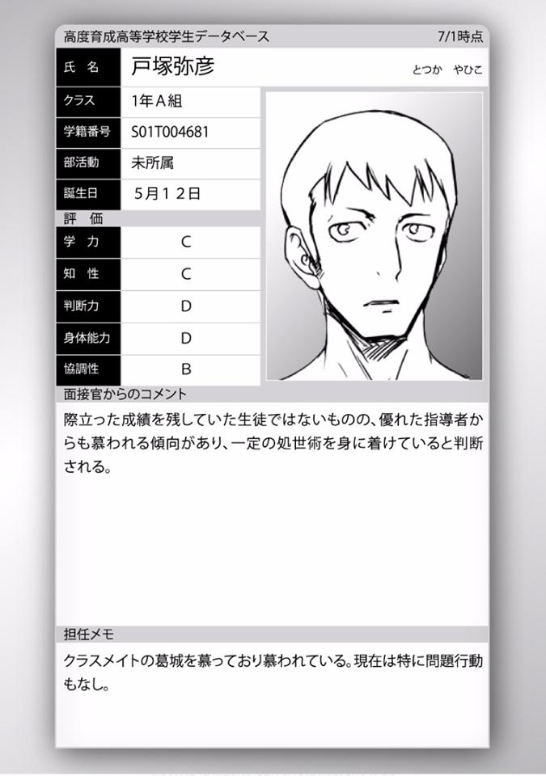
LOS PENSAMIENTOS DE TODOS
A partir de la próxima clase, como preparación para el evento, se decidió que practicaremos de forma independiente.
Durante nuestro período libre, todos y cada uno de los estudiantes se pusieron sus uniformes de gimnasia, es decir, sus camisetas, y se dirigieron a los campos de la escuela.
— Uwa, oye, mira eso.
Ike, con una mirada descaradamente incómoda en su rostro, mira al edificio de la escuela.
Y allí, desde las aulas, hay estudiantes mirándonos. Y no solo era uno, sino varios.
— Ahí está la Clase B, ¿verdad? inmediatamente llevan a cabo un reconocimiento.
Descubrir las habilidades físicas de las otras clases antes del festival deportivo es algo que debe estar en la lista de cualquier persona.
— La clase A, junto a ellos, también nos está mirando.
Independientemente de si somos enemigos o aliados, observar nuestras capacidades no es malo para ellos. Si hacemos esto en algún lugar tan llamativo como este, es natural ser observado.
Sin embargo, si nos contenemos para no mostrar nuestras verdaderas habilidades, en última instancia, significará que las oportunidades para que practiquemos para el evento disminuyen.
— Comenzó de inmediato.
Horikita, quien terminó de cambiarse, parece que también se ha dado cuenta rápidamente de las miradas curiosas.
Pero lo que me preocupa es la Clase C.
A pesar de que hay señales de personas dentro de su salón de clases, ni una sola miraba hacia nosotros. Es como si estuvieran diciendo que quien participe de la Clase D en qué competencia no les concierne.
— ¿Estás preocupado por Ryuuen-kun?
— Bueno, un poco.
— Realmente dudo que no haya pensado en hacer un reconocimiento sobre nosotros, pero es él quien rechazó cooperar con la Clase B. No tiene ninguna real intención de hacer una estrategia —Justo después de que dijo eso, como diciendo “entiendo”, me miró y continuó—. Es lo que habría pensado si no me hubieras advertido. Seguramente los otros estudiantes piensan de esa manera.
Horikita miró hacia los estudiantes de la Clase D que se esforzaban por practicar.
— Lo que mencionaste antes, sobre que Ryuuen-kun ya había pensado en una estrategia para ganar. Eso significa que en este momento ya ha hecho una, ¿verdad? Entonces, ya no necesita hacer un reconocimiento, ¿no?
La expresión optimista que Horikita tenía en el gimnasio ya no es visible. Por el contrario, pude ver que estaba muy desconcertada.
— Cualquiera querría información sobre las otras clases. Quiénes tienen capacidades físicas altas o quién participará en qué eventos, se moriría por saberlo. Pero no muestra ninguna señal de ello.
Así es, eso ya es una prueba de que Ryuuen tiene una estrategia que se está reservando.
— El punto importante aquí es no estar satisfecho después de saber que
“Ryuuen ya ha pensado en una estrategia”.
— ...¿Qué quieres decir?
— Normalmente, cuando a una persona se le ocurre una estrategia o una medida secreta, hará todo lo posible para asegurarse de que sus enemigos no se den cuenta. Sin embargo, ese hombre ni siquiera está tratando de ocultarlo y no está llevando a cabo ninguna investigación.
— Está actuando audazmente, como si presumiera.
Entonces, si piensas en lo que eso significa, también podrás ver sus patrones de pensamiento.
Me pregunto cuánto de eso puede ver ahora Horikita.
— Tú, esa perspicacia u observación tuya, no puedo dejar de preguntarme de dónde la sacaste. Pero has prohibido eso, así que no me atrevo a preguntar.
Qué manera desagradable y horrible de decirlo. Por supuesto, no importa cómo me provoque, no diré nada.
— Suzune, ¿tienes un momento?
Sudou, que llegó tarde, llamó a Horikita, quien estaba sumida en sus pensamientos.
Horikita, interrumpió sus pensamientos y le respondió a Sudou de una manera ligeramente irritada. Parece que hay algo más por lo que está molesta.
— Te lo he estado advirtiendo repetidamente, pero ¿te importaría no llamarme por mi nombre?
— ¿Qué significa eso? ¿Tienes un problema con que te llamen así?
— Uno enorme, sí. No quiero que una persona con la que no soy cercana me llame por mi nombre.
Tomó una acción decisiva sin prestar atención a los sentimientos de Sudou.
— Si insistes en continuar llamándome así aunque te haya dicho directamente que no me siento cómoda con eso, tomaré medidas.
Verdaderamente una expresión aterradora.
Si es posible, preferiría no escuchar los detalles de lo que tiene que decir.
Realmente debe querer llamarla por su nombre, pero lo perderá todo si llega a odiarlo.
Sin embargo, no sé qué pensaba Sudou al decir esto.
— Entonces, en este festival deportivo, si puedo obtener los mejores resultados de la Clase D..... en ese momento, por favor dame permiso para llamarte oficialmente por tu nombre.
¿Ohh? Sudou ha pedido un deseo bastante modesto.
Es incluso así, no sé si Horikita lo reconocerá honestamente o no.
— Trabajar duro es algo bueno, pero ¿por qué tengo que responder a eso?
Parece que Horikita no piensa que se lleve bien con Sudou. En cuanto a eso, me pregunto cómo le responderá él.
— ... No mucho después de la inscripción, me salvaste, ¿no? Es por eso que quiero ser un amor adecuado... no, primero quiero ser tu amigo. Este es un paso para eso.
— No entiendo. No es algo tengas que andar diciendo por ahí para ponerlo en acción. Pero está bien. Si produces los mejores resultados, entonces, en ese momento, te permitiré que me llames por mi nombre. Sin embargo, no estés satisfecho solo con la clase. Muéstrame los mejores resultados de todo el año escolar.
Diciendo eso, Horikita le dio a Sudou un obstáculo más alto.
Pero, en cierto sentido, puede ser buen material para que actúe como refuerzo de Sudou. No había signos de miedo en él.
— Está bien. Es una promesa, si me convierto en el primer lugar del año escolar, entonces te llamaré por tu nombre.
— Sin embargo, hasta que produzcas resultados no puedes hacerlo. Además, si no puedes lograr el primer lugar, entonces está prohibido que me llames por mi nombre. Harás bien en prepararte para eso.
— S-Seguro.
Aunque tiene una tarea abrumadoramente difícil puesta sobre él, Sudou asintió y respondió vigorosamente.
Es solo que, bueno, la posibilidad de que lo logre es bastante alta. Por lo que he visto de los estudiantes de las otras clases, el potencial de Sudou es
inconfundiblemente de primera clase. Veo que no tendrá problemas con las pruebas individuales.
El único que podría oponerse a él, Kouenji, parece no tener motivación, así que no debe haber ningún problema.
Lo único que queda es ver cuántos records puede romper en los concursos que requieren cooperación en equipo.
*****
La política de Hirata está vigente, no es necesario que los estudiantes participen obligatoriamente, pero con el objetivo de unir a la clase, la tasa de participación es de alrededor del 90% y terminó solo con el rechazo de Kouenji y la profesora.
— Hau, auu, fuu...
En este momento, una chica llegó en último lugar y se veía como si estuviera a punto de colapsar, colocó sus manos sobre sus rodillas.
— Buen trabajo, Sakura. Estabas corriendo con entusiasmo ahí.
— A-Ayanokouji-kun. Huu.
Sakura, que siempre ha sido muy poco atlética, no participaba de manera activa en cosas como esta. Sin embargo, recientemente ha tomado en serio la iniciativa y está trabajando arduamente para convertirse en miembro de la clase.
Es lamentable, ya que no es muy atlética, los resultados no la siguen.
— ¡Hey! ¡Vamos!
Por otro lado, en cuanto a Sudou, que por lo general es poco serio, su existencia es notada por casi cualquier persona. Después de hablar en clase, no podía permitirse que terminara con resultados decepcionantes.
Sin embargo, esa era una preocupación innecesaria. Siendo el centro de atención, quizá está utilizando más poder que de costumbre, pero Sudou ganaba sin permitir que nadie lo alcanzara. Seguramente no haya estudiantes en nuestra clase que puedan hacerle frente de tú a tú.
— Como se esperaba de Sudou-kun. Hagas lo que hagas, terminas en primer lugar en la clase. Es increíble.
Kushida expresó su respeto hacia Sudou, quien corrió los 100 metros planos, mientras ella salta arriba y abajo.
— Heh, bueno, supongo. Pero aun así, no sé qué pasaría si él corre.
Al que Sudou volteó a mirar hacia atrás era Kouenji, quien no mostraba ningún interés en la clase.
— Hablando de eso, nunca antes he visto a Kouenji correr en serio.
Antes, cuando se enfrentó a Sudou durante las clases de natación, cuando nadó en serio solo esa vez, superó el tiempo de Sudou. A partir de eso, pude confirmar que Kouenji tiene un gran potencial.
Pero Kouenji es el tipo de hombre que no hará ningún movimiento a menos que él mismo decida hacerlo.
Con respecto a este festival deportivo, ya que su política es básicamente dejarnos pensar y actuar libremente por nuestra cuenta, Kouenji realmente no hará nada en absoluto.
— Sí, pero es realmente increíble. En este festival deportivo, Sudou-kun es el líder.
— ¿Líder? ¿Yo...?
Cuando se lo dijeron una vez más, Sudou parecía un poco atónito mientras se señalaba a sí mismo.
— También estoy de acuerdo con eso. El festival deportivo realmente es el lugar para los estudiantes atléticos. Creo que Sudou-kun está más que calificado para eso. Si estás de acuerdo, ¿puedes aceptar también por el bien de todos?
En el mismo tenor que Kushida, Hirata dijo eso mientras apuntaba en su cuaderno. El festival deportivo exige un líder fuerte.
Hirata también tiene esas cualidades en abundancia, pero tal vez juzga que Sudou, que se destaca en esto, encajaría mejor en el papel.
— Pero aun así, no estoy hecho para ser líder...
Sudou, que prácticamente siempre está solo o con unos pocos, parecía un poco desconcertado.
Luego miró a Horikita que estaba cerca de él y le pidió su opinión.
— No eres el tipo de persona que pueda explicarle teóricamente cosas a alguien. Para un líder, Hirata-kun sería la mejor opción. Sin embargo, al mirar tu velocidad antes, así como tus otros registros, lo puedo entender.
Eres el tipo de persona que brilla mientras es el centro atención de muchos.
Para cargar con la clase, es probable que sea necesaria la fuerza bruta.
No tengo ninguna intención de objetar en que te llamen el líder.
No lo aceptó, pero tampoco lo rechazó. En otras palabras, significa que ella ha reconocido a Sudou.
Parece que Horikita no solo está participando banalmente en esta práctica, sino que también ha estado buscando talento.
— ...Entiendo. Llevaré a la Clase D a la victoria en este festival deportivo.
Podría llamarse la debilidad por haberse enamorado, pero Sudou adoptó esa actitud para estar a la altura de las expectativas de Horikita.
— No te confíes demasiado. Lo lamentarás más tarde si lo haces.
Advirtió a Sudou que la escuchara y después Horikita se fue para continuar con la práctica.
Mientras se sonrojaba, Sudou miró su espalda y apretó el puño.
*****
Miré desde la distancia.
— Están tirando demasiado inútilmente. No hay fuerza detrás de su agarre. A este ritmo, no ganarán lo que se pueda ganar.
Diciendo eso, tiene la intención de dar una demostración práctica, Sudou tomó en sus manos una cuerda corta.
Frente a él había dos personas, Ike y Yamauchi. Parece que intenta tirar de ellos él solo. Seguramente los dos pensaban que podían ganar, pero cuando el encuentro comenzó, Sudou tiró de la cuerda con una fuerza brutal.
No mucho tiempo después, los dos perdieron ante Sudou y se sentaron en el suelo.
— ¿Ven? No están poniendo fuerza.
— No lo entiendo... oye Sudou. ¿Hay algún truco o algo detrás de esto?
— El poder es vital, pero en casos como este no solo es tu brazo, sino que usas tus caderas, ya sabes, las caderas.
Incluso mientras habla groseramente, Sudou da instrucciones a todos y cada uno de los estudiantes.
— Oye, Sudou-kun. ¿Puedes echar un vistazo aquí más tarde? La jinete no lo está haciendo demasiado bien.
— Espera un minuto. Allí estaré.
Había muchos estudiantes que no son especialmente buenos en los deportes, por lo que pidieron muchas veces la opinión de Sudou.
Sinceramente, no esperaba que incluso las chicas le pidieran opinión.
— Sorprendentemente, parece estar haciéndolo en serio.
— Después de todo, es la primera vez que han confiado en él. El papel de líder inesperadamente le sienta bien, ¿no crees?
En teoría, hacer que las personas confíen en ti hace que casi cualquier persona se sienta bien. Es especialmente cierto para estudiantes como Sudou, que han vivido en soledad.
— En cuanto a mí, si no fuera por “eso”, no me importaría elogiarlo...
¿”Eso”? Cuando estaba a punto de preguntarle, sonó una voz enojada.
— ¡Te estoy diciendo que no es así!
Pateando la tierra en el suelo, lanzó una nube de polvo hacia Ike y los demás.
— ¡Dowa! ¡Peh, peh! ¡Por favor, para!
Al ver eso, Horikita suspiró.
Es cierto, el hecho de que se enoje rápido y quiera pelear es un problema. Un líder debe tener la conciencia adecuada de que las personas con las que interactúa son fundamentalmente diferentes a él. Por otro lado, el líder que siempre emplea métodos de enseñanza amables es Hirata.
En cuanto a la chica que esperaba las instrucciones de Sudou, Hiarata revisaba sus posiciones para asegurar una postura cómoda y establecer una base para preparar la batalla de caballería.
— Sí, creo que esto está bien. ¿Pero no te sientes un poco apretada?
— Así es... supongo que mis hombros duelen un poco.
— Probemos cambiando de posición un poco, ¿no? Creo que con solo moverse unos centímetros será diferente.
— Ohh, tienes razón, ahora se siente bastante cómodo. Gracias, Hirata-kun.
— Por favor ayuda un poco por aquí, Hirata.
Sin embargo, otro grupo de caballería pidió ayuda y Hirata respondió con una sonrisa.
— ¿Qué tal si también le enseñas a las chicas?
También Horikita, dentro de la clase, es de primera categoría en lo que respecta a capacidades físicas. Tiene un gran potencial como líder.
— No tengo intención de enseñarles. En primer lugar, dudo que haya alguien que quiera que le enseñe.
Con valentía dijo algo de lo que no debería estar orgullosa y comienza a hacer calentamientos por su cuenta.
— Estoy bastante ocupada asegurándome de producir resultados. ¿Puedes darte el lujo de estar relajado? Si confías en que puedes ganar sin importar con quién te enfrentes, entonces está bien.
— No tengo tanta confianza.
— Eso suena acertado. Tus resultados siempre son mediocres. No eres ni rápido ni lento, resultados modestos.
— ¿Lo sabías?
— Para que conste, tengo intención de determinar las habilidades de mis compañeros de clase.
Parece que hasta en las clases de educación física me ha estado observando atentamente.
— Te preguntaré esto una vez, pero... ¿por casualidad, resulta que te estás conteniendo como lo hiciste con las calificaciones de tus exámenes?
— ¿Crees que haría algo así de inútil?
— Yo diría que las probabilidades son 50/50. Entonces, ¿qué hay con eso?
— Me disculpo por haber traicionado tus expectativas en parte, pero mis resultados habituales reflejan mi capacidad.
— En otras palabras, no eres ni bueno ni malo. ¿Quiere decir que no debería esperar buenos resultados de ti?
— Así es como es.
— Entonces será mejor que te esfuerces de inmediato por practicar.
— No sería un problema si pudiera mejorar practicando en este corto período de tiempo. A diferencia de los estudios, tratar de mejorar para esto a último minuto es imposible.
La capacidad física de uno solo mejora a través de la acumulación diaria de experiencia.
— Aunque creo que será una historia diferente si te centras en eventos en los que se puede mejorar con la técnica: la forma en que agarras la cuerda o la forma en que llevas al jinete. Aprendiendo eso deberías poder agregarte a nuestra fuerza de trabajo.
— ...Quizás.
Había intentado relajarme pero ella ha hecho un buen trabajo fastidiándome.
Entonces no se puede evitar, creo que practicaré para los eventos de Participación solo por Recomendación en los que participaré.
— ...Oye.
Como me habían apresurado a hacerlo, estaba por moverme cuando Horikita me llamó una vez más.
— ¿Hmm?
— Lo que va a decidir la victoria o la derrota en el festival deportivo es la capacidad física de cada clase. Eso es verdadero, ¿no es así?
— Es un festival deportivo. Te das cuenta de que la capacidad física es la clave, ¿no?
— Es cierto... pero esa forma de pensar se limita a los momentos en que peleo sola. Si me concentro en mis resultados, estoy segura de que puedo obtener una buena posición. Pero recientemente ya no lo entiendo del todo.
Que solo elevando tus capacidades, quizá no puedas llegar a la Clase A.
Fue un comentario inusualmente tímido. Es probable que sea evidencia de que los errores que cometió en los exámenes previos están haciendo que responda así.
— Entonces déjame preguntarte esto. ¿Qué hay que hacer para producir resultados en este festival deportivo? Para subir a la Clase A.
Cuando respondí con una pregunta, Horikita cerró la boca de inmediato. Me dio una mirada que parecía estar diciéndome que me lo está preguntando precisamente porque no lo sabe.
— ¿No ganas si lo disfrutas? Este es el tan esperado festival deportivo,
¿sabes? Olvidar que esto es un examen y divertirnos también es una opción.
Lo dije evitando el tema.
— Me prometiste que ayudarías, ¿cierto? Que me ayudarías a llegar a la Clase A.
— Lo estoy haciendo ahora, ¿no?
Extendí mis manos ligeramente como para mostrar mi cuerpo.
— Participaré en el festival deportivo. Eso es cooperación.
— ...¿En serio?
— Lo dijiste tú misma, ¿no? Lo que decidirá la victoria o la derrota en el festival deportivo es la capacidad física. Eso es cierto.
— Pero... lo que quería saber es sobre elementos distintos a eso.
En otras palabras, algo más que la capacidad física capaz de influir en el resultado.
— Si es así, el día del festival deportivo, ¿les provocamos dolor de estómago a los muchachos de las Clases C y B y hacemos que se ausenten? Si hacemos eso, saldremos victoriosos completamente.
Será nuestra victoria por una aplastante ventaja.
— No bromees.
— La respuesta que estás esperando de mí es algo así, ¿vedad? Que este festival deportivo es una tarea que debe ser desafiada de frente. Que los trucos baratos serán contraproducentes, todas y cada una de las personas deben elevar sus habilidades y triunfar en sus eventos.
Lo que la escuela busca indudablemente también se inclina fuertemente hacia ese aspecto.
— Es solo que tengo mucho que agregar a tu forma de pensar, aunque tu capacidad física sea alta, no significa que puedas ganar.
— ... En otras palabras, ¿es necesario algo más?
— Parece que entenderás la respuesta muy pronto.
Dirigí mi mirada hacia la persona que camina hacia nosotros.
— Horikita-san, para la práctica de la carrera de tres piernas, la siguiente eres tú.
— Entiendo.
Al ser llamada, Horikita se acercó.
Aparentemente, quien se emparejará con Horikita es Onodera. Onodera es una chica que pertenece al club de natación pero, según los rumores, también es una velocista.
Para el festival deportivo, las cosas importantes son: tu capacidad individual y la cooperación con tu compañero de clase.
Me pregunto si Horikita podrá hacerlo bien. Horikita y Onodera se atan una cuerda y las chicas comienzan su formación de batalla. Si solo estamos hablando de coordinación del cuerpo, entonces el par Horikita / Onodera sería el número uno.
Sin embargo, el resultado es algo aún desconocido. No fueron lentas para nada, pero tampoco se puede llamar rápido al resultado, llegaron en tercer lugar. Por cierto, las más lentas fueron el poco entusiasta par de Sakura / Inogashira. Ultra lentas.
El par Horikita / Onodera que llevaba las expectativas de la clase, en respuesta a sus resultados insatisfactorios, lo intentaron una y otra vez, pero su tiempo no mejoró.
— Son bastante lentas, esas dos.
Debido a los altos niveles de atención que estaban recibiendo, Sudou pronunció eso desde la perspectiva de un tercero.
— Es verdad.
Habiendo regresado después de su carrera, las dos inmediatamente desataron la cuerda y se enfrentaron.
— Oye, Horikita-san, ¿te importaría mantener el ritmo conmigo un poco más?
Onodera, un poco molesta, dijo eso.
— Sin duda, nuestro ritmo no coincide. Pero no es mi culpa. Más bien es porque eres lenta.
— Qué.....
— ¿No es natural seguir el ritmo del más rápido? Después de todo, molestarse en desacelerar para arreglarlo sería extraño.
El desarrollo que temía pronto estará a la mano. No es fácil mantener el ritmo con Horikita, que está corriendo a su máximo tan egoístamente.
— ¿Entonces deberíamos intentarlo también, Ayanokouji-kun?
— Entendido.
No tengo tiempo para ayudar o reírme de las peleas de Horikita. La carrera de tres piernas es la primera para mí también.
— Por ahora intentemos correr y luego arreglar nuestras deficiencias, ¿de acuerdo?
Asintiendo y siguiendo las instrucciones de Hirata, até nuestras piernas.
Estaba mucho más apretado de lo que había imaginado, o más bien, se sentía como si estuviera privado de mi libertad. Además, aunque ambos somos hombres, si estamos tan cerca es un poco embarazoso. Más aún si se trata de Hirata, quien atrae la atención de las chicas.
— Entonces, vamos. Probemos usando nuestros pies atados para dar el primer paso.
Asentí y esperé a que el pie de Hirata se moviera y luego avancé para igualarlo.
Y con el mismo ritmo, esta vez, moví mi pie exterior.
— ... Se siente terriblemente incómodo.
— ¿Verdad? Pero a medida que corras te acostumbrarás, o eso creo. Voy a empezar a correr un poco.
Hirata dijo eso mientras aceleraba el ritmo, yo también comencé a correr para igualarlo. Bueno, digo correr, pero fue solo a la velocidad de trote.
— Sip, eso es todo, lo estás haciendo genial.
Probablemente era una velocidad que casi cualquier persona puede seguir, pero ser alabado así lo hizo más fácil. Y luego, cuando me acostumbré, me di cuenta de que era algo sorprendentemente simple de hacer.
Comprender adecuadamente el ritmo de tu compañero. Entonces, si tu compañero también comprende el tuyo, el próximo paso se dará sin problemas.
— ¡Como se esperaba de Hirata-kun! ¡Tan rápido!
Saludos estruendosos llegaron volando de las chicas. Corrimos una pequeña vuelta y regresamos, desatando la cuerda.
— Es extremadamente fácil de hacer si Ayanokouji-kun es mi compañero.
Practiquemos muchas veces y trabajemos duro en el evento real, ¿de acuerdo?
Sí, seguro que es estimulante. Además, incluso después de terminar la práctica, y sin descansar, se dirigió a aconsejar a otros estudiantes.
Esta es probablemente la vida cotidiana de Hirata, un hombre capaz de hacer esto.
*****
Horikita, Sudou y los demás están esforzándose en su entrenamiento diario para el evento.
Sudou, que fracasa por completo en los estudios, practica constante, laboriosa y repetidamente cuando se trataba de deportes. Habiendo entrenado su espíritu frecuentemente como parte del club de baloncesto, demostró ser tenaz.
Hubo estudiantes entre ellos que se contuvieron, pero Sudou, sin ser orgulloso acerca de ello, usó sus habilidades e hizo lo que pudo.
Este es el requisito mínimo exigido por el festival deportivo. Especialmente para concursos como la batalla de caballería o el de tirar de la cuerda, es un enfrentamiento directo contra tus oponentes. El resultado puede verse afectado en gran medida solo por la estrategia o una formación.
Por supuesto, tampoco es que Hirata haya olvidado que debemos cooperar con la Clase A. Periódicamente se reúne con Katsuragi, discutiendo sobre cómo luchar mejor en el evento.
Para la Clase D que ha estado en situaciones peligrosas muchas veces hasta ahora, esta es una situación demasiado buena. Al ver ese hecho como parte del panorama general, también pude ver los dos problemas restantes de manera similar.
Uno es la presencia conocida como Horikita Suzune, que se convertirá en una existencia indispensable para esta clase en el futuro.
Desde el primer día, Horikita ha cambiado su pareja muchas veces y ha hecho la carrera de tres piernas, pero todas y cada una de las veces termina peleándose con su pareja y terminando su relación.
Eventualmente, al final, decidió competir en el evento con la chica con la que había tenido el mejor tiempo, pero incluso ese tiempo sigue siendo preocupante.
Pero ahora ya no practica y en su lugar pasa su tiempo sola y en silencio.
— ¿Tienes un momento?
— ¿Qué pasa?
Tal vez es culpa del estrés que acumuló en la carrera de tres piernas, pero está un poco más molesta que de costumbre.
— Creo que te hará bien si recuerdas relajarte un poco.
Estuve vigilando su práctica más reciente pero no pude ver ningún síntoma de mejoría. Era obvio que la abrumadora personalidad de Horikita se estaba interponiendo en su camino.
— ..... Me lo han dicho muchas personas.
Tal vez le vinieron a la mente una gran cantidad de “muchas” cuando dijo eso mientras sostenía su frente.
— Simplemente no estoy permitiendo ningún relajamiento por el bien de conseguir el mejor tiempo. ¿No es eso algo bueno? Una carrera de tres piernas es diferente de correr normalmente. Incluso una persona que es lenta, hasta cierto punto debería ser capaz de mantener el ritmo, teóricamente.
— En otras palabras, ¿quieres decir que no tienes intención de ceder?
— Sí. No tengo intención de unirme a personas lentas.
— Pero como resultado, ya nadie está dispuesta a practicar contigo, ¿verdad?
Durante la práctica de la carrera de tres piernas, Horikita quedó fuera del círculo de la clase. Ella apenas puede esperar mejorar su tiempo si llega al evento en este estado.
— No entiendo. Incluso si tuviera que ceder, tendría que ser después de que mi compañera se esfuerce. No puedo emparejarme con alguien que no se esfuerza desde el principio.
Bueno, entiendo lo que Horikita quiere decir. De hecho, las chicas con las que hizo pareja sugirieron que se disolviera el equipo tan pronto como sus tiempos no coincidieron.
Sin embargo, eso es porque hay una razón fundamental detrás de eso.
— Mejora un poco.
— .....¿Qué quieres decir?
— Por favor, haz pareja conmigo una vez en la carrera de tres piernas.
— ¿Por qué contigo?
— También está la carrera mixta de tres piernas. ¿No está bien comprobar nuestra compatibilidad como equipo?
— ¿Pretendes que me empareje con tu velocidad? Es una molestia.
— Según tu teoría, la lentitud de uno no tiene nada que ver con eso, ¿verdad?
— ...Muy bien. Lo ataré.
Como diciendo “no me toques”, Horikita se agacha y ata la cuerda entre su pierna y la mía.
Como los alrededores están absortos en la práctica, incluso si realizamos una carrera de tres piernas, no llamaremos la atención.
Sudou, que es el que se enojaría más, también está ocupado en medio de un partido de práctica con otro grupo.
— Bien, entonces, vamos---
Durante los primeros uno o dos pasos, me moví y coincidí con Horikita cuando di un paso adelante.
Sin embargo, a medida que ganamos velocidad, en lugar de ir al ritmo de Horikita, comencé a ir a mi propio ritmo.
— ¡H-Hey!
En respuesta al pánico de Horikita, acelere mi ritmo sin piedad.
Horikita trata de enfrentarlo con seriedad, pero como su resistencia y fuerza física son muy inferiores a las de un chico, no pudo mantener el paso.
— De acuerdo contigo, mantener el ritmo de tu pareja no es tan difícil
¿verdad?
— ¡Eso... lo sé...!
Es terca después de todo. Horikita, sin ceder, intentó desesperadamente mantener el paso.
Si es así, cambiaré de marcha.
Lo entiendo ahora después de haberlo intentado, pero en lo que respecta a la carrera de tres piernas, el simple hecho de ser rápido no sirve para nada. Lo importante es el tempo que ambos corredores consideran mejor y a partir de ahí comienza la búsqueda del mejor ritmo.
Si solo exiges velocidad, inevitablemente terminará con un contratiempo.
— ¿¡…!?
Finalmente, incapaz de seguir mi ritmo, Horikita casi se derrumba.
La agarré por los hombros y detuve su caída, luego también me detuve. Horikita tomó una bocanada de aire ligeramente brusca.
— Antes de considerar cosas como rápido o lento, terminó así porque no estás mirando a tu compañera.
Me agaché y sin decir nada, desaté la cuerda alrededor de la pierna de Horikita.
— Lo importante es mirar a tu compañera, dejar que tome la delantera, ¿no es así?
Es precisamente porque es atlética que debe discernir la capacidad de su pareja y controlarse.
— Todo lo que queda ahora es que lo pienses tú misma.
— Yo---
No sé si Horikita se dará cuenta de esto y madurará, pero le he mostrado una posibilidad. El resto depende de ella.
Y el otro problema es la existencia de Kushida Kikyo.
Tal vez debería llamarla un poder oculto, ya que está escondida detrás de la existencia de Hirata y Karuizawa, pero por lo que respecta a la cercanía con muchos compañeros de clase, ella supera con creces a esos dos. Incluso ahora, rodeada de chicos y chicas, está felizmente esforzándose en la práctica.
Además de esa habilidad de comunicación fenomenal que tiene, también posee altas habilidades académicas y atléticas, así como una figura bendecida.
Verdaderamente, se puede decir que es una estudiante intachable. En cierto sentido, es una estudiante cuya asignación a la Clase D es un misterio.
Sin embargo, sé un poco de la oscuridad que posee.
Es decir, no mucho después de la inscripción, la vi despotricando en una azotea solitaria y su cara cuando me amenazó. No sé la razón, pero es un hecho que Kushida odia considerablemente a Horikita.
Pero está claro que Horikita y Kushida son cuestiones vitales para la mejora de la Clase D. Y también, para resolver estos problemas, seguramente no haya otra opción más que se confronten entre sí.
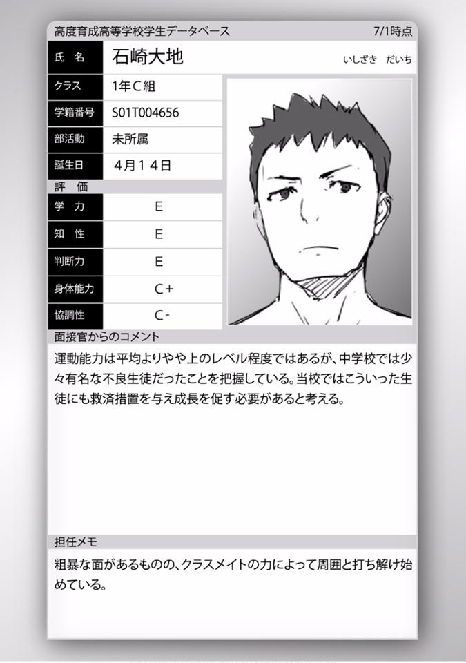
CÓMO LLEGÓ A SER SU RELACIÓN
Mientras las otras clases avanzan en su reconocimiento, también había cierto movimiento en la Clase D.
Que si fulano es bueno en qué o quién es atlético o no. Ese tipo de información está presente en todas partes.
La mayoría ha comenzado a darse cuenta de esto, pero hay muy poco sentido en hacer ese reconocimiento, o sea, determinar el grado capacidad de otra persona, en última instancia, la clave de la victoria reside en la combinación de los compañeros para los eventos.
La información por sí sola no vale mucho. A menos que se conozca el contenido de su tabla de participación, que es la esencia de todo, no llevará a la victoria sobre las otras clases.
Sin embargo, si podemos obtener información sobre su tabla de participación, sería una gran ayuda para derrotarlos. Y si podemos adquirir tanto la “tabla de participación” como "información", entonces nuestras posibilidades aumentarán drásticamente.
Pero como regla general, la tabla de participación no se comparte con las otras clases. Ya que equivaldría a estrangularse a sí mismo en caso de que se filtre, es probable que haya un control exhaustivo de la información.
La única excepción... es la Clase D que lleva una bomba interna.
Una semana antes del festival deportivo. Hice mi movimiento tan pronto como terminaron las clases.
Llamé a Horikita, que estaba guardando sus cosas a mi lado.
— Por favor, acompáñame un poco después de esto.
— ¿Si digo que no?
— Por supuesto que eres libre de decir eso, pero no me haré responsable si la Clase D se enfrenta a una situación difícil.
Fui directo al grano, y al decir algo que parecía una amenaza, Horikita se quedó sin palabras por un momento.
— ... Eso es algo que no puedo ignorar. Bien, ¿qué es lo que quieres?
— Lo entenderás si vienes.
Diciendo eso, pasé frente a Horikita, que había estado exigiendo una respuesta.
Luego llamé al otro objetivo.
— Kushida, ¿tienes un momento?
Me dirigí hacia Kushida, que charlaba con las chicas de la clase y la llamé.
— ¿Hmm? ¿Qué pasa, Ayanokouji-kun?
Kushida también se volvió para mirar un momento a Horikita, que estaba guardando silencio mientras emitía un aura de disgusto.
— ¿Tienes algo planeado para mañana?
Para el sábado, que debe ser un día libre para Kushida, intenté invitarla a salir.
— No tengo nada planeado hasta ahora. Supongo que solo pensaba limpiar mi habitación.
— Si estás de acuerdo, ¿puedo tomar algo de tu tiempo solo por la mañana?
Intervine con eso.
Si Kushida muestra algún signo de descontento con ello, tengo toda la intención de retirarme de inmediato.
— Seguro.
Sin embargo, disipando esas ansiedades, Kushida aceptó con una sonrisa.
— Pero qué raro, que Ayanokouji-kun me invite a salir.
— Puede ser así. Por cierto, Horikita también vendrá.
— Oye.
Refrené a Horikita con mi mano mientras se quejaba.
— Claro, no tengo problema... ¿pero a qué te refieres con que solo por la mañana?
— Incluyendo a Kushida, que está familiarizada con la información sobre las otras clases, quiero realizar una vez más un reconocimiento del enemigo.
Fui invitado a hacerlo por Horikita, pero hay muchas cosas que no sé.
Le informé honestamente a Kushida lo que estaba pensando.
Sin embargo, la parte sobre Horikita fue una improvisación.
Si le pido que me acompañe, no tendré éxito a menos que le diga la verdad y Kushida también necesita comprender su papel.
Después de terminar la conversación, estando convencida, Kushida asiente repetidamente.
— Podría ser la más adecuada para eso. Sí, Entendido. ¿A qué hora estaría bien? Cuanto más temprano mejor, ¿verdad?
— Es verdad. Si es posible, ¿algo así como alrededor de las 10? ¿Está bien?
— Completamente bien. ¿Entonces mañana nos encontraremos en el vestíbulo del dormitorio?
— Sí, gracias.
Parece que Kushida había prometido volver con sus amigas mientras se marchaba agitando la mano hacia las chicas que esperaban en el pasillo.
Mientras me movía para hacer lo mismo y regresar, Horikita me agarró por atrás.
— ¿De qué estás hablando? Nunca escuché acerca de esto.
— Por supuesto, porque nunca te lo conté, pero hacer un reconocimiento no es tan malo, ¿verdad?
— No entiendo el razonamiento detrás de que me hayas invitado. Si se trata de un reconocimiento, entonces Kushida-san y tú deberían ser más que suficientes.
— ... ¿en serio estás diciendo eso?
— ¿Qué? No diría algo así como una broma.
Aparentemente, no puedo permitir que Horikita se vaya todavía.
— Llamamos mucho la atención aquí. Hablemos en nuestro camino de regreso.
Salí al corredor rápidamente dejando atrás a Horikita. Ella, me siguió y se colocó a mi lado.
— No has olvidado el resultado de tu equipo en el examen a bordo del barco,
¿verdad?
— Por supuesto que no, todos supieron la identidad del “objetivo” de la Clase D. Un resultado humillante.
— Es cierto. Se convirtió en un resultado que normalmente no se podría conseguir. Definitivamente hay una razón para eso.
— También entiendo eso. Pero no sé por qué, y no importa cuánto lo piense, no puedo encontrar una respuesta. Por lo menos, puedo adivinar que Ryuuen-kun estuvo involucrado…
Entiendo bien que terminó topándose con una pregunta difícil que parece un callejón sin salida.
Con toda probabilidad, dentro de Horikita, repetidamente se forman numerosas preguntas que luego desaparecen y se vuelven a formar antes de desvanecerse.
— No es que tenga ninguna certeza, pero he llegado a una hipótesis única y completa sobre eso.
Mientras lo decía, Horikita me miró como si estuviera realmente conmocionada.
— ¿Estás diciendo que has descubierto la estrategia de Ryuuen-kun?
— Sí, pero para ser precisos, no es solo de Ryuuen. Hay otra persona involucrada en el resultado de ese examen.
Llegamos a la entrada principal y sacamos nuestros zapatos del estante. Luego salimos al aire libre y reanudamos nuestra conversación.
— Si pensamos en ello normalmente, no hay forma de que se descubra la identidad del “objetivo”. Tú y Hirata no le revelaron a nadie que Kushida era el “objetivo”, ¿verdad?
— Naturalmente.
— ¿Pero qué pasa con la propia Kushida? ¿Si lo revela intencionalmente?
Por un momento, Horikita no pudo comprender lo que estaba diciendo.
Normalmente, esto no es algo en lo que nadie pensaría, así que es natural. No hay un solo imbécil que revele el hecho de que es el “objetivo”.
— Imposible, ¿no? Algo así... no beneficiaría a Kushida-san.
— No se puede decir con certeza que no obtenga beneficios ¿Qué tal algo como, en secreto, hacer un trato para revelar que ella es el “objetivo” a cambio de puntos privados de otra clase? Algo así.
— Aunque eso sea cierto... es algo que perjudica a la Clase D. En primer lugar, si alguien se convierte en traidor, todo se acabó, es una apuesta demasiado peligrosa.
— Eso depende del momento oportuno, ¿no? Hay muchas formas de generar confianza.
— ¿Estás diciendo que traicionaría a sus aliados para ganar puntos?
— Ese puede ser el caso y puede que no sea así. La razón es algo que solo Kushida conoce.
Es por eso que para determinar la verdad de esto, invité a Kushida.
— ¿Así que nos has reunido a Kushida-san y a mí... para averiguar la verdad?
Habiendo llegado hasta aquí, finalmente Horikita también tiene motivos para pensar que Kushida se ha convertido en traidora.
— Es porque tú y Kushida parecen compartir algo extraordinario como el destino. No sería extraño si hubiera algo que vale más que los puntos privados para convertirse en traidor.
Mientras la miraba para comprobar, Horikita torpemente desvió la mirada.
— No hay nada como el destino entre Kushida-san y yo.
— De ser así, ¿puedes decir con 100% de certeza que ella no va a traicionar a la clase a causa de ti?
— Eso---
— Si hay algo en lo que estás pensando, debemos confirmarlo. No, si no lo confirmamos, se acabó ¿sabes? También puedes imaginarlo, ¿no? No
importa qué clase de examen sea, tan pronto como aparezca un traidor dentro de tus aliados, la clase no tendrá ninguna posibilidad de ganar.
El examen anterior, y el examen anterior al anterior también, y también en este festival deportivo, entiendo lo simple que es que la clase se derrumbe con solo un traidor.
En poco tiempo, regresamos al dormitorio y subimos al ascensor que estaba en el primer piso.
— Eres libre de elegir si vendrás mañana o no, pero si tienes la intención de dirigir la clase, piénsalo bien.
Bajé en el cuarto piso donde está mi habitación y con eso, me despedí de Horikita.
*****
Estaba junto con los 3 idiotas en mi habitación, divirtiéndonos hablando de algo estúpido. Por supuesto, la mayor parte del tiempo solo escuchaba la conversación con ocasionales quejas.
Como el club de baloncesto no pudo hacer uso del gimnasio, hoy Sudou estaba disfrutando de su día libre.
Básicamente, dejándome a un lado, los tres estaban haciéndolo. Cada uno de ellos traía un tazón de sopa instantánea que habían comprado de antemano y le echaron agua caliente, esperaron durante 3 minutos.
— Ayanokouji, ¿qué sabor es el tuyo?
— El Tom yum goong picante. No sé mucho al respecto, así que traté de comprarlo.
— Se ve delicioso. Por favor intercambia con mi ramen salado.
Extiende un tazón con la ilustración de un calamar con sal en él, realmente haciendo que no parezca coincidir.
— ...No, gracias.
¿Por qué se molestó en comprar un ramen de aspecto tan poco delicioso?
— Oye, Ken. ¿Tienes alguna intención de decirle a Horikita?
— ¿Huh? ¿Qué pasa tan de repente?
— No, es solo que siento curiosidad por eso. ¿Verdad, Haruki?
— S-Sí.
Después de mirarme torpemente, Yamauchi formó una sonrisa falsa.
Durante las vacaciones de verano, después de confesarse honorablemente y con determinación a Sakura, había sufrido una derrota honorable y brillante...
— Depende del resultado del festival deportivo. Si recibo un reconocimiento oficial, quizás lo haga en ese momento.
— Ohh, se trata de esa propuesta de llamarla por su nombre ¿verdad?
Sudou, quien está obstinadamente decidido a lograr el primer lugar del año escolar, nos enseñó sus bíceps bien desarrollados para mostrar su motivación.
— Honestamente, no hay nadie que sea mejor que yo en los deportes entre los de primer año.
— La única oposición, Kouenji, seguramente tampoco lo hará en serio.
Para Sudou, la falta de motivación de Kouenji es a la vez causa de alegría y desazón.
— Bueno, en cuanto a mí, si puedo participar de buena manera hasta cierto punto, no tengo quejas.
Hablando de eso, decidí intervenir y preguntarle a Ike y a los demás algo por lo que sentía curiosidad.
— Hay una estudiante llamada Sakayanagi en la Clase A, ¿verdad? La que tiene las piernas lisiadas. ¿La recuerdan?
— Esa hermosa chica, ¿cierto? Por supuesto que la recuerdo.
Frotándose la parte inferior de la nariz, Ike respondió así.
— ¿No han escuchado los rumores sobre esa chica?
— ¿Rumores? ¿Te refieres con los hombres? ¿Cómo debería decirlo?, esa chica no tiene mucha presencia. Como si no fuera tema de conversación en absoluto.
Habiendo escuchado eso, y estando de acuerdo, Yamauchi respondió añadiendo a la respuesta de Ike.
— De algunos tipos he escuchado que es la líder de la clase, pero que es bastante madura ¿no?
Ya que los dos tenían la misma opinión, parece que no obtendré ninguna información valiosa sobre Sakayanagi.
Mientras hablaba, el sonido de un correo recibido llegó de mi teléfono.
Luego, cuando revisé su contenido, pude sentir las miradas sospechosas de Ike y Yamauchi.
— Has estado recibiendo bastantes correos recientemente ¿no?
— ¿Ehh? No, no sé. ¿No es lo habitual?
Respondí de esa manera, pero como sin duda han aumentado, sus ojos de sospecha se volvieron más pronunciados.
— No puede ser que hayas encontrado novia o algo así, ¿verdad?
— Ese no es el caso, así que relájate. No hay forma de que pueda encontrar novia antes que ustedes, ¿verdad?
— Bueno, eso es cierto, supongo...
Solo poniéndolo de manera que los relaje levemente, los dos volvieron a una actitud más tranquila.
— No me importa que Ayanokouji no sea popular. Más importante aún, hablemos de mí futuro y el de Suzune.
— Hablando de eso, Ken, Vas a hacer pareja con Horikita para la carrera mixta de tres piernas, ¿cierto?
— Sí, además de darle la victoria como regalo, voy a volverme más íntimo---
Sudou había estado tratando de hacer una conversación poco interesante, pero mi teléfono sonó una vez más.
Pero esta vez no es un correo sino una alarma.
— Lo siento, pero tengo algo planeado a partir de ahora.
— ¿Qué quieres decir con eso? Las cosas se estaban poniendo interesantes.
Bien, haré que Kanji y Haruki escuchen.
— ¡Geh---!
No, lo que es más importante, me gustaría que dejaran mi habitación... pero en lugar de escuchar esa petición, tuve que dejar a los tres ahí cuando me fui.
*****
La persona en cuestión ya había llegado al lobby.
— Buenos días, Ayanokouji-kun.
— B-Buenos días, Kushida.
El verano ya terminó, así que será solo por poco tiempo que podré ver a Kushida con su ropa de verano. Me encontré con Kushida mientras me sentía aturdido por su ropa de civil.
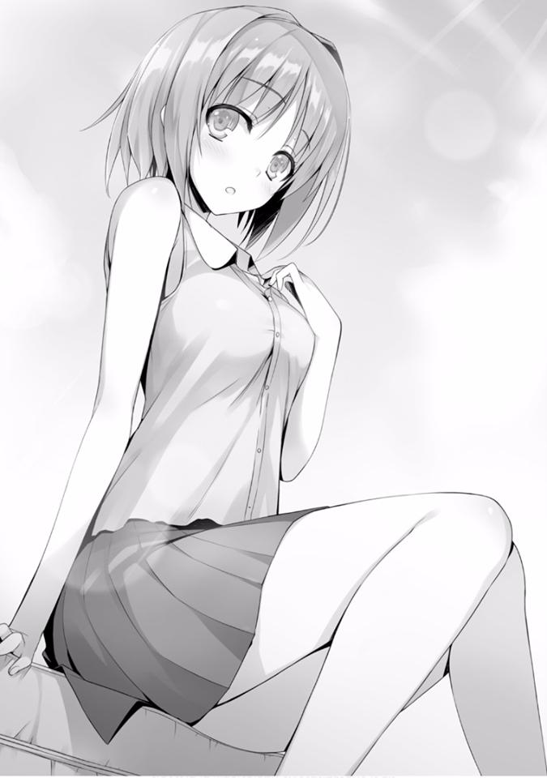
— Perdón por haber hecho una petición tan extraña ayer.
— No hay tal cosa. Tampoco tenía nada planeado para hoy. Además, estoy feliz porque se siente un poco nostálgico.
— ¿Nostálgico?
— Ya sabes, durante el examen en el primer semestre, Ayanokouji-kun fue y le pidió a un estudiante mayor las preguntas de un examen pasado ¿cierto?
De alguna manera sentí que esto es similar.
— ¿Es así?
— Sí, sí.
No pensé que fuera algo especial, pero como Kushida asintió felizmente, decidí dejarlo pasar. Honestamente, me siento más cómodo yendo con Karuizawa o Sakura a caminar, pero uno debe ir a especialistas para obtener los mejores resultados.
Me he cerciorado de que pedirle esto a Kushida es lo mejor considerando que ella es la persona adecuada para el trabajo.
Y, más importante aún, Horikita. Son casi las 10 y aún no ha aparecido.
¿Podría ser que está escapando de tener que encontrarse con Kushida? Justo cuando comencé a pensar eso, llegó.
— … Los he hecho esperar.
— Buenos días, Horikita-san.
Kushida le da la bienvenida a Horikita con una sonrisa inquebrantable.
Por otro lado, Horikita parece algo hosca. Está tratando desesperadamente de ocultarlo, pero desde mi punto de vista no podría ser más obvio.
Kushida, probablemente también se dio cuenta. Pero lo que hace que Kushida sea tan sorprendente es que a pesar de eso, puede mantener su actitud habitual, sin cambiar.
Los tres dejamos el dormitorio y nos dirigimos en dirección a los campos de la escuela.
Eran las 10 y ya estaba lleno de estudiantes.
— Woah, van por ello.
De los chicos, el sonido de una pelota pateada resonó con un “bon”.
La pelota siguió una curva hacia la portería. Era una órbita hermosa, pero tal vez era fácil de leer, ya que el arquero, con unos reflejos agudos repelió la pelota con un golpe.
La figura de Hirata se podía ver en medio del partido. Quizás es porque el equipo consiste en una mezcla de primer año hasta tercer año, también había estudiantes que no conocía.
— Ver clubes para captar información sobre estudiantes de otras clases. De alguna manera me hace sentir como si fuera una espía. Es emocionante.
— No es nada espléndido. La información que podemos obtener aquí es limitada.
— Pero Horikita-san no lo cree así, ¿verdad?
— No hay nada mejor que obtener información. No se sabe cuál puede ser la clave.
— Eso puede ser así---. Pero es amable de tu parte, Ayanokouji-kun. Ayudar por el bien de Horikita-san.
— No se puede evitar, ya que ella será una molestia después si no lo hago.
— Tienes agallas decir eso conmigo justo en frente de ti.
Ignorando esas palabras aterradoras de la persona en cuestión, enfoqué mi atención en el campo.
Como todo se redujo a un saque de esquina, los jugadores del club de fútbol,
mientras caminaban con calma, competían por sus posiciones. No pasará mucho tiempo antes de que el partido se reanude y se produzca un desarrollo intenso. Y nosotros también casi podíamos sentir físicamente la reanudación del partido.
Mientras Kushida sonríe, tuve una sensación incómoda sobre las cosas entre nosotros tres. Sorprendentemente, quien lo inició fue Kushida.
— El que decidió invitarme hoy fue Ayanokouji-kun, ¿verdad?
— ¿Por qué piensas eso?
— Quiero decir, no puedo imaginar que Horikita-san me invite.
Todavía sonriendo, y después de mirar brevemente a Horikita, Kushida se volvió hacia mí.
— ¿Crees que Horikita no te invitaría, por qué crees eso?
— Jajaja, eso es terrible de tu parte, Ayanokouji-kun. ¿Sabes que las cosas no van muy bien entre Horikita-san y yo, verdad?
Como ya estoy al tanto de eso, Kushida lo dijo sin intentar ocultarlo. Horikita estaba escuchando en silencio sin negarlo.
— Honestamente, todavía no puedo creer eso, o más bien, todavía tengo algo de dudas.
La pelota pateada desde la esquina vuela hacia un compañero de equipo que espera cerca de la portería. El que hábilmente hizo la jugada fue Hirata. Sin embargo, dado que disparar en este momento resultó ser demasiado exigente, le pasó el balón a su compañero de equipo.
Esa persona era un estudiante familiar de la clase B. La pelota que fue pateada en el momento perfecto, voló brillantemente a la portería de un solo golpe.
— Así que Shibata es del club de fútbol.
— Sí. Hirata-kun lo alaba a menudo, que es mejor que él. Parece que son cercanos.
Como era de esperar, la bien informada Kushida parece haber oído hablar de estas cosas también.
Una vez que el partido comenzó de nuevo, la pelota fue otra vez a Shibata mientras corre a través del equipo enemigo con movimientos ágiles.
— Su velocidad también es considerable.
Es igual a Hirata... no, si solo es velocidad, entonces parece ser más rápido. No parece que Hirata fuera solo humilde.
— Ohh, lo están haciendo. Hoy también están animados, ¡esto es increíble!
La figura de un hombre alto que llevaba el uniforme del club pasó junto a los espectadores, es decir, a nosotros. Había supuesto que practicaba algún tipo de deporte, así que es fútbol.
— Buenos días, Nagumo-senpai.
Quizás ella estaba familiarizada con él, a mi lado, Kushida lo llamó. Por otro lado, ante el nombre de Nagumo, Horikita dio una respuesta casi imperceptible.
Es porque es un candidato para ser el próximo presidente del consejo estudiantil y alguien cuyas capacidades son iguales a las del hermano de Horikita.
— ¿Hmm? Si no recuerdo mal, eres Kikyo-chan, ¿tienes una cita con un chico en tu día libre? No está nada mal.
— Jajaja, no es así... tuve curiosidad y vine a mirar.
— Tómatelo con calma. Mi club no sabe cómo contenerse, así que creo que estás en lo correcto si has venido para medir sus habilidades.
Nagumo le guiñó un ojo, luego se dirigió al campo para una reunión.
Aparentemente ha descubierto nuestra intención.
El ambiente del club de fútbol cambió drásticamente cuando Nagumo se unió a ellos, comenzando por Hirata.
— Oye, ¿está bien que nuestra escuela permita que alguien ocupe puestos tanto en el consejo estudiantil como en un club?
— No está expresamente prohibido, parece que dejó el club. Pero a pesar de que lo dejó, sigue siendo el mejor, por lo que se presenta para practicar de vez en cuando y los entrena.
— ¿Puedes hacerlo, Nagumo?
— Sí. Me quedé dormido pero después de correr unas vueltas mi cuerpo está entrando en calor.
Cuando un estudiante habló con Nagumo y el partido se reanudó, en un instante, tanto el balón como los jugadores se reunieron a su alrededor. Probablemente sea muy confiable como compañero de equipo y muy peligroso como enemigo.
Está en el equipo contrario de Hirata y Shibata. Cuando la situación cambió, el juego de Nagumo brilló.
Hirata intentó robarle el balón a Nagumo. Sus movimientos deberían haber sido tan agudos como antes, pero como si estuviera jugando con un bebé, terminó pasándolo espléndidamente.
Justo después, Shibata también arremetió contra Nagumo, pero mezcló varias fintas y lo deslumbró antes de pasarlo también. Creo que ambos tienen mucho talento, pero Nagumo estaba un nivel por encima de ellos.
Al pasar una persona más, lanzó un poderoso disparo de media distancia. La pelota que voló en una curva aterradora y, lo suficientemente rápido para superar la predicción del arquero, se clavó en la portería.
— Así que el título de sucesor del presidente del consejo estudiantil no es solo para presumir.
— ... pero es solo condición física.
Horikita no tiene la intención de reconocer honestamente a Nagumo ya que no podía ver la imagen completa con respecto a él.
Mientras intercambiaba palabras con Horikita, miré a Kushida que estaba viendo el partido para ver su expresión. Sonreía como de costumbre y no se veía ni rastro de su verdadera naturaleza.
— Si me miras con esos ojos, me avergonzaré.
Como viendo a través de mis pensamientos, Kushida se encontró con mi mirada y se rió.
— Prometo no preguntar más, ¿puedes decirme una cosa?
En presencia de las partes interesadas, me atreví a entrar en un área que debería ser inviolable.
— ¿Cuál es la causa de tu tensa relación con Horikita?
Y agregué una cosa más.
— Esta es una forma injusta de expresarlo. Pedirte que me digas prometiéndote no preguntar más.
Era manipulación psicológica, pero Kushida, además de comprender eso, entendió mi pregunta.
— De verdad eso es todo, ¿de acuerdo?
— Sí, lo prometo.
Mientras la desprecie, es natural culparlas a ellas.
Sin embargo---
— Soy yo.
Mientras dirigía la mirada al partido de fútbol, Kushida respondió así.
Fue una respuesta que traicionó mis expectativas.
Aun cuando admite que ella es la culpable, desprecia a Horikita. Esa es una contradicción.
Diría que soy relativamente bueno para leer a la gente pero, como pensé, no puedo leer a Kushida. Además, también terminé por no entender a Horikita.
Horikita había deducido desde el principio que Kushida la odiaba, pero no me habló de ello. Eso no ha cambiado hasta ahora.
Sin embargo, a juzgar por la forma en que Kushida lo expresa, Horikita puede conocer la causa del odio de Kushida hacia ella.
Pero aunque le pregunte a Horikita, no dirá nada acerca de Kushida. ¿Por qué?
El hecho de que ninguna de las dos esté dispuesta a hablar sobre los detalles, básicamente tiene que significar que no quieren que la otra sepa.
— Me rindo. Estoy empezando a sentir que solo pensar en esto es una pérdida de tiempo.
— Jajaja, es cierto. En este momento, nuestra prioridad es realizar un reconocimiento y recopilar información, ¿verdad?
— Supongo.....
— Ahh, por cierto, quien lleva el balón ahora es Sonoda-kun de la Clase C.
Es bastante rápido.
Como se esperaba, los estudiantes en el club de fútbol son todos ágiles. Los únicos en nuestra clase que podrían competir serían Hirata y Sudou y en una contienda pura aún estarían en desventaja.
— Pero Horikita-san también está tomando en cuenta a nuestra clase... eso me hace feliz.
— Tengo la intención de hacer lo necesario para subir a la Clase A, así que no se puede evitar.
— Tengo que trabajar más para poder contribuir con todos.
No podía sentir ni siquiera un poco de modestia.
Mientras vi la práctica continuar por un tiempo, los jugadores que habían terminado su partido comenzaron su descanso.
Haciendo lo mismo, Nagumo llama a Hirata y habla con él. Entonces, se dio cuenta de que habíamos estado viendo el partido, Hirata se acercó a nosotros.
— Buenos días, a los dos. Qué inusual es que estén en un lugar como este.
Al vernos hablar desde la distancia, Shibata también vino corriendo y se formó un inusual grupo de 5 personas.
— Buenos días, Kikyo-chan. Y también--- Ayanokouji y Horikita-chan, ¿era así? ¿Estás en una cita rodeado de dos hermosas chicas?
— No, no es eso.
Estaba familiarizado con Shibata, pero no esperaba que recordara mi nombre.
Eso me hizo un poco feliz y reprimí desesperadamente mi cara que estaba a punto de estallar en una sonrisa.
— ¿Qué pasa hoy? Esta es una combinación inusual.
Mientras me sentía agradecido con Hirata, que no sospechaba nada extraño, decidí hablar con valentía la verdad.
— Es un reconocimiento. Hemos venido a marcar a los estudiantes de las otras clases que debemos vigilar.
— Ohh. ¿Entonces eso significa que el hombre de Shibata ha sido perfectamente marcado?
Shibata rápidamente dio un paso adelante para mostrar su velocidad. Esa alegría suya hizo que no pusiera ningún esfuerzo en ocultar sus habilidades. Me pregunto si es porque es parte de la Clase B bajo el liderazgo de Ichinose o porque simplemente es su naturaleza.
— Shibata-kun es tan rápido como dicen los rumores. Tanto Ayanokouji-kun como yo estábamos impactados.
Alabado por una hermosa chica, Shibata se frotó alegremente la parte inferior de la nariz con su dedo índice.
— Shibata-kun es alguien a quien debemos prestar especial atención. En la clase B, es el más rápido. En cuanto a mí, prefiero no correr en el mismo grupo que él.
— Incluso si dices esas cosas, no bajaré la guardia, Yousuke. Porque tú también eres rápido. ¿Qué hay de Ayanokouji?
— Como soy parte del club de ir a casa, por favor infiérelo.
Es cierto, como diciendo eso, Shibata se cruzó de brazos y rió.
Después de haber observado la práctica del club de fútbol en general, dejamos ese lugar. Y decidimos dar la vuelta y ver a otros clubes llevar a cabo sus actividades.
Pero aun así, a lo sumo, esta es solo la historia oficial. Lo que realmente quiero saber, lo que realmente debería saber, eso es diferente.
He puesto la mesa. En cuanto a lo que las dos piensan de esto, es algo que he decidido dejarles a ellas.
— Kushida-san. No tengo ningún interés en ti.
— Woah, eso es algo muy rudo tan repentinamente...
— Pero en este momento hay algo que debo preguntarte. Me pregunto si puedes responderme.
— Hoy parece ser el día de interrogatorio junto con Ayanokouji-kun. ¿Qué es?
— Durante el examen en el barco durante las vacaciones de verano, ¿le dijiste a Ryuuen-kun o Katsuragi-kun que tú eras el “objetivo”?
Esperaba que preguntara directamente hasta cierto punto, pero realmente fue directamente al grano.
Ante Kushida, que aún estaba sorprendida y desconcertada, Horikita continuó así.
— Está bien si no respondes. Porque no tiene sentido desenterrar el pasado.
Es por eso que solo preguntaré una cosa. ¿Está bien si confío en ti como camarada de la misma clase a partir de ahora?
— Por supuesto. Quiero llegar a la Clase A junto con todos los de la Clase D.
Quiero que me incluyan como una de sus camaradas, es exactamente lo que he estado diciendo desde el principio.
Esa sensación no ha cambiado ni un poco, es lo que dijo Kushida.
— No sé por qué me dijiste algo así, pero quiero que confíes en mí.
Kushida le sonríe a Horikita, incluso cuando hizo su declaración con una expresión seria.
— Entonces, regresaré. Les dejaré el reconocimiento restante a ustedes dos.
— ¿Eh? Oye, ¿de qué estás hablando, Ayanokouji-kun?
— La que pensó en esta estrategia fue Horikita. Será suficiente si tienes las conexiones de Kushida ¿verdad?
Diciendo eso, me moví para dejar ese lugar.
*****
Hoy debemos presentar nuestra tabla de participación y decidir los participantes de cada evento.
Mientras Hirata se para en la plataforma, Kushida mira hacia la pizarra y, sosteniendo la tiza, ordena todos los preparativos.
— Entonces, a partir de ahora, me gustaría decidir sobre las parejas finales para todos los eventos y competencias.
Habló basándose en las notas que contienen los registros diarios de la clase, las mejores parejas según lo discutido por la clase y el orden que incorpora la estrategia ganadora. Luego, todos memorizaron sus roles y orden en las competencias.
No hubo un solo estudiante que se opusiera a este resultado que se basó en sus hazañas hasta ahora. Todo se aprobó sin discutir.
— ---para el relevo de 1200 metros al final, el ancla será Sudou-kun.
— Suena razonable.
Puedo respetar eso como una combinación que tiene en cuenta la habilidad del individuo y respeta sus deseos. En el último evento, el relevo, son los estudiantes veloces como Horikita los que componen la alineación.
Con toda probabilidad, los otros estudiantes no pueden pensar en una combinación más ideal.
Sin embargo, la moradora del asiento contiguo al mío, por alguna razón, continuó mirando fijamente la pizarra con una expresión poco convincente.
Justo después de que la discusión terminó, Horikita se levantó de su asiento.
Mientras me preguntaba hacia dónde se dirigía, resultó ser frente al asiento de Sudou.
Sentí curiosidad y escuché a escondidas.
— ¿Qué pasa?
— Hay algo de lo que quiero hablar. ¿Puedes venir conmigo?
— C-Claro.
Sudou, al haber sido llamado, rápidamente se puso de pie.
— Hirata-kun, ¿puedo tomar algo de tu tiempo también?
Horikita, que comenzó a caminar justo después de eso, también llamó a Hirata hacia la parte trasera del salón de clases. Sudou, quien debe haberse sorprendido por un momento, rápidamente se desilusionó.
— Tengo una cosa que discutir sobre la tabla de participación que decidimos antes. Se trata del relevo de 1200 metros que tendrá lugar al final del festival deportivo. Me gustaría que me des la posición de ancla.
Sudou mostró una confusión momentánea en respuesta a esa afirmación inesperada.
— No, pero... por lo general, el ancla es el más rápido ¿O no te agrada tenerme como ancla?
Entre chicos y chicas, hay una diferencia fundamental en lo que respecta a las habilidades físicas. Horikita es realmente rápida entre las chicas, pero si se mezcla con el grupo de chicos, entonces no podría vencer incluso a Hirata.
Es natural que Sudou, que es igual o más rápido que Hirata, sea el ancla. Sudou obviamente también pensó que lo haría y probablemente no podía aceptarlo de inmediato.
— No, eso no es todo. Por la práctica, entiendo bien tus habilidades.
— Entonces está bien si soy yo ¿cierto? Si es el quinto corredor, entonces...
— No es que no tenga una razón. También eres bueno con el arranque inicial, Sudou-kun. En ese caso, pensé que si fueras el primer corredor y dejaras a nuestros oponentes sería una estrategia viable. Tomando la delantera, podemos mantener la ventaja y llevar la carrera de manera ventajosa. Si se trata de una carrera individual, al crear un handicap inicial es posible proteger tu carril, pero cuando se trata de un relevo eso no sirve.
Desde el segundo corredor, será por orden de llegada y se le permitirá tomar el carril de su elección, ¿no? Y en caso de que nos sobrepasen, se especifica en las reglas que a partir del segundo corredor, se nos permite usar los carriles externos para adelantarlos.
En otras palabras, a Horikita le gustaría a Sudou como el primer corredor para una estrategia en la que se tome la ventaja desde el principio.
— Pero.....
Pero no parece que Sudou esté convencido.
En cuanto a esto, soy de la misma opinión. Ciertamente, si uno puede arrancar bien entonces a partir del segundo corredor, la carrera será más fácil.
Entiendo esto. Sin embargo, solo porque tomará la ventaja no significa que pueda librarse de los oponentes. Por el contrario, al usar Sudou aquí, la situación en la que los oponentes cierren la distancia poco a poco también presionaría a los corredores posteriores.
Por otro lado, manteniendo a Sudou como ancla, existe la posibilidad de que sea capaz de sacar más poder de lo habitual en el tramo final. Si hay objetivos delante de él que perseguir, significa que tendrá mucho más espíritu de lucha en él.
— En el ancla generalmente se deja al hombre que es más rápido en el equipo ¿verdad?
— Esta es una escuela meritocrática. No es bueno decidir sobre la base de suposiciones e ideas preconcebidas. Las otras clases también debieron pensar en varias estrategias.
Puedo entender de dónde vienen ambos, pero en este caso, sentí que Horikita es un poco autoritaria.
Hay muchos problemas mentales, pero básicamente no hay mucha diferencia cuando se trata de órdenes. Al ser torpes en el inicio y no ser capaces de pasar correctamente el testigo, estas cosas no tendrán mucha influencia en otra cosa que no sea la parte técnica.
Sin embargo, ya sea Horikita o Sudou, tengo la impresión de que podrán desempeñarse bien en ese sentido.
Si es así, significa que hay otra razón por la cual Horikita desea ser el ancla. Si se trata de Ike o Yamauchi, simplemente podría ser que quieran destacar, pero eso es difícil de imaginar aquí.
Entonces en ese caso---
— Definitivamente produciré mejores resultados que en la práctica.
Al final, Horikita recurrió a las agallas sin ningún sustento e hizo su petición.
— No puedo estar de acuerdo. No es típico de ti, Horikita.
Esta es una propuesta misteriosa, en la medida que hasta hizo que Sudou se sintiera así.
— Umm... ¿puedo decir algo?
Tal vez tuvo curiosidad por la discusión, Kushida se unió a ella de forma reservada.
— Ahh, lo siento. Escuché un poco. Y es por eso que pensé que tal vez hay alguna otra razón por la cual Horikita-san quiere ser el ancla.
— Es decir---
— Si ese es el caso, ¿te importaría decirnos? No creo que ni yo ni Sudou-kun lo rechacemos arbitrariamente. Pero si vamos a cambiar el orden decidido por todos en la clase, entonces me gustaría escuchar una razón válida.
— Estoy de acuerdo con Hirata. Por favor, danos una razón adecuada.
Horikita hizo una cara complicada. Pero tal vez pensó que la única forma de obtener la posición de ancla era decir la verdad, comenzó a hablar de su razón.
— Porque creo que mi hermano... es el ancla......
— Tu hermano, ese es..... el presidente del consejo estudiantil...
— Sí. Él es mi hermano.
El presidente del consejo estudiantil cuya existencia todos conocen, pero no todos hicieron la conexión con el apellido Horikita.
No es de ninguna manera un apellido poco común, y aunque imaginamos vagamente que era así, la razón por la que no lo pensamos demasiado fue
porque la misma Horikita no dijo nada y también porque en apariencia exterior no son tan parecidos.
Los tres mostraron expresiones de sorpresa ante este hecho.
— Quieres convertirte en el ancla junto a tu hermano, ¿verdad?
Kushida escuchó su razón, pero solo con eso, no parece que entendiera. Sin embargo, Horikita no habló más de sus asuntos personales.
Decidí darle un poco de ayuda.
— Sucedieron muchas cosas y actualmente están distanciados.
Probablemente quiere una oportunidad para reconciliarse con él.
Era fácil de entender, y debo elogiarme por poder agregar una línea como esa que no era ni verdad ni mentira. Por un momento, Horikita me miró, ya que escuchaba a escondidas, pero inmediatamente volteó hacia Sudou y los demás.
— Me estaba preguntando qué es lo que pasaba tan de repente, pero si así es como es... en cuanto a mí, todavía quiero ser el ancla, pero si esta es la situación, no me importa entregártela.
— Creo que está bien. Si Sudou-kun está satisfecho, estoy seguro de que todos en la clase estarán bien con eso, ¿no?
— Así es. Entiendo, lo enviaré después de intercambiar a Horikita-san y Sudou-kun. ¿Está bien?
— Gracias...
Es verdad, si no fuera por una oportunidad como esta, Horikita y su hermano no podrían tener un contacto tan cercano como este. Incluso si ella no tiene el coraje de contactarse con él, si se trata de un evento, entonces se acercarán a la fuerza.
Sin embargo, la decisión de Horikita no será necesariamente recompensada.
Solo al acercarse a ese hermano obstinado, no puedo imaginar que algo vaya a suceder.
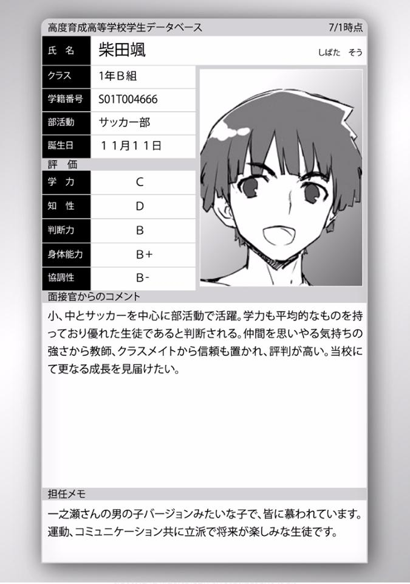
SE LEVANTA LA CORTINA
Finalmente llegó el día.
El inicio del festival deportivo que se perfila como un largo día.
Usando jerseys, todo el cuerpo estudiantil marchaba en sincronía como se había ensayado. Pero aunque lo llame marcha, la mayoría de los estudiantes caminaba normalmente. Solo mostraban la seriedad suficiente para no interrumpir la disciplina.
— ¡Le mostraré mi lado bueno a Kikyo-chan!
Ike, que caminaba detrás de mí, expresó con entusiasmo sus expectativas.
Me pregunto cómo tiene la intención de presumir cuando es una de esas personas que no son especialmente buenas para los deportes. Puedo decir que es casi un esfuerzo inútil si no tiene una estrategia secreta.
En la ceremonia de apertura, Fujimaki de la Clase A de tercer año fue quien dio el discurso de apertura.
Por cierto, en las afueras de los campos de la escuela, no había muchos, pero pude ver espectadores esparcidos por ahí. Seguramente son adultos que trabajan en el campus. Con respecto a ellos, no parece que la escuela haya establecido ninguna restricción. Ocasionalmente, pude ver sonrisas y manos saludando.
Por otro lado, los maestros vigilaban a los estudiantes sin una sonrisa en sus rostros, mientras que también pueden ser vistos adultos que parecen ser personal médico.
Además, se construyó una tienda que podía albergar aproximadamente a 20
personas y se instaló dentro un refrigerador, un dispensador de agua y cosas similares. Al igual que en la isla deshabitada, los preparativos son perfectos.
Por cierto, el Equipo Rojo y el Equipo Blanco fueron provistos de tiendas de campaña instaladas en lados opuestos de la pista, como si la estuvieran
haciendo sándwich. Se había realizado así para que no haya contacto posible más que durante los eventos.
— Pero aun así están muy bien preparados. Incluso se han puesto cámaras para a ayudar con las decisiones.
Para la carrera de 100 metros, que será lo primero, una cámara apunta hacia un lugar que parece ser la meta.
— Eso significa que se evitarán decisiones erróneas y definitivamente se evitarán resultados polémicos.
Aunque sea por una nariz, tienen intención de decidir la victoria y la derrota como si fuera una carrera de caballos. Es precisamente por eso que las competencias que son difíciles de puntuar como las de porristas y de ese estilo no están incluidas en este festival deportivo.
*****
— En el séptimo grupo.
Respondí mientras miraba el simple tablón del programa (el lugar donde estaban escritos el orden y la hora de las competencias).
— Será para mejor si no aparece un oponente fuerte. Por el bien de la clase, te animaré un poco.
— Haré todo lo posible para no llegar en último lugar.
Después de expresar mi objetivo poco ambicioso, los chicos de primer año nos dirigimos al lugar de la competencia.
Las competencias como los 100 metros planos se llevan a cabo en orden a partir del primer año.
Comenzando con los chicos de primer año de y terminando con las chicas de tercer año, es la totalidad del evento. Luego, con un descanso intercalado,
comenzará de nuevo con las chicas de primer año y terminará con los chicos de tercer año.
La competencia estaba por comenzar usando las impresiones que cada clase había presentado de antemano como base para decidir los emparejamientos.
Ya que ha comenzado el día del evento, quedó claro cuál es el orden en que correrá cada clase.
De cada clase, los dos seleccionados forman un total de ocho personas alineadas. Mi turno, como le había dicho a Horikita anteriormente, era el séptimo.
En total, los chicos de primer año formaron 10 grupos.
Ahora era el turno de Sudou, correría en el primer grupo.
Todos los estudiantes de la Clase D observábamos mientras conteníamos la respiración. El resultado del festival deportivo dependerá en gran medida de Sudou.
En este primer evento, utilizaremos el debut de Sudou en la carrera para aplastar a los oponentes. El plan es animar a todos con el mismo vigor.
Si Sudou finaliza con resultados decepcionantes, existe la posibilidad de que tenga efectos duraderos.
— Por lo que puedo ver, no parece que haya alguien que valga la pena aquí.
Hay muchos tipos gordos y llamativos. Está garantizado que llegará primero.
No pude ver ningún alumno notable de las otras clases de nuestro año escolar.
Como dijo Ike, probablemente ya esté garantizado.
— Por el contrario, dependiendo de cómo lo mires, también podría verse como una derrota.
Hablando idealmente, para alguien con habilidades físicas como la de Sudou, hubiera sido mejor si alguien rápido hubiera estado compitiendo.
— Pero esto es algo que no se puede evitar, depende de la suerte.
Había algo sobre Sudou, quien se encuentra en cuclillas en la línea de partida, que inspira confianza absoluta.
Aunque cayera a mitad de carrera, todavía podría darle vuelta, le daba a su entorno esa sensación de serenidad.
Luego, cuando sonó la señal, Sudou se levantó perfectamente y explotó.
Sudou, que había pasado a una persona al principio, superó a todos los otros muchachos como si estuviera jugando y los dejó mordiendo el polvo.
Llegó a la meta con una ventaja abrumadora sin que nadie pudiera seguirle el ritmo. No hay nada más que decir al respecto.
Todo el cuerpo estudiantil observaba cómo el primer corredor en la primera competencia, Sudou, se hizo con el primer lugar, como se esperaba.
Al mismo tiempo, la profesora que había sido seleccionada también logró llegar en último lugar, como se esperaba pero......
Sin siquiera darnos tiempo para disfrutar del momento, llegó la señal para el próximo grupo.
Las señales llegaban a intervalos de 20 segundos. Se necesitarán aproximadamente 4 minutos para que todos los chicos de primer año terminen de correr.
Como esto se repetirá para chicos y chicas en todos los años escolares, la carrera de 100 metros se completará en aproximadamente 30 minutos según los cálculos.
— Como se esperaba de Sudou-kun, supongo.
Hirata, quien está emparejado conmigo, lo elogió algo impresionado.
— Sí. Parece que las otras clases también han quedado desconcertadas.
No se limitó a ganar el primer lugar, sino que también dejó un fuerte e inconfundible impacto. Nosotros, el séptimo grupo, como Sudou y la Profesora, también tenemos nuestros roles adecuadamente asignados.
Hirata, que pertenece al club de fútbol y es un corredor rápido, tendrá una alta posición. Y en cuanto a mí, tomaría un lugar que no sea el último, incluso si es solo por uno, en otras palabras, no se puede evitar incluso si pierdo.
Luego, también está la cuestión de destacar y permanecer discreto. Hay varios estudiantes de otras clases que deberíamos estar vigilando, pero entre los que conozco, aquellos que despiden una fuerte presencia como Ryuuen y Katsuragi y los atléticos como Kanzaki y Shibata, me pregunto en qué grupo están.
El tercer grupo llegó hasta el punto de partida.
— Ohh, el calvito... no, me refiero a que Katsuragi está en el primer carril.
Ike apunta a su cabeza. El cabeza rapada que se bañaba bajo los rayos del sol brillaba cegadoramente.
Al lado de Katsuragi, un hombre con el que estoy familiarizado miraba la meta con una expresión tranquila. Él es Kanzaki de la Clase B.
Entonces Katsuragi y Kanzaki estarán compitiendo, ¿eh?
Mientras tanto, el hombre que está primero en la lista de aquellos a quienes cuidar, Kouenji de la Clase D, también es parte del tercer grupo, pero.....
No hay señales de Kouenji en el quinto carril que le asignaron.
Sin embargo, la escuela no se molestó en buscar al desaparecido Kouenji y, en cambio, tomándolo como una ausencia, comenzaron la competencia de inmediato.
Parecía que el tercer grupo estaba para cualquiera, pero en lo que respecta a velocidad, Kanzaki los superó a todos.
Katsuragi tampoco era lento, pero simplemente estaba más allá de él, y sin mucho alboroto, la carrera terminó. Kanzaki tomó el primer lugar y Katsuragi el tercero. A medida que la carrera progresaba constantemente, Hirata se dio cuenta de algo.
— Ayanokouji-kun, mira ahí.
Lo que Hirata había notado estaba en la dirección de la carpa. Mientras forzaba mis ojos para mirar, adentro pude ver a Kouenji arreglando su cabello.
Ya terminó de correr, seguramente ese no es el caso. Pero aun así, él es demasiado rápido en retirarse.
— Parece que no participará.
Hasta la ceremonia de apertura había estado obedeciendo honestamente o eso parecía, pero en última instancia, no participará en las competencias.
Kouenji se escapará poniendo como excusa que le duelen los pies o que no se siente bien.
Ya que la idea de que estaría en último lugar si se saltaba todas las competencias ni siquiera se le ocurría, la responsabilidad de eso recaía tanto en la clase como en el Equipo Rojo.
También la Clase A tiene a alguien que se saltará todos los eventos en Sakayanagi, a pesar de tener una razón legítima.
Suponiendo que la Clase C y la Clase B no tengan ausencias, entonces el Equipo Rojo simplemente tendrá que compensar el hueco dejado por esas dos personas. Todo un hándicap.
La competencia avanza sin problemas. Uno tras otro los grupos terminan y en poco tiempo, llegó nuestro turno. Entré al cuarto carril y, a mi lado, Hirata ingresó al quinto carril.
Además de nosotros, los otros miembros incluían Yahiko de la Clase A, pero el resto son chicos con los que no estoy familiarizado. El primer festival deportivo de mi vida.
Comencé con una carrera inicial que no fue ni rápida ni lenta. Hirata, quien corría a mi lado, lenta pero establemente me pasó y se unió a los mejores corredores.
Por otro lado, frente a mí estaban las espaldas de cuatro personas, tomé el quinto lugar.
Quizá porque no había una abrumadora diferencia entre las velocidades, todos corrimos compactos. Luego, sin cambiar el orden, terminé en quinto lugar. En cuanto a Hirata, por un estrecho margen, consiguió el primer lugar.
— Fuu. Buen trabajo.
Hirata, que había alcanzado la meta antes que nadie, suspiró levemente y me dijo esas palabras de reconocimiento.
— Lo siento, por ser una carga.
— Nada de eso. Fue una buena carrera, todos eran rápidos.
Hirata no me culpó, incluso después de mis decepcionantes resultados, y me saludó con una sonrisa.
Me apresuré a salir de la pista y volví a la tienda.
Porque el siguiente grupo iniciará y me interpondré en el camino.
Los chicos del primer año, después de haber terminado con la carrera de 100
metros, volvieron a sus asientos y se concentraron en la carrera de las chicas como si las estuvieran devorando.
También están los resultados, pero probablemente solo querían ver las siluetas de las chicas corriendo y no podían evitarlo.
— ¿Dónde está Sudou?
No pude ver a Sudou, quien ya debería estar en su asiento.
— No lo sé. En el inodoro probablemente, ¿verdad? Más importante, veamos esos senos oscilantes, ya sabes, senos.
Ike estaba optimista, pero inmediatamente tuve un mal presentimiento sobre la ausencia de Sudou. Creí que estaría animando a Horikita, pero que no pueda verlo es extraño.
— ... No puede ser.
Miré hacia la carpa.
Como si mi premonición se hubiera realizado, vi a Sudou acercándose a Kouenji.
— Esto no se ve bien. Será mejor que los detenga.
— --Cierto.
Hirata, que lo notó casi al mismo tiempo, también se alteró y se dirigió hacia la carpa.
Parece que las cosas ya se han calentado allí y Sudou, apretando su puño, se enfrentó a Kouenji.
— ¡Bastardo, ausente y no te importa, no me jodas!
Cuando abrí la puerta, pude escuchar la voz intimidante de Sudou desde adentro.
Sudou había cerrado la distancia hasta el punto en que, incluso ahora, parecía como si estuviera a punto de dar un golpe, pero parecía como si Kouenji ni siquiera hubiera notado su existencia.
Se ve descarado mientras admira su reflejo en el vidrio de la ventana. Pero esa actitud solo terminó agregando leña al fuego y alimentando la ira de Sudou.
— Parece que no lo entenderás a menos que te dé una paliza, Kouenji.
— Eso no está bien, Sudou-kun. Si los maestros lo descubren...
Hirata, por supuesto, lo detiene, pero Sudou no es el tipo de hombre que sea convencido por algo como eso.
— Cállate. Este problema es asunto de nuestra clase, ¿verdad? No importa si lo golpeo. Mientras este tipo no vaya llorando con los maestros.
— Como de costumbre, eres un hombre desagradable. Vine aquí porque quería pasar tiempo a solas en silencio. Como puedes ver, hoy me siento enfermo. Rechacé la invitación para que no fuera una molestia.
— ¡No me mientas! Dejando de lado las prácticas, ¡ni siquiera estás participando en el evento!
Es comprensible gritar así. No importa cómo lo mires, Kouenji es la imagen misma de la salud.
— ¡No, Sudou-kun!
Antes de que Hirata, que estaba a cierta distancia, pudiera acercarse, Sudou ya no pudo soportarlo y levantó el puño.
Quizá tenía la intención de golpear a Kouenji una vez para abrir sus ojos.
Sin embargo, el hombre que está más allá de las expectativas y estándares normales, Kouenji, atrapó el poderoso golpe con la palma de su mano.
“¡Pan!”. Y un sonido seco como ese reverberó dentro de la carpa. Kouenji comenzó a hablar sin mirar la cara de Sudou.
— Detente. Alguien como tú no puede vencerme.
No era que Sudou se hubiera contenido con un compañero de clase. Fue un puño lanzado con todas sus fuerzas.
Y lo había bloqueado con demasiada facilidad.
Sudou probablemente sintió de nuevo el alto potencial de Kouenji. Pero en lugar de tenerle miedo, Sudou parece haberse puesto serio.
— Adelante entonces. Voy a romper ese orgullo tuyo.
— Vaya, vaya. Tanto tú como ella, parece que ambos quieren decirme que no soy confiable.
— ¿Ella? ¿De quién estás hablando?
— Esa Cool Girl por la cual eres tan apasionado. Lo ha estado recalcando bastante hasta el día de hoy, para asegurarse de que participe seriamente en el festival deportivo.
— Horikita, ¿quieres decir...?
Al parecer, Horikita había previsto la posibilidad de que Kouenji no se presentara.
Bueno, supongo que es natural tener dudas viendo cómo se retiró de inmediato en la isla deshabitada.
Aun así, no sabía que ella había estado trabajando en Kouenji a mis espaldas.
— En cualquier caso, vete. No me siento bien.
— ¡Bastardo---!
Para evitar que vuelva a suceder, Hirata se interpuso entre Sudou y Kouenji e intentó mediar.
— Creo que es mejor calmarse un poco. La actitud de Kouenji-kun es un problema, pero como él dice que no se siente bien, tiene derecho a descansar. Además, no importa contra quien sea, la violencia es mala.
— Definitivamente es una mentira. Dijo lo mismo en la isla deshabitada, ¿no?
— Una acusación infundada. Es solo que mi mala salud no se muestra bien en mi apariencia.
— ¿Planeas perderte el resto de las competencias? ¿Eh?
— Por supuesto, participaré si me recupero. Si me recupero, eso es.
Sudou ya no podía contener su ira, pero también es un hecho que no puede permitirse engancharse con Kouenji para siempre.
— La próxima competencia va a comenzar pronto, Sudou-kun. Si estás ausente, como nuestro líder, afectará nuestra moral.
Hirata cambió a un enfoque diferente para convencer a Sudou.
— .... Lo entiendo. Solo tengo que regresar ¿cierto? Volveré.
Acompañándolo, Hirata dejó la carpa junto con Sudou. También los seguí poco después.
Volviendo de mal humor a la tienda de la Clase D, Sudou se sentó en una silla tubular.
— ¡Mierda! ¡La próxima vez, de verdad mandaré a volar a ese bastardo!
¡Mierda!
Su ira, en lugar de disminuir, solo aumentó y se dispersó.
Un hombre sabio se mantiene alejado del peligro y las personas se alejan de Sudou una tras otra. Sudou desató su ira sobre cualquiera que se le acercaba al gruñirles.
Pero Ike, que estaba absorto en la carrera de las chicas, no notó la ira de Sudou y se acercó alegremente a él. Cuando me di cuenta, parece que la carrera de
100 metros de las chicas también ha llegado a su clímax, ya que el último grupo acababa de ingresar a la pista.
— ¿Qué has estado haciendo, Ken? Acabas de regresar, la carrera de tu chica favorita está a punto de comenzar.
Le dio una palmada a Sudou en la espalda. En ese instante, su mano fue agarrada y fue atrapado con una fuerte llave a la cabeza.
— ¡¿Gyaa?! ¡¿Qué diablos?!
— Alivio de estrés.
— ¡Duele, duele, duele! ¡Me rindo, me rindo!
No tengo nada que decir al respecto, excepto que es desafortunado y lamentable. De todos modos, después de haber atacado a Ike con ira y mientras la carrera de Horikita se acercaba, parece que Sudou recuperó un poco de calma.
Horikita ingresa a la pista cuando la última ronda de las chicas de primer año está cerca.
— Al menos hay sanación viendo a Suzune, supongo...
Si puede ser curado al observar eso, entonces, por supuesto, haré que se cure.
Mientras miraba a Sudou, Sakura, sin aliento regresó a mi lado.
— Haa, haa...... es d-doloroso...
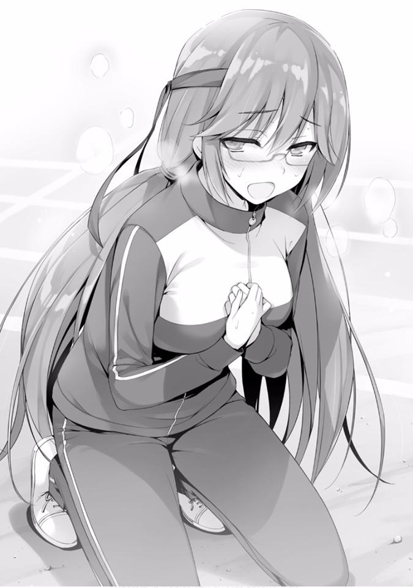
Ella debe haber estado corriendo dando su mejor esfuerzo, ya que está respirando repetidamente y con dolor extremo.
— ¿M-Me estabas mirando, Ayanokouji-kun?
Me miró con ojos brillantes detrás de sus gafas.
Desafortunadamente, la carrera de Sakura había terminado mientras yo estaba persiguiendo a Sudou en la carpa y entonces no sé cómo fue. Pero si le digo que no estaba viendo, entonces Sakura se deprimirá mucho.
— Lo hiciste bien.
Lo dije brevemente, sin embargo, puse mis sentimientos en esas palabras. Una cosa cierta es que ahora entiendo que Sakura lo dio todo en la carrera.
— ¡G-Gracias! Esta es la primera vez que no estoy en el último lugar.
Lo dijo con una sonrisa.
Sakura había sido la más lenta en ambas clases y en la práctica, pero parece que le ganó a alguien.
Además, a juzgar por su aspecto, no parece que su oponente se haya caído o algo así.
— Ten cuidado de no forzarte. Si se te sube a la cabeza, podrías caer y lastimarte.
— ¡O-Ok!
Sonriendo nuevamente mientras respira pesadamente, a mi lado Sakura miró hacia la próxima carrera de las chicas. También me concentré en las otras chicas que correrían contra Horikita.
En el tercer carril estaba Ibuki Mio, una estudiante de la Clase C.
Qué extraña coincidencia, que Horikita esté en el mismo grupo que Ibuki, que la ve como rival. Horikita ni siquiera la miró, pero parece que ya se encendió una chispa en Ibuki.
Incluso desde lejos, puedo ver su determinación de no perder contra Horikita sin importar nada.
— Me pregunto si Ibuki-chan es buena en los deportes.
— ¿Cómo demonios lo voy a saber? No hay duda de que Horikita será la ganadora.
No hay forma de que los otros chicos lo sepan, pero Ibuki es muy atlética. Solo tengo el mínimo conocimiento pero no puedo decir con certeza quién ganará entre ellas.
Al mismo tiempo de la señal de salida, siete chicas salieron disparadas. Entre las dos a las que estoy prestando atención, la que tuvo mejor comienzo fue Ibuki.
Horikita tuvo un ligero retraso en la reacción y se quedó atrás.
Pero acelera inmediatamente, y con despliegue hermoso alcanza a Ibuki.
Por otro lado, Ibuki había tenido éxito en conseguir la ventaja, pero tal vez tuvo curiosidad sobre Horikita, quien corría a su lado, y se distrajo mirando hacia atrás.
Debido a eso, su distancia disminuyó y Horikita se apoderó perfectamente de la posición intermedia y sin inmutarse ni retirarse, mantuvo esa posición y continuó.
Luego, acercándose al final, pude ver la expresión de Ibuki endurecerse.
Mientras estaban lado a lado, casi indiferentemente Horikita tomó la delantera.
Era un estrecho margen, pero emitiendo una sensación de confianza en sí misma, Horikita terminó ocupando el primer lugar.
— ¿Es esto malo.....?
Esa premonición susurrada de Sudou resultó haber dado en el blanco. Fue poco a poco, pero la distancia entre Horikita, que tenía el liderazgo, e Ibuki, disminuyó lentamente.
En respuesta a Horikita, que intentó dejarla atrás, Ibuki se acercó aún más.
La que primero atravesó la línea de meta fue Horikita.
Después de la gran carrera en la que nadie hubiera considerado extraño que se necesitara el video para tomar la decisión, el público estalló en un pequeño estruendo.
Al lado de Horikita, que estaba recuperando el aliento, Ibuki pateó el suelo con frustración. Pero pienso que si ella no hubiera estado tan preocupada por Horikita, entonces las posiciones podrían haber sido diferentes.
Una ligera apertura en su conciencia de las cosas fue la causa de la victoria.
— Pero aun así, fue un encuentro que dominaron las dos.
Sudou, que estaba mirando a Horikita después de que había terminado de correr, también sintió lo mismo. Dejando a un lado su carrera igualada contra Ibuki, las otras 4 chicas excluyendo a la Clase D honestamente eran de un nivel bastante bajo.
Después de completar los 100 metros de primer año, informamos nuestros resultados.
Los que se jactaban de tener altas habilidades atléticas como Sudou, Horikita o Hirata lograron el primer lugar.
Sin embargo, pude ver que el cuerpo principal de la clase que se esperaba que ganara se clasificó mal y tuvimos un comienzo insatisfactorio.
— Mantengan la calma, bastante. Especialmente tú, el único orgullo que tienes es tu velocidad ¿verdad?
— A-Aunque digas eso, ese tipo Shibata es realmente bueno.
— No se puede evitar. Porque Shibata-kun es más rápido que yo.
Sin duda, durante la práctica del club, hubo varios casos en los que parecía más rápido incluso que Hirata.
A pesar de nuestro buen comienzo, a partir de ahora los cálculos serán cada vez más complicados.
No hay cuadernos ni teléfonos. Incluso si decimos verbalmente los resultados de las competencias, será difícil procesarlo todo. Tampoco sabemos la situación de las otras clases a detalle.
Me acerqué a Horikita, que había regresado, y la llamé.
— Estuvo cerca.
— ... Es cierto. Me sorprendió. Ibuki-san es más rápida de lo que esperaba.
Quizá notó que Ibuki se acercaba, Horikita dejó escapar un suspiro de alivio.
— Parece que has estado hablando con Kouenji.
— ¿Quién te dijo...? Sin embargo, parece que no tuvo sentido.
Por solo un breve momento, Horikita miró a Kouenji, quien elegantemente pasaba el tiempo dentro de la carpa.
— Tenía dudas acerca de que no participara, pero finalmente terminó así.
— En cierto sentido, más que nadie él es el más desinteresado en la Clase A.
Mientras no sea expulsado, disfrutará el resto de su tiempo aquí. Mientras lo haya decidido, no hay espacio para actuar.
Pero parece que una sensación de malestar había comenzado a brotar dentro de Horikita.
— Si fuera como Kushida-san, una persona muy querida por la clase, me pregunto si podría haberlo convencido.
— No sé. Sin embargo, no creo que él sea del tipo que esté de acuerdo con Kushida o con la persuasión de Hirata.
Por otra parte, ninguno de los dos trataría de persuadir a la fuerza a Kouenji.
En cuanto al por qué, incluso si solo lo dice él mismo, no llamarían mentiroso a alguien que dice estar enfermo.
— Pensar que dirías algo como “si fuera como Kushida”.
— En primer lugar, nunca la he odiado ni nada por el estilo.
Después de una conversación natural como esta, Horikita se dio cuenta de que había dicho algo que no debía y cerró los labios con fuerza.
— Finge que no escuchaste eso de ahora.
Diciendo eso, terminó la conversación. Luego volteó para mirar las carreras de tercer año que comenzarían pronto.
Para ella, la clase D es algo de lo que preocuparse, pero en el mismo sentido, la existencia de su hermano también es una preocupación similar. Por supuesto, no es como si su hermano, que es el presidente del consejo estudiantil, se viera afectado de alguna manera por los sentimientos de su hermana.
El hermano de Horikita, que inició como parte del segundo grupo, naturalmente se llevó el primer lugar.
— Es tan rápido como yo lo imaginaba.
— Es porque nii-san es perfecto. No importa lo que haga, siempre es el número uno.
En lugar de jactarse, sonaba más como si fuera una cuestión indudable.
Como todos los años escolares terminaron con sus carreras de 100 metros, comenzó el recuento total. Antes de que comience la próxima competencia, se anunciarán los puntos para el Equipo Rojo y el Equipo Blanco.
Equipo rojo: 2011 puntos.
Equipo blanco: 1891 puntos.
Las competencias acaban de comenzar, pero el Equipo Rojo lleva ligera ventaja.
*****
Básicamente es un evento que es igual a la carrera de 100 metros en el sentido de que recae únicamente en la velocidad. Pero, de nuevo, eso no es todo lo que hay que hacer.
Es porque será un grave error si no las pasamos con certeza y sin apresurarnos.
En lo que respecta a esta competencia, hay dos reglas adicionales.
“Derribar la valla”. “Tocar la valla”. Estas dos penalizaciones de tiempo se agregarán.
Son 0.5 segundos si la valla es derribada. Son 0.3 segundos si se toca la valla.
Ese tiempo se nos agregará.
Debido a esto, saltar rápidamente no es suficiente para ganar. Uno debe saltar sobre ellas con seguridad.
Pero también significa que obviamente no podrás ganar si tardas demasiado, lo importante aquí es cuánto le has agarrado el truco durante el periodo de práctica.
Hay 10 vallas en total colocadas a intervalos de 10 metros. En caso de que derribes todas, significa que se agregarán un total de 5 segundos a tu tiempo. Es algo desalentador.
En este caso, se decidió que Sudou participará como parte del último grupo.
— Si llegan últimos, los abofetearé.
Los estudiantes poco atléticos temblaban ante la intensa presión que venía de Sudou, quien los miraba con los brazos cruzados.
— ¿¡Qué clase de tiranía es esta!?
— Ehh, ¿está Sotomura-kun presente? En caso de ausencia, será descalificado.
Pude escuchar esas palabras viniendo del árbitro en la línea de partida.
— Tengo dolor de estómago... ¿está bien si me ausento?
La profesora, que apenas pudo superar las vallas durante la práctica, intentó escapar.
— ¿Eh? Está bien si derribas todas las vallas así que muestra algo de carácter y sigue adelante.
— ¿¡Kopu!? ¡E-E-Entiendo!
A una distancia donde sus rostros casi se tocaban, miró fijamente a la profesora que luego entró en la pista.
Hay una gran diferencia entre llegar en último lugar y ser descalificado. Como en caso de descalificación, ni siquiera podrás obtener un punto, la participación es esencial.
— Maldición, es un inútil. Hace lo que quiere como hábito, es por eso que está gordo.
Pero como era de esperar, la profesora no pudo superar las vallas y, finalmente, terminó golpeándolas con la mano y llegó en el último lugar.
— Aun así, ese tipo Shibata es bastante bueno.
Al determinar las habilidades de las otras clases, Sudou dijo eso aconsejando precaución. Todavía es el segundo evento, pero en la carrera de vallas también llegó el primer lugar sin dificultad.
En este momento, él sería el rival de Sudou. Además, al igual que Ichinose, posee cualidades de liderazgo que le permiten concentrar su entorno.
— Si nos encontramos cara a cara, voy a ganar.
Si esto sigue así, entonces el objetivo de Sudou de ser el primero en todo el año escolar se volverá más lejano. Especialmente porque no se sabe cuál será el resultado para las competiciones en equipo.
Es causa de ansiedad.
— El siguiente es el cuarto grupo, por favor prepárense.
Habiendo sido llamado por el árbitro, entré en el mismo carril de antes. En el segundo carril pude ver la figura de Kanzaki.
— Parece que nos enfrentamos.
— .....Se amable conmigo.
— He oído de Ichinose que eres bastante rápido.
No sé de dónde sacó Ichinose esa idea... pero recordando puedo pensar en una situación.
Supongo que me vio corriendo cuando Sakura quedó atrapada en ese incidente.
No es como si estuviera corriendo a mi máxima velocidad, pero por mis movimientos y eso, es muy probable que también adivinara mi capacidad física.
Además, cuando me entretenía jugando con Ichinose en la piscina, ella me había estado observando. No se puede evitar que se fije en mí durante todos los exámenes e incidentes hasta ahora.
— Esa información es errónea. ¿No viste mi lugar en los 100 metros? Es el quinto, ¿sabes?
— De hecho, ese es el resultado, pero no me pareció que te lo tomaras en serio.
— No hay ninguna ventaja esconder tu capacidad en este festival deportivo,
¿verdad? Perderás de esa manera.
— La probabilidad de eso es baja, pero no es como si hacerlo sea inútil desde el punto de vista estratégico.
Parece que Ichinose y la Clase B han realizado un reconocimiento, han observado y luego adivinado. Para una existencia como la mía, incluso si llegara en primer lugar, no es solo mi clasificación sino el proceso para llegar ahí lo que tomarán en cuenta.
— Además, incluso entre los del mismo año escolar, eres un hombre bastante tranquilo. Después de todo, ese tipo de persona da miedo.
— Bueno, piensa lo que quieras.
Todavía estábamos en el medio de la conversación, pero como un chico de la Clase C se interpuso entre nosotros, fue interrumpida. A excepción de Kanzaki, no parece que haya caras sobresalientes en el cuarto grupo.
Será un error si mi clasificación sube un poco.
Al mismo tiempo que la señal de inicio, comencé a correr aproximadamente al mismo ritmo que antes.
Como era de esperar, Kanzaki superó a una persona, pero como solo hay un estudiante corriendo delante de mí, al final terminé con un buen resultado de tercer lugar.
También hay combinaciones que considerar, pero para bien o para mal, parece que puedo mantener esta posición discreta.
— ... Haa, Rayos... no puedo seguir el ritmo.
Cuando regresé a nuestro campamento después de haber terminado con la carrera, Yukimura estaba susurrando con una expresión abatida. Por lo que parece, después de terminar con la segunda competencia no pudo obtener buenos resultados.
— ¿Te fue mal?
— Ayanokouji, ¿eh?........ Quiero maldecir esta combinación. Séptimo grupo y séptimo lugar...
Así que esto es lo que llaman un premio de consolación. Ha llegado a circunstancias considerablemente amargas.
— Depende de tu modo de pensar. Si es Yukimura, incluso si llegas en los últimos lugares, no habrá ningún problema para ti en los exámenes ¿no?
— No reprobaré, pero no cambia el hecho de que mis calificaciones se desplomarán. Además, este resultado será un lastre para la clase y el equipo también...
Parece que el hombre que aspira a la Clase A más que nadie, también es más responsable que cualquier otra persona. Probablemente sea porque desacredita a los estudiantes de baja capacidad académica como Sudou y los demás con un tono duro, por lo general, no quiere mostrar ninguna debilidad.
Sería grosero para mí decir algo más y por eso me alejé un poco de él.
Me centré en la competencia femenina.
La apertura es con Horikita y Sakura, dos personas que conozco bien. Horikita, que esperaba ganar, no sentía presión mientras estaba en la línea de salida.
Por otro lado, aunque suena mal cuando lo pongo en palabras, Sakura, cuya expectativa es cero, parece nerviosa.
— Horikita-san, parece que este acomodo no es demasiado bueno.
— ¿Es así?
Hirata, que conoce bien las otras clases, lo dijo después de ver a las competidoras. La competencia comenzará poco después.
— En la Clase C, las que se dice que son las más rápidas son Yajima-san y Kinoshita-san del club de atletismo y están aquí.
— Ya veo...
Horikita, en los 100 metros planos, había sido capaz de dominar la feroz batalla contra Ibuki, pero sus pruebas continúan.
— Ciertamente, parece que ganar va a ser difícil.
Horikita explotó y corrió y saltó, pero las dos de la Clase C se adelantaron a ella.
Luego, sin posibilidades, Horikita terminó en tercer lugar como resultado.
Hirata recibió ese resultado y volteó hacia mí. No es un contacto visual hecho en respuesta a la derrota de Horikita. Es porque sintió una extraña sensación de malestar con los emparejamientos de esta carrera.
*****
— Definitivamente estamos ganando, chicos. Como ese idiota Kouenji no está, ¡tenemos que estar mucho más entusiasmados! —grita Sudou.
Anima a todos los chicos de la Clase D y la Clase A reunidos frente a él.
Por otro lado, a los que enfrentará el grupo de Sudou son los chicos de la Clase B liderados por Kanzaki y Shibata, así como los chicos de la Clase C liderados por Ryuuen.
En particular, hay estudiantes en la Clase C que, aunque desconocidos, parecen fuertes.
Están Sakazaki y Komiya, que estuvieron involucrados en la pelea con Sudou hace un tiempo, y también está el fornido estudiante medio japonés medio negro llamado Yamada. Lo he visto de vez en cuando en la escuela, pero me pregunto qué tan fuerte es.
Ya sea que haya suficientes estudiantes o no en cada clase, en este momento no hay nada que hacer más que luchar después de tener en cuenta nuestras fuerzas actuales.
Las reglas dictan que gana el grupo que hace dos capturas. Durante su discusión anterior, Katsuragi y Hirata han decidido que sus clases estarán alternando entre ataque y defensa.
Deben haber determinado que dividirse en ofensiva y defensa es un movimiento altamente arriesgado. De esta manera, es más fácil de entenderse y cooperar.
La Clase D irá primero a la ofensiva, mientras que la Clase A tendrá el papel de proteger la bandera. Si esta formación nos permite tener éxito, entonces el plan es no cambiar los roles.
— Bueno, no se preocupen, aunque esté solo, derrotaré a nuestros enemigos.
— No a la gente, estamos tras la bandera...
Le dije eso, ya que estoy un poco preocupado.
— No puedo garantizarlo. Estoy enojado por culpa de Kouenji. Grrrr.
Quizá tiene la intención de atacarlos ya que fue franco con su hostilidad. Sudou le enseñó el dedo medio a nuestros oponentes.
— Será mejor que mantenga mi distancia...
Asustado de involucrarse, Ike y los otros se alejaron lentamente de Sudou. Eso es sabio de su parte.
El equipo atacante (principalmente Sudou) esperó con impaciencia al frente por el silbido que marca el comienzo del encuentro.
Por otro lado, el equipo defensor formado por Katsuragi y los demás están revisando repetidamente su formación y construyendo sólidas defensas.
Naturalmente, los actos flagrantes de violencia como golpear y patear están prohibidos, pero la escuela pasará por alto un cierto grado de contacto.
Se esperan muchos agarres y empujones.
— Uuu--- de alguna manera estoy empezando a ponerme nervioso. “Capturar la bandera”, es la primera vez para mí.....
— ¿No participaste antes en el festival deportivo de tu secundaria?
— No me dijeron que sería una competencia peligrosa. ¿Has participado antes, Ayanokouji?
— No... esta es la primera vez para mí también.
— ¿Qué diablos? Así que es la primera vez para ti también.
En medio de esta conversación inútil, sonó la señal que marca el inicio del encuentro. Y Sudou cargó por delante de todos los demás.
Los miembros más proactivos lo siguieron.
— ¡Esto es malo, vámonos Ayanokouji! ¡Preferiría que Sudou no me matara por holgazanear!
Ike, Yamauchi y yo, que no somos aptos para el choque, seguimos lentamente detrás del grupo más proactivo. Al igual que nosotros, la coalición BC también ha dividido sus clases entre ataque y defensa.
Puede ser algo obvio, dado que la cooperación entre ellos es más difícil que para la coalición DA.
En la primera ronda, parece que va a ser la Clase B la que defienda la bandera.
La gente de la Clase B espera más adelante.
Por cierto, está prohibido que un equipo atacante interactúe con otro equipo atacante.
Como mucho, la regla es que el equipo atacante necesariamente debe atacar al equipo defensor.
— ¡Cualquiera que quiera morir, adelante!
Diciendo algo escandalosamente peligroso como eso, Sudou se estrelló contra el equipo defensor.
Entonces, con una altura y poder que hace difícil creer que sea un estudiante de primer año de preparatoria, se deshace de los estudiantes alrededor de la bandera uno por uno.
— ¡Deténganlo! ¡Detengan a Sudou---!
Una parte del equipo defensor rodea a Sudou, acompañada de esos gritos de la Clase B.
— ¡Oigan chicos, sigan rápido! ¡Despejaré el camino para ustedes!
Sudou le grita al grupo que avanza siguiéndolo sin mirar atrás.
Sin embargo, las cosas no son tan simples.
La situación gradualmente se volvió caótica, casi como un campo de batalla, y se levantaron nubes de polvo.
Confié en los estudiantes de la Clase D para que superen esa situación sin ser útil ni un obstáculo.
— ¡Mierda, cuántos van a venir contra mí!
Tres o cuatro estudiantes masculinos empujaron a Sudou con sus cuerpos e incluso su fuerza fue superada.
Por otro lado, el grupo que avanzaba, que estaba al borde de poder abrirse paso, fue repentinamente detenido.
El problema con la Clase D es que a pesar de tener el penetrante poder ofensivo de Sudou, casi no hay nadie con ese tipo de fuerza.
Por el contrario, la clase B tiene muchos estudiantes que poseen una fuerza superior a la media. Especialmente los no agresivos como la Profesora y yo, sin contribuir a la ofensiva, inevitablemente terminamos convirtiéndonos en una carga.
— ¡Esto es malo, Ken! ¡Es la Clase A! ¡Ese mestizo, Yamada o cómo se llame, está armando un alboroto!
— ¿¡Huh!?
Cuando volteó hacia esa voz, la bandera del Equipo Rojo que la Clase A había estado protegiendo ahora estaba ligeramente inclinada.
Como la Clase C está llena de gente violenta como Sudou... no, estudiantes que son casi como luchadores, fue una tarea fácil para ellos penetrar a través de nuestras defensas.
Si hay una pelea entre nosotros, queda claro quién tiene la ventaja y quién está en desventaja.
Además, si Ryuuen les hubiera ordenado atacarnos, probablemente se convertiría en una lucha desesperada. Necesitamos hacer algo, pero Sudou, que es vital, también está siendo obstruido por cuatro de cada cinco personas y no puede hacer nada. Estamos completamente bloqueados.
Por supuesto, ya es bastante impresionante que enfrentemos a tantas personas.
Sudou intenta desesperadamente avanzar hacia la bandera, pero con suficiente crueldad el silbato sonó.
Finalmente, el Equipo Blanco terminó completando una captura.
— ¡Ahh, mierda! ¡¿Qué diablos están haciendo?! ¡Pónganle agallas!
Mirando la bandera cruelmente derrumbada, Sudou dirige su ira hacia la Clase D
que no pudo montar una ofensiva.
— Incluso si dices eso... esos tipos son bastante fuertes, ¿sabes? Oww....
Tengo un raspón.
— Es solo superficial, ¿verdad? ¡Sopórtalo, has estado atacándolos y dándoles rodillazos, eres un inútil!
Entiendo el sentimiento, pero ambos están a un paso del juego sucio y ser descalificados.
— No se puede evitar que hayan ganado una ronda. La próxima vez, protejamos la bandera adecuadamente.
Suavemente palmeo el hombro de Sudou y una vez que se hubo calmado, Hirata volvió a colocar la bandera caída.
— Tch... definitivamente vamos a protegerla, ¿lo entienden?
— L-Lo entendemos---. Haremos lo que podamos---
— No solo lo que puedan, definitivamente la protegeremos. ¡No importa si es por una hora o dos horas!
Si hay algo más que le falta a la Clase D, es unidad y motivación. Esos dos. Esto también me incluye a mí, pero aparte de unos pocos estudiantes, el resto no tiene ningún tipo de ambición.
Con respecto a eso, la Clase B que estaba en la defensa tiene tanto unidad como motivación y como tal, son enemigos formidables.
— ¡Ayanokouji, no dejes que la bandera caiga aunque mueras! ¡Porque eres el segundo en la clase!
Para que conste, dado que soy el siguiente en fuerza después de Sudou, tendré que proteger la bandera junto a él.
No puedo relajarme ahora que estoy siendo observado por Sudou, quien está defendiendo firmemente la bandera.
— No se metan conmigo, no les dejaré ganar fácilmente dos veces seguidas.
Voy a vencer a ese bastardo de Ryuuen.
Hablando de eso, durante la primera ronda, Ryuuen que había sido parte del equipo atacante, solo jugó el papel de observador.
Es porque ya estaban dominando sin siquiera necesitarlo. Sudou probablemente no podía soportar ese hecho.
— Salgan, C. Salgan, C.
Sudou continuamente susurra eso, pero honestamente, será difícil si la clase C
concentrara todo su poder y viniera tras nosotros. Creo que será más fácil para nosotros si la Clase B es la que nos ataca.
A medida que ambos bandos completan sus preparativos, el inicio de la segunda ronda está por comenzar.
Ahora bien---
— Están aquí, están aquí. ¡Han venido!
Aparentemente las cosas no salieron como yo esperaba y terminaron yendo por el camino de Sudou. Preparándose para un ataque, los fuertes estudiantes de la Clase C nos miraron.
Luego, el líder que logró unificar a esa clase, Ryuuen, también se rió audazmente desde atrás.
Casi como si fuera un estratega al mando en el campo de batalla y junto con la señal para comenzar el combate, les dio la orden de cargar.
Probablemente fue una instrucción simple.
Debajo de la palabra "derríbenla" estaban los soldados tomando medidas ofensivas, asustados por su tiranía. Los estudiantes con cuerpos enormes similares a los de Sudou, que parecen ser del tipo de club deportivo, llegaron a la carga.
Nos atacaron como una pared, avanzando sin apresurarse.
Se escucharon gritos de los estudiantes de Clase D por todo el lugar. Los estudiantes defensores que forman la pared exterior están disminuyendo lentamente en número.
— ¡Levántense, tomen sus piernas y tírenlos!
Las irracionales palabras de aliento de Sudou fueron ahogadas por los gritos enojados de nuestros oponentes.
La Clase C usó repetidamente golpes de codo que casi se adentraron en el territorio del juego sucio y en un abrir y cerrar de ojos se abrieron paso hacia la pared interior.
Katsuragi y los otros de la Clase A también han avanzado hasta el punto en que casi podían tocar la bandera, pero me pregunto si llegarán a tiempo.
— ¿¡Guah!?
Pude escuchar la voz de agonía de Sudou, que estaba apoyando la bandera justo en frente de mí. El mestizo llamado Yamada se había acercado a Sudou.
Su físico supera con creces el de Sudou.
La bandera que estábamos protegiendo ahora está ligeramente inclinada.
— ¿Quién diablos me golpeó en el estómago?
Aparentemente, durante el caos, alguien había atacado a Sudou. Además, no fue solo una o dos veces cuando las voces de dolor e ira se mezclaron.
Pero para Sudou, que tiene que sostener la bandera con ambas manos, no pudo hacer nada al respecto. Todo lo que podía hacer era soportarlo.
— Duele, ¡dije que duele, bastardo!
Solo luchando con su voz, la Clase C no muestra signos de cesar en sus acciones. Sudou se arrodilla de dolor. Pero aun así, me gustaría elogiar ese espíritu de lucha que aún intenta proteger la bandera.
Alguien pisó descalzo la espalda de Sudou. Entonces, como si afirmara su dominio, aplastó la espalda de Sudou con todas sus fuerzas.
— ¿¡Gah!?
Incluso en medio de todo este forcejeo durante el encuentro, fue un golpe diabólico que capitalizó su punto ciego. No hace falta decir que el responsable de ello fue Ryuuen.
— ¡Bastardo, Gah!
Una vez más, lo pisotearon sin vacilar hasta el punto en que creí que le habían roto la columna vertebral.
Cuando Sudou colapsó por ese golpe, ahora que había perdido su apoyo, la bandera cayó después de levantar una nube de arena.
En un abrir y cerrar de ojos, el resultado fue decidido.
Mientras se desplomaba en el suelo, Sudou miró al hombre que lo había pisado, Ryuuen.
— Ahh, ahh, ahhh, cabrón... ¡eso fue juego sucio!
— ¿Hmm? ¿Así que estabas allí? No me di cuenta.
Diciendo eso sin un rastro de miedo, levantó la bandera. Sudou intentó perseguirlo, pero parece que aún le duele un poco la espalda ya que no fue capaz de levantarse.
La coalición DA sufrió una gran derrota.
— ¿Está bien tu espalda?
— Kuh... de alguna manera... ¡mierda, mierda!
Más grande que su dolor fue la ira por haber sido víctima de un ataque sucio e irrazonable que no pudo contener.
— ¡Ese bastardo arrogante, si me encuentro con él de nuevo voy a noquearlo...!
— Terminarás causando otro alboroto. ¿Quieres volver a pasar por eso?
Con eso, me refiero al incidente en el que Sudou se peleó con la Clase C y casi se deshacen de él. Además, si es Sudou quien lo inicia, entonces esta vez recibirá un castigo por ello.
— ¡Así que está bien cuando lo hace él y no cuando lo hago yo! ¡Mira las marcas en mi espalda!
— Entiendo lo que intentas decir, pero se verá como una acción que sucedió naturalmente en el transcurso de la batalla.
Ryuuen y Sudou, ambos están tratando de hacer lo mismo, pero hay una diferencia abrumadora en su técnica.
Esta vez, fue una acción que tuvo lugar mientras los estudiantes estaban mezclados durante la competencia y había nubes de arena por todas partes. De cualquier manera, escogió un buen momento y método para atacar.
— ¡Ah, esto me está molestando! ¡Pensar que estaba planeando ganar cada competencia!
Por la irritación que sintió hacia Ryuuen, se volvió hacia las decepcionantes Clases D y A y expresó su descontento.
Como la Clase A también lo escuchó, algunos devolvieron la mirada. Algunos de ellos intentaron replicar, pero Katsuragi los refrenó y las cosas no llegaron a eso.
— Perdón por ser inútil...
— Yo también. También es porque no pudimos protegerla. Intentémoslo más duro la próxima vez.
Solo Katsuragi y Hirata aceptaron tranquilamente el resultado y por ahora decidimos separarnos y regresar a nuestros campamentos.
*****
Mientras tanto, el juego de lanzamiento de pelotas para las chicas de primer año también se desarrollaba sin complicaciones.
Las extenuantes competiciones de equipo continuaron. No le presté mucha atención al principio, pero este es un orden bastante arduo de hacer las cosas.
— Justo ahora, ¿cuán grande crees que es la diferencia que se formó...?
— No lo sé. Acaba de comenzar, no sirve de nada pensar en eso.
— Eso es cierto, pero... una derrota es una derrota, están un paso por delante de nosotros, ¿verdad?
Sudou no podía soportar el hecho de que había perdido ya que estaba inquieto mientras miraba el partido de las chicas.
— Será bueno si al menos las chicas pueden ganar...
Como miramos desde la distancia no está claro, el resultado del juego de lanzamiento de pelotas es difícil de discernir. Creo que está disputado, ya que parece ser un encuentro bastante reñido.
Poco después, cuando terminó el partido, el maestro a cargo contó los puntos mientras arrojaba las bolas.
— 54 en total, el Equipo Rojo gana.
Gracias a las chicas, los resultados decepcionantes del encuentro de capturar la bandera de los muchachos se cancelaron.
El alivio que sentimos al recibir ese anuncio fue transitorio, cuando el árbitro nos llamó y comenzó a explicarnos la competencia de tirar de la cuerda.
— Está bien, ¡vamos.....!
— ¿Está bien tu espalda, Ken?
— Mi cuerpo es más fuerte que el de otros. Además, no hay nada que pueda hacer aunque duela.
Incluso cuando estábamos preocupados por él, Sudou se puso de pie con vigor.
Las reglas para tirar de la cuerda son extremadamente simples y casi lo mismo que capturar la bandera.
— Si podemos hacer un contraataque aquí, podremos revertir las competencias de equipo. Además, no habrá contacto durante el encuentro, por lo que ellos también se verán forzados a competir usando solo su fuerza. No debería convertirse en una pelea absurda.
Hirata, que siempre se preocupa por Sudou y sus alrededores, le dijo eso.
Sudou asintió en respuesta.
— Supongo que sí... es por eso que no podemos perder.
Es puramente fuerza contra fuerza. Ingenio contra ingenio.
Ahora bien, ¿qué lado será superior?
Cuando las cuatro clases se juntaron en medio del campo se dividieron en dos, se dividieron entre los campos izquierdo y derecho.
Cuando Katsuragi se acercó a Hirata, le susurró en voz baja.
— Al igual que discutimos, utilizaremos nuestra estrategia para vencerlos de un solo golpe. ¿Entendido?
— Sí. Entiendo. Todos pónganse en posición.
Bajo el liderazgo de esos dos, la coalición DA ha estado ideando una estrategia como lo hizo durante la captura de la bandera.
Cuando Hirata dio las instrucciones, la Clase D se dispersó al mismo tiempo y tomó sus posiciones.
La estrategia en sí es extremadamente simple y consiste en simplemente
“alinearse según nuestras alturas”. Al hacerlo, nos permite aplicar nuestra fuerza de manera uniforme y ordenada a la cuerda.
Por supuesto, esto también lo notará el equipo contrario, pero aunque si la coalición de BC intente imitarnos, no podrán alinearse por orden de altura en tan poco tiempo.
Sin embargo, surgió un problema para la coalición DA antes de nada de eso.
Contrariamente a la Clase D, que intentaban alinearse, casi la mitad de los chicos de la Clase A no hicieron ningún movimiento.
— Oye, Katsuragi-kun. Prefiero que arrogantemente no te hagas cargo para siempre.
Esa voz podía ser escuchada sin siquiera tener que mirar.
— ... ¿Qué quieres decir con Hashimoto?
El estudiante llamado Hashimoto dio un paso adelante.
Es un hombre alto y distante con su largo cabello recogido detrás de la cabeza.
Tenía una expresión mansa en su rostro, pero sus ojos eran los de alguien burlándose de su oponente.
— Es exactamente lo que parece. ¿No es tu culpa que la Clase A se esté estancando actualmente? ¿Puedes decir con certeza que esta estrategia nos permitirá ganar?
Un estudiante parece haberse opuesto directamente al líder, Katsuragi.
Desde el elevado estado de alerta de Katsuragi, dudo que este estudiante llamado Hashimoto esté actuando solo.
Pero--- el momento es extraño.
Mientras nuestros aliados se concentraban en Katsuragi y Hashimoto, miré hacia nuestro campamento y busqué a Sakayanagi.
Sakayanagi, que había estado allí observándonos desde el comienzo como espectadora, tenía una pequeña sonrisa de alegría en su rostro.
Incluso desde la distancia, ella debe ser capaz de ver que los chicos están discutiendo.
Pero el hecho de que todavía esté sonriendo a pesar de eso, solo puede significar una cosa. El que creó esta situación no es Hashimoto, es Sakayanagi.
Me pregunté qué tipo de trampa estaría preparando, pero pensar que no era para las otras clases, sino para la clase A.
Me pregunto si eso significa que solo tiene la intención de aplastar a Katsuragi, su oposición. Pero esto es demasiado ineficiente. Esto es misterioso en un sentido diferente de Ryuuen.
— Entonces, ¿qué va a ser, Katsuragi-kun? ¿Podemos realmente ganar con esta estrategia?
A pesar de la traición de sus camaradas, sin sobresaltarse por eso, Katsuragi respondió.
— Estamos perturbando incluso a los estudiantes de la Clase D. Debemos proceder con la competencia tranquilamente.
— Eso no es una respuesta---
Katsuragi trató de calmarlos, pero la mitad de los estudiantes que seguían el ejemplo de Hashimoto no obedecieron.
— Katsuragi-san te está diciendo que lo hagas, ¡así que apúrate! ¡No nos hagas pasar por esta vergonzosa situación!
En medio de eso, Yahiko, de la facción Katsuragi alzó su voz hacia la facción Sakayanagi y le entregó la cuerda a la fuerza a uno de los muchachos.
— No tengo intención de refutar las dudas que sientes hacia mi liderazgo.
Pero si perdemos aquí debido a nuestras disputas sin sentido, antes de que surjan cosas como la cooperación y la habilidad, la culpa recaerá sobre Sakayanagi, ¿entonces no te importa eso?
— No ves nada, ¿verdad, Katsuragi-kun? —Hashimoto se ríe.
Cuando el maestro que representaba el papel del árbitro se acercó a nosotros para advertirnos de nuestra tardanza, Hashimoto agarró la cuerda como si hubiera llegado a la posición designada.
— Entonces, ¿lo hacemos? Me molestaría si les hiciéramos pensar que carecemos de unidad como dijiste.
Por ahora, la guerra civil de la Clase A parece haber disminuido, por lo que también nos ponemos en posición.
— Son un grupo salvaje, esos tipos de la clase A.
— Estoy realmente preocupado. Pueden ser solo un grupo de nerds.
Incluso para Sudou, que acababa de observar, era evidente la anormalidad del conflicto de Clase A.
De cualquier manera, nuestras dos clases se mezclaron y alinearon en orden de alturas.
Entonces, finalmente, Sudou, que tenía absoluta confianza en su fuerza, fue colocado hasta atrás.
Por otro lado, ya que la coalición BC no está cooperando, terminaron dividiendo sus fuerzas limpiamente en función de su clase.
La clase B se está haciendo cargo de la cuerda en el frente, pero en comparación con la coalición DA que está alineada en orden de altura en orden descendente desde el frente, han adoptado la estrategia completamente opuesta.
Pero dado que la Clase C se está alineando al azar, comenzando desde su centro, la estrategia se vino abajo. Al final de la línea, por lo que sea, los
estudiantes fornidos sostenían la cuerda, pero... No puedo evitar la sensación de que es tan ridículo que no tiene sentido.
— Heh, para que la Clase B ponga a los grandes en el frente, simplemente no lo entienden.
— No, ese no es siempre el caso. Al tirar de la cuerda, es ventajoso si es desde una posición elevada.
Como la cooperación entre las dos clases es imposible, la Clase B apunta a asegurar su ventaja cuando se trata de sostener la cuerda.
— Aun así, no cambia el hecho de que todavía tenemos el terreno elevado.
¡Vamos, chicos!
Sudou grita y junto con la señal que anuncia el comienzo del encuentro, cada uno tiramos de la cuerda.
— ¡Heave-ho! ¡Heave-ho!
Luego, con un grito que parecía de rutina, la coalición DA, que ha logrado una cooperación básica entre sí, tiró de la cuerda con vigor.
Al principio parecía como si estuviéramos equilibrados, pero después de unos segundos, el flujo cambió para favorecernos totalmente.
— ¡Oraoraoraora! ¡Fácil, fácil!
En poco tiempo, junto con la señal, la victoria de la coalición DA fue confirmada.
— ¡Bien! ¿¡Vieron eso!? ¡Se lo merecen! —Sudou rugió en repetidas ocasiones.
Como consecuencia del resultado, la Clase B confronta a la Clase C con un evidente descontento.
— Oye--- será realmente malo si no cooperamos, ¿sabes? Esos tipos son verdaderamente fuertes.
En representación de su clase, Shibata llama a Ryuuen, pero Ryuuen ni siquiera se molestó con él.
— Muy bien, es hora de reorganizar. Alinéense empezando por el más pequeño al frente.
Ryuuen dio órdenes a la caótica Clase C y los hizo alinearse con el estudiante más bajo en el frente y gradualmente lo ajustó para que las alturas aumentaran.
Precisamente en forma de arco.
No tienen intención de tener en cuenta la opinión de Clase B, haciendo lo que quieren.
Después de que Shibata sacudió la cabeza con exasperación, animó a sus camaradas de la clase B y agarró la cuerda.
— Esto está asegurado. Con un arreglo como ese, no pueden ganar.
— No podemos decirlo con certeza. Chicos, no bajen la guardia. La próxima ronda no será como la anterior.
Katsuragi aconseja a los otros estudiantes, incluido Sudou.
— ¿Por qué? Fue fácil. No es como si estuvieran alineados en orden de altura descendente como nosotros.
Ike se agarra a la cuerda tomando frívolamente a la ligera la situación.
Katsuragi intentó continuar hablando, pero el descanso terminó y los preparativos estaban en curso para reanudar el combate.
Y entonces, comenzó la segunda ronda.
— ¡Heave-ho! ¡Heave-ho!
La coalición DA tira de la cuerda tal como lo hicieron en la primera vuelta. Sin embargo, frente a una resistencia que era claramente diferente a la anterior, comienzan a perder la orientación poco a poco.
Incluso mientras tiraban y tiraban, su posición no cambió y los sentimientos de ansiedad comenzaron a intensificarse.
— Oye, será mejor que perseveres. Si perdemos, entonces te lincharé.
Junto con esa despreocupada advertencia de Ryuuen, se aplicó una fuerza intensa a la cuerda y nuestro costado fue arrastrado.
No es posible que su fuerza surgiera solo de esa advertencia.
Significa que hay algo en la forma de arco que Ryuuen dispuso que afecta la transferencia de fuerza.
— ¡Guuh! ¡Duele, duele!
Gritos se escucharon por parte de Ike y los otros que sostenían la cuerda desde atrás.
También estoy tirando sin parar pero, como era de esperar, la resistencia es completamente diferente a la anterior.
Esta vez era casi una pelea igualada.
Me pregunto si fue una diferencia en la comprensión lo que provocó la conclusión del encuentro.
La coalición DA, poco a poco, fue derrotada.
Solo porque se dominó la primera ronda, hubo palabras duras provenientes de estudiantes que creyeron que la causa de la derrota en la segunda ronda vino de nuestro equipo.
— ¿¡Por qué diablos es diferente de antes!? ¿Alguien se está conteniendo?
Intentaron buscar al culpable entre ellos.
Al ver la situación, Katsuragi intervino de inmediato.
— Cálmense. Es probable que la causa de nuestra derrota sea porque el otro equipo tomó la formación correcta. Por supuesto, también es un hecho que hay estudiantes entre nosotros que dieron por sentada la segunda ronda.
Deberían entenderlo ahora. Que incluso si el trabajo en equipo del oponente está hecho jirones, todavía son capaces de pelear.
Concéntrense, recupérense y junto con eso, revisen sus posiciones una vez más. Luego, al tirar de la cuerda, recuerden hacerlo en ángulo.
Katsuragi vuelve a alinear a todos después de dar consejos precisos y reprimendas. Está haciendo lo mejor que puede en el poco tiempo que tiene.
Por otro lado, en cuanto al equipo contrario, aunque no pudieron lograr la cooperación entre las dos clases, cada clase está individualmente unida.
Está una clase B que sin duda se centra en tirar de la cuerda y la clase C, que está en espera detrás de ellos. Pero si Ryuuen da su orden, entonces esos estudiantes también participarán.
— Muy bien, lo hicieron excelente. Tenemos que hacer lo mismo otra vez.
Enseñemos a esas basuras que piensan que van a ganar quién es el jefe.
Supongo que debería decir que es impresionante que, sin tener que transmitirnos ninguna técnica específica para tirar de la cuerda, como clase todavía podamos producir resultados de manera adecuada.
Cuando ambos lados estuvieron listos, comenzó el tercer y último encuentro.
Los gritos se reanudaron por tercera vez.
— ¡Heave-ho! ¡Heave-ho! ¡Jalen!
Al igual que en la segunda ronda, el resultado no se decidió de inmediato. La bandera blanca se balanceaba en la línea central sin moverse.
— Sigan así, chicos. ¡Definitivamente estamos ganando esto!
Actuando al unísono con el grito de Sudou, todos trabajaron juntos para tirar de la cuerda.
— ¡Heave-ho! ¡Heave-ho!
No importa cuán fuerte sea el otro bando, la victoria o la derrota no se decide únicamente por la fuerza cuando se trata de tirar de la cuerda. La bandera blanca comenzó a inclinarse levemente hacia el lado de la coalición DA.
— ¡No se rindan! ¡Un tirón más! ¡Jaleeeen!
Fue el último esfuerzo de Sudou. Eso puso fin a esto de una manera inesperada.
Debería haber sido una pelea cerrada, pero la resistencia que enfrentamos hasta ahora se relajó hasta un grado increíble y todos los cuerpos cayeron hacia atrás.
El encuentro terminó cuando nosotros no pudimos detener nuestro propio impulso y caímos uno tras otro.
Sin entender del todo lo que había sucedido, comenzando con Sudou, la mayoría de los estudiantes comenzaron a mostrar su ira mientras aún se derrumbaban.
A juzgar por los resultados, está claro que la situación se debió a que nuestros oponentes soltaron la cuerda.
— ¿Qué diablos están haciendo? ¿Están jodiendo?
Quizás esta situación también fue inesperada para la clase B, ya que algunos de sus estudiantes también habían caído.
Eventualmente, la atención se dirigió a la clase donde nadie se había caído... la atención se dirigió hacia Ryuuen y su grupo.
— Decidí dejarlo por la paz ya que pensé que no podíamos ganar.
Parece que cerca del final, Ryuuen y el resto de la Clase C soltaron la cuerda al mismo tiempo.
— Bien por ustedes, obteniendo una victoria tan patética. Fue muy divertido verlos a todos arrastrándose.
Aun cuando perdió, Ryuuen se rió mientras disfrutaba el encuentro más que nadie.
— ¡Bastardo!
Si observas solo esta situación, no podrías decir quién es el ganador aquí.
Cuando Sudou, que había estado en la parte trasera de la línea, se puso de pie, trató de atacarlos porque ya se había enojado por el incidente de capturar la bandera.
Sin embargo, Katsuragi, que había estado frente a él, lo atrapó y lo detuvo.
— Detente, Sudou. Esto también es parte de la estrategia de Ryuuen, su objetivo es provocarnos y hacernos perder la calma. Además, al instigar la violencia, puede estar intentando ganar a través de juego sucio.
— ¡Pero…!
— Ciertamente, lo que hicieron fue antideportivo pero no viola las reglas.
Katsuragi controla hábilmente a un Sudou que está fuera de control.
Entonces él no está en la Clase A por nada. Tal vez había juzgado que una provocación adicional no le daría ningún resultado, ya que Ryuuen nos dio la espalda.
— Muy bien, levántense.
La Clase C volvió de inmediato. La clase B también quería quejarse.
— Parece que tuvimos suerte. Porque no tenemos que trabajar junto con la Clase C.
Dijo Katsuragi como si estuviera aliviado y le dio una palmadita en el hombro a Sudou.
— Ganamos, pero no me siento renovado en absoluto, mierda.
Puedo entender los sentimientos quejumbrosos de Sudou. Finalmente ganamos en la competencia por equipos, pero debido al astuto truco de Ryuuen, le restó importancia.
A pesar de querer celebrar, un sentimiento sombrío se cierne sobre nosotros. A pesar de que perdieron, no es como si no obtuvieran nada de su caída.
Este evento terminó y volvimos a nuestras propias carpas.
En el camino de regreso, Katsuragi se acercó a Hirata y silenciosamente le susurró una disculpa.
— Siento lo de antes. Es mi culpa por no poder controlar mi clase.
— No tienes que preocuparte por eso. Creo que nosotros también bajamos la guardia durante la segunda ronda. ¿Verdad?
Hirata buscó la misma opinión de mí y asentí.
— La clase A, sorprendentemente, también lo tiene difícil, ¿eh?
— .....Sí.
Parece que no quiere entrar en detalles al respecto, ya que Katsuragi no lo negó, pero tampoco habló más de eso.
Lo único cierto es que parece estar en un lugar bastante difícil.
Mientras tanto, Sudou y los demás se preparaban mentalmente para la próxima competencia.
— La próxima es el circuito de obstáculos. Noquearé a todo el que obtenga resultados decepcionantes.
— Ugeh. ¿Por qué tenemos que ser golpeados~?
— Porque soy el líder. Eso significa que necesito patear el culo de la gente común. Es realmente difícil.
No creo que nadie quiera un líder así, pero no puedes rechazar a Sudou de esa manera.
— Preguntaré esto como referencia, pero... ¿hasta qué lugar consideras decepcionante?
— ¿No es obvio? No aceptaré nada más que la victoria.
— ¡Eso es duro---!
*****
Ike respira pesadamente cuando cayó de rodillas. Probablemente teme la perspectiva de que Sudou regrese.
— No creo que obtenga algo así como el cuarto lugar, ¿verdad...?
No es que no entienda el deseo de querer algo así. Si Sudou no gana, entonces seguramente no castigará al resto.
Sudou, por cuyos resultados están curiosos, tendrá su turno en la última carrera de obstáculos.
— ¿Qué lugar conseguiste, Ayanokouji? ¿Es la pena de muerte para ti?
— Apenas alcancé el tercer lugar.
— Geh. ¿En serio? Salvado por la alineación---
Seguí la farsa de Sudou todo el tiempo... en primer lugar, ser castigado parece ser problemático. Traté de poner solo un poco de esfuerzo.
— Parece que Sudou-kun se enfrentará a Shibata-kun.
— Ahh, parece que sí.
Cerca de Sudou, Shibata estaba esperando mientras realiza ejercicios de calentamiento. Ha aparecido un oponente formidable.
— ¿¡Haaaaah!? Ese Ken, se enfrenta a Nomura y Suzuki otra vez. ¡Eso es injusto!
Sin embargo, al mismo tiempo, Ike se enojó después de ver a los oponentes de Sudou en la competencia además de Shibata y esa alineación de la suerte.
Ciertamente, es una suerte encontrar consecutivamente a los dos de la Clase C
que se dice que son poco atléticos.
Aparte de esos muchachos, los estudiantes de la Clase A no son ni buenos ni malos y con esto, la victoria de Sudou está casi asegurada.
Entiendo por qué se lamenta, pero Shibata es algo completamente diferente.
Si se trata de Shibata, de quien se dice que es el corredor más rápido en la Clase B, está seguro de luchar por el primer lugar. En las dos competencias previas a esta, ha obtenido el primer lugar en ambas.
— ¿Quién crees que va a ganar?
Pedí la opinión de Hirata, ya que él conoce bien a Shibata.
— No estoy seguro. Sé muy bien que Shibata-kun es rápido, así que no creo que vaya a caer fácilmente. Si se tratara de una competencia puramente de velocidad, entonces tengo la sensación de que podría ser Shibata-kun, pero... Sudou-kun fue capaz de superar los obstáculos sin mucha dificultad durante la práctica. Se perfila pare ser un buen encuentro.
Desde la perspectiva de Hirata, él es incapaz de decir cuál de ellos ganará ya que los conoce bien a ambos.
Sudou cree que no hay manera de que pueda perder. Sería bueno si su orgullo no afecta su carrera.
Pero dejando de lado mis preocupaciones, la persona misma esperaba la señal de inicio.
Una vez que los corredores en el frente terminaron con su carrera, las cortinas se levantaron para la carrera final.
Tanto Sudou como Shibata tuvieron un buen comienzo, bastante parejo, y se dirigieron en dirección del primer obstáculo: la barra de equilibrio.
Sudou, aunque es alto y posee un gran físico, fue capaz de cruzar la estrecha barra de equilibrio más rápido que cualquier otra persona. Su movimiento mostró su increíble sentido del equilibrio.
Shibata entró en segundo lugar. A pesar de su ligera tardanza, también cruzó con seguridad la barra de equilibrio.
Corriendo a una corta distancia inmediatamente después, se arrastraron por la red que había sido colocada en el suelo.
Sudou, que avanzaba una bestia salvaje, solo mirando delante de él. Y Shibata, quien parecía estar divirtiéndose persiguiéndolo.
El último obstáculo era un saco, o para decirlo de una manera más moderna, es colocar ambas piernas en el saco y saltar.
Aquí, Sudou lo supera una vez más con una agilidad que no es acorde con su físico, pero Shibata, siguiéndolo de cerca, cierra la distancia entre ellos.
— Este es el más parejo de hoy.
Ambos parecen estar igualados y ambos estaban tratando de mejorar sus tácticas.
Shibata lo siguió hasta este punto sin alcanzarlo ni ser dejado atrás. Sudou, que se dio cuenta de esa existencia, comenzó a apresurarse por primera vez.
Probablemente escuchó sonidos de saltos detrás de él.
Sin embargo, la ventaja que había creado al principio todavía permanecía y con una diferencia de aproximadamente un metro, cortó la cinta y se llevó el primer lugar.
Supongo que ir con todo tuvo su efecto en él, ya que incluso desde la distancia, podía decir que Sudou estaba respirando con dificultad.
Sudou y Shibata estaban igualados cuando se trata de velocidad. No, al igual que Hirata dijo, si se trata de solo correr, entonces Shibata pudo haber sido superior. Dependiendo de la competencia y el momento, creo que Sudou tampoco es invencible.
En cualquier caso, Sudou ha asegurado impresionantemente el primer lugar tres veces consecutivas. Sin duda, es uno de los mejores de nuestro año escolar.
Sudou, que deslumbrantemente regresó, comenzó a actuar arrogantemente hacia Ike, que retrocedió.
— Estaba mirando, Kanji, llegaste en el sexto lugar, ¿verdad?
— P-Por poco no consigues el primer lugar ahora, ¿o no? ¡Estamos en el mismo barco!
Definitivamente no están en el mismo barco. Al decir cosas innecesarias como esa, Ike fue inmovilizado.
— Obtuve el primer lugar. Bueno, ese tipo Shibata también era bastante rápido. Lo derroté.
Dejar a Shibata en segundo lugar después de haber conseguido el primer lugar dos veces seguidas era una buena señal para Sudou, quien aspira a ser el mejor entre nuestro año escolar.
*****
Por otro lado, el circuito de carrera de obstáculos para las chicas fue tormentoso desde la primera ronda.
Horikita se había esforzado antes para compensar los resultados ya que se separó del dúo de la Clase C desde el principio.
— He visto esto antes.
— Parece que otra vez está en el mismo grupo que Yajima-san y Kinoshita-san.
Horikita posee un alto potencial no solo para los deportes, sino también en sus estudios y varias cosas. Sin embargo, no es tarea fácil vencer a alguien que se especializa en algo.
Cuando comenzó la competencia, Kinoshita se lanzó hacia adelante. Llegó a la barra de equilibrio antes que nadie y abrió la distancia entre ella y las que le seguían.
Yajima está en segundo lugar. Y Horikita las sigue, así es como comenzó.
A diferencia de la carrera de 100 metros o la carrera de vallas, que prueba puramente la velocidad y la resistencia, hay varias incógnitas involucradas en los obstáculos, por lo que la brecha no se amplía tanto como cabría pensar.
Después de pasar la barra de equilibrio, la brecha se había reducido al punto en que estaban casi al lado unas de otras.
— Parece que esta vez hay una posibilidad para ella.
Cerca, Sudou también está animando a Horikita y cierra fuertemente sus manos mientras la observa. Para cuando cruzaron la red, Horikita por fin había tomado la iniciativa.
Sin embargo, Kinoshita también es una corredora rápida. Aprovechando la distancia entre los obstáculos, ella cierra y acorta la distancia. Luego retoma el segundo lugar.
La posición de Yajima como primer lugar no se verá amenazada. Horikita hace lo mejor para intentar robar el segundo puesto.
Horikita se acerca a Kinoshita en el momento en que ésta pierde ligeramente el equilibrio al llegar a los sacos.
Luego, en el momento en que la pasó, comenzó a correr a toda velocidad y la dejó atrás.
La diferencia entre ellas es de 1 o 2 segundos, según parece.
Horikita corre a toda velocidad durante los restantes 50 metros.
Por cierto, tal vez estaba preocupada porque Kinoshita se estaba acercando, pues miró hacia atrás varias veces.
Eso pudo haber hecho que desacelerara, Horikita y Kinoshita se emparejaron una vez más.
En el siguiente momento, tanto Horikita, que había estado tratando de escapar de Kinoshita, como Kinoshita que estaba persiguiéndola, chocaron y cayeron.
— ¿¡Woah!? Hey, ¡algo importante sucedió!
No podía decir desde lejos cuál de las dos chocó con la otra, pero parece que sucedió como resultado de su batalla.
Mientras las dos volvían a levantarse, otras las pasaron una tras otra y en un instante cayeron al fondo.
No pudieron levantarse inmediatamente, y ambas trataban desesperadamente de a ponerse de pie entre la nube de polvo.
A pesar de que de alguna manera fueron capaces de continuar, ese incidente tuvo un efecto rotundo y Horikita llegó en un sorprendente séptimo lugar.
La otra que se cayó, Kinoshita, terminó en el fondo debido al dolor en la pierna que le impedía continuar.
Debe tener sus remordimientos ya que terminó así después de esperar luchar por el primer lugar.
Y con esto es primer lugar, tercer lugar y séptimo lugar ¿eh?
En lo que respecta a esta competencia, no hay otra opción más que anotarlo como un incidente desafortunado pero.......
— .........
— ¿Qué pasa, Ayanokouji-kun?
— Si esta “coincidencia” ocurre nuevamente, entonces ya no podré considerarla como una mera “coincidencia”.
Planteé el tema que no le mencioné anteriormente a Hirata.
— Como pensé, ¿tú también lo crees? Creo que los otros estudiantes también están empezando a darse cuenta. Pero que esto suceda significa que las cosas se están moviendo en una mala dirección, ¿verdad?
Lamentablemente, su evaluación es perfecta.
— Si hay estudiantes atrapados en esto, ¿puedo dejarlos a tu cuidado?
— Por supuesto. Después de todo, esa es mi función. ¿Pero no hay algo que podamos hacer...?
— Sería genial si lo hubiera.
Me sentí aliviado al ver que Hirata aceptaba la tarea sin una pizca de descontento, así que me dirigí a la chica que parecía insatisfecha.
Horikita tenía una expresión sombría en su rostro mientras regresaba después de su carrera de obstáculos. La situación era clara como el día si miras su andar y su postura que transmiten una sensación de inquietud.
— ¿Duele?
— ... Solo un poco. Pero no hasta el punto de afectar las competencias. Si descanso un poco, estaré bien.
Actuaba rudo, pero solo al verla sentarse, era evidente que estaba teniendo un momento difícil.
Preparándome mentalmente a provocar su ira, intenté tocar la parte donde creo que está la herida.
— ¿¡…!?
— ¿Esto no va a tener ningún efecto, dices?
— No me toques. Y tampoco te preocupes. Solo tengo que soportarlo.
Estar en una posición donde ganar es un deber puede ser doloroso en momentos como este.
Más aún para personas como Horikita, que se enorgullecen de poder producir resultados.
— Bueno, supongo que si te retiras no obtendrás ningún punto, así que entiendo tu deseo de aguantarlo.
Pensé que ella me habría mirado por causarle dolor, pero Horikita comenzó a hablar sobre algo completamente diferente.
— Más importante aún, lo que me preocupa es esa chica. Es casi como si el contacto hubiera sido hecho a propósito.
— ¿... y eso significa?
— Mientras corría detrás de mí, esa chica gritó mi nombre muchas veces.
Entonces esa es la razón por la que volteaba a mirar de vez en cuando durante la competencia.
— Por supuesto que pensé que era extraño. Pero poco después de voltear a mirar, chocamos y el resto es exactamente como lo viste. Hubiera objetado, pero si esto hubiera sido una colisión normal, entonces no debería haber estado diciendo mi nombre.
Ciertamente, hay una gran probabilidad de que este fuera un ataque sorpresa.
— Honestamente, no puedo seguirle el ritmo a esto... pensar que todavía estamos en el medio de todo...
Tomando toda la escuela en cuenta, Horikita sería la tercera persona en ser herida.
Hubo alguien de segundo año que se cayó durante su carrera y tuvo que retirarse debido a una lesión en la pierna, pero en su caso, no hay nada en particular de qué preocuparse, ya que fue un incidente aislado.
— En lugar de preocuparte por mí, deberías estar más preocupado por ti. Tus resultados son peores que los míos, ¿verdad?
Horikita, quien ocupó el primer lugar, el tercer lugar y luego el séptimo lugar ahora debido a la colisión, actualmente tiene 30 puntos.
Tengo 27 puntos. Por cercano que sea, no hay cambio en el hecho de que todavía estoy perdiendo.
— Haré lo mejor que pueda, pero no te presiones demasiado, ¿de acuerdo?
— Tengo la intención de participar en las competencias, incluso si tengo que arrastrarme para hacerlo.
Dejando a Horikita, quien dijo esas palabras, me moví para prepararme para el próximo evento: la carrera de tres piernas.
— ¿Cómo está Horikita-san?
Hirata, habiendo averiguado la situación a distancia, me llamó preocupadamente.
— Es bastante serio. Parece que afectará las siguientes competencias.
— Ese es un severo giro de los acontecimientos.
Mientras atamos la cuerda, intercambiamos pequeñas interacciones.
No mucho tiempo después, comenzó la carrera de tres piernas para los chicos de primer año. Comenzaron una tras otra.
Este festival deportivo está siendo regulado a fondo por la escuela y los eventos progresaron puntualmente. Fue una actuación brillante casi a la par con las transmisiones de televisión programadas.
Ya que una carrera a tres piernas inevitablemente significa que dos personas terminan formando equipo, la cantidad de equipos que pueden correr a la vez es apenas cuatro.
Sudou, quien está en el grupo por delante de nosotros, reprimió su enojo y comenzó.
El compañero de Sudou es Ike.
Normalmente, eso se consideraría ridículo y muy arriesgado, pero a través de un método determinado, esa combinación da un giro hacia la victoria.
— ¡Dowaaa!
Los gritos de Ike se escuchaban en medio de la competencia.
Desde el primer paso, la técnica de Sudou estalló explosivamente. En cierto sentido, esta es la carrera de tres piernas definitiva, una forma segura de ganar.
Sudou, atrapado a mitad del camino por tener que levantar a Ike, rugió con todas sus fuerzas. En cierto modo, está cerca del juego sucio, pero echándole un vistazo, todavía pasa como una carrera de tres piernas.
Logró obtener el primer lugar mientras apoyaba a la fuerza a Ike para no dejarlo colapsar.
— Por lo difícil que es la situación, Sudou-kun es muy confiable.
Lo siento por él, porque Ike fue elegido como su compañero, pero debería estar satisfecho de haber conseguido el primer lugar.
— Ciertamente es confiable. Pero si estamos hablando de ganar, entonces Sudou por sí solo no es insuficiente.
Si no puedo controlarlo, podría ser una espada de doble filo que podría terminar lastimándonos.
— Sigamos a Sudou-kun.
Junto con esas palabras, Hirata comenzó.
Afortunadamente, no había personas notables corriendo en el mismo grupo que nosotros.
Éramos compatibles como compañeros, al igual que Sudou, terminamos con el resultado final de primer lugar. Ahora nadie debería estarse quejando.
— ¡Kyaa---! ¡Hirata-kun es tan genial---!
Sin embargo, los vítores de las chicas dirigidos a Hirata son dolorosos de escuchar.....
Luego comenzó la carrera de tres piernas de las chicas y en la segunda ronda, la pareja Horikita / Kushida comenzó a prepararse.
La pareja consiste en Horikita, que ha aprendido a comprometerse un poco y Kushida, que está muy dispuesta a ceder.
La relación entre ellas es insondable, pero ya que sus intereses están alineados para ganar, no debería haber ningún problema. Ahora es el momento de demostrar los resultados de su práctica.
Parecían estar haciendo preparativos sin siquiera iniciar una conversación entre ellas.
Desde mi punto de vista, conociendo sus asuntos, es realmente un par extraño, pero desde la perspectiva de la Clase D, son un par tranquilizante, seguro y capaz.
Tuvieron un comienzo prometedor como segundo lugar. No fue un mal comienzo y los vítores comenzaron a elevarse.
— ¡Vamos, Suzune!
Sudou, que había logrado el primer lugar, dejó que se le subiera a la cabeza y en violación de su promesa, la llamó por su nombre, pero su voz no necesariamente llegó a Horikita, probablemente esté a salvo.
Sin embargo, inmediatamente se retrasaron y su posición cayó.
Antes de darme cuenta, los que estaban en primer lugar eran chicas de la Clase A. Era una pareja dirigida por una chica que posee vagamente la misma aura que Horikita.
En ese momento, el par de la Clase C con Yajima que estaba en segundo lugar, comenzó su persecución.
— Algo es extraño...
— ¿Ahh? ¿Qué pasa?
Sudou, que está ocupado animando, ni siquiera me miró antes de cortar de esa manera.
— No... pensé que los movimientos de Horikita fueran tan rígidos.
— ... Ahora que lo mencionas, es verdad.
Horikita, durante la práctica, siempre había arrastrado a su compañera a la fuerza, pero en este evento, parecía como si Kushida tomara la delantera.
Como sospechaba, el dolor en su pierna la está afectando.
Consideré que es porque está emparejada con Kushida, pero parece que recibió una cantidad considerable de daño por su caída durante la carrera de obstáculos.
Parecía como si estuviera esforzándose por seguir su ritmo, pero su cuerpo simplemente no es capaz de mantenerlo, esa es mi impresión. En lugar de encogerse, la brecha entre el primer y el segundo lugar comenzó a ensancharse gradualmente y la Clase B, que se estaba en el último lugar, comenzó a acercarse a ellas.
Las dos parecían haber decidido dejar atrás a las otras cambiando de rumbo. Su objetivo es tomar posición frente a la Clase B para obstruir su camino.
La Clase B también intentó pasarlas, pero dado que sus velocidades eran casi iguales, no funcionó bien. Los vítores también se elevaron cuando ocurría la intensa lucha por el tercer lugar.
Al estar demasiado enfocadas en obstruir el camino, Horikita y Kushida abrieron una oportunidad que permitió a la Clase B cambiar la situación.
— ¡Uwoooooo, esto es decepcionante!
Corrieron lo mejor que pudieron, pero llegaron en último lugar. La victoria que esperábamos, ahora se ha vuelto distante.
*****
Diciendo que iría a la enfermería para aplicarse una compresa, Horikita se dirigió al edificio de la escuela.
No fui a ningún lado, sino que permanecí en nuestro campamento mientras observaba a las otras clases.
En lo que respecta a los grupos, es posible recoger varios tipos de información con solo observar desde la distancia. Y fue la Clase A, como sospeché, la que lo demostró.
Tal vez ninguno de los dos bandos tiene intención de llevarse bien con el otro, ya que apenas hay contacto entre ellos.
No es de ninguna manera algo extraño en una clase que tiene dos líderes.
Incluso en nuestra clase, al tiempo que Hirata como principal, también están Karuizawa y Kushida y en este caso, incluso Sudou está liderando la clase.
No estamos fracturados hasta el punto de que tengamos conflictos internos.
Sin embargo, puedo decir que hay un evidente antagonismo dentro de la Clase A. Es algo que no vimos en los exámenes anteriores, es algo que no podemos decir solo por la fluctuación de la situación solamente.
— Es impresionante que hayan podido mantener sus conflictos internos hasta ahora.
Después de todo, la facción Sakayanagi tiene más gente.
No mucho después, cuando Hirata se acercó a mí después de haber regresado del baño, decidí llamarlo.
— Oye, ¿qué clase de estudiante es Sakayanagi?
— Veo que también sientes curiosidad por ella, Ayanokouji-kun.
— Uno tendrá curiosidad si escucha que ella es una líder que supera incluso a Katsuragi.
Lo que no entiendo es la mentalidad de la chica llamada Sakayanagi, cómo es.
Durante este festival deportivo, ella no emitió ninguna orden y mantuvo silencio, aun así conspiró para tomar medidas contra Katsuragi.
No es un conflicto con las otras clases, sino más bien un conflicto dentro de la clase A. Hasta el punto en que ella parece dispuesta a perder puntos con tal de poder eliminar a Katsuragi.
Por supuesto, es posible que ella esté instigando este conflicto para dominar la clase.
Pero considerándolo normalmente, el enemigo de tu enemigo sería tu amigo.
Antes que nada, lo más sensato sería cooperar para no perder contra las otras clases.
— Es muy amable, buena con la gente y también madura. Por eso no pensé que fuera extraña en particular. Los estudiantes de las otras clases probablemente también sientan lo mismo. Pero parece que es diferente dentro de la Clase A. Escuché rumores de que es agresiva y cruel.
Probablemente hay una parte de la historia de la que no estamos al tanto, pero tampoco podemos tomar las palabras de los que están siendo atacados por su valor aparente. Porque ni siquiera hemos hablado con ella todavía.
Además, también es un hecho que perder el tiempo es imposible en este festival deportivo, especialmente para ella. Dado que su cuerpo le prohíbe hacer ejercicio, ella puede no tener intención de actuar descaradamente.
— No creo que haya necesidad de ser cauteloso con la Clase A esta vez.
Somos aliados después de todo.
— Supongo que sí.
No hay nada que ganar metiendo en problemas al otro. Por lo menos, no habrá ningún acto contra la Clase D y puedo decir con certeza que no ha habido tales actos.
Por otro lado, ¿qué pasa con la Clase C? No sería extraño incluso si tomaron acciones destructivas contra nosotros.
Miré hacia el campo opuesto. Allí, como si estuvieran sirviendo a un rey, los estudiantes varones estaban agrupados alrededor de Ryuuen, que estaba en el centro.
Ahora mismo, es el hombre que lucha con estrategias más extrañas. Incluso en este festival deportivo, está luchando con la intención de acercarse y herir a las otras clases mentalmente y los ha dañado de esa manera.
En particular, Sudou ha sido pronunciadamente el receptor de esa influencia.
Además de eso, abundan todo tipo de trucos.
Entonces, finalmente, me pregunto cómo le va a la Clase B, teniendo que luchar contra un enemigo formidable como la Clase A mientras tiene que trabajar junto a la Clase C, de la cual es posible una traición.
Ichinose y su grupo, que siempre son alegres y optimistas y buscan luchar limpio y justo.
A primera vista, sentí que no había desviaciones en esa postura suya.
De las constantes sonrisas y gestos de varios estudiantes, pude ver que estaban disfrutando de este festival deportivo desde el fondo de sus corazones.
*****
Las chicas de primer año se reunieron en el centro de los campos. Por supuesto, sigue siendo una competencia entre la coalición DA y la coalición BC.
Las reglas para la batalla de la caballería son las mismas para los chicos y las chicas y tiene límite de tiempo. Es un mecanismo configurado de tal manera que los puntajes se asignan en función de la cantidad de jinetes enemigos derrotados y el número de jinetes aliados restante después de un período de 3
minutos.
Cuatro jinetes componen un equipo.
De cada clase, se eligieron cuatro jinetes y terminó como una batalla de 8 contra 8 (debido a que los estudiantes excedentes se mantienen en reserva, son tratados como sustitutos de emergencia).
Un jinete vale 50 puntos y cada clase tiene un jinete designado como general y el jinete general vale 100 puntos. Puedes ganar estos puntos incluso si el oponente sigue en pie, siempre que puedas quitarle la cinta.
Si tuviéramos un guerrero sin igual, es posible ganar hasta 400 o 500 puntos de un solo golpe. Por cierto, Horikita es una de las de la Clase D elegida para ser jinete.
Las que actúan como apoyo de ella son Ishizaki, Komiya y Kondou. En cuanto a maniobrabilidad, no están tan mal.
En cuanto a las otras jinetes, fueron elegidas Karuizawa, Kushida y Mori.
El problema aquí es el caballo de Mori, que se compone de estudiantes poco atléticas. Si nos toman como objetivo, hay una gran posibilidad de que ella sea la primera en caer.
Al designar a ese jinete débil como general, han adoptado la estrategia de mantenerla fuera de la lucha y protegerla con los tres jinetes restantes. ¿Quizás tienen en la mira un contraataque si el enemigo las ataca?
Una vez que se da la señal de inicio, las jinetes de la Clase C y la Clase B
comienzan a cerrar la distancia en silencio.
Entre ellas, como pensé, la que desborda motivación es Ibuki de la Clase C.
Ibuki, que es la jinete, dio órdenes y se dirigió hacia Horikita sin dudarlo.
No, no es solo Ibuki.
— Oye, oye, ¿¡qué demonios está pasando!?
Ike, que había estado mirando gritó, y a su lado, pude ver a Sudou apretar los dientes.
La Clase C no atacó a su otro enemigo, la Clase A, y tampoco prestó atención al General de Clase D ni a las otras jinetes.
Solo rodearon al caballo de Horikita. Su objetivo era muy claro.
Cuatro jinetes atacan a Horikita. ¿Es su estrategia aplastarnos uno tras otro, o creen que está bien mientras derroten a Horikita? Ambas cosas son posibles dado que Ryuuen está al mando.
Superadas numéricamente, lo único con lo que podíamos contar era con refuerzos de la Clase A, pero parece que tienen intención de sacar provecho de nuestra pelea, ya que la Clase A solo realizó fintas y no mostró signos de participación abierta en la lucha.
— Están atacando descaradamente a Horikita, ¿no es así?
— Mierda... probablemente sea por orden de Ryuuen. ¡Esa basura!
— Bueno, no se puede evitar. Horikita es conocida como la persona que mantiene unida a la clase D.
La importancia de aplastar a la cabeza es la misma ya sea en guerra o en los deportes. Las tácticas de Ryuuen no son tan malas.
Al ver esa situación, las primeras en actuar en su apoyo fueron Karuizawa y la caballería bajo su mando. Shinohara se precipitó allí mientras apoyaba a Karuizawa, quien es el centro.
Sin embargo, la que se interpuso en su camino fue la jinete general de la Clase B, Ichinose.
A diferencia de la Clase A, la Clase B está siguiendo a la Clase C mientras toman acción independiente. Corriendo una contra la otra, es Karuizawa vs.
Ichinose.
Las que iniciaron el ataque fueron Karuizawa y las demás.
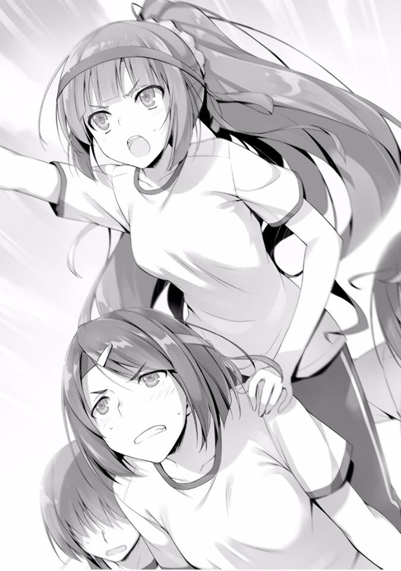
Supongo que es inevitable, dado que tienen que resolver esto lo más rápido posible para apoyar a Horikita quien es el objetivo. Las tres chicas que apoyan a Karuizawa no son particularmente atléticas. En el mejor de los casos, es un caballo construido a partir de la cooperación entre amigas cercanas.
Por otro lado, Ichinose ha utilizado las personas más destacadas y talentosas de la Clase B para su caballo. No tienen miedo del ataque de Karuizawa y con un movimiento que sobrepasaba el de ella, esquivaron su ataque.
Sin embargo, a pesar de poder hacer un ataque directo, los movimientos de Ichinose no parecían tan agudos. En respuesta a su ataque, Karuizawa pudo reaccionar bien y devolver el fuego.
Una batalla entre coordinación vs maniobrabilidad, contrariamente a lo esperado, mostraba signos de continuar.
— ¡Este es un buen encuentro!
A medida que la emoción de la audiencia se elevó, la situación, además de los dos jinetes luchando, comenzó a cambiar. Ovaciones estallaban.
Mientras estaba ocupado observando a Karuizawa y las demás, a una de las jinetes le robaron la cinta.
Fue Horikita.
Fue embestida simultáneamente por cuatro jinetes y no pudo evitar sus ataques continuos, finalmente fue aplastada.
Cayó de su caballo de manera muy llamativa y ahora está tirada en el suelo, tratando de levantar la parte superior de su cuerpo con frustración.
Sin embargo, en una situación como esta, ni siquiera Sudou habría tenido una oportunidad de ganar.
La causa de su derrota está en la Clase A, que no se apresuró a ayudarla de inmediato. En cualquier caso, no tiene sentido llorar por lo que ya está hecho.
La derrota de Horikita marcó el inicio de un combate cuerpo a cuerpo. Habiendo perdido a un jinete y haciendo que la Clase B los persiguiera, la unidad de la Clase D se tambaleó al instante.
Algunas se cayeron de sus caballos y a otras les robaron sus cintas, y aparte de Karuizawa, las otras dos jinetes resistieron en vano antes de ser derrotadas.
Karuizawa,
que
había
estado
luchando
contra
Ichinose,
terminó
momentáneamente en un escenario de 8 vs. 1, al final, logró robar la cinta de una jinete de la Clase B a través de un ataque suicida y tuvo éxito en terminar esa pelea con una muerte mutua.
Habiendo perdido un jinete, la Clase C y la Clase B atacaron a la Clase A y las aniquilaron. En cuanto al equipo contrario, terminaron perdiendo solo dos jinetes como bajas.
Tragándose su frustración, Horikita regresó a nuestro campamento. Sudou la llama de inmediato.
— No te preocupes. De todos modos, era imposible, es culpa de las demás por ser demasiado lentas en apoyarte.
— ... No cambia el hecho de que perdí. Fui engullida por su embestida.
Ciertamente, la clase C transmitió la sensación de obstinarse en derrotar a Horikita.
Yo también había pensado esto antes, pero si ese es el caso, ningún jinete habría tenido oportunidad.
— Déjamelo a mí. Voy a armar un alboroto y compensaré esto también.
Sudou dijo eso fríamente.
Normalmente, palabras como estas ni siquiera llegarían a Horikita, pero en su débil estado de este momento, parecen haber resonado dentro de ella.
— Espero eso de ti.
Fue breve, pero le respondió a Sudou.
— ¡Bien, vamos chicos!
Sudou grita. La batalla de caballería de los chicos comienza.
Serví el papel del caballo en el lado derecho. Sudou se mantiene firme en el medio y Miyake está en el lado izquierdo. Hirata asumió el papel de jinete y se formó el equipo más fuerte de la clase.
Un guerrero sin igual capaz de alcanzar la victoria incluso si los jinetes aliados son derrotados.
— Oye, Hirata. Concéntrate solo en no caerte o que te roben la cinta de la cabeza.
— ... Así que usaremos “esa” estrategia, ¿verdad?
— Después de todo, fuimos derrotados completamente durante la captura de la bandera. Vamos a ganar sin contenernos.
No pude ver su rostro, pero sabía que Sudou debía estar sonriendo.
Probablemente estén planeando usar esa táctica que hemos practicado una y otra vez durante nuestro entrenamiento.
— Pero me gustaría hacer una propuesta por mi cuenta, ¿está bien? Estuve viendo el encuentro de las chicas y he pensado en una forma de ganar. Ya le he contado a Katsuragi-kun al respecto. Sería malo si seguimos siendo aplastados todas y cada una de las veces.
Los jinetes de la Clase D siguieron las órdenes de Hirata y se unieron a los jinetes de la Clase A al mismo tiempo que sonaba la señal de partida para el combate.
Al ser casi indistinguibles de la Clase A, inevitablemente terminamos formando un grupo grande. Dejaron la Clase D a su suerte durante la competencia de las chicas, pero seguramente perder no es lo que la Clase A desea.
Al observar la situación, quien asumió el papel de general de la Clase C, Ryuuen, se rió con osadía.
Si no se pueden obtener detalles finos como la cooperación, utiliza órdenes amplias para dirigir a todos por la fuerza. Siguiendo las órdenes de Katsuragi, ocho jinetes de la coalición DA asaltan al equipo enemigo
— ¡Solo apunta a la cabeza de ese mierda de Ryuuen! ¡Raah! ¡Envíalo a volar!
En un instante, cuando el combate comienza en todo el campo, Sudou, el caballo de Hirata, se lanza hacia delante con todas sus fuerzas.
Pero un jinete de la Clase B se interpone en el camino de su furia. Sin embargo...
— ¡No te metas en mi camino!
Sudou, sin detenerse, golpeó el cuerpo del jinete enemigo con todas sus fuerzas y lo hizo perder el equilibrio.
— ¿¡Uwa!?
El enemigo, cuyo físico es inferior al de Sudou, no podía hacer nada más que derrumbarse, jinete y todo.
— Qué tal eso, ¿eh?
Él los mira como una bestia salvaje y se mueve hacia su próxima presa.
Normalmente golpear el cuerpo se consideraría juego sucio, pero la escuela ya ha confirmado que no hay ningún problema con la regla.
El equipo enemigo vaciló por la fuerte impresión que recibieron desde el principio.
Era una estrategia que no se podía realizar sin el físico y la personalidad para ir con ella.
Pero esta estrategia agresiva tiene sus inconvenientes.
Incluso si derribamos a un jinete, no contaría como una cinta robada. Por el contrario, sería tratado como autodestrucción. Los 50 puntos que deberíamos obtener terminarían desapareciendo.
Pero aun así, si apostamos a robar sus cintas, tendríamos la cantidad proporcional de riesgo.
Eso es lo correcto para una estrategia similar a Sudou. Pero no podemos bajar la guardia por el momento.
En la Clase B, está el jinete general maniobrable del que Kanzaki y Shibata forman parte y en la Clase C, todavía hay un jinete general compuesto por tipos de poder físicamente fuertes con Ryuuen como su jinete.
La coalición DA no tendrá ninguna posibilidad de ganar a menos que esos dos sean eliminados. También es extraño cómo no podemos leer la mentalidad de Ryuuen.
— Sudou-kun, derrotemos primero a los que nos rodean. Deja a Ryuuen-kun para el final.
— ¿Huh? ¡No digas tan algo aburrido como eso! ¡Lo que deberíamos hacer es apuntar a la cabeza del general!
No es como si no entendiera lo que Sudou intenta decir a través de sus aullidos, pero la pared frente a Ryuuen que nos bloquea es gruesa.
— Si nos dejamos llevar por nuestras emociones, es darle exactamente lo que quiere. Hagamos lo que sea necesario para ganar al final.
— ¡Tch---!
Delante de nosotros, dos jinetes de la Clase C comienzan su ataque.
Todavía con un resentimiento de cuando fue pisoteado, Sudou se resiste a su impulso de atacar a Ryuuen.
— Lo entiendo, primero, ¡lo que tenemos que hacer es derrotar a estos tipos!
¿¡verdad!?
Para vencer a estos enemigos, se necesita concentrarse. Hirata lo detuvo excelentemente.
Caímos durante la captura de la bandera ante un poder abrumador, pero esta vez, las cosas van de manera diferente. Tres jinetes de la Clase B y la Clase C
ya han sido derrotados por Sudou, mostrando una abrumadora diferencia de poder.
Cabalgando esa ola, Katsuragi y los otros estudiantes de la Clase A lograron derribar al caballo de Shibata y Kanzaki a pesar de perder tres de los suyos.
El único enemigo que queda es el general, el propio Ryuuen.
Por otro lado, tanto los caballos de Hirata como los de Katsuragi han sobrevivido y la Clase D tiene un jinete adicional restante, creando la situación ideal.
— Vamos, vamos, ahora es 3 vs. 1, ¡esto está decidido!
Intercambiando miradas, los dos jinetes, Katsuragi y Hirata, rodean a Ryuuen. El otro jinete también, manteniendo una pequeña distancia, apunta a Ryuuen.
Por el hecho de que fue capaz de robar una cinta, pude adivinar la fuerza del caballo de Ryuuen hasta cierto punto, pero aun así, debe estar abrumado por nuestra superioridad numérica.
Sin embargo, Ryuuen no entró en pánico. No está perturbado. Por el contrario, parece estar disfrutando de esta situación desesperada.
No hay negligencia y tampoco parece derrotado. Ese tipo de sentimiento.
Hirata y Katsuragi, si los dos atacan simultáneamente, incluso si en el peor de los casos, uno de ellos cae, el otro puede robar la cinta de Ryuuen.
Entonces nuestra victoria estará asegurada.
Es precisamente porque la situación es así que Ryuuen es capaz de atravesar la grieta en los corazones de sus enemigos.
— He recordado tu nombre, Sudou. Te pisé antes. Me pareció doloroso.
— Sigue diciendo eso. Te voy a golpear ahora.
— Suenas bastante engreído para una simple pierna de caballo. Se siente muy bien viéndolo a caballo.
— Hah. Solo porque estés montando a caballo no significa que seas todo eso.
— Heh... entonces todo esto no tiene sentido a menos que lo hagamos uno contra uno.
— ¿¡Qué!?
— No, quiero decir, si estás diciendo que no puedes vencerme a menos que sea 2 contra 1, entonces no se puede evitar. Pero “ganar” básicamente solo tiene sentido si ganas uno contra uno. ¿Te vas a dar aires después de golpearme con un ataque de pinza?
— ¡Qué demonios...!
— No, Sudou-kun. Es mala idea ir con sus provocaciones. Cooperemos con Katsuragi-kun.
— ..... No lo entiendes.
— Tú eres el que no lo está entendiendo, Sudou. Entiendo que ya te hayas ocupado de estos tipos antes, pero en aquel entonces, debiste haber usado tácticas cobardes, ¿verdad? Los compañeros en los que confío nunca serían vencidos por un ataque frontal.
Algunos de los que apoyan el cuerpo de Ryuuen también son miembros del club de baloncesto que se metieron en problemas con Sudou.
— No jodas. Esos tipos son basura que ni siquiera pueden pelear bien.
— Estás actuando bastante optimista aunque no tienes pruebas de eso. Si estás diciendo que eso no es cierto, enfréntame cara a cara. Y si puedes vencerme, haré cualquier cosa, incluso si es postrarme ante ti.
— ... Lo entiendo. ¡No olvides esas palabras, Ryuuen! Lo oíste, Katsuragi.
¡No te metas en esto!
— ¿De qué estás hablando? Es una locura dejar pasar esta oportunidad.
Deberíamos usar un ataque de pinza para asegurarnos de que caiga.
— Si te metes en esto, destruiré tu caballo.
Parece que tomó el cebo barato de Ryuuen.
Ya no tiene nada en la mente, excepto un uno contra uno. Entiende bien el hecho de que Sudou siempre tuvo una personalidad confiada y es rápido para pelear.
— Entonces, ¿estás decidido a hacerlo uno contra uno sin importar qué, Sudou-kun?... si lo vamos a hacer, ganemos.
Hirata ya conoce bien la personalidad y el comportamiento de Sudou. Una vez que enciende su interruptor, no se apagará tan fácilmente.
Tal vez ya había juzgado que seguir intentándolo y convencerlo de lo contrario no será bueno, ya que aceptó el uno contra uno.
— Naturalmente, Hirata, asegúrate de que no te roben la cinta de la cabeza.
Junto con la contundente señal de Sudou, el caballo avanza. Katsuragi, con una expresión amarga, decide ver la batalla desarrollarse. Es porque si interfiere, Sudou lo atacará aunque sea un aliado.
Sudou carga hacia adelante y realiza un golpe al cuerpo.
Sin embargo, el jinete enemigo se mantuvo firme sin ser perturbado por él. Su poder era igual.
En el centro del caballo que protege a Ryuuen está el mestizo del que he escuchado, Yamada. Su fuerza es asombrosa. Justo como dicen los rumores, él es vigorosamente fuerte.
Sudou chasquea su lengua. Me pregunto si esa es su frustración por no poder superarlos.
Por supuesto, Miyake y yo, que apoyamos a Hirata desde sus flancos, no podíamos usar tanta potencia como Sudou está usando.
Supongamos que la potencia de Sudou es un 10, entonces los dos tendremos un 5.
Por otro lado, parte del caballo de Ryuuen, Yamada, sería un 9 o un 10. El resto de ellos son enemigos duros que consisten en 7 y 8.
— Interesante. Oye, vamos. ¿O vas a perder contra nuestro Albert en fuerza?
Provocando a Hirata, Ryuuen nos hizo una seña sin siquiera establecer ninguna trampa de antemano.
Hasta ahora, en lo que respecta a los encuentros, Ryuuen tuvo buena fortuna con sus oponentes y en todas las competiciones individuales en las que participó, ha obtenido el primer lugar. Él es bastante atlético.
Nos observa después de esquivar brillantemente la mano extendida de Hirata.
Mientras apoyaba a Hirata, miré la batalla contra Ryuuen y, hasta donde puedo ver, estamos igualados.
No sería extraño no importa quien gane. Sin embargo, solo es agresivo verbalmente, ya que Ryuuen no muestra signos de atacarnos inútilmente.
Está conservando su resistencia y manteniendo una proporción de 1 ataque por cada 3 ataques de Hirata.
En resumen, esta batalla es solo un punto de referencia para él y está ahorrando energía para la pelea más tarde contra Katsuragi y los demás, que actualmente están esperando.
Parece estar absolutamente seguro de que no perderá. Si es así, tenemos que atacar esa apertura. Si atacamos repetidamente, entonces se le presentará una oportunidad a Hirata.
— ¿Todavía no, Hirata?
Sudou dijo eso con voz dolorida mientras recibía la mayoría de los ataques provenientes del jinete enemigo.
— ¡Solo un poco más---!
Extiende su brazo, con una finta. Su brazo se dobla y finalmente, logró agarrar la cinta de Ryuuen.
Sin embargo, lo que agarró fueron solo unos pocos centímetros de la punta.
Hizo su mejor esfuerzo para llevar sus manos más lejos.
— ¿¡…!?
De hecho, Hirata se había agarrado de la cinta, pero no llegó a robarla, ya que la cinta se le escapó de las manos.
— ¿Qué estás haciendo, Hirata? ¡Tómala! ¡Estoy usando mucha fuerza aquí!
— Lo siento... ¡mi mano está un poco resbaladiza!
Mientras respiraba pesadamente, Sudou una vez más intenta atacar. Y Ryuuen lo espera intrépidamente.
En comparación con Ryuuen, que aún no ha lanzado una ofensiva que se asemeje a un ataque, Hirata solo ha estado en la ofensiva hasta el momento y está empezando a respirar pesadamente.
— ¿Cuál es el problema? ¿Eso es todo?
— Kuu..... ¡Lo siento, Sudou-kun, retrocede por ahora!
De acuerdo con el grito de Hirata, ponemos algo de distancia entre nosotros.
Hay una diferencia en el consumo de resistencia entre Ryuuen, quien apenas se movió de ese punto y nosotros que hemos estado realizando movimientos intensos.
Ryuuen probablemente se está enfocando en la próxima batalla contra Katsuragi después de derrotarnos.
Sudou, cuyas rodillas tiemblan, retomó su postura mientras respiraba débilmente.
— Haz que la siguiente... sea la última, Hirata. ¡Asegúrate de robársela!
— ..... Lo entiendo. Trataré de hacerlo.
Hirata también calma su respiración y se concentra solo en robar la cinta de Ryuuen.
— ¡¡¡Muéstrales el infierno!!!
Reuniendo lo último de su fuerza, realizó un golpe con el cuerpo, pero el caballo no se derrumbó. Una vez más, estalló una pelea entre los jinetes.
Sin embargo, Hirata asumió que no iniciarían un ataque e indefensamente extendió su brazo. Por los resultados que se deriven de ello, bien valdría la pena correr el riesgo.
— ¡La tengo!
Directa y audazmente, extendió la mano. Hirata una vez más tuvo éxito en agarrar la cinta.
Sin embargo, una vez más, la cinta se le escapó de las manos.
— ¿¡Qué---!?
Ryuuen no pasó por alto ese malestar, y sus manos se extendieron para agarrar la cinta de Hirata mientras aún estaba en una posición indefensa. Esa mano, en forma de contraataque, se agarró con fuerza a la cinta.
Y con fuerza. Cuando se retiró, la cinta cayó de la cabeza de Hirata con demasiada facilidad.
En el momento en que sintió que habíamos perdido, Sudou colapsó sobre sus rodillas y Hirata se cayó del caballo.
La cinta de Hirata fue levantada ruidosamente.
Inmediatamente después, proveniente del campo, se emitió una advertencia del árbitro.
— ¡Mierda!
Sudou, que se estaba volviendo loco, miró a Ryuuen mientras se levantaba. Sin embargo, si sigue así, no sé qué clase de advertencia recibirá. Empujé a Sudou de vuelta y se dirigió hacia afuera.
— Qué lamentable.
Ryuuen, burlándose de él, dejó atrás esas palabras. Sin embargo, todavía es demasiado pronto para aceptar la derrota.
El jinete general, Katsuragi, un sobreviviente de la Clase A, desafió audazmente a Ryuuen. Katsuragi, que había asumido el papel de la cabeza del caballo, dio órdenes al jinete, Yahiko, y construyó una defensa absoluta.
Ahora que Sudou se retiró, pudieron vincularse con el jinete restante de la Clase D y la situación es de 2 contra 1.
Sin embargo, justo cuando pensé que podían agarrar la cinta como lo hizo Hirata, se desarrolló una situación similar en la que no pudieron lograrlo y finalmente la cinta de Yahiko, junto con la cinta de la Clase D, fueron robadas.
A pesar de utilizar movimientos mínimos, Ryuuen demostró una fuerza maravillosa y sobrevivió hasta el final.
Cuando sonó la señal que marcaba la conclusión del encuentro, se quitó la banda de la cabeza y la hizo girar en una demostración de triunfo. Hacer eso y repetir a fondo sus actos de provocación también es probablemente una parte de su estrategia.
— ¡Era el único con quien no quería perder! ¡Esfuérzate, Hirata!
Debido a que Ryuuen es la única persona con quien no quería perder, la frustración de Sudou está en su punto más alto de hoy. Es una situación en la que no sería extraño incluso si destrozara el lugar.
— Lo siento, Sudou-kun. Esa cinta estaba extrañamente húmeda y no pude lograrlo. Pensé que era sudor al principio, pero eso se siente un poco fuera de lugar...
Hirata dijo eso y nos mostró sus manos.
Cuando toqué sus dedos, me di cuenta de que tenía un tipo de líquido transparente y pegajoso pegado en las yemas de los dedos.
— Esto no es sudor.
— ¿¡Entonces esto significa que ese bastardo......!?
Después de confirmarlo tocándolo con sus dedos, Sudou se acercó a Ryuuen.
— Oye, ¡esto es juego sucio, hijo de puta! ¡Untaste la cinta con algo!
En respuesta al aullante Sudou, Ryuuen respondió sin temor y audacia.
— Ahh, no sé nada de eso. Incluso si es así, probablemente sea solo gel para el cabello. No seas un mal perdedor.
Podría decir que salió de su cabello cuando se puso la cinta. Tal vez sea porque la había estado moviendo después de su victoria o tal vez simplemente porque la había limpiado en el suelo, pero en lugar de empapada, la cinta en la mano de Ryuuen solo estaba sucia.
Parece que la evidencia ha sido borrada.
— Sudou, vamos a terminar causando un gran revuelo aquí. Por ahora, creo que es mejor si volvemos a nuestra tienda.
El árbitro nos está mirando abiertamente. Incluso si causamos problemas aquí, no podíamos probar que Ryuuen la había embadurnado y, de hecho, creo que ha usado gel para el cabello.
Si no, sería una jugada arriesgada que podría resultar en juego sucio, algo que no haría.
— Lo sé. Más importante aún, Ayanokouji, también tienes la culpa. Necesitas proporcionar un mejor apoyo.
Incluso después de regresar a nuestra tienda, Sudou no dio muestras de calmarse. Me alejé de él para darle un tiempo a solas para refrescarse.
Karuizawa nos llamó a Hirata y a mí una vez que regresamos de nuestra batalla de caballería.
— Oye, Kiyotaka. ¿No es esto malo?
— ¿Qué pasa? Espera, ¿por qué me llamaste por mi nombre?
— ¿Por qué? ... Lo llamo Yousuke-kun, así que estoy haciendo lo mismo contigo.
Entonces, ¿por qué exactamente lo llamas por su primer nombre? ¿O no se trata de Hirata sino de divertirse conmigo?
Ni siquiera tengo que pensarlo mucho... es probable que sea solo eso.
— Más importante aún, se trata de Horikita-san. ¿No está teniendo dificultades desde hace bastante tiempo? Incluso durante la batalla de caballería, era un desastre. Incluso si trato de seguirla, si es así, es simplemente absurdo.
— Es verdad.
Horikita está siendo atormentada por los eventos y no solo por las competiciones en equipos, sino en general, sus clasificaciones han caído significativamente.
La razón de eso es obvia.
Debido a su caída durante la carrera de obstáculos, su pierna derecha ha resultado herida. Uno normalmente querría retirarse, pero si eso sucediera, la Clase D en su conjunto daría un gran paso atrás.
— Bueno, no pretendo culparla. Sus oponentes son demasiado.
Como dijo Karuizawa, no es culpa de Horikita.
Cada vez que ella se encuentra con oponentes difíciles. No importa qué competencia sea, si sigue teniendo que enfrentar a las estudiantes que son las mejores en sus clubs, ganar será difícil.
Pero esto es demasiado como para decir que es una mera coincidencia.
— No se puede evitar. Después de todo, está siendo atacada.
— ¿Atacada? ¿Entonces quieres decir que no es una coincidencia que ella siga encontrándose con todas estas personas increíbles?
— No puedo pensar en nada más que eso. También debes saber qué tan atlética es.
No es que Horikita sea mala, es solo que los oponentes contra los que se ve obligada a competir resultan ser superiores.
Sin embargo, al colocarse consecutivamente como última, no pudo evitar destacar tanto con los enemigos como con los aliados. Más aún porque la gente comenzó a tomar nota de Horikita.
El hecho de que ella fue la primera víctima de la batalla de caballería solo significa que están apuntando a la raíz.
Y con toda probabilidad, el que ordenó eso es el que se conduce como un rey en el campo enemigo, Ryuuen Kakeru. Nadie más que él haría esto.
Está priorizando progresivamente atacar a Horikita en lugar de liderar a la Clase C hasta la victoria.
— Es lo que llamarías acoso.
— ¿Estás diciendo que alguien está acosando a Horikita-san...? Pero, cómo...
— Por cierto, no es solo Horikita. Conocen los números de grupo de todos los participantes en la competencia. Pusieron a los oponentes débiles con los más atléticos como Sudou y Onodera y para los poco atléticos como Sotomura, Yukimura e Ike, los hicieron competir contra los estudiantes que son capaces de ganar apenas. Básicamente, lo que significa es que están jugando con nosotros.
Luego está el hecho de que son todos los estudiantes de la Clase C.
— ... La información de la clase se escapó... ¿la lista en la tabla de participación se filtró?
— Es cierto. Todo esto se estableció por adelantado y la información se comunicó a Ryuuen.
— Ese tipo de cosas... si mal no recuerdo, las oponentes de Horikita-san siempre fueron --- Yajima-san y Kinoshita-san... ¿tiene algo que ver con el traidor del que hablabas antes?
Asentí levemente. Le hice entender lo mala que es esta situación.
— Ese tipo de cosas... ¿cómo te enteraste...? ¿Cómo debería decirlo?, sería menos extraño si me dijeras que eres el traidor... ¿no es así?
— No es así.
Dejando de lado el “quién” por ahora, lo importante es que la información de la clase se está filtrando.
Nuestro orden de participación en los eventos que acordamos, con Hirata en primer lugar en la lista, así como nuestras estrategias, todo es conocido por Ryuuen. Basado en esa información, hizo dos cosas.
Una es poner a los estudiantes débiles con estudiantes talentosos como Sudou e Hirata.
Y luego obliga a estudiantes poco atléticos como Ike y Yamauchi a competir contra estudiantes que se destacan en los deportes más allá de la sombra de la duda con el fin de acumular triunfos de esa manera.
Por supuesto, también tomamos eso en cuenta cuando ideamos nuestras combinaciones, pero como la Clase C lo sabe todo, simplemente esperan que hagamos nuestro movimiento.
De esta forma, no hay duda de que la Clase C produciría mejores resultados.
La otra es su ataque contra Horikita. Pero eso no tiene nada que ver con llevar a su clase a la victoria.
Él mismo, con el único propósito de aplastar a Horikita, está enviando poderosas piezas para atacarla y aplastarla.
Sin duda, ella ya está siendo humillada. Si clasificamos la clase D, Horikita ya se hunde hasta el fondo. Estas estrategias de hecho revelan las peculiaridades del hombre conocido como Ryuuen Kakeru.
Si realmente no deseaba revelar su estrategia, podría haberse asegurado de cambiar a los estudiantes a detalle.
Sin embargo, el hecho de que no lo haya hecho significa que desea sorprendernos al hacernos captar su estrategia, es porque su deseo de asustarnos de esa manera es claro.
— ¿Así que no la vas a ayudar?
— ¿Cómo?
— Eso es... algo que no sé.
— La tabla de participación para este festival deportivo ya ha sido confirmada.
No hay nada que podamos hacer al respecto.
— ¿Entonces estás diciendo que la Clase D podría perder de esta manera?
— Supongo que sí.
— ¿No hay nada que podamos hacer?
— En lugar de consultarme, creo que esto es algo que debes repasar con Hirata.
— Eso es--- eso es cierto, pero... de alguna manera, si eres tú, pensé que podrías pensar en algo...
Este festival deportivo está abierto al público. A diferencia de la isla deshabitada, no hay muchos puntos ciegos.
Como muchas personas nos están mirando, tanto los profesores como los alumnos encontrarán que salirse con la suya sin que se note es una tarea difícil.
Podrías decir que pelear por adelantado como Ichinose y Katsuragi, o arriesgarse y usar tácticas cobardes repetidamente como Ryuuen son los únicos métodos que uno puede utilizar.
Incluso en el caso de Ryuuen, por sus movimientos y actitud, puedo decir que cometió juego sucio solo después de ensayos exhaustivos y práctica.
En resumen, lo que significa es que la mayoría de los resultados ya se han decidido antes de que comenzara el festival deportivo.
— ¿Qué piensas de Horikita?
— Qué...... no me agrada. Es vanidosa e impertinente.
— Pero aun así estás preocupada por ella.
— Tal vez la vea como un ser similar a mí.
Atacada, recibiendo fuego concentrado y forzada a la angustia. Así que ella está proyectando su viejo e intimidado yo sobre ella.
— En este momento, la clase D es el último lugar ¿cierto?... ¿Hay alguna manera de ganar?
— No te preocupes. Hasta ahora todo va como lo predije.
— Entonces has estado pensando un poco. ¿Y? ¿cómo ganamos?
— ¿Ganar? No tengo intención de ganar. En este momento, lo verdaderamente importante es que no hagamos nada.
— ¿Ehh?
Karuizawa se quedó con la boca abierta cuando respondí así.
— Para este festival deportivo, haz lo que puedas. Al hacerlo, tendrás beneficios más adelante.
— Que quieres decir con---
Mientras meditaba sobre la mejor manera de escapar del interrogatorio de Karuizawa, de repente escuché un bramido enojado.
— ¡En serio voy a sacarle la mierda a ese bastardo!
Sudou, que se había convertido en un demonio, caminó con fuerza hacia la Clase C.
Las provocaciones continuas que recibió durante las competiciones en equipo, y las declaraciones de Ryuuen que parecían estar dirigidas a Horikita. Todo eso parecía con el objetivo de hacer que Sudou se enfureciera.
— Entiendo lo que quieres decir, Sudou-kun. Pero creo que debemos mantener la calma sobre esto. Debes saber qué pasará si atacas a Ryuuen-kun.
Hirata se interpuso en su camino para detenerlo, pero lo empujó con fuerza.
— ¡Cállate! ¡Él es el que está jodiendo aquí! ¡Está haciendo juego sucio!
— Creo que hay una gran posibilidad de que sea juego sucio. ¿Pero no es difícil de probar?
El pisoteo que recibió durante la captura de la bandera y que soltaran la cuerda, ambos pueden considerarse juego sucio, pero están en una zona gris y en cuanto al gel para el pelo que utilizó durante la batalla de caballería, ya que no hay evidencia de ello no es más que mera especulación.
Por lo menos, acercándose a Ryuuen mientras es controlado por su ira, Sudou no puede resolver nada. Lo más probable es que en su lugar todo esté en su contra.
Si ataca públicamente a otras clases, existe la posibilidad de que no termine con la descalificación de Sudou.
— Soy el líder durante el festival deportivo. Obedéceme, Hirata, ataquemos a Ryuuen juntos.
— No niego que seas el líder. Teniendo en cuenta este festival deportivo, no hay duda de que eres el líder. Pero quiero que mires a tu alrededor.
¿Cuántas personas te reconocen como su líder ahora?
Sudou mira a su alrededor.
Comenzando por Ike y los otros, quienes se encogieron de miedo ante su enojo, la mayoría de los estudiantes se mantuvieron alejados del irritado Sudou. Todos mantienen su distancia para no incurrir en su ira.
Horikita también, estaba mirando el alegato y la conducta de Sudou con ojos exasperados.
Este es el estado actual de la Clase D. Es algo que debemos aceptar y mejorar.
— Estoy intentando desesperadamente por el bien de la clase…
Sudou exprimió esas palabras con enojo pero todos los otros estudiantes excepto Hirata alzaron sus voces.
— ¿Es realmente así? En lugar de querer que la clase gane, ¿no es solo que quieres presumir? ¿No es solo que quieres mostrarnos lo increíble que eres? Por lo menos, eso es lo que creo. Solo estás siendo arrastrado por tus emociones, y decides la utilidad y la inutilidad basado en eso. Te enojas. Si la clase pudiera ganar solo con eso, ni siquiera estaríamos teniendo problemas. Si vas a hacer valer tu cargo como líder, necesitas tomar decisiones racionales y dar consejos precisos.
Fue Yukimura quien intervino. A pesar de sufrir sus propios resultados en el festival deportivo, se está esforzando seriamente.
— Cállate.....
— Siento lo mismo, Sudou-kun. Es precisamente porque confiamos en ti, que quiero que veas el panorama completo. Y quiero que respondas a los sentimientos de todos tus camaradas.
— Cállate......
— Deberías poder hacer eso, Sudou-kun. Por eso---
— ¡Te estoy diciendo que te calles!
Pum.
Justo como pensé, resonó un sonido apagado como ese, Hirata, que había estado parado junto a él, fue empujado hacia atrás y se desplomó en el suelo.
Los ojos de Sudou estaban inyectados en sangre y ni siquiera parece haberse dado cuenta del error que cometió. Si alguien dice demasiado, probablemente serán los siguientes en ser golpeados. No, él ya está tratando de golpear a Yukimura.
Sin embargo, al golpear a Hirata, Sudou ya es el centro de atención, independientemente de si lo quiere o no y los maestros lo están mirando también. A pesar de ser un asunto interno de una clase, si se trata de violencia, no terminará con solo una advertencia.
— ¿Qué está pasando?
Chabashira-sensei, que es responsable de vigilar la clase, se acerca al Hirata derrumbado.
Luego, mirando la ira de Sudou y la marca roja que quedó en la mejilla de Hirata al ser golpeado, es más o menos fácil captar lo que está sucediendo.
— ¿Lo golpeaste?
Sin siquiera escucharlo, Chabashira-sensei solo pregunta por la verdad.
Al no sentir ninguna satisfacción, Sudou contestó airadamente sin siquiera negarlo.
— .... ¿Qué hará si lo hice?
Sudou lo afirma, pero por el contrario, Hirata se pone de pie y lo corrige bastante nervioso.
— No es así, sensei. Me caí solo.
— Es difícil que lo vea de esa manera.
— Está equivocada. Ya que lo digo yo, entonces no debería haber ningún problema.
No podemos permitirnos que salga a la luz el hecho de que Sudou golpeó y Hirata recibió un puñetazo. Hirata tomó la decisión correcta.
Después de una ligera demora, Chabashira-sensei dice su opinión.
— Tienes razón. Si la víctima dice que no pasa nada, antes que nada, no hay problema. Sin embargo, si lo observas objetivamente, existe la posibilidad de que haya algún tipo de problema entre ustedes. Por ahora, mantengan su distancia. Luego presentaré un informe a mis superiores. Como medida preventiva.
— No hay problemas aquí y no quiero causar malentendidos. Lo entiendo.
Gracias a la respuesta tranquila de Hirata, no hubo problemas.
Hirata tomó su distancia para mantenerse fuera del campo de visión de Sudou.
Por otro lado, Sudou ya no era capaz de reprimir su ira y patea una silla cerca de él con todas sus fuerzas. Bajo la atenta mirada de Chabashira-sensei, es imposible superar a la Clase C.
— Hagan lo que quieran. Adelante, pierdan, fracasados. Este festival deportivo se puede ir a la mierda.
Por un momento, Sudou miró a Horikita, que había estado observando todo, pero desvió la mirada.
Sudou se fue y comenzó a caminar hacia el dormitorio.
— Esto es malo, Ayanokouji.
— Sin embargo, esto no tiene nada que ver conmigo.
Kouenji está ausente debido a su mala salud. Y ahora Sudou nos abandonó.
Racionalmente hablando, la situación de la Clase D puede resumirse como una vergonzosamente terrible.
— ¿Estás bien, Hirata?
— Sí, realmente me dio bien.
Afortunadamente, parece que solo el interior de su boca está un poco cortado y no se produjeron lesiones externas grandes y visibles.
— Pero qué hacemos... esto es malo.
*****
Al final, Horikita no llamó a Sudou, sino que fijó sus ojos en la aparición del hermano al que no podía acercarse.
Al final, incluso después de que terminó la batalla de caballería, Sudou no regresó y comenzó el evento de participación universal final, la carrera de 200
metros. La escuela continuará con la competencia, sin importarle si uno o dos estudiantes están ausentes.
Esa es la regla, así es como será. Ryuuen se acercó a nosotros.
— Hirata, ¿qué pasó con Sudou?
Los ausentes simplemente serán descalificados y no obtendrán puntos. Están siguiendo las reglas al pie de la letra. Quizás Ryuuen había estado observando a la Clase D desde la distancia, pero habló como si estuviera allí cerca cuando todo se vino abajo.
Me pregunto si esta vez está tratando de confundir a Hirata.
— Surgió algo y Sudou-kun tomó un descanso. Regresará pronto.
— Kuku. No creo que debas decir cosas infundadas como esa.
Habiendo escuchado su nombre para la segunda carrera, Ryuuen entró a su carril.
— Más importante aún, hasta ahora, Ryuuen-kun ha obtenido el primer lugar en todas las competiciones individuales ¿cierto?
A sus espaldas, Hirata lo llamó mientras mostraba en silencio su espíritu de lucha.
— ¿Qué está mal con eso?
— En cuanto a los participantes esta vez, es probable que llegues en primer lugar. Parece que Ryuuen-kun tiene mucha suerte.
— La suerte está de mi lado después de todo.
— No sé cuánto tiempo más durará tu suerte. Solo haciendo algo, la corriente puede cambiar.
— ¿Qué?
— Lo que quiero decir con eso es que sé lo que estás pensando.
Ryuuen se rió con desprecio, como diciendo que no tenía idea de lo que estaba hablando. Hirata continuó.
— El hecho de que has obtenido la lista de la tabla de participación de la Clase D, así como el hecho de que también conoces las habilidades físicas
de sus estudiantes a detalle. Y también entiendo que piensas utilizar eso.
No somos idiotas. Hay algunas cartas de triunfo que hemos mantenido ocultas.
— Esto hubiera sido interesante si no fuera un farol. Al analizar los eventos entre la Clase C y la Clase D hasta el momento, inevitablemente pensarías que hay algo extraño. Independientemente de si sabías la verdad o no, deberías al menos intentar engañarnos.
— Sí. Es por eso que diré esto. Antes de que este día termine, te mostraré algo interesante.
— ¿Algo interesante? Entonces estaré esperando con ansias.
A lo sumo, Ryuuen solo escuchaba a medias la misteriosa provocación de Hirata.
Al ver cómo se llevó el primer lugar en la carrera de 200 metros, la posibilidad de que fuera sacudido por la provocación puede considerarse nula.
— Así que hay un poco más de una hora hasta la próxima competencia de Sudou ¿eh...?
La carrera de 200 metros para el segundo y el tercer año seguidos por un descanso de 50 minutos por la tarde. Si Sudou no regresa para entonces, será jaque mate. Si nuestra estrella está ausente, no habrá victoria en los eventos de Participación solo por Recomendación que se realizarán en la segunda mitad.
Solo hay una persona en esta clase capaz de obligarlo a entrar en acción.
Me pregunto si esa persona finalmente entiende cuál es su rol y cuán vital es. Al llegar en tercer lugar durante mi carrera de 200 metros, esperé en silencio a que Horikita terminara su competencia y regresara.
*****
— Su liderazgo fue cuestionado y se dio cuenta de la gran decepción que es antes de huir.
— ... Bueno, hablando en términos generales.
— ¿Por qué estás aquí? Seguramente no me pedirás que traiga de regreso a Sudou-kun.
— Si ya lo sabes, no preguntes. Es casi la hora del almuerzo, ¿no se necesita tu poder aquí?
— No lo entiendo. Hay otras personas en las que puedes confiar. No hay forma de que pueda traerlo de regreso, ¿verdad?
¿En serio está diciendo eso? Fue lo que pensé, pero seguramente está hablando en serio. Todavía no se ha dado cuenta de que Sudou la está mirando como miembro del sexo opuesto.
— En primer lugar, no estoy exactamente en una posición en la que pueda permitirme preocuparme por los demás...
Horikita, que actualmente está luchando en sus competencias, está afectando negativamente los puntos de la clase. Probablemente tiene las manos llenas con sus propios problemas. No es que no pueda entender esos sentimientos que tiene.
Además de eso, no hay muchos compañeros de clase que estén dispuestos a ir tras Sudou. Han abandonado a Sudou después de actuar de manera egoísta a pesar de saber que es capaz de impactar significativamente el resultado del festival deportivo.
La cantidad de confianza que Sudou había acumulado se vuelve concretamente visible aquí.
Si se tratara de Hirata o Kushida que se hubieran ido, la clase entera habría estado buscándolos. Kouenji es similar a él en ese sentido. De hecho, aparte de Horikita y Sudou, todos ignoran su existencia. Nadie toma en serio la ausencia de un miembro a pesar de su importancia.
— Entonces déjame preguntarte esto francamente. No puedes ocuparte de tus compañeros de clase, no puedes cuidarte a ti misma, ¿de qué eres digna? Solo eres una carga.
Estaba preparado para incurrir en su ira cuando le hice el corte más profundo.
— Seguro que eres duro... siento haberme lastimado, pero también estoy experimentando muchas desgracias. ¿No hay cosas con las que no puedes hacer nada al respecto?
— Desgracia, ¿eh? Entonces no ves tú lesión, así como el estado actual de la Clase D, como nada más que una coincidencia. Prueba que no te has dado cuenta de nada.
— No te burles de mí. También me he dado cuenta más o menos de lo extraño que es... que la información en la lista de la tabla de participación se ha filtrado a Ryuuen-kun. Y el hecho de que la culpa recae en un traidor dentro la clase. Pero no se puede evitar, ¿verdad?, incluso si es alguien que traiciona a la clase, no esperaba que actuara de una manera que estrangulara a su propia clase. Por eso no estoy perturbada.
— ¿Qué más has notado?
— ¿Qué más?... No sé los detalles, pero ¿Ryuuen-kun provocó a Sudou-kun?
— Sí. Intentó aplastar totalmente a Sudou, el jugador clave de nuestra clase.
No importa cuánta información haya obtenido, Sudou aún es invencible en lo que respecta a competencias individuales y también es una presencia poderosa en las competiciones de equipo. Repetidamente lo atacó mentalmente para obtener una reacción de él y logró que se retire utilizando elementos fuera de la competencia.
Sudou dejó de ser una ventaja y debido a su furia, la moral de la Clase D se ha desplomado.
— Sí. Es por eso que estamos en esta situación.
— ¿Hay algo más que hayas notado?
— Tú, no puede ser... ¿quieres que te diga mis conjeturas? ¿Qué Ryuuen-kun es el que puso esa trampa para que me lastimara? Ciertamente lo pensé. Que incitó a Kinoshita... san para hacerme caer. Pero no es realista intentar descaradamente causar lesiones bajo la mirada del público.
Incluso si fueran capaces de hacerme caer, no creo que causaran intencionalmente una lesión como para que no pueda continuar satisfactoriamente con la competencia.
Equivocada.
Si tuviera ganas, podría ofrecerle pruebas de que efectivamente fue intencional.
Pero eso no es importante.
— ¿Cuánto tiempo pretendes ser inútil, Horikita?
Lo dije sin rodeos.
A menos que tome medidas drásticas como esa, la chica conocida como Horikita Suzune no abrirá sus ojos.
— ... ¿En qué te basas para llamarme inútil?
— Te llamé inútil porque eres inútil.
— Qué desagradable... estoy segura de que tanto en exámenes escritos como en habilidades físicas, soy superior a esas personas sin valor. En primer lugar, ya que se filtró la información, ¿no es ya demasiado tarde?
No solo yo, sino que casi cualquier persona no podría hacer nada en esta situación. ¿Te importaría dar alguna base?
— Si eres una estudiante corriente, está bien. Pero ese no es el caso,
¿verdad? Si quieres llegar a la Clase A y tienes la intención de elevar a tus camaradas al mismo nivel, entonces es hora de que te cuente sobre la necesidad de cultivar una mentalidad que pueda ver el panorama completo.
— ¡Por eso te digo que muestres tus bases!
Horikita dijo eso con un poco de ira feroz. Los compañeros de clase a nuestro alrededor se volvieron a mirar por un momento para ver qué estaba pasando.
— “Me he dado cuenta de que la información en la tabla de participación se ha filtrado”, “Ryuuen provocó a Sudou”, “Pudo ser que la lesión fue causada intencionalmente”. Ciertamente, como dijiste, es una situación en la que no puedes hacer algo al respecto. En cuanto a por qué, es porque no hiciste nada al respecto. Y mientras no hagas nada al respecto, continuará por siempre. ¿Tienes la intención de quejarte nuevamente cuando Ryuuen logre algo brillantemente una vez más? Seguramente no,
¿verdad?
— Eso es--- pero, ¿qué podría ser?
— Una situación en la que das más importancia a mejorar tu propia clasificación mientras Sudou está ausente o una situación en la que tu
clasificación cae en picada mientras Sudou regresa y carga con la clase.
¿Qué sería mejor para la Clase D? No hay necesidad de responder ¿cierto?
En este momento ni siquiera puedes compararte con Sudou. Entiende ya que eres una estudiante absolutamente inútil. Los métodos de Sudou son torpes, pero ha contribuido más durante este festival deportivo que cualquier otra persona. Y de verdad está tratando de ganar. ¿Puedes darte el lujo de dejarlo en paz solo porque no puede permitirse preocuparse por los demás? ¿Dejarlo en paz así como está? ¿No es lo mismo que dejar que perezca tu valioso recurso?
Si digo todo esto, Horikita debería ser capaz de entender.
Incluso si ella se molesta por esto, debería darse cuenta de ello. De lo que quiero que se dé cuenta es “lo que debo hacer a partir de ahora”.
— Es algo obvio que incluso un estudiante de primaria debería ser capaz de responder correctamente ¿cierto? Que este acto nos lleva al comienzo de nuestro contraataque.
Ryuuen aplastó estratégicamente a Sudou. Entonces todo lo que tenemos que hacer es traer estratégicamente a Sudou de vuelta. Es un asunto simple.
— Estás desperdiciando la oportunidad de obtener un arma que te pertenece a ti y solo a ti.
— ¿Un arma solo para mí...?
— De aquí en adelante, si estás apuntando a las clases altas, hay un límite a lo que puedes hacer por ti misma. De hecho, ahora mismo estás en una situación en la que no puedes hacer nada por tu cuenta. Seguramente te encontrarás con más y más de estos exámenes. En ese momento, el hombre conocido como Sudou Ken definitivamente se convertirá en un recurso valioso. Para poder usarlo, ¿qué es lo que deberías priorizar en este momento? ¿Orar para que tus heridas se curen? Eso no es, ¿verdad?
Así como estoy usando Hirata y Karuizawa como armas, Horikita también tiene la oportunidad de obtener un arma propia. Si es así, es tonto dejar pasar eso.
— Yo---
— Depende de ti pensar en el resto. Este es el final del consejo que puedo darte.
Así es, no hay nada más después de esto. No voy a ofrecerle una estrategia para ganar contra Ryuuen ni decirle la forma de superarlo.
En este momento, lo que Horikita necesita es derrota y sanación.
*****
Hubo quienes almorzaron en la cafetería, algunos comieron en los campos, ya que nos notificaron que podíamos movernos libremente. Especialmente durante el festival deportivo donde se puede sentir con fuerza un sentido de solidaridad, independientemente de si eres un chico o una chica, hay muchas oportunidades de almorzar junto con estudiantes de último año. Más de lo normal. A diferencia de lo usual, nuestras aulas están fuera de los límites, por lo que los lugares donde podíamos comer eran limitados.
Si estamos hablando de los principales encantos del festival deportivo, entonces el almuerzo sería uno de ellos.
Hay un montículo enorme de bandejas de bentos apiladas en los campos.
Parece que el almuerzo de hoy no se hizo en la cafetería de la escuela, sino que se pidieron bentos de lujo de afuera. Solo hay una variedad, pero también está el hecho de que es gratuito, por lo que la mayoría de los estudiantes optará por ella.
Por otro lado, una parte de los estudiantes abandonó los campos sin poner sus manos en los bentos.
Una de ellos es Horikita.
Tal vez mis palabras finalmente le llegaron, ya que hay una gran probabilidad de que vaya a buscar a Sudou.
Y Kushida es otra más. Diciéndoles a las chicas que era cercana a esa situación, e iba a buscar a Sudou, se escapó.
— Guah--- ¡Estoy hecho polvo! ¿Por qué tengo que hacer esto?
— Porque perdiste.
Para evitar la multitud, Yamauchi se dirigió a conseguir la porción de todos después de perder en piedra-papel-tijera.
— Me muero de hambre, apurémonos y comamos.
Ike y Yamauchi no mostraron mucho interés por el hecho de que Sudou se había retirado. En primer lugar, han estado saliendo con Sudou desde la inscripción, por lo que conocen bien su personalidad.
Además, en este caso, incluso si no participa en las competencias, no será acosado por el asunto. Como mucho, solo perderá sus puntos privados. Por supuesto, será una pérdida para el Equipo Rojo, pero aparte eso y podría ser mejor librarse de su tiranía.
La mayoría de las chicas han visto a Hirata ser golpeado. Como resultado, la reputación de Sudou (dejando de lado el tema de si tenía una para empezar) se desplomó y probablemente se pierda.
Ver un cambio muy pequeño a pesar de perder a la estrella de este festival deportivo también es espeluznante, en cierto sentido.
— Por ahora, busquemos un lugar para comer.
Cuando los tres decidimos movernos a otra parte, Hirata apareció con algunos chicos y chicas a cuestas.
— ¿Podemos acompañarlos también?
Llamó a Ike y Yamauchi.
Ike y Yamauchi se sorprendieron momentáneamente por eso. Es comprensible, no hay forma de que no se sientan sorprendidos si Hirata se les acerca, a pesar de que no son particularmente cercanos.
Pero dado que las chicas también estarán sentadas junto a ellos durante este festival deportivo, no pudieron encontrar ninguna razón para rechazarlo.
— Por supuesto que está bien.
Cuando respondió así, se formó un grupo de chicos y chicas de unos 10.
Luego, ocupando un lugar adecuado, comenzamos a almorzar. Disfrutamos de nuestro almuerzo por un tiempo, pero finalmente, la gente terminó de comer y con eso, Hirata y Karuizawa se acercaron.
En un lugar como este, donde se reúnen compañeros de clase, no es extraño ni fingido que este trío, incluido yo, se forme.
— Como se esperaba, parece que Ryuuen-kun hizo su movimiento.
Hirata interrumpió con eso en medio del alboroto.
Karuizawa luego abrió la boca e intervino como si hubiera estado esperando esto.
— Entonces, ¿quién es el traidor? ¿Lo sabes, Yousuke-kun?
Karuizawa preguntó eso pero Hirata gentilmente sacudió su cabeza.
— Hay muchas cosas que no entiendo por mí mismo. Me pregunto si podríamos aclarar esas preguntas.
— Eso es cierto. Sin embargo, no puedo responder la pregunta de quién es el traidor.
— ¿Eh? No lo entiendo, ¿por qué?
— Porque si agravamos la situación ahora, solo hará que la clase se sumerja en más caos. Habrá problemas si no tratamos con el traidor en silencio y con calma.
— ..... Entiendo. No voy a interrogarte sobre eso. Pero ¿por qué enviaste la tabla de participación a la escuela a pesar de saber que aparecería un traidor? ¿No podríamos haber ajustado a escondidas la tabla de
participación nosotros mismos? Si lo hubiéramos hecho así, no nos enfrentaríamos a tanta adversidad. Ni siquiera eso, podríamos haber cambiado las tornas y obtener una ventaja sobre la Clase C...
— Es cierto.
Lo que yo quería era que Horikita discerniera la presencia del espía y que tuviera la capacidad de manejarlo en consecuencia.
— Parece el problema de otra persona. Y el traidor también podría estar en algún lugar a nuestro alrededor ¿verdad? Puede ser que esté entre nosotros... ¿está bien este tipo de despreocupación?
Karuizawa mira a su alrededor. Ella parece ver incluso a los pocos estudiantes aquí como sospechosos.
Los traidores son ciertamente problemáticos y, según las circunstancias, puede ser más conveniente dejarlos en paz. Además, incluso si hubiéramos usado una estrategia como la sugerida por Hirata, probablemente no hubiera funcionado en Ryuuen.
Aun así, sería difícil hacerles entender incluso si les digo a Hirata y a los demás este motivo.
— He medido el sentido moral del traidor. Algo así.
Diciendo eso, los engañé.
— ¿Sentido moral?
— Pensé que quería que ellos mismos se reformaran sin necesidad de buscarlos nosotros.
Hirata, que había estado escuchando, me miró intensamente.
— Todo esto es de acuerdo a las órdenes de Horikita-san, ¿correcto, Ayanokouji-kun?
Hirata, que ya había empezado a abrigar sus sospechas, puede haber llegado a un punto en el que ya no confía en mí, pero aun así, necesito que me crea aunque sea por el simple hecho de las apariencias.
— Sí. Es todo como ordenó Horikita.
Hirata no me interrogó más y asintió una vez, parecía estar convencido.
— Entonces, ¿dónde está Horikita-san y qué está haciendo ahora?
— En este momento está haciendo algo que solo ella puede hacer. O al menos sería bueno si lo fuera.
— ¿Podría ser sobre Sudou-kun?
Hirata, que poseía una gran intuición, miró a su alrededor y confirmó una vez más que los dos no estaban por ningún lado.
— No será fácil ganar en la segunda mitad sin Sudou, ¿verdad?
— Así es... en lo que a nosotros respecta, dependemos de Sudou-kun.
Karuizawa parecía ligeramente insatisfecha con tener que depender de Sudou, pero entiende que es un hecho.
El resultado de este festival deportivo se basa en las acciones de Horikita. Si mis palabras no le llegaron, Sudou no volverá y se terminará el juego.
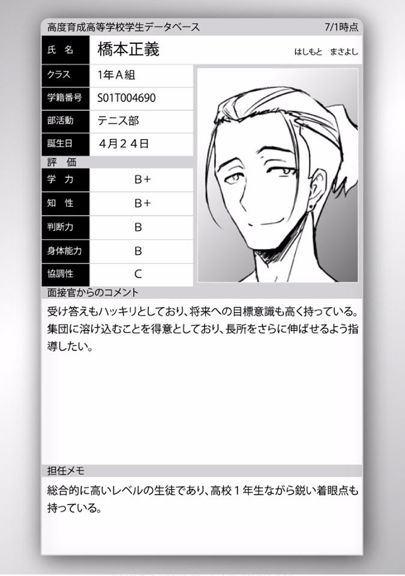
¿POR EL BIEN DE QUIÉN?
Me dirigí sola a la enfermería dentro de la escuela, teniendo una sensación de derrota después de que Ayanokouji-kun me destrozó verbalmente.
Como generalmente sigue su autoproclamada madura política de no interferir, no esperaba que actuara de esa manera y hablara abiertamente. Sorprendida por eso, no pude responder satisfactoriamente.
— ...No es así.
No pude responder porque tenía razón, porque dio en el blanco.
— ........
De cualquier forma, lo que debería estar haciendo ahora es hacer algo con respecto a esta pierna mía que no puedo mover como quiero. Obtener tratamiento es necesario si debo ir tras Sudou-kun.
Había personal de primeros auxilios de emergencia en los campos, pero queriendo evitar sobresalir lo mejor que pueda, había elegido la enfermería dentro de la escuela.
Sin embargo, cuando revisé la enfermería, parece que hay alguien que llegó antes que yo.
De las tres camas en el interior, una de ellas está cubierta por una cortina y no pude ver la situación. Parece que alguien está descansando en esa cama.
— Sensei, ¿cuál es la condición?
Durante el intermedio antes de la hora del almuerzo, solicité al personal de primeros auxilios que me vendara, pero sus efectos fueron mínimos.
Después de inspeccionar la condición de mi pierna, la maestra levantó la cara.
— Veamos... he dicho esto antes, pero participar en cualquier competencia adicional será difícil.
Aunque fue diagnosticado como un esguince, no está empeorando ni mejorando.
En este momento soy capaz de apenas de correr. Pero a lo sumo, solo puedo correr. No puedo reunir la fuerza necesaria para ganar en una competencia.
Traté desesperadamente de ganar las competencias individuales, pero los eventos de Participación solo por Recomendación serán más difíciles. Si participo en ellos, seguramente la victoria será lejana.
Eso, no puedo permitirlo.
— ¿Planeas participar en los eventos de Participación solo por Recomendación?
— Sí. Ese era el plan. Pero creo que no participaré. Porque puedo ver que si participo con mi pierna en esta condición, solo seré una carga para la clase.
— Una sabia decisión.
Afortunadamente, tengo una gran suma de puntos que obtuve de exámenes anteriores. Aunque no participe, pagando una compensación, puedo remediarlo.
Aunque consiga una sustituta para las tres competencias en las que había planeado participar, la suma total serían 300,000 puntos. No es barato en absoluto, pero si esto aumenta las posibilidades de victoria incluso un poco, tendré que tomar una decisión al respecto.
Aunque mi sueño de correr junto a mi hermano se hará pedazos.........
En este punto, preocuparse por asuntos personales como ese no tiene sentido.
Lo importante es a quién confiarle el rol de sustituta.
— Muchas gracias.
Después de haber recibido tratamiento, di las gracias y dejé la enfermería. Me dirigí hacia la entrada principal para regresar a los campos.
El cristal de la ventana me reflejó mientras arrastraba mi pierna y me sentí patética, apreté mis labios.
Albergo sospechas hacia Kinoshita-san, quien gritó mi nombre pero no tengo a nadie a quien culpar sino a mí misma por caerme y lastimarme. No hay cambio en ese hecho.
Hice mi mejor esfuerzo para proyectar una apariencia tranquila para que nadie lo notara y continué caminando. Cuando estaba a punto de salir por la entrada principal, Kushida-san entró corriendo alterada.
— Me alegra haber podido encontrarte, Horikita-san. Umm, hay algo de lo que me gustaría hablar...
— ..... ¿Qué pasa? Tengo asuntos que atender, así que me gustaría que lo hicieras breve.
— Sip. Lo siento, pero este no es un buen lugar. ¿Podrías escucharme?
Parece que va a ser problemático.
— ¿Puedes explicarlo aquí por favor? Tomaré una decisión después de escuchar lo que es problemático.
Después de mirar alrededor, Kushida-san me susurró.
— ..... Umm, verás, parece que Kinoshita-san, que chocó contigo y cayó, sufrió una lesión grave. En este momento, parece que es suficientemente malo para que ni siquiera pueda levantarse, es por eso que... ... umm, Kinoshita-san dice que le gustaría que la veas.
Al escuchar esas palabras, no pude ocultar mi sorpresa. Ciertamente parecía herida pero pensé que sucediera eso.....
— ¿Dónde está ella ahora?
— Por aquí.
Después de ese intercambio, Kushida-san me condujo en dirección a la enfermería.
*****
— Es un alivio, estaba a punto de decir que Horikita-san se acaba de ir.
— Envié a Kushida a llamarte pero parece que te encontró enseguida.
De pie a mi lado, Kushida-san escuchaba la conversación de los profesores con una mirada un poco incómoda.
— ¿De qué se trata esto?
De la cama tapada por la cortina que vi antes, podía escuchar el sollozo de una chica.
Chabashira-sensei corrió un poco la cortina.
Detrás estaba Kinoshita-san de la Clase C, que está acostada en la parte superior de la cama. Inmediatamente volvió a cerrar las cortinas y me llamaron al pasillo.
— Kinoshita-san chocó contigo durante la carrera de obstáculos de la mañana y se cayó. ¿Recuerdas eso?
— Por supuesto. Ella se chocó conmigo y se cayó.
Ese incidente terminó interfiriendo en mi festival deportivo.
— Es sobre eso..... Kinoshita está diciendo que tú, Horikita, la hiciste caer a propósito.
Por un instante, no pude comprender lo que estaba diciendo.
— No es verdad. No fue un accidente fortuito. Si no que…
— ¿Si no que…?
Dejé de decir que era la estrategia de Ryuuen-kun como Ayanokouji-kun me dijo.
Siento que es cierto, pero solo es especulación. No hay evidencia.
— No... es solo una coincidencia.
— Me gustaría creer eso también, pero la situación no se ve bien. Kinoshita ha testificado que durante la carrera, seguías mirando hacia atrás en repetidas ocasiones. Para verificar, vimos el video y de hecho viste la posición de Kinoshita dos veces.
— Eso es porque ella repetidamente gritaba mi nombre. Es por eso que miré hacia atrás.
— Ella dijo tu nombre, ¿eh? ... ya veo. Sin embargo, aunque ese fuera el caso, todavía hay un gran problema. Ella dijo que le propinaron una patada
en la espinilla. De hecho, estuvo ausente de todas las competencias posteriores y cuando hicimos a un maestro mirarar las lesiones de Kinoshita, parecían bastante severas. Las lesiones parecen haber sido intencionalmente infligidas, es lo que estamos pensando.
— También es infundado si afirmo que esas graves lesiones se produjeron accidentalmente cuando nos caímos. No hice nada.
— Por supuesto, creo en tu inocencia. Sin embargo, Japón es un país con tendencia a creer a los débiles. Esta escuela no es diferente en ese sentido. Mientras no podamos eliminar la posibilidad de que sea intencional, es natural que deliberemos sobre ello.
— Eso es estúpido.
— Pero esto no es el final. Si ignoras esto, el problema crecerá. Obviamente, esto ha llegado a oídos de los otros maestros, y cuanto más se alargue, incluso puede llegar al consejo estudiantil. Si eso pasa, las consecuencias serán desastrosas. No has olvidado lo que sucedió cuando Sudou peleó con la Clase C, ¿o sí?
Si esto se prolonga, mi hermano inevitablemente sabrá de esto. Sin lugar a dudas seré una tonta hermana pequeña que lo molesta.
Sin embargo, siempre que sea inocente, no tengo más remedio que objetando.
Independientemente de si esta es la estrategia de Ryuuen-kun o una coincidencia, no puedo darme el lujo de decir mentiras.
— Si su propósito al llamarme es confirmar la verdad, entonces la he dicho.
Lo repetiré, no hice nada. Debo ocuparme de un asunto en este momento,
¿le importa si me excuso?
En este momento, lo que tengo que hacer es encontrar a Sudou-kun lo más rápido posible y llevarlo de regreso. Cuando me volteé, Chabashira-sensei me llamó.
— Teniendo en cuenta la situación actual, será más tranquilizador considerarlo intencional que una coincidencia. Desde la carrera de obstáculos, Kinoshita ha estado ausente en todos los eventos posteriores y teniendo eso en cuenta, justo como tú has adquirido tus puntos, ella puede despedirse de su participación en los eventos de Participación solo por
Recomendación. Bueno, con su pierna en ese estado, la participación sería imposible en primer lugar... De cualquier manera, Kinoshita es una estudiante atlética. Si estamos hablando de velocidad, ella es casi igual o mejor que tú. De hecho, es difícil imaginar que las graves lesiones de Kinoshita sean el resultado de una coincidencia.
Incluso si ella dice algo así, soy inocente, así que no se puede evitar.
Es fácil decir que soy inocente, pero el tiempo corre. En este momento, no puedo permitirme perder el tiempo en algo como esto.
— De cualquier manera, estaba planeando retirarme de los eventos de Participación solo por Recomendación. Desde la carrera de obstáculos, mi clasificación no ha sido satisfactoria. Si me consideran ausente como Kinoshita-san, no me importa aceptar eso. Sin embargo, permítame enfatizar que no la hice caer intencionalmente para hacerle daño.
¿Me pregunto si esto está bien? Le pregunté a Chabashira-sensei. Sin embargo-
— Pero no parece que Kinoshita vaya a escuchar, está diciendo que informará esto a la escuela. A juzgar por su testimonio y la grabación, no parece que podamos cerrar este caso. Desde su punto de vista, es como si se hubiera visto obligada a aceptar esta situación. También pondrá a la Clase C en un apuro ya que habrán perdido a Kinoshita. Comprendes lo que significa esto, ¿verdad?
— ... Probatio diabolica, ¿verdad?
Chabashira-sensei no lo negó sino que se cruzó de brazos silenciosamente.
Para demostrar que hay extraterrestres en la tierra, todo lo que tienes que hacer es capturar un alienígena en algún lugar del planeta, pero para demostrar que no hay alienígenas en la tierra, tendrías que buscar en cada rincón de la tierra, lo cual es algo imposible de lograr.
Esa es la prueba del diablo.
Lo que Chabashira-sensei quiere decir es que a menos que pueda demostrar mi inocencia, entonces es necesario tomar medidas para evitar la injusticia...
— ¿Cómo se enteró, Chabashira-sensei? ¿Quién más sabe de esto actualmente?
— Kushida me consultó sobre el asunto. Dijo que no quería darle mucha importancia pero que no sabía qué hacer.
— Lo siento, Horikita-san. Kinoshita-san insistió en que consulte a un maestro sobre esto sin importar qué...
— Gracias por tu preocupación. Porque si hubiera sido un maestro de otra clase, esto se hubiera convertido en un gran problema. Pero tengo mis dudas. ¿Dónde exactamente escuchaste esto de Kinoshita-san?
Kushida-san miró ansiosamente a la entrada de la enfermería.
— Porque soy muy amiga de Kinoshita-san... cuando la visité durante el descanso, ella me contó sobre esto.
— Entonces así es como es.
No es extraño si se trata de Kushida-san, ya que ella tiene una gran red social.
De cualquier manera, los únicos que saben de esto en este momento son las partes interesadas: Kinoshita-san y yo.
Al igual que Kushida-san y Chabashira-sensei. Si es posible, me gustaría mantenerlo así y resolver este problema, pero.....
— ¿Te gustaría hablar con Kinoshita-san?
— No lo sé. En este momento parece un poco asustada por lo que podría ser emocionalmente inestable.......
— Por favor. Tampoco quiero agravar las cosas.
Incliné la cabeza y Kushida-san también inclinó la cabeza de manera similar.
— Te lo ruego también, sensei.
— Está bien, entonces intentemos hablar con ella un poco.
Justo cuando recibimos el permiso de Chabashira-sensei, pude escuchar pasos desde más allá del corredor.
Esa persona venía directamente a la enfermería. Poniendo sus manos en ambos bolsillos, actuó como si fuera el dueño del lugar.
— Parece que se ha convertido en un gran problema.
— Ryuuen-kun......
¿Por qué está aquí ahora?
Sacudiendo mi confusión, fingí calma. Pero como si hubiera visto a través de eso, se rió con desdén y se detuvo frente a nosotras.
— Vine aquí después de que Kinoshita me lo pidió. Pensar que alguien habría causado a propósito su lesión.
Diciendo eso, pasó delante de nosotras y entró en la enfermería.
Nosotras también lo seguimos bastante aturdidas.
Al entrar en la enfermería, Ryuuen hizo caso omiso de los intentos de la maestra por detenerlo y abrió la cortina que cubre la cama en la que Kinoshita-san está recibiendo tratamiento.
— Oye, Kinoshita. ¿Estás bien? Parece que has pasado por momentos difíciles —Al ver a Ryuuen-kun, Kinoshita-san tembló abiertamente de miedo—. ¿Escuché que te has lastimado la pierna? Muéstrame.
Dijo eso antes de sacar la pierna de Kinoshita-san de debajo de las sábanas.
— Esto es malo. No tan malo considerando todo...
Bajo la mano de Ryuuen-kun estaba la pierna de aspecto dolorido de Kinoshita-san envuelta en vendas.
— Lo siento... intenté quedarme y participar en el próximo evento, pero... mi pierna no me escuchó... por eso... ¡ah!
— No te culpes, Kinoshita. Sé que trataste de participar en la carrera de tres piernas.
— ... Fue una colisión accidental. Kinoshita-san, ¿qué intentas lograr exactamente diciendo que te hice caer?
— ¡…!
Cuando le pregunté con una ligera mirada, Kinoshita-san desvió sus ojos.
Ryuuen-kun se paró frente a ella.
— De acuerdo con lo que ha estado diciendo Kinoshita, tu intención era hacerla caer. Lo hiciste deliberadamente, ¿no?
— Deja de bromear. ¿Estás diciendo que haría algo así?
— Nunca se puede decir lo que alguien hará. Además, mira los hechos.
Kinoshita, que es mejor que tú en los deportes, sufrió lesiones graves y tuvo que retirarse. Además de eso, estaba planeando participar en todos los eventos de Participación solo por Recomendación más tarde. Por el contrario, continúas participando en los eventos a pesar de tu lesión. Estás pidiendo lo imposible si quieres que no sospeche de eso.
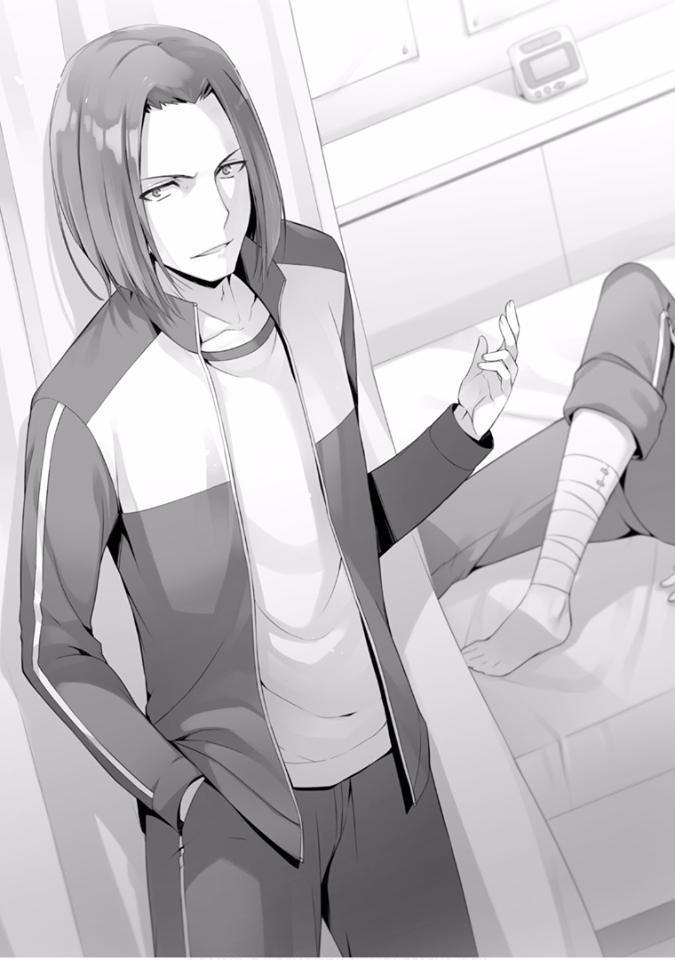
Yo también entiendo la importancia de perder un miembro de una alineación.
Pero por la explicación locuaz que dio, mis dudas sobre él aumentaron aún más.
¿Era tener a Kinoshita-san corriendo contra mí su objetivo, como sospechaba?
¿Fue hacerla chocar a ella en particular conmigo un sacrificio para despejar la sospecha, ya que es más atlética que yo?
Pero... eso llevaría a más dudas. ¿Qué puede ganar Kinoshita-san si choca conmigo cuando tiene muchas más probabilidades de ganar puntos que yo?
Además, si realmente estaba planeando participar en todos los eventos de Participación solo por Recomendación, entonces eso significa que la Clase C
puede perder hasta 400,000 puntos.
¿Esto es solo para aplastarme y disfrutar de la victoria?
Solo por eso, ¿quiere herir a su compañera de clase, pagar el precio de eso y reducir sus posibilidades de ganar?
Por lo menos, por lo que he experimentado en mi vida hasta el momento, no pude obtener ningún significado de este acto de ineficacia.
— ¿En qué piensas tan silenciosamente?
Ryuuen-kun se inclina hacia adelante mirándome mientras mantiene sus manos dentro de sus bolsillos.
— Bueno, incluso si tenemos nuestro pequeño intercambio no nos hará ningún bien. ¿Verdad, Kinoshita?
En medio de eso, Ryuuen-kun le pide a Kinoshita-san que hable.
— Horikita-san... me dijiste después de que me caí... que definitivamente no ganaría...
— No dije eso. ¿Estás consciente de que estás diciendo mentiras?
— Horikita, solo estabas mirando hacia atrás durante el incidente con Kinoshita. ¿Por qué exactamente fue eso?
Chabashira-sensei nuevamente me hace la misma pregunta.
— Admito que estaba mirando hacia atrás. Sin embargo, es porque ella gritó mi nombre muchas veces. Al principio, la ignoré. Pero claramente las cosas parecían extrañas, así que miré hacia atrás.
— ¿Es así, Kinoshita?
Esta vez, Chabashira-sensei le pregunta a Kinoshita-san en lugar de a mí.
— Nunca te llamé, ni siquiera una vez.
Cuando Chabashira-sensei trató de confirmarlo, en lugar de admitirlo, Kinoshita-san lo negó.
— La persona en cuestión lo está negando, sensei. Además, incluso si Kinoshita dijo el nombre de Suzune, ¿qué hay de malo en eso? Solo decir el nombre no equivale a juego sucio. Además de eso, probablemente fue un desesperado grito que surgió del deseo de ganar. Kinoshita es insuperable cuando se trata de tener espíritu competitivo. Si sigues reaccionando así todas y cada una de las veces, no habrá fin para esto.
Esta discusión va a ser interminable si esto se mantiene. No hay duda de que estos dos han conspirado juntos.
— Umm.... Kinoshita-san, Ryuuen-kun. Creo que es desafortunado que las cosas salieran así, pero no creo que Horikita-san sea el tipo de persona que hiere a propósito a su oponente de esta manera.
Habiendo escuchado a ambos lados, Kushida-san habló como si me estuviera protegiendo.
— ¡Pero Horikita-san me dijo... que no me iba a dejar ganar...!
— Probablemente sea solo tu deseo en tu cabeza de no perder, ¿no? Creo que Horikita-san también se sorprendió por la caída, creo que también estaba desesperada.
No lo dije. No le dije ni una sola palabra a Kinoshita-san.
Pero lo soporté. Sin embargo, Kinoshita-san continuó.
— Pero--- no puedo perdonarla... ahora tengo que tomar un descanso de la práctica de atletismo...
— ... ¿No sientes vergüenza? Inventar mentiras e inculpar a alguien, ¿es divertido para ti? ¿O podría ser que Ryuuen-kun lo haya preparado todo?
Dudo que sea una mera coincidencia que convenientemente hayas venido aquí.
No puedo permitirme aceptar la legitimidad de su reclamo solo porque llora.
Porque es una mentira. Es por eso que decidí tomar una medida drástica.
Si él está aquí, en lugar de empeorar, necesito sostener esta situación y convertirla en una situación más favorable.
— Entonces eres ciega a tus propios defectos y ahora es la culpa de la herida Kinoshita y mía, ¿eh? Eres una mujer bastante terrible.
— No me hagas reír. Has provocado a Sudou-kun anteriormente, no voy a dejar que digas que lo olvidaste. Estás tratando de usar el mismo truco esta vez también, ¿no?
— Ese incidente no tiene nada que ver conmigo. Es absurdo vincular ese asunto con esto.
Por lo menos, no parece que vaya a admitir nada.
— Está claro para todos que chocaste con Kinoshita en un acto autodestructivo. Esto lo decide. No hay lugar para más discusión. Vamos a decirle esto a los superiores, ¿sí?
— Eso es--- ¿me dejarías hablar de esto un poco más con Horikita-san...
puedo?
Kushida-san le suplica a Ryuuen-kun.
Me gustaría decirle que eso es una preocupación innecesaria, pero en cuanto a mí, prefiero no ayudar con nada que pueda hacer que esta historia se propague.
Aunque ahora siento que estoy atrapada en una telaraña, no puedo evitar luchar desesperadamente.
Ryuuen-kun parecía estar pensando un poco, luego hizo esta propuesta.
— No tengo tiempo para hablar tranquilamente sobre esto. Una vez que termine la hora del almuerzo, comienza un evento de Participación solo por
Recomendación. También participaré, por lo que me gustaría acabar las cosas aquí. Sin embargo, que los peces gordos hagan el juicio es lo mejor.
Después de mirarme una vez, a Kushida-san y Kinoshita-san, Ryuuen-kun habló de nuevo.
— No me importa si podemos lograr un acuerdo rápido y fácil.
— ¿Llegar a un acuerdo?
— Estoy hablando de que tú cargues con las pérdidas sufridas por Kinoshita y la Clase C.
— No es gracioso, ni siquiera tengo que escuchar esto.
Si es así, la cantidad a pagar no será poca. Además, terminaría las cosas con mala nota.
— Entonces terminamos. No llegarás a un acuerdo, pero nos dices que no informemos a los peces gordos. Eso es demasiado egoísta de tu parte, Suzune. Eso no funcionará.
— Espera. ¿Qué deberíamos hacer exactamente...?
Interrumpiéndome, Kushida-san escucha la propuesta de Ryuuen-kun.
— Parece que entiendes bien las cosas. Es cierto... si nos entregas 1 millón de puntos, entonces haré que Kinoshita retire su demanda. De esa forma podremos preparar un sustituto para los eventos de Participación solo por Recomendación y Kinoshita también podrá adquirir un “ingreso especial”
gracias a mí. Bastante simple, ¿verdad?
— No seas ridículo. No he hecho nada. No necesito entregar ni un solo punto.
— Entonces ve e inténtalo, Suzune. Hagamos una clara distinción entre blanco y negro. ¿De acuerdo?
— Parecen tener mucha confianza en ustedes mismos. ¿Crees que tus mentiras no serán expuestas?
— Vamos a demostrar que no estamos mintiendo. Hagamos que el Presidente del Consejo Estudiantil-sama haga su juicio.
Ryuuen-kun sabe de mí y del presidente del consejo estudiantil... en otras palabras, me está provocando con un tono que implica que ha descubierto a Nii-san.
En cuanto a mí, no puedo hacer nada que cause problemas a Nii-san.
La hermana del presidente del consejo estudiantil cometió actos perturbadores y ocasionó lesiones deliberadas. Si ese rumor se extiende, el daño que recibiría Nii-san será incalculable.
Es el mismo truco que antes pero a diferencia de ese momento, no hay aberturas por donde escapar.
En el caso de Sudou-kun, pretendieron ser víctimas basándose en la premisa de que “nadie estaba mirando”. Pero esto es diferente.
Hizo que “todo el cuerpo estudiantil fuera testigo” y jugó a la víctima. Tiene la ventaja. Además, está el hecho de que Kinoshita-san es una estudiante tan atlética como yo, si no es que más.
Luego está el hecho de que hay videos en los que volteo, un punto sospechoso.
El hecho de que Kinoshita-san había estado planeando participar en todos los eventos de Participación solo por Recomendación.
Entonces, finalmente, el hecho de que sufrió lesiones lo suficientemente graves como para evitar que continúe. No hay factores en juego para que me recupere.
Y lo peor de todo, es el momento en que soltaron la trampa.
No inmediatamente después de que Kinoshita-san se lastimó, sino más bien el hecho de que la habían acostado la hizo parecer más sincera. Significa que no presentaron una queja inmediatamente después de la caída, sino que también participó el próximo evento.
En otras palabras, ella trató de soportarlo, que haya tratado de soportar lo hizo parecer más sincero.
Pero al final, incapaz de sobrellevar el dolor, se retiró y, más tarde, discretamente contó acerca de mí, que la había hecho caer intencionalmente antes de fingir miedo por una venganza más adelante de mi parte.
Ahora estoy segura.
Que esta es una red circular destinada a ser usada en mi contra.
Y también--- que esta situación ya ha cruzado el punto de no retorno. Es un error que cometí en el momento en que decidí acercarme con despreocupación a este festival deportivo.
Me di cuenta agudamente de eso mientras aún dejaba atrás muchas incógnitas.
— Umm... ¿no estaría bien solo con mis puntos...... Ryuuen-kun?
— ¿Qué?
— No creo que Horikita-san sea el tipo de persona que haga algo como esto a propósito. Es por eso que no quiero hacer un gran alboroto. Pero...
tampoco creo que Kinoshita-san sea el tipo de persona que miente... una desafortunada coincidencia, ¿no podría ser solo eso?... es por eso que.......
— Una hermosa amistad. Pero eso no es bueno. Como miembro de la Clase C, creo que Suzune lo hizo de mala fe. Si pienso en Kinoshita, siento que no tendrá sentido a menos que obtenga dinero de Suzune. Por supuesto, no te detendré si estás dispuesta a pagar también.
Si seguimos peleando aquí, se nos irá de las manos. Pero no puedo darme el lujo de ceder.
— Lo he decidido. Kinoshita, vamos a quejarnos de esto a los maestros y luego al consejo estudiantil también.
Sacándola de su estupor, Ryuuen-kun le ordena a Kinoshita-san.
Mientras distorsiona su rostro adolorido, Kinoshita-san levantó la parte superior del cuerpo.
— Si miran esta situación, la escuela también debe entender que este es un asunto serio. No tolerarán esta actitud cruel, que haría cualquier cosa por la victoria de una persona inferior.
Tengo que elegir.
El camino donde persigo la verdad y me enfrento con Ryuuen-kun. El otro es hacer un arreglo aquí.
Obviamente hubiera elegido el primero. Pero no hay nada en el mundo que pueda desentrañar esa verdad. En otras palabras, solo estaría perdiendo el tiempo y confiando.
Si es así--- llegar a un acuerdo con él aquí sería...
Apreté desesperadamente mi voz y los llamé para evitar que los dos se fueran.
— Esperen.....
Esa palabra claramente llegó a Ryuuen-kun. Dejaron de caminar.
— ¿Qué pasa, Suzune? No tienes intención de responder a la discusión,
¿verdad?
— Si pago, harás como si esto nunca hubiera sucedido, ¿verdad...?
— ¿Entonces admites que cometiste juego sucio para ganar?
— No lo admitiré... porque no estoy mintiendo.
— Entonces esto es extraño. ¿Por qué pagarás entonces?
— Esta vez, perdí ante esta estrategia. Por eso pagaré, es lo que quiero decir.
Es humillante, pero no pude decir nada excepto eso.
— ¿Oíste eso, Kinoshita? Ella no cree que haya hecho nada malo. ¿Puedes perdonarla?
— ..... No la perdonaré...
— Escucha eso. A menos que reconozcas sinceramente tu falta, no tenemos intención de responder.
— ..........
— Es lo que me gustaría decir, pero tú también tienes tu orgullo. Entiendo que no quieras llamarte la mala frente a tu maestra y tu amiga. Es por eso que daré mi respuesta ya que tengo un corazón generoso. Sin embargo, es una historia diferente si Kinoshita lo acepta o no.
Mostró una sonrisa diabólica mientras manipula la situación a su antojo jugando con mi corazón.
Quiero ser liberada de esta situación lo más pronto posible.
— Si pago un millón de puntos, harás como que no ocurrió nada, eso es lo que dijiste. No hay otras condiciones, ¿verdad?
— Ciertamente. Pero ese era el caso hace un tiempo. Lo rechazaste una vez
¿no? Las mismas condiciones no se aplicarán ahora. Si esta será la segunda ronda de negociaciones, entonces naturalmente las condiciones cambiarán.
¿Qué tan lejos intenta Ryuuen-kun atacarme mientras me provoca?
— Es cierto. Intenta arrodillarte y rogar. Tal vez los sentimientos de Kinoshita y los míos cambien.
— Espera, Ryuuen. Esto es demasiado.
En respuesta a Ryuuen-kun que pidió me inclinara humillantemente, Chabashira-sensei, que había sido una espectadora, abrió la boca.
— Los docentes no deberían meterse en esto. Este es un problema entre nosotros los estudiantes.
Ryuuen-kun, que no mostró miedo incluso contra los maestros, dijo eso.
— Bueno, no te obligaré a tomar una decisión de inmediato. El ojo de un maestro también está sobre nosotros. Es por eso que escucharé tu respuesta una vez que termine el festival deportivo. ¿Terminarás esto con un millón de puntos y suplicando o revivirás este asunto y harás que la escuela lo delibere? ¿Cuál elegirás?
Luego agregó eso también.
— No creas que este problema terminará solo porque el festival deportivo termine, ¿entendido? Volveré a traer este asunto sin importar nada y lucharé contra ti. Después de la escuela, tráeme a Suzune.
Diciendo eso a Kushida-san, Ryuuen-kun y Kinoshita-san salieron de la enfermería. Habiendo sido dejada atrás, me puse de pie mientras sentía una sensación de derrota.
— ¿Estás bien? Horikita-san......
— Estoy bien... más importante aún, ¿cuántos minutos han pasado? Sensei,
¿cuánto tiempo más dura el almuerzo?
— Todavía continuará durante unos 20 minutos. Todavía no has comido
¿cierto? Es mejor que termines rápidamente.
Ya es esta hora....... no es tan extremo, pero no tengo tiempo para almorzar ahora mismo.
Porque tengo que encontrar a Sudou-kun lo más rápido posible.
— Disculpe.
Apresuradamente, las dejé a las dos atrás cuando salí de la enfermería.
*****
Todo porque enfrenté este festival deportivo mientras pensaba solo en mí misma.
El hecho de que Ryuuen-kun puso sus manos sobre nuestra tabla de participación y que él había planeado algo, y que su objetivo era hacerme caer.
No pude ver nada de eso. No estaba mentalmente preparada para eso.
Es por eso que me agité y no pude encontrar una solución y es por eso que actualmente estoy confundida.
Mi forma de andar se siente más pesada que antes.
— Esto es patético...
Así es, me veo a mí misma patética.
Cuando me acercaba a la entrada, noté la presencia de dos personas que entraban al edificio de la escuela.
Si fueran estudiantes comunes, ni siquiera les prestaría atención.
Pero ese no era el caso.
— Nii-san---
Tal vez lo escuchó, tal vez no lo escuchó. Ese pequeño susurro mío que se filtró, desapareció con el silencio.
El presidente del consejo estudiantil de esta escuela y mi hermano mayor.
Además, una de las alumnas del consejo estudiantil que trabaja para mi hermano. La Secretaria Tachibana.
La secretaria Tachibana notó mi presencia y desvió su mirada hacia mí, pero mi hermano ni siquiera me miró.
Estoy acostumbrada a ser ignorada por él. A decir verdad, me gustaría llamarlo y hablarle.
Sin embargo, mientras esté forcejeando en la clase D, no tengo la calificación ni el derecho para hacerlo.
Lo soporté con una mirada abatida. De todos modos, no es como si mi hermano se detuviera por mí.
Se suponía que ese era el caso, pero---
— ¿Entiendes exactamente en qué tipo de situación se encuentra la Clase D
en este examen?
Esas palabras no estaban dirigidas a la Secretaria Tachibana, sino que esas palabras las dijo Nii-san mientras me miraba.
— ..... En este momento me estoy dando cuenta.
Honestamente lo dije.
Fue un error mío por no pensar que la lista de la tabla de participación se filtraría y pasar mis días sin rumbo fijo.
Cuando se trató de los detalles de las competencias individuales, fui brillantemente burlada por la Clase C.
— Pero por favor no te preocupes, no te molestaré, Nii-san.
Así es, eso es algo que debo evitar por completo. Este incidente es causado completamente por mis defectos. Afortunadamente, se me ha ofrecido arreglar las cosas con un millón de puntos y un dogeza.
Considerando que Chabashira-sensei también es testigo de eso, no se convertirá en un desastre en el último minuto. Si es así, en última instancia, puede ser para mejor. Porque ahora esto podría terminar sin darle problemas a Nii-san.
Pero no así, quería tener una conversación adecuada con él. Ese pensamiento es mi único arrepentimiento.
Idealmente, como me había propuesto hacer, podría hacerlo en el relevo final.
Pero ese sueño mío desapareció con la lesión en la pierna que recibí. Dejando que vea esta figura herida mía, mi hermano no tendrá ninguna piedad por mí.
Es por eso que seamos positivos.
Ahora que he sido derrotada hasta esta medida, no tengo nada que perder.
Además, entiendo que todavía queda algo en este festival deportivo que soy capaz de hacer.
— Por favor, discúlpame.
Diciendo eso, corrí a través de la entrada hacia el exterior. Aguantando el dolor en mi pierna, corrí por las instalaciones para encontrar a Sudou-kun.
Pero no lo encontraré tan fácilmente. En este campus tan grande, tomará una cantidad considerable de tiempo simplemente mirar por todo el lugar.
Cuando el tiempo restante se había reducido a unos 10 minutos, volví los campos.
Debido al hecho de que los eventos de Participación solo por Recomendación se están acercando, existe la posibilidad de que Sudou-kun se haya apresurado a regresar.
Porque él siempre ha hecho su mejor esfuerzo para alcanzar el mejor lugar entre nuestro año escolar. Recé para que fuera así.
— Como temía, él no regresó...
Si todavía hay un lugar donde no he estado, tendría que ser Centro Comercial Keyaki o el dormitorio.
También existe la posibilidad de que pueda estar en algún lugar del edificio de la escuela. Está resultando bastante difícil encontrarlo.
Ante mí, él... Ayanokouji-kun apareció.
Me pregunto si acaba de terminar de comer su almuerzo.
— Estás respirando pesadamente.
— Estoy buscando a Sudou-kun. ¿No ha aparecido ni siquiera una vez aquí?
— No. Hasta ahora. ¿Por fin tienes ganas de persuadirlo?
— Es porque es un recurso valioso para la Clase D. Además, incluso si no quisiera, terminaría dándome cuenta.
— ¿Y eso significa?
Parece estar interesado en los cambios de mi mentalidad, pero en este momento no tiene sentido hablarle de Ryuuen-kun.
Y además, no es que las cosas mejoren si se lo digo.
Kushida-san y yo, así como Chabashira-sensei. Lo mejor es resolver esto entre nosotras.
La pausa del almuerzo ya está terminando, pero Sudou-kun aún no ha aparecido.
La clase D se encuentra en una situación desesperada para los eventos de Participación solo por Recomendación de la tarde, y se debe a la pérdida de Sudou-kun y la derrota parece cierta.
— ¿Tienes alguna idea de dónde podría estar Sudou? El tiempo se acaba.
— No, todavía no. Pero los lugares a los que podría ir son limitados. Si no quiere que lo vean, entonces la posibilidad de que haya regresado al dormitorio es alta.
— ¿Está bien tu pierna?
— Estaría mintiendo si dijera que no duele, pero no es que no pueda correr.
¿Vienes?
— Tendré que declinar. Aunque vaya contigo, solo me metería en tu camino.
— Ya veo.....
Eso puede ser conveniente para mí también. Eso pensaba mientras aguantaba el dolor y comenzaba a caminar.
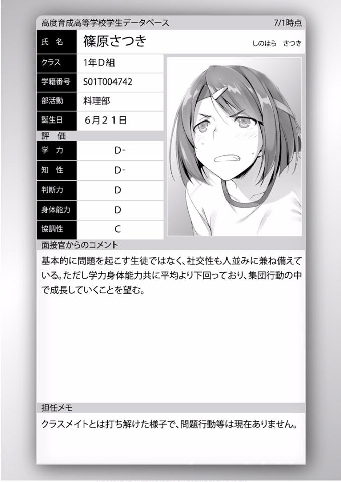
DE LO QUE TÚ Y YO CARECEMOS
Sonó la campana y comenzó la segunda mitad del festival deportivo. Ahora es el momento de los eventos de Participación solo por Recomendación.
Se espera que para las cuatro competencias restantes, los élites elegidos entre las clasificaciones de la clase sean los que participen.
— Hablando de eso, Ayanokouji-kun participará en la búsqueda del tesoro
¿verdad?
— Si es posible, prefiero que no...
Sin embargo, no se puede evitar ya que casualmente gané en piedra-papel-tijeras.
Seis de cada clase participarán en el concurso de búsqueda del tesoro. Es una competencia configurada de tal manera que una sola persona de cada clase participará en él, lo que hará que cuatro personas formen un grupo para este evento.
Como resultado, los puntos obtenibles son más altos de lo que eran durante los eventos individuales.
— El problema es la ausencia, Sudou-kun.....
Como Sudou, que iba a participar en todos los eventos, no se encuentra, se considerará como ausente al ritmo que esto va.
Ya sea preparar un sustituto o no. Esa es la pregunta.
— Si no te importa, me gustaría escuchar tu opinión, Ayanokouji-kun. Me gustaría pedirle su opinión a Horikita-san, pero eso no parece ser una opción.
Es verdad. Horikita todavía tiene que regresar a nuestro campamento.
En el peor de los casos, pensé que estaría sola cuando la mitad de la tarde comenzara, pero esto es inesperado.
Eso deja la posibilidad de que las cosas continúen maravillosamente intactas.
— Si se trata de Hirata, podrás tomar la decisión correcta incluso sin confiar en mí, ¿verdad?
— ..... No sé. Pero, en cuanto a mi opinión personal, creo que será necesario un sustituto. Cuando se trata de competencias individuales, nuestra clase es probablemente la peor. Por eso, para ganar en general, tenemos que ganar aquí.
— Entonces, la pregunta es a quién usar como sustituto.
— Se requieren 100.000 puntos para una sustitución. Haré algo con respecto a los puntos. Los sustitutos que podemos usar que creo que estarían bien si son Ike-kun y Yamauchi-kun.
— Porque si logran el primer lugar, ¿podrán ganar puntos para sus exámenes?
— Sí. Creo que es una buena idea usar ese beneficio.
De hecho, se puede decir que en la búsqueda del tesoro, donde la suerte es un factor importante, este es un buen plan.
Al final, Ike y Yamauchi tuvieron un duelo de piedra, papel y tijeras e Ike, que ganó, se unió triunfalmente al grupo participante.
— ¡Está bien! ¡También haré todo lo posible por el bien de Sudou!
Su espíritu de lucha no parece perder con el de Sudou. Antes de la competencia, los árbitros brindan una explicación.
— Hay objetos marcados como difíciles de obtener en esta búsqueda del tesoro. Es posible volver a probar suerte, pero habrá un intervalo de 30
segundos antes de que puedan hacerlo. Deberán informar al árbitro presente cuando deseen probar suerte una vez más. Además, el concurso terminará tan pronto como 3 concursantes lo terminen. Eso es todo.
Después de que se dio una explicación complementaria, me preparé para unirme a la segunda ronda de la búsqueda del tesoro en la que estoy programado a participar.
— Hola.
El hombre a mi lado me llamó. Ni siquiera necesito mirar, es Ryuuen de la Clase C.
— ¿Entonces ese señor musculoso no participará en la búsqueda del tesoro?
Me imaginé que seguramente participaría. Además, no puedo ver a Suzune en ninguna parte. Seguramente no se están follando por ahí,
¿verdad?
— No tengo idea. No tiene nada que ver conmigo... tampoco conozco muy bien los asuntos internos de mi clase.
— Qué respuesta de mierda.
Parece que inmediatamente perdió interés en mí, ya que Ryuuen se alejó.
Pero aun así, también será parte de la segunda ronda. No mucho tiempo después, comenzó la primera.
Parece que las otras clases han reunido adecuadamente a sus estudiantes de atletismo ya que Ike fue superado desde el principio.
Sin embargo, lo que es crucial aquí es el contenido de los artículos encontrados.
Llegando en último lugar, y finalmente alcanzando la caja, Ike tomó su papel y lo revisó.
Los concursantes principales ya van por aquí y por allá, dejando los campos en busca de sus artículos designados.
— ¡Uooooooooooh!
Haciendo ruidosamente una pose triunfal, Ike de repente dio media vuelta y corrió hacia la zona de inicio.
— ¡Ayanokouji! ¡Por favor, préstame tu pie izquierdo, tu pie izquierdo!
— ¿Pie izquierdo?
— ¡Zapatos, quise decir tus zapatos! ¡Ese es mi artículo!
Lo que me mostró fue una nota con “Pie Izquierdo (Zapato) de un compañero de clase” escrito en ella.
— No, si te lo doy, ya no podré correr........
— ¿¡Geh!?
Vino corriendo porque estaba cerca, pero no puede pedir prestado un zapato a alguien que correrá en esta búsqueda del tesoro.
Ike entró en pánico por su error y corrió hacia el campamento.
Sin embargo, parece que los otros estudiantes también están teniendo dificultades con la búsqueda del tesoro ya que todavía no podía ver a nadie dirigiéndose hacia la meta. Finalmente, gracias a la suerte del sorteo, Ike tropezó con una forma de triunfar y, en el tumultuoso acto inaugural, se hizo con el primer puesto.
— Esto no es una cuestión insignificante.......
Luego, después de varias decenas de segundos, entró la Clase A, seguida por la Clase B y luego la Clase C en último lugar.
Y con su final, llegó la señal de que comencemos con la segunda prueba. Me dirigí hacia el área donde se hace el sorteo, siguiendo ligeramente detrás de los más rápidos que se lanzaron por adelante.
— Ahora bien, qué va a estar escrito exactamente...
Inserté mi mano en la caja que estaba frente a mí.
En el interior, parece que hay bastante papel. Cuidando de no sacar varios pedazos, extraje uno.
Desplegué el papel que había sido doblado en cuatro.
“Trae 10 amigos”.
— ..... Tienes que estar bromeando ¿verdad?
En el momento en que vi el papel, pude sentir que mi campo de visión se oscurecía.
Incluso un solo amigo ya sería un obstáculo difícil para mí, ¿pero 10? Tienen que estar bromeando ¿no?
Mientras cavilaba en mi cabeza, no pude pensar en 10 personas.
— ¿Por qué estás distraído? ¡Date prisa, Ayanokouji!
Ike, que se había vuelto engreído después de conseguir el primer lugar, me gritó, pero no hay nada que pueda hacer al respecto.
Dos personas que podría contar como amigos dentro de la clase (Horikita y Sudou) están ausentes y eso me pone en jaque mate.
Mientras Ichinose y Kanzaki sean mis enemigos, tampoco puedo confiar en ellos...
— Me gustaría solicitar un cambio.......
Solicité cambiar mi papel de acuerdo con las reglas.
Ya los otros estudiantes están corriendo en busca de sus artículos. Me quedé de pie durante 30 segundos y saqué mi segundo papel.
“La persona que amas”.
— No, no, no, no, no, NO, NO.
¿Qué diablos pasa con el contenido de estos papeles? No puedo evitar pensar que están jodiendo conmigo.
— C-Cambio.
Pude sentir la confusión que venía de los estudiantes de Clase D que me miraban, pero no se puede evitar lo que no se puede evitar. Si alguien más sacara algo así, me pregunto qué harían.
Si le muestro este artículo a alguien del sexo opuesto, podría contar como una confesión. Incluso si les pido que me sigan la corriente, ya es bastante embarazoso.
Antes de decidir sobre el artículo a buscar, terminé con un minuto de handicap.
“Un reloj de mesa”.
En el tercer intento, finalmente terminé eligiendo algo que podía alcanzar.
Sin embargo, si es un reloj de mesa, ¿tendré que ir al edificio de la escuela por uno.......?
Por si acaso, traté de buscar un reloj en la carpa de los profesores, pero no pude encontrar uno allí.
Mientras me ocupaba de esto, tres concursantes terminaron llegando a la meta.
— .....esto es imposible.
Abandonado por la fortuna, no pude obtener ningún resultado y llegué en último lugar. No se trata de contenerse o de no retroceder, solo es un evento en el que simplemente no pude hacer nada al respecto.
*****
— Sudou-kun.
Lo llamé con voz suave para no asustarlo. Sudou-kun puso una pequeña distancia entre nosotros antes de voltear a mirarme.
— ... Horikita.
La razón por la que está sorprendido por mi apariencia es porque simplemente no esperaba que apareciera aquí.
— ¿Por qué viniste aquí...? ¿Podría ser que estás aquí para persuadirme?
— ¿Me veo como del tipo que viene hasta aquí para convencerte?
— No... no me parece así. ¿Entonces por qué? ¿Has venido a regañarme otra vez?
— No sé. También estoy sin palabras.
— ¿Qué?
Sudou-kun inclinó su cabeza como si no entendiera.
Por qué, eso me pregunto.
Cuando finalmente encontré a Sudou-kun, sentí que no podía decir nada. Pienso en por qué exactamente fui a tal extremo para buscarlo.
— Si te retiras, la clase D no tendrá ninguna posibilidad.
— Supongo que sí. De hecho, ¿no están en problemas en este momento?
— Sí. Supongo que ahora están en último lugar y para cambiar las cosas, será necesario ocupar el primer lugar en los eventos de Participación solo por Recomendación. Incluso entonces, será casi imposible que nos situemos en la cima.
En nuestra clase, hay quienes destacan en los deportes como Sudou-kun, pero en general, hay lugares donde son inferiores a él en este festival deportivo.
— Aunque me los he echado al hombro, maldita sea. Ese bastardo de Hirata...
— No tiene la culpa simplemente por detener tu disturbio. Por el contrario, deberías estarle agradecido. Si por casualidad levantaras la mano contra Ryuuen-kun, podrías haber sido descalificado del festival deportivo en sí.
— No podía soportar estar del lado perdedor. Lo que hizo fue contra las reglas.
— El problema contigo es tu forma de hablar y tu conducta, pero estabas esforzándote al máximo en el festival deportivo.
En este caso, actuó como él. En cierto sentido, eso en sí mismo es un milagro.
Por el bien de sus compañeros de clase, actuó como líder a pesar de su falta de experiencia y trató de sostenerlos en todo el festival deportivo.
Él fue tan rápido para pelear como siempre, pero la raíz todo era un deseo de ganar.
Solo puedo ver cómo ha logrado el primer lugar en todos los eventos, salvo por los 200 metros planos en los que estuvo ausente, y está claro de lejos que incluso en los eventos de equipo, ha sido una fuerza abrumadora.
Con respecto a eso, tengo que reconocer a Sudou-kun y evaluarlo en consecuencia.
— Pero también hay muchas áreas en las que necesitas reflexionar. La prueba definitiva de eso es el hecho de que estás aquí solo.
— ¿Qué se supone que significa?
— Si fueras alguien en quien la gente pudiera confiar y en la que confiaras, entonces en lugar de mí seguramente tendrías muchos compañeros aquí.
Para convencerte de que regreses.
Tal vez eso enfureció a Sudou-kun una vez más, le dio a la mesa una ligera patada.
— Esa actitud es el problema. La clase D siempre ha tenido problemas por ti.
El examen parcial, el incidente con la Clase C. Estafa y te estás volviendo loco esta vez. Es porque sigues haciendo cosas así que nadie te seguirá.
— Entonces vas a sermonearme seriamente. Ahórratelo, Horikita. Estoy realmente enojado.
Después de haber sido juzgado hasta esta medida, Sudou-kun comenzó a inquietarse y dejar escapar frenéticamente sus sentimientos de irritación.
— Creo que he hecho algo malo pero tampoco puedo contenerme. Por eso no se puede evitar, ¿cierto?
— Increíble cómo pensaste que podrías llevar a todos de esa manera.
— Nunca dije eso en primer lugar. Los otros chicos me suplicaron, ¿no?
— Pero aun así, ya que aceptaste, hay una cierta responsabilidad que tienes.
— Cállate. No me importa algo así.
— Todavía eres tan infantil como siempre. En la sociedad, esto no es algo por lo que serás perdonado, ¿verdad?
— ¡Cállate!
Grita. Dirigió una mirada feroz hacia mí para intimidarme, para que me calle.
Pero no cederé.
— Tch..... ¿cuál es el problema?
Si hubiera sido alguien más, habrían cedido.
Sudou-kun se quedó sin paciencia conmigo después de que no me amedrenté una sola vez y desvió la mirada.
— Tu debilidad es que eres demasiado fácil de descifrar. ¿Qué pasaría si no estudiaras? ¿Qué pasaría si instigaras la violencia? Te falta imaginación para pensar en el futuro.
— ¡Ah, maldita sea, se acabó! ¡Déjame en paz! ¡Tu sermón me hace querer vomitar!
Sudou-kun quiere hacer que las cosas funcionen, quiere quedarse aquí en esta escuela.
Pero aun así, continúa propenso a la violencia. Tiene que haber algunas circunstancias detrás de esto. A menos que aprenda las reglas y rutinas, Sudou-kun permanecerá en este círculo para siempre.
Yo--- a pesar de que deseaba estar sola para siempre.
Es por eso que, aunque termine siendo odiada, no detendré mis palabras. Aquí mismo, lo veré por todo lo que es.
— Si no te gusta, puedes golpearme.
— ¿Eh? Ese tipo de cosas... no hay forma de que yo pueda hacerlas...
— ¿Es porque soy mujer? Puede ser tarde para decir esto, pero soy bastante fuerte. Te derribaré antes de que tu puño llegue a mí.
— ¿Así que tienes toda la intención de contraatacar...? Honestamente, eres una mujer realmente extraña. Tal como dijiste, los otros no vinieron por mí.
Solo tú lo hiciste.
Aunque esto se debe en parte a que Ayanokouji-kun me regañó sobre el asunto.
Es solo que no siento la necesidad de decirlo, estoy parada aquí porque estoy convencida de esto.
Pero tal vez Sudou-kun también está un poco desgastado, ya que comenzó a hablar para suprimir su ira.
— La razón por la que acepté el papel de líder es porque pensé que el festival deportivo sería pan comido siempre que fuera bueno en deportes. Y es un hecho que no perdí ante nadie de las otras clases. Pero, como es natural, en las competencias de equipo no se puede hacer nada mientras haya alguien allí estorbándote. Tanto en la captura de la bandera como en la
batalla de caballería, perdí gracias a esos tipos inútiles. Simplemente no pude soportarlo.
Entiendo que esta es una situación que garantiza quejas.
Ciertamente, incluso para nuestro año escolar, la capacidad atlética de Sudou-kun es sobresaliente.
Pero no hay una sola persona con la capacidad de mantenerse con él.
— Solo puedo decir que odias perder en un campo en el que eres bueno.
Pero, ¿eso es todo?
Si simplemente no desea perder ante nadie en los deportes, entonces no era necesario que aceptara el papel de líder. Sudou-kun debió darse cuenta de que tendría dificultades cuando se tratara de los eventos en equipo.
En otras palabras, definitivamente hay otra razón detrás de esto.
Sudou-kun inclinó su cabeza un poco como si estuviera pensando en ello, pero pronto dio su respuesta.
— ... Para que me presten atención y me respeten, ¿creo? Pensé que tal vez podría tener algo así para mí. Quería mostrarles a los que se burlaban de mí... patético, ¿verdad?
Una vez que recuperó la calma, se dio cuenta tanto de sus deseos como del hecho de que los abandonó a todos sin poder cumplirlos y se rascó con fuerza su cabello teñido de rojo carmesí.
— Y con esto también soy un paria completo, ¿eh? Bueno, está bien.
Simplemente significa que voy a volver a como era en la secundaria.
— ..........
Al escuchar esas palabras de Sudou-kun, guardé silencio.
Ahora bien, me pregunto si toda mi perorata llegará a su corazón. Fui derrotada en el debate por Ayanokouji-kun, perdí con Ryuuen-kun y mi hermano también me abandonó.
Sentí que no tenía derecho a reprenderlo. Es porque alguien a quien había visto como si estuviera por debajo de mi nivel todo este tiempo, ahora parecía no estarlo más.
Ciertamente, Sudou-kun es torpe y es el tipo de persona que no piensa en el futuro. Él posee una disposición incontrolable.
Sin embargo, cambiando la perspectiva, también podría comenzar a verlo como alguien que continúa luchando solo mientras enfrenta esa soledad.
El que tuvo el coraje de enfrentar esa soledad puede ser muy superior a mí.
Mientras siento ansiedad de que mis palabras no lo alcancen, sinceramente intenté exprimir esas palabras. Continué la conversación que nunca ha sido mi fuerte.
— ... Es extraño. Estos sentimientos tuyos son básicamente los mismos que los míos.
— ¿Qué? ¿Qué quieres decir?
— El deseo de ser respetado por alguien. El deseo de seguir luchando por tu cuenta. Soy igual.
Él y yo somos similares. En el sentido en que ambos tenemos una cierta contradicción y seguimos luchando contra esa soledad.
— Pensando en el pasado, las señales estaban ahí. Durante los exámenes parciales, sentí irritación hacia los estudiantes que no podían estudiar, incluyéndote a ti. Me sentía enojada con personas que ni siquiera podían hacer lo que era natural. Simplemente no podía reunir el deseo de ayudarte. Comparado con eso, lo hiciste brillantemente en este festival deportivo. Porque, al menos, cargaste con los que no pueden manejar los deportes.
Estudios y deportes Incluso si resultaran ser la antítesis del otro, en teoría pueden ser prácticamente iguales.
Lo que había sentido hacia Sudou-kun y los demás en aquellos días, Sudou-kun lo está sintiendo fuertemente ahora.
— Entonces entiendes mis sentimientos. Ahora mismo, quiero estar solo.
— Y realmente deseo dejarte. Pero ahora, si te perdemos, la derrota de la Clase D es segura.
Esto no se trata solo de los problemas de Sudou-kun. Tendrá un impacto significativo en las posibilidades de victoria de la clase.
— Tú también, abandonaste a la clase al principio como yo, ¿verdad?
Entonces no tienes derecho a darme un sermón.
Respondiendo brevemente, Sudou-kun se levantó suavemente del sofá.
— ...Es verdad.
Así es, no hay peso detrás de mis palabras.
Porque hasta el último momento, pensé lo mismo que Sudou-kun.
— Estás decepcionada, ¿verdad? Pero estoy acostumbrado. Nací de padres basura. Por eso también soy basura. Vine aquí porque no quería ser como ellos, pero lentamente, estoy terminando como mis padres...
Tal vez tiene la intención de regresar a su habitación, Sudou-kun me miró una vez con ojos de que lo había abandonado todo.
Me pregunto qué palabras debería pronunciar después de ver eso. Yo mismo ya no lo sé.
— Es un error pensar que una persona nacida de la basura resultará ser basura. No se puede culpar a los demás por cómo resultará. Eso es algo que tienes que decidir por ti mismo. No voy a reconocer esa actitud tuya.
Lo rechacé con fuerza.
Porque sentía, que a pesar de entenderlo, tenía que rechazar eso.
— Si la hermana de un genio también resultará ser una genio, ¿cuántos problemas podrían evitarse...?
— ¿Qué quieres decir?
— ... En este momento, todavía eres un don nadie. Convertirte en alguien, eso depende de ti. Por lo menos, tienes un talento excepcional en el
campo de los deportes. Claro, tienes una actitud ruda pero aun así aconsejaste a muchos estudiantes durante la práctica. Es precisamente porque te he estado observando y sé que no eres una persona sin esperanza. Pero en este momento, eres una escoria. Estás apartando la mirada de la realidad e intentando escapar de ella. Si continúas tratando de desaparecer así, entonces es cuando realmente te etiquetaré como basura.
— Entonces simplemente etiquétame como basura. Ya no me importa eso.
— ¿Entonces vas a hacer una rabieta solo porque las cosas no salieron como quieres?
No importa qué palabras feroces le arroje, ninguna respuesta real viene de él.
Tal vez ya ha bloqueado su corazón, pero “yo” soy incapaz de abrir esa puerta.
Sonó la campana, señalando el final de la hora del almuerzo. La señal de que los eventos de la tarde comenzarán. Esto confirma que Sudou-kun no llegará a tiempo para la búsqueda del tesoro.
— Regresa, Horikita.
— No, no puedo regresar hasta que te haya llevado.
— Entonces haz lo que quieras.
Sudou-kun comienza a caminar otra vez y entra al elevador.
— Te estaré esperando aquí hasta que regreses. Para siempre.
— .....Haz lo que desees.
La puerta del ascensor se cierra.
Hasta el final, no aparté mis ojos de él.
*****
— Supongo que sí.
Preparamos un sustituto para el tirar de la cuerda omnidireccional en la ausencia de Sudou, pero aun así fuimos completamente derrotados.
Competimos creyendo en una pequeña posibilidad de éxito. Pero hemos perdido.
Nos habíamos desplomado hasta el último lugar.
Como clase, habíamos decidido volver a evaluar nuestra coordinación, pero fue Hirata quien, más que nadie, recibió el mayor daño.
Al igual que con la búsqueda del tesoro, él cargó con la tarea de proporcionar los puntos necesarios para la sustitución y, como tal, ha perdido una cantidad considerable de puntos.
Es una situación extremadamente grave en la que tenemos que hacer frente a todos y cada uno de los eventos sin nuestro mejor hombre, Sudou.
— Parece que Sudou-kun no ha regresado todavía.
— Hirata, ¿también planeas poner los puntos para el próximo evento?
— Sí. Es necesario. Un gasto necesario.
Pero aun así, convenientemente para nosotros, Hirata pagó tres hasta ahora.
Dos veces para Sudou que se perdió la búsqueda del tesoro y el tirar de la cuerda omnidireccional y una vez para Horikita, que se perdió la última competencia. No fue barato.
Si tiene que pagar también por el siguiente, serían un total de 500,000 puntos.
No importa cuántos puntos privados haya ahorrado, sigue siendo un gasto excesivo.
— Bueno... dejando a un lado a Sudou, Horikita probablemente pague más tarde.
Ella realmente está ausente, pero es algo bastante inhumano hacer que Hirata pague por todo.
Afortunadamente, ella obtuvo una gran suma de puntos del examen anterior similar al propio Hirata.
— ¿No es hora de que carguen con el costo también? Los que participan, quiero decir.
— Puede ser. Pero 100.000 puntos es una gran cantidad y ahorrar mucho no es fácil. Yo fui el que aprobó las sustituciones y todo, así que no puedo pedirles puntos.
— ¿No crees que el que desapareció es el culpable?
Además de eso, Hirata fue golpeado por Sudou.
Pero parece que Hirata no piensa en nada de eso.
— También hay que tener en cuenta la victoria de la clase, si podemos quedar en un lugar más alto y ganar premios, nos dará una ventaja en los exámenes que están por venir. Es mejor participar. Si tienen que pagar por su cuenta, probablemente haya un montón de estudiantes que dejarán pasar esto.
Ciertamente, la mayoría de los estudiantes que necesitan desesperadamente puntos en sus exámenes también se preocupan por sus problemas financieros.
Por supuesto, quieren puntos para ellos, pero ya que existe la posibilidad de que caigan en picada y estén en desventaja en sus exámenes, dudan.
Porque sería un espectáculo miserable si perdieran tanto dinero como puntos para los exámenes.
Los eventos restantes son la carrera mixta de tres piernas y la última: el relevo de 1200 metros.
Hirata intenta llamar para ver si hay alguien interesado en participar. Pero antes de que pudiera, Kushida vino corriendo.
— Umm, Hirata-kun. ¿Podrías ayudarme? Me gustaría participar en la carrera de tres piernas. Por supuesto, pagaré los puntos... ¿puedo?
— ¿Ehh?
Sorprendentemente, fue Kushida quien se ofreció.
— No puedo dejar que Hirata-kun sea el único que soporte la carga. Además, también quiero hacer mi mejor esfuerzo para contribuir con Horikita-san y Sudou-kun...
— Por supuesto, es una oferta más que bienvenida. Ya que Kushida-san también es muy buena en los deportes.
— Gracias. Iré a decirle a Chabashira-sensei que voy a participar en lugar de Horikita-san.
Diciendo eso, salió corriendo.
— Entonces, ahora para el chico. Preguntaré por ahí.
— Oye, Hirata. Esta competencia, ¿está bien si actúo como sustituto de Sudou? También pagaré los puntos por eso. No hay garantía de que pueda contribuir a la clase, pero si eso está bien contigo.
— Bueno, claro. Por supuesto, no me importa... ¿pero estás bien con eso?
— Se siente incómodo que lleves la carga solo.
Además, me siento un poco ansioso por el próximo examen. Me gustaría asegurar al menos un punto.
Habiendo recibido permiso, inmediatamente fui tras Kushida. Interrumpí la conversación que ya estaba teniendo con Chabashira-sensei.
— Entonces, Ayanokouji, ¿vas a ser el sustituto de Sudou?
— Sí.
— Esto es inusual, considerando que te gusta ser un espectador.
— Así que Ayanokouji-kun va a reemplazar a Sudou-kun. Estoy deseando que llegue.
— Yo también. No soy muy rápido, así que tendrás que perdonarme por eso.
— Creo que más que la velocidad, la carrera de tres piernas pone más énfasis en la coordinación.
Al tener esa conversación, hicimos los preparativos de inmediato para el evento.
— Yahho ~ Ayanokouji-kun. Y también Kikyo-chan. Parece que estamos en el mismo grupo---
Ichinose se acercó a nosotros mientras decía eso. Tanto ella como Shibata, eso es.
— Wah --- oponentes difíciles. Pensar que ustedes dos se unirían...
— Eso es cierto para Shibata-kun, pero yo no soy tan especial, ¿sabes?
Todavía no he llegado en primer lugar en nada.
— ¿En serio? Eso es inesperado.
— Llegué en segundo lugar una vez y en cuarto o quinto en las demás. A decir verdad, se suponía que alguien más debía participar, pero ella se lastimó el pie en la carrera de 200 metros antes del almuerzo. Parece que mucha gente se lesionó este año.
Al parecer, la Clase B también tiene ausencias. Entonces este par es improvisado.
— Shibata-kun, ¿está bien si la ato ahora?
— Bueno.
El par de la Clase B que comenzó a atarse la cuerda felizmente.
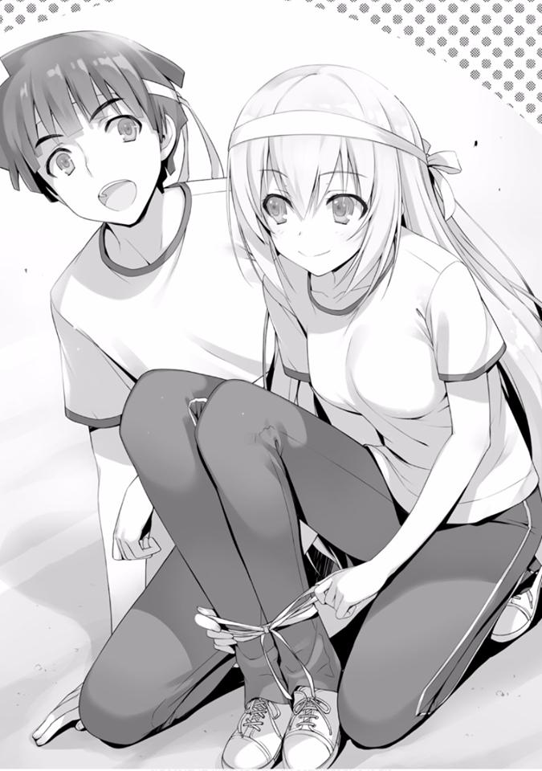
— Está bien, entonces, también deberíamos... umm, ¿puedo dejarte lo de atar la cuerda? No sería bueno que un hombre empiece a atarla.
— Está bien. Pero qué extraño, cuando practicabas con Horikita-san, tú eras el que la ataba ¿cierto, Ayanokouji-kun?
Es un pensamiento frecuente mío, ella realmente está observando la clase bastante bien.
— Ella es... una excepción. No puedo permitirme hacer lo mismo con otras chicas.
— ¿Quieres decir que ella es alguien especial para ti?
En lugar de ser alguien especial, sería más factible decir que es alguien con un estatus especial. Pero sería difícil transmitir eso.
— Más importante aún, es difícil de creer que Horikita-san fue a buscar a Sudou-kun... cómo debería decirlo, ¿Horikita-san siempre se asegura de no perder clases?
— También me sorprendió.
— Pero no pareces tan sorprendido.
Kushida dijo eso mientras se agachaba y ataba la cuerda a mi pie.
— Es porque me resulta difícil expresarme facialmente.
— ¿Te refieres a una cara de póquer?
— Kushida.
— Espera un poco más, ¿Sí? Voy a terminar de atarla muy pronto.
Respondiendo con linda voz, Kushida ató la cuerda maravillosamente. Decidí interrumpir bruscamente a Kushida.
— Eres tú, ¿no? La traidora que filtró la tabla de participación de Clase D a la Clase C.
— ... Vamos, Ayanokouji-kun. ¿Qué te pasa tan de repente? Incluso para una broma, eso es demasiado cruel...
— Lo vi. Tomaste una foto de la tabla de participación que hicimos en la pizarra con tu teléfono.
— Es solo un registro, así no lo olvidaría. Sería un gran problema si me olvido de mi turno.
— Memorizar solo tu turno al escribirlo a mano. ¿No fue ese el consenso?
— ¿De verdad? Lo siento, lo olvidé.
Después de haber terminado de atar la cuerda, Kushida lentamente se levantó con su sonrisa habitual dirigida hacia mí.
— Por casualidad, ¿eso te hizo sospechar de mí?
— Lo siento, pero confío en que estoy en lo cierto. De lo contrario, la Clase C
no podría atacarnos de esta manera.
El tiempo en que podemos estar juntos es limitado. En cierto modo, esta es la oportunidad perfecta para hablar.
— Hmm, pero aun así, si alguien tuviera la oportunidad de filtrar la tabla de participación de la Clase D, eso no necesariamente significa que gane la Clase C ¿no?
— Es verdad.
Por supuesto, ya que la Clase C no salió invicta en todos los eventos, es difícil determinar la verdad.
Incluso si han descifrado el orden de la Clase D en su totalidad, ya sea que ganen o no, dependerá de los miembros de la Clase A y la Clase B.
Aun así, es un hecho que esto aumenta mucho sus posibilidades de ganar.
— Oye, Ayanokouji-kun. Suponiendo que soy la culpable de filtrar la información de la clase--- y que tomar una foto con mi teléfono fue el factor decisivo, entonces eso debe significar que sabías que la tabla de participación se había filtrado ¿verdad? ¿por qué no modificaste la tabla de participación más tarde? ¿No podrías haber presentado una nueva tabla más adelante como contramedida? Si lo hubieras hecho, la tabla de participación de la que tome una foto no serviría y carecería de sentido,
¿no lo crees?
— Eso sería inútil. Si el traidor es un estudiante de la Clase D, todo eso no sirve para nada.
— ¿Y eso significa?
— Por ejemplo, supongamos que alteramos la tabla de participación a tiempo como dijiste, Kushida. Luego nos mantenemos callados y enviamos la nueva tabla de participación. Incluso si hacemos eso, mientras el traidor sea un estudiante de la Clase D, puede verificarla e inspeccionarla cuando lo desee. Si le pide a Chabashira-sensei que le muestre la tabla, está dentro de los derechos de clase que la vea.
Si solo es revisar la lista, entonces podrá hacerlo en cualquier momento.
En otras palabras, incluso si actuamos furtivamente, en última instancia, el orden seguirá siendo revelado si revisa repetidamente la tabla de participación.
Kushida... no, Ryuuen seguramente lo haría en ese caso.
— Pero si hubieras mantenido la tabla de participación oculta hasta el último minuto y luego la hubieras enviado, entonces quienquiera que la haya visto ya no podrá hacerle ningún cambio, ¿verdad? Sigo pensando que lo podrías haber evitado.
— En ese caso, tal vez la tabla de participación no se hubiera filtrado. No pensé tan a futuro.
— Ahh, pero si hicieras algo así por tu cuenta, podría terminar confundiendo a los demás más tarde, supongo........ que eso no está bien, ¿verdad?
Esa línea de pensamiento no es muy mezquina. Para neutralizar el espionaje en la tabla de participación, es necesario actuar con anticipación.
Ciertamente, como dijo Kushida, al enviar la tabla de participación justo antes de la fecha límite, sería imposible lograr algo incluso si uno obtiene dicha información ya que el plazo ya ha pasado.
Sin embargo, hacerlo causaría confusión entre nuestros compañeros de clase que no están al tanto. También provocaría su animosidad, ya que las modificaciones se habían hecho de forma unilateral a pesar de que todos ya habían llegado a un consenso.
Esa es precisamente la razón por la cual, tomando eso en cuenta y la posibilidad de una filtración, el curso de acción óptimo habría sido crear patrones de tabla de participación múltiple para la clase.
Al hacerlo, independientemente de cuál se presente al final, podríamos competir independientemente.
Si es así, también actuaría como contramedida para cualquier filtración y tampoco provocaría ninguna animosidad en la clase, los oponentes a los que nos enfrentaríamos según esta tabla de participación también serían aleatorios, por lo que no habría nada que puedan hacer al respecto.
La filtración estaría completamente neutralizada.
— Entiendo lo esencial, pero yo no soy la culpable, ¿sabes? Pero tampoco quiero sospechar de mis compañeros de clase.
— Entonces, ¿debemos confirmarlo con Chabashira-sensei? Si los estudiantes han hecho o no un esfuerzo para verificar la lista después de que se presentó la tabla de participación. Si esa persona existe, seguramente será la culpable.
Especialmente si alguien como Kushida, que ya había confesado haber tomado fotos con su teléfono, se había desviado para ir a verla, entonces sería mucho más sospechosa.
— ..........
Kushida cerró la boca y, por primera vez, su sonrisa desapareció.
En otras palabras, es una respuesta implícita que significa una afirmación. Sin embargo, de inmediato sonrió profundamente de nuevo.
— --- Fufu. Eres realmente impresionante, Ayanokouji-kun.
Kushida se ríe.
Era una cara que había visto antes, una Kushida que no conocía.
— No se puede evitar si todo ha sido expuesto. Así es, filtré la información de la tabla de participación.
— ¿Lo admites entonces?
— Sí. Seguramente habría sido expuesta de cualquier manera si le hubieras preguntado a Chabashira-sensei. Solo era cuestión de tiempo. Además, incluso si te dijera la verdad, Ayanokouji-kun, estoy segura de que no seré expuesta. No lo has olvidado, ¿verdad? ¿Mi uniforme que tocaste? Si eso se revela, se convertirá en un gran problema, ¿sabes?
Es una amenaza de que si le digo a alguien que Kushida es la traidora, enviará su uniforme con mis huellas dactilares a la escuela.
— Ciertamente, no podré exponerte como la culpable. Pero, dicho sea de paso, dime algo. El examen en el crucero. Ese resultado se produjo porque informaste a todos los estudiantes sobre el hecho de que eras el “objetivo”
a través de Ryuuen, ¿verdad? Y le pediste a Ryuuen un favor a cambio de que filtraras esa información.
— ¿Y ese favor sería? ¿Sabes lo que quiero lograr con tantas ganas que incluso traicioné a la clase por eso?
— Si actúas de forma tan descarada durante el festival deportivo, terminaría haciéndolo aunque no quisiera. Es la misma solicitud que querías hacerme hace un tiempo, ¿no?
— Jajaja... sí, ya veo. Así que Ayanokouji-kun realmente lo descubrió.
— Sí. ¿Por qué traicionas a la clase? Quiero saber la razón exacta detrás de eso.
— Es porque quiero “expulsar a Horikita Suzune”. Esa es la razón.
— Sin embargo, no puedo entender la razón por la que eres tan persistente cuando se trata de atacar a Horikita.
Quería que resolvieran este asunto entre ellas antes del festival deportivo, pero las cosas no funcionaron tan bien.
— Lo siento pero voy a expulsar a Horikita-san. No importa lo que digas, no cambiaré de opinión sobre esto.
— En otras palabras, ¿para lograr eso, incluso sabotearás a la Clase D?
— Es verdad. No me importa no poder subir a la Clase A. Me conformaré con expulsar a Horikita-san. Pero no me malinterpretes. Una vez que Horikita-
san ya no esté aquí, cooperaré de todo corazón con todos los de la clase y llegaremos a la Clase A. Te lo prometo.
Aparentemente, hacer que Kushida se detenga es imposible. Está cometiendo este acto de traición con ese tipo de fuerte determinación.
Si es necesario, se acercará a personas como Katsuragi, Ichinose o Sakayanagi.
— Ahh, pero he cambiado de opinión sobre algo justo ahora. Ese es el hecho de que tú, Ayanokouji-kun, estás ahora en mi lista de personas a expulsar.
En otras palabras, después de que los dos hayan sido eliminados, yo llegaré a la Clase A.
Dijo eso con su sonrisa habitual e incansable. Una expresión que es casi deslumbrante.
— ¿No has considerado la posibilidad de que Ryuuen te exponga?
— No soy un idiota, así que no he hecho nada que pueda dejar alguna evidencia. Ryuuen-kun es capaz de engañar a la gente casualmente y también es un mentiroso. Bueno, si me traiciona o no es una apuesta que he hecho.
Aun así, solo quería decir que hay muchas formas de engañar a alguien. Parece que Kushida habla en serio sobre aplastar a Horikita.
Por la forma en que es esta escuela, si hay un traidor entre tus aliados, terminas peleando luchas desesperadas repetidas veces.
El orden en nuestra tabla de participación, nuestra estrategia, toda esa información se ha filtrado. Pedirnos que ganemos a pesar de todo esto es irrazonable.
Bueno... el que asumió que hay un traidor y que no pudo formular ninguna estrategia también es culpable.
Esperaba que alguien realmente talentoso usara al traidor e hiciera un truco para allanar el camino hacia la victoria.
— Horikita-san ha sido un desastre en todo el festival deportivo. Es una pena que no puedas salvarla, ¿verdad?
— No sé sobre eso.
Después de darle esa breve respuesta, participamos en la carrera de tres piernas mientras antagonizábamos entre nosotros.
*****
Si el programa ha progresado sin problemas, deberían estar en la cúspide del evento final justo ahora.
El agujero dejado por Sudou-kun no es pequeño en absoluto.
Me imagino a Hirata-kun y los otros dando buena pelea, pero no puedo esperar mucho en términos de resultados.
La impotente yo no puede hacer nada más que andar sin rumbo fijo.
Todo lo que puedo hacer es quedarme de pie frente a ese ascensor. Incluso si me dicen que regrese a nuestro campamento y me retire, me falta la capacidad de pagar los puntos necesarios para un sustituto.
Los puntos que tengo a mano más tarde serán confiscados por Ryuuen-kun. En otras palabras, no puedo pagar al estudiante que participará en mi nombre. Solo sería una existencia impotente si tuviera que regresar.
Pero esa no es la única razón por la que no puedo permitirme abandonar este lugar.
Si me fuera brevemente, si Sudou-kun regresa en ese período, seguramente me sentiría abatida.
Además, a pesar de que la derrota de la Clase D es casi segura, pensé que me gustaría hacer lo que pueda.
Creo que Sudou-kun regresará.
Eso es todo al respecto.
Y luego, esa sensación dio sus frutos.
— Tú... ¿en serio te quedaste?
— Finalmente regresaste, Sudou-kun.
Mantuve mi compostura pero en el fondo estaba feliz.
Hasta el punto que lo llamé espontáneamente cuando vi la figura de Sudou-kun en el ascensor.
Estoy realmente agradecida de que no haya cámaras que monitoreen el interior del ascensor. Porque pude ganar tiempo para calmarme.
— ¿No se ha acabado? El festival deportivo, quiero decir.
— Puede ser. Pero si volvemos ahora, todavía podemos llegar a tiempo para un evento.
— ¿Qué sentido tiene? Incluso si participamos en algo así, es posible que ya hayamos perdido.
— Ciertamente, un resultado desastroso más allá de nuestras expectativas puede estar esperando a la Clase D. Tuve que retirarme gracias a mi lesión y Kouenji-kun estuvo ausente desde el principio. Y Sudou-kun también se retiró a la mitad. Nuestros compañeros, en comparación con las otras clases, no tienen mucha oportunidad de ganar.
Los eventos de Participación solo por Recomendación en los que quería participar con la esperanza de cambiar la situación seguramente también fueron un desastre.
— Como viniste hasta aquí, supongo que significa que tienes ganas de volver a la competencia.
— Nah. Vine aquí para ver si todavía estabas aquí o no...
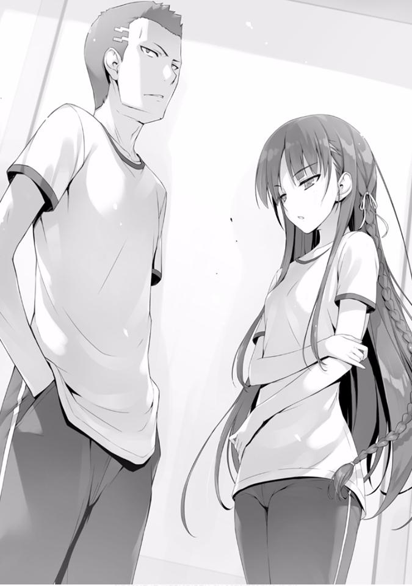
— Es cierto. He estado teniendo varios pensamientos en mi cabeza mientras esperaba una hora por ti. Qué clase de persona soy, qué clase de persona eres. He estado reconsiderándolo. Después de todo, tú y yo somos similares.
Una vez a solas, me calmé y finalmente sentí que había llegado a una respuesta clara.
— No tenemos nada en común. Tú y yo somos demasiado diferentes.
— No. Tú y yo somos similares. Cuanto más lo pienso, más me siento así.
No es mentira. Estas son palabras desde el fondo de mi corazón.
— Siempre solo. Siempre solitario. Pero creías que podías hacerlo y seguir así. Si hay una diferencia entre nosotros, es que el reconocimiento que ansiamos proviene de una sola persona o de un grupo de personas. Te he hablado sobre el presidente del consejo estudiantil antes, ¿cierto?
— Sí. Ese tipo que siempre se está dándose aires ¿verdad? Parece todo un personaje.
— Él es mi hermano mayor.
— ¿Qué?... hablando de eso, dijiste algo sobre haber peleado con él... ¿no?
Mientras Sudou-kun comienza a pensar en ello, comencé a hablar de mi hermano como si estuviera en un monólogo.
— Nuestra relación de hermanos está lejos de ser agradable. La razón detrás de esto es mi falta de talento. A mi sobresaliente hermano no le gusta estar relacionado con alguien tan incompetente como yo. Es por eso que hice mi mejor esfuerzo para convertirme en alguien talentosa. En ambos, estudios y deportes. Incluso ahora.
— E-Espera un minuto. ¿No eres inteligente y buena en los deportes?
— Desde la perspectiva de una persona promedio, tal vez. Pero desde la perspectiva de mi hermano, todo esto no es nada especial. Simplemente lo que normalmente se espera.
Con toda probabilidad, Nii-san alcanzó mi nivel cuando estaba en su primer o segundo año de secundaria. O podría haber sido incluso antes.
— Es por eso que corrí, para alcanzar a mi hermano, sin mirar a nadie a mí alrededor. Como resultado, siempre estaba sola. Cuando miraba hacia atrás, siempre veía que nadie me había seguido. Pensaba que eso estaba bien, porque creía que siempre y cuando tuviera talento, entonces eventualmente mi hermano me reconocería. Incluso durante este festival deportivo, he estado pensando de acuerdo a una mentalidad muy calculadora. Que si participaba en muchos eventos y producía resultados, mi hermano se pararía a mirarme. Esa también es la única razón por la que dije que quería ser el ancla durante el relevo. Porque tenía la fugaz esperanza de que si lo hacía, mi hermano podría llamarme o animarme.
Por el bien de la clase, o por mi bien, en el fondo, cosas como esa eran de interés secundario.
Al enfrentar la debilidad de Sudou-kun, también logré enfrentar mi propia debilidad.
— ¿Él realmente no te reconoce? Aunque lo estás intentando así de duro.
— No. Ni un poco. Pero finalmente me doy cuenta ahora. No tengo talento.
Durante este festival deportivo, me golpearon por todos lados, tal como lo había querido Ryuuen-kun y no pude dejar atrás un resultado satisfactorio.
No hay forma de que mi hermano reconozca a alguien como yo. La razón por la que tengo como objetivo a la Clase A es para que mi hermano me reconozca. Eso no ha cambiado. Pero me he dado cuenta que los métodos que he estado usando para lograr eso están mal. No estoy sola. Que por primera vez, al tener aliados, puedo ser capaz de acercarme a esa cúspide.
— ¿No vas a rendirte?
— Si hay una diferencia entre nosotros, podría ser que nunca me rendiré.
Trabajaré duro para ser reconocida por mi hermano, para convertirme en alguien que no sea una desgracia.
— Será doloroso, para alguien que recorra ese camino...
— Supongo que sí. Si eres la única persona en el mundo, seguramente estarás en paz sin tener que sufrir. Pero no sirve de nada pensar en esas cosas. Porque no estamos solos en este mundo. Hay miles de millones de personas e incluso a nuestro alrededor, hay muchas personas. No podemos ignorarlas.
Una persona no puede sobrevivir sola. Deben andar ese camino con alguien más.
Este festival deportivo ha demostrado ser una prueba para la Clase D y, sin embargo, se ha convertido en algo para agradecer.
— Dije que continuarías actuando violentamente. Y entonces te di la espalda.
Pero ese no era el caso. Esa no era la respuesta correcta. Si alguna vez te apartas de tu camino voy a estar ahí para traerte de vuelta otra vez. Es por eso que hasta que nos graduemos, por favor préstame tu fuerza. Yo también, prometo prestarte mi fortaleza lo mejor que pueda.
Lo miré a los ojos. Miré sin apartar los ojos.
Porque quería que él aceptara mi determinación.
— Hasta hace un tiempo, este no era el caso... ¿por qué tus palabras tienen tanto peso ahora?
— Puede ser porque honestamente he admitido la verdad. La verdad es...
que soy una persona patética y solo he estado desviando mi atención de ese hecho.
No puedo hacer alarde de esto ante los demás. Pero si es alguien igual a mí, entonces esa es una historia diferente.
— Volveré a decir esto, Sudou Ken-kun. Dame tu fuerza.
— Horikita......
Sudou-kun apretó los puños con fuerza y se golpeó la frente con ellos.
— Ahh... ¿qué diablos es esta sensación? No lo sé, pero siento que mis ojos finalmente están abiertos...
Él dijo eso mientras daba un paso hacia mí.
— Te ayudaré, Horikita. Yo... siento que mi existencia fuera del baloncesto ha sido reconocida por primera vez. Por eso quiero responder a tus sentimientos.
Podía sentirme radiante con una sonrisa natural hacia esas palabras.
Una sensación que he sentido por primera vez. Me pregunto qué es este latido en mi pecho. Lo único que puedo decir es que no es algo así como la amistad o el amor.
Algo diferente de esos... así es, vergonzosamente, ahora tengo a alguien a quien podía llamar camarada.
Diferente de Ayanokouji-kun y mi hermano.
Lo que me falta. Algo en lo que seguramente estoy corta.
Sin embargo, me pregunto si he dado ese pequeño primer paso.
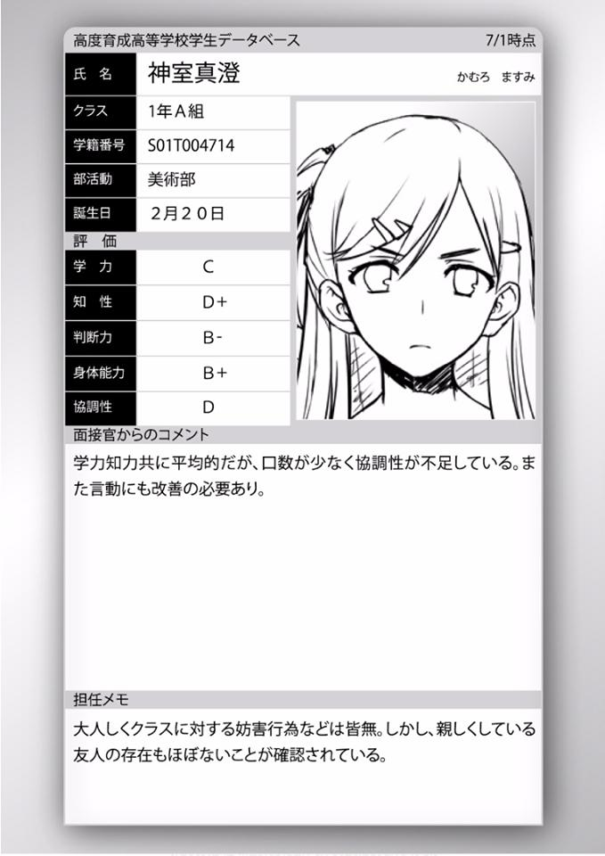
EL COMIENZO DE UNA NUEVA ERA
El último evento de la segunda mitad, el relevo de 1 200 metros que cerraría el festival deportivo, está a punto de comenzar. Las tensiones son altas para todos los que no sean de la Clase D.
— Así que este es el evento final... incluso para este tendremos que preparar un sustituto---
— Ahh, ahh, lo siento, ¡los mantuve esperando! ¿Qué está pasando?
Un Sudou sin aliento regresó, con Horikita llegando poco después.
— Sudou-kun, regresaste.
— ... Lo siento, me tomó algo de tiempo ir a cagar.
Tenía una mirada brillante y alegre en su rostro. Sin embargo, muchos estudiantes voltearon a mirar a Sudou con frialdad.
Sudou tomó sus miradas de frente.
— Lo siento. Todo porque enloquecí, terminé golpeando a Hirata e hice que la moral cayera en picada. También es mi culpa que la Clase D esté en una situación tan desesperada.
Antes de que alguien pudiera culparlo, Sudou dijo eso e hizo una profunda reverencia. Si Sudou hubiera sido como era hace un rato, no hubiera hecho eso ni siquiera para aparentar.
Siento que definitivamente algo debe haber pasado.
Hirata, después de un breve momento de sorpresa, rió felizmente. Su mejilla, que se había hinchado un poco, parecía que dolía. Pero ni siquiera le importa eso.
— ¿Qué pasa contigo, Ken? Así no eres tú.
Ike inesperadamente interrumpió después de ver eso.
— Tengo que admitir que estoy equivocado si he hecho algo mal. Por favor, deja que me disculpe contigo, Kanji.
— No es como si fuera tu culpa que haya perdido ni nada por el estilo. No soy bueno en deportes... Lo siento, no serví para nada.
Una disculpa llevó a otra. Los estudiantes que estaban mirando a Sudou, no han podido producir resultados como él.
— Si no has decidido el sustituto para el relevo, déjame correr.
— No hay otro estudiante al que se lo podamos dejar más que a Sudou-kun.
¿Cierto, chicos?
Las reglas para el evento final, el relevo de 1 200 metros, requiere que los chicos y las chicas se mezclen. De cada clase, los corredores deben estar equitativamente equilibrados entre hombres y mujeres.
Tres chicos y tres chicas, cada uno deben correr 200 metros.
— ¿Puedo pedir una corredora sustituta...? No podré obtener resultados satisfactorios con esta pierna.
Después de que el caso de Sudou terminara, Horikita lo pidió con una mirada de disculpa en su rostro.
— ¿Estás bien con eso, Horikita? Has intentado tanto estar en este relevo,
¿verdad?
— ... No se puede evitar. En este estado, ni siquiera estoy segura de poder ganar contra Ike-kun. Lo siento.
En esta reunión sombría y macabra, después de que Sudou lo hubiera hecho, Horikita también hizo una profunda reverencia.
Me pregunto si alguna vez ha sido tan honesta hasta ahora.
Tanto el corazón como el cuerpo de Horikita han sido completamente demolidos por Ryuuen. El papel de ancla al que se aferraba con fuerza, en este día en este momento, es todo porque se había imaginado al lado de su hermano.
Sus manos temblaban de frustración, luchó desesperadamente contra el sueño que no podría hacerse realidad.
Si ella forzaba el asunto y participaba de todos modos, entonces sin duda, la Clase D perdería. Habiendo escuchado eso, Hirata asintió y decidió que Kushida participaría en su lugar.
Entonces, con Sudou como el primero en la lista, están Hirata, Miyake, Maezono, Onodera. Los cinco con Kushida como reemplazo de Horikita asumieron el desafío con esa alineación.
Es porque no hay otros velocistas capaces de participar en la Clase D aparte de ellos. Los miembros fueron confirmados y cuando hice contacto visual con él, Hirata simultáneamente abrió la boca.
— Umm... disculpen por lo repentino, pero la verdad es que yo-Pero cortándolo, otro estudiante masculino comenzó a hablar.
— Por favor, espera, me disculpo pero... ¿me dejarías retirarme también?
El que dijo eso fue Miyake, uno de los muchachos programado para participar.
Parecía estar arrastrando un poco el pie derecho.
— En realidad, me he torcido el tobillo durante la carrera de 200 metros antes del mediodía... Pensé que mejoraría con un poco de descanso, pero todavía me duele.
Tenemos estudiantes que han sufrido lesiones.
— En ese caso, parece que también necesitaremos un reemplazo para los chicos.
Habiendo dicho eso, Hirata cerró la boca y miró a su alrededor.
Sin embargo, para este evento final, ningún estudiante quería participar a menos que tuvieran absoluta confianza en su velocidad.
Después de una breve espera, no hubo voluntarios, así que decidí hacer una oferta.
— Entonces, ¿estaría bien si corro? Por supuesto, pagaré los puntos por la sustitución.
— Ehh, ¿lo harás, Ayanokouji? Hablando de eso, tú... ¿eres rápido?
Por supuesto, nadie tenía la impresión de que soy un corredor rápido.
— Estoy totalmente de acuerdo. Lo he estado observando hasta ahora y creo que es el tipo de persona que se asegurará de producir resultados.
Una palabra de Hirata fue suficiente para cerrar cualquier cosa que se pareciera a una objeción. Este es el peso detrás de las palabras del hombre que gana confianza diariamente. Dejó a todos incapaces de protestar.
— Además, no podemos decir que la Clase D tiene a sus mejores miembros.
Es por eso que nuestra estrategia debería aprovechar la iniciativa y asegurar nuestro liderazgo. ¿Qué tal, Sudou-kun? Teniendo en cuenta las reglas, creo que aseguraríamos el predominio si podemos correr por adelante. Si podemos comenzar bien y si es Sudou-kun que corre rápido, tomará ventaja, entonces podremos ganar distancia inmediatamente.
Mantendré esa ventaja y se la entregaré al próximo estudiante.
El último relevo donde 12 personas, incluso de los estudiantes mayores, tendrían que comenzar simultáneamente.
Como los carriles no se pueden preparar para los 12, tendremos que comenzar uno al lado del otro.
La regla aquí es que puedes tomar el carril interior de un oponente que hayas superado. En otras palabras, lo más importante aquí es nuestro posicionamiento inicial.
Si puedes lograr adelantarte al principio, no tendrás que quedarte atrapado en una batalla contra todos.
— ... Bueno, no se puede evitar. No hay otra manera si queremos ganar.
Sudou irá primero. Hirata, cuya velocidad está asegurada, irá en segundo lugar.
Después de eso, las tres chicas, incluida Kushida, tendrán su turno y al final será mi turno.
Iremos en este orden. Parece que me han dado una evaluación más alta en comparación con las chicas ya que se me encomendó el papel de ancla.
En cuanto a la razón, probablemente querían meterme entre los estudiantes más lentos. Me ahorra el problema.
A lo largo de todos los años escolares y de todas las clases, las élites elegidas se reúnen en el centro del recinto y, entre ellas, se pueden ver las figuras del mayor de los Horikita y Nagumo de segundo año.
— ¡Te lo dejo, Sudou-kun!
Hirata grita y en el mismo sentido, Kushida y los demás corredores también lanzan vítores estridentes a Sudou.
Sudou, con determinación, ingresa a la pista.
Parece que los de primer año son buenos hasta cierto punto, ya que la Clase D
está en el carril más interno. Está configurado de tal manera que la clase A del tercer año está en el carril más externo.
Como hay tres chicas de tercer año, se puede decir que tendremos una abrumadora ventaja inicial.
Cuando la emoción alcanzó su punto máximo, finalmente comenzó el último relevo.
Por supuesto, la clase D ya no tiene ninguna posibilidad de ganar el festival deportivo, pero si podemos obtener la victoria, puede alterar drásticamente los eventos futuros. Deben haber tenido esa premonición.
Voces alentadoras vinieron de nuestro campamento.
— Eso estuvo cerca. Un poco más y me habría retirado.
— Supongo que sí. Que Miyake estuviera lesionado fue inesperado.
Desde el principio, el plan era reemplazar a Hirata y participar en el último relevo.
Por supuesto, nadie más que Hirata sabía de eso.
— Esto está bien, ¿verdad? Ayanokouji-kun.
— Sí. Lamento haberte dejado los preparativos.
— Es lo más natural para mí hacer eso como parte de la Clase D. Prefiero que Ryuuen-kun no nos siga golpeando. Está bien si asumo que se sorprenderá ligeramente de que corras, ¿verdad?
— Haré todo lo posible para no decepcionarte. Más importante aún, por ahora vamos a animar a Sudou.
Sudou tuvo un buen comienzo en el momento en que sonó la señal de inicio y sin atisbo de nerviosismo.
Una carrera que tuvo el mejor momento que he visto hasta ahora. Desde el primer paso, tuvo suficiente fuerza para adelantar a 11 personas.
¡Wah! Pude escuchar vítores junto con los estudiantes que corrían.
— Increíble, rápido.
Incluso Shibata, observando a mi lado, lo elogió.
Sudou corría a un ritmo abrumador.
También se suponía que los chicos de segundo y tercer año debían haber sido rápidos, pero quedaron atrapados en el tumulto y se quedaron luchando por posicionarse.
Tras haberlos superado a través de esa apertura, Sudou mantuvo una ventaja de más de 15 metros y llegó.
— ¡Te lo dejo a ti, Hirata!
La clase D está alborotada por esa ventaja. El testigo pasa al siguiente corredor: Hirata.
El hombre híbrido que se destaca tanto en estudios como en deportes.
Resplandece brillantemente incluso aquí.
Uno tras otro, los otros estudiantes siguieron su ejemplo, pero la brecha que se había formado no disminuía y nuestra ventaja planificada se mantuvo hasta Onodera, que estaba en tercer lugar.
Si hay un problema, entonces sería a partir de este punto. Para una chica, Onodera es rápida. Sin embargo, los chicos que la seguían por detrás se estaban acercando a ella. Esa ventaja ciertamente se perderá.
Cuando pasó a Maezono, que es la cuarta en correr, la ventaja era casi inexistente e incluso mientras corría, fue alcanzada por un chico de la Clase A de segundo año.
Uno tras otro, nuevos estudiantes comenzaron a correr.
Participamos mientras aspirábamos al primer lugar, pero como se esperaba, los estudiantes mayores son formidables.
Además, Onodera había sido superada por alguien de la Clase A de tercer año y uno tras otro, se acercaron a ella. Uno de la clase A de tercer año y uno de la clase A del segundo año la pasaron.
Como se esperaba de la competencia, ¿eh?
Sin embargo, esos acontecimientos son una parte inherente del festival deportivo. Una chica de la clase A de tercer año que fue cuarta en recibir el testigo, tropezó y cayó unos 50 metros antes del siguiente corredor.
Entró en pánico y se levantó, pero alguien de la Clase A de segundo año inmediatamente tomó el primer puesto y ganó una gran distancia.
Para cuando el testigo pasó a Kushida, quinta para correr, la clase D ya había sido superada por la clase A del mismo año y había caído al séptimo lugar.
Como se sospechaba, cuando se trata de la capacidad general, las otras clases tienen la ventaja.
Pensé que al menos podríamos llegar al podio, pero la pelea parece haber sido difícil.
En una situación en la que los de primer año no podían siquiera competir, la Clase B de primer año lograba mantener el tercer lugar con esfuerzo.
El mejor hombre de la Clase B que podía llamar la atención instantáneamente, Shibata, parece estar actuando como el ancla y, al igual que yo, tomó su posición y esperó su turno.
Cuando cayó la cuarta corredora de la Clase A de tercer año, la situación entre los hombres alineados como anclas cambió por completo.
— Parece que ganamos esta pelea, presidente Horikita. De ser posible, me hubiera gustado correr contra usted.
Echando un vistazo al corredor superior que se aproxima, un estudiante de la Clase A de segundo año, Nagumo se rió.
Hay una brecha de aproximadamente 30 metros con respecto al tercer año de la clase A del estudiante de segundo año. Una distancia a la que aquellos iguales en habilidad no pueden ganar nunca.
— Incluso en puntos generales, es probable que ganemos. Parece el comienzo de una nueva era.
— ¿Hablas en serio acerca de cambiarla? La escuela, quiero decir.
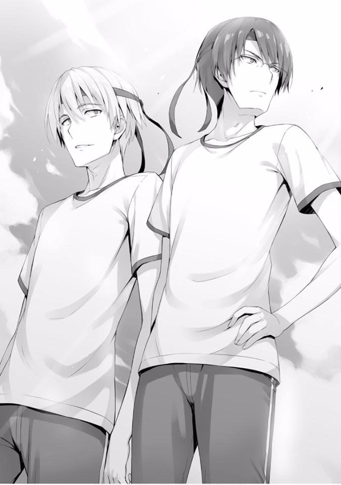
— Hasta ahora, no ha habido diversión en lo que respecta al consejo estudiantil. Se ha atascado obstinadamente a la hora de proteger la tradición. Aunque usted hable cosas tan duras nunca olvidó dejar una red de seguridad. Reglas suaves que garantizaron evitar expulsiones. Estas cosas ya no son necesarias, ¿verdad? Es por eso que lo que haré es crear nuevas reglas. Para el sistema escolar meritocrático definitivo, eso es.
Nagumo dijo eso mientras lentamente comenzaba a caminar hacia adelante.
Comenzó una carrera de aproximación para recibir el testigo que se acercaba.
El testigo se pasa al representante de la clase A de segundo año: Nagumo.
No mucho tiempo después, Shibata también recibió su testigo bajo la condición ideal de estar en segundo lugar.
— ¡Está bien, perfecto! ¡Déjame el resto!
Shibata, con ojos ardientes, comenzó a correr persiguiendo a Nagumo.
Debido a que los estudiantes que se encontraban entre nosotros se fueron, por un momento, hice contacto visual con el Horikita mayor.
No hay mucho que extraer de una breve conversación, pero este hombre está peleando una vez más.
— Pensar que eres el ancla.
— Solo estoy reemplazando a un hombre herido. Originalmente, tu hermana estaba programada para estar en esta posición.
— Ya veo. Entonces ella está luchando a su manera.
Incluso si es solo por este momento, Horikita ha soñado con estar junto a Horikita Manabu.
Incluso si no podía intercambiar palabras con él, había tenido la intención de transmitirle sus sentimientos.
— He estado mirando tu clase y hasta hace un tiempo pensaba en ustedes como una clase sin esperanza. Pero en este relevo final, no siento nada de eso. ¿Qué pasó?
— Seguro que nos estás vigilando. La clase D de primer año no es algo a lo que debas prestarle atención, ¿verdad?
— Estoy pendiente de todas las clases. Sin excepciones.
— Si algo ha cambiado, entonces eso sería tu hermana.
— ...Ya veo.
No hay sorpresa. Solo respondió brevemente con esa expresión habitual y calmada de él.
— Te preguntaré esto. ¿Y tú? No puedo sentir esa pasión en ti.
— Soy mi yo habitual. No tengo ningún interés en este festival deportivo. Ya puedo decir el resultado.
Los sentimientos de la clase.
Los sentimientos de Sudou.
Los sentimientos de Horikita.
No tengo un gran interés en nada de eso.
Es solo que tuve una premonición.
— No podrás verlo después de graduarte, pero... nuestra clase se volverá más fuerte.
— No tengo ningún interés en un futuro tan incierto.
Cuando el Horikita mayor miró a su compañero de equipo que se acercaba, lo detuve con mis palabras.
— Entonces, en ese caso, ¿te interesaría ver exactamente qué tipo de persona soy?
— ¿Qué?
El momento es el correcto para comenzar una carrera de aproximación.
Sin embargo, tal como esperaba, se detuvo.
— Si también lo quieres, no me importa competir contra ti.
— ... Seguro que eres un hombre que dice las cosas más fascinantes. ¿Fue mi malentendido? Hasta ahora, pensé que detestabas destacar y evitar
tomar cualquier acción directa. Incluso en este relevo, pensé que habrías dejado que las cosas se desarrollen y terminen.
— Si abandonas toda posibilidad de llegar en segundo lugar para correr contra mí, entonces lo aceptaré. No todos los días están uno de primer año y uno de tercer año convergiendo para competir.
En respuesta a mi inesperada provocación, el Horikita mayor se detuvo por completo y volteó hacia mí.
— Interesante.
Respondiendo brevemente, no hizo ningún movimiento.
El más desconcertado por esto era el quinto corredor de la Clase A de tercer año.
Había hecho todo lo posible para llevar el testigo a esa mano, pero el hermano recibió el testigo mientras estaba quieto.
— Lo hiciste bien.
— Ahh, ahh, ahh...
El de tercer año, cuyo nombre no conocía, se fue impactado por la actitud del Horikita mayor que había recibido el testigo. Con toda probabilidad, este es un relevo sin precedentes.
Naturalmente, los espectadores que se habían dado cuenta de esta extraña situación volvieron sus ojos hacia el Horikita mayor.
La Clase A de tercer año, una vez en tercer lugar, fue superada por los otros corredores hasta que finalmente, Kushida, de la Clase D se me acercó.
Kushida también se dio cuenta de esta extraña situación, pero corrió a toda velocidad. Una distancia cubierta en unos pocos segundos más.
— Solo diré esto antes de la carrera.
— ¿Qué?
Cuando los dos comenzamos nuestra carrera de aproximación, dije esta frase.
— --- Corre con todo lo que tengas.
Por solo un instante, sentí que el Horikita mayor, que había desaparecido detrás de mí campo de visión, se rió.
En ese mismo momento, el testigo pasó a mí.
— ¡Ayanokouji-kun!
Acepté el testigo que Kushida me entregó y, como acto de apertura, corrí a toda velocidad.
En toda mi vida hasta este momento, nunca he corrido en serio en este amplio y extenso mundo.
La situación es completamente diferente a cuando había seguido corriendo indiferentemente en esa habitación fría e inhumana.
Todavía es el comienzo de octubre. La temporada fría todavía está lejos.
Me deleité con el viento frío.
No me importa alcanzar y adelantar al corredor de enfrente.
En este momento, lo único que importa es la carrera contra el hombre que corre a mi lado.
Como si cortara el viento a toda velocidad, cerramos la distancia entre nosotros y el corredor que tenemos enfrente.
— ¡¡¡Tienes que estar bromeando!!!, ¿verdad?
Cuando fue alcanzado, el estudiante dio un grito de asombro pero lo dejamos atrás.
Además, ya no puedo escuchar las aclamaciones.
La estrategia y el ingenio se han vuelto irrelevantes.
Todo lo que queda es mi pelea uno contra uno contra Horikita Manabu, quien corre junto a mí.
Más allá de la primera curva, más allá de la recta y finalmente a la última curva.
Bien ---voy a acelerar aún más---
Ovaciones que parecían fuelles furiosos resonaron en todo el recinto.
*****
Después de la competencia, Karuizawa me lo dijo sin apartar los ojos de mí.
— ¿No fue acaso porque mi oponente era lento?
— No, no. ¿De verdad estás diciendo eso después de ver las reacciones de todos?
— Dejando de lado las bromas, al final no gané al presidente del consejo estudiantil, ¿verdad?
— Bueno, no se pudo evitar. La persona que estaba corriendo frente a ti se cayó.
Mientras los dos nos acercábamos a él a un ritmo asombroso, el corredor frente a mí entró en pánico y cayó, terminó bloqueando mi camino.
Lo esquivé, pero ese ligero retraso demostró ser significativo y el hermano mayor de Horikita terminó por adelantarme.
No sé cuál hubiera sido el resultado sin ese accidente, pero realmente no me importan esas cosas.
Por lo menos, lo que es seguro es que he reunido la atención de toda la escuela con esta competencia final.
Muchos de los que habían terminado de correr me miraban inquisitivamente.
— ¡Ayanokouji! ¿¡eres rápido!? ¿¡Te has estado conteniendo hasta ahora!?
Sudou, que vino corriendo hacia mí, me dio una palmada en la espalda. Como puso todas sus fuerzas en ella, eso dolió.
— Correr es mi único fuerte. Pero eso fue una exageración. Creo que esto es lo que llamarías una fuerza histérica.
Y no solo Sudou, sino que también varios estudiantes que se sorprendieron por mi carrera se acercaron a mí y me llamaron.
— Eso no lo explica. Esa velocidad, quiero decir. Mentiroso.
Ligeramente arrastrando su pie, Horikita se acercó. Usó su mano como si fuera una cuchilla y me apuñaló en el abdomen.
— Chicos, este no es el tipo de tratamiento que debería dársele a un soldado que luchó lo mejor que pudo... duele.
Ya que Horikita se acercó a mí, Karuizawa se distanció para no ser una molestia.
Desde lejos, Sakura también me estaba mirando, pero como había una multitud a mí alrededor, no se acercó.
— Si hubieras corrido así desde el principio, entonces las cosas hubieran sido diferentes. Pero ¿por qué de repente te pusiste serio? Ahora estarás disfrutando de la atención.
Exactamente.
A diferencia de Hirata o Shibata, estudiantes que ya habían sido reconocidos por ser rápidos desde hace mucho tiempo o Sudou, que lo ha estado dando todo desde el comienzo del festival deportivo, llevo haciéndome el tonto hasta ahora.
Esa brecha definitivamente tendrá una influencia, pero eso depende de la forma en que piense al respecto.
No es particularmente difícil hacer que parezca una manipulación de la lista en la tabla de participación, manteniéndome en reserva hasta ahora y que todas las manipulaciones detrás de escena fueron parte de la estrategia de Hirata y Horikita.
Es particularmente efectivo contra alguien como Ryuuen, a quien le gusta superar a la gente.
— Parece que van a anunciar los resultados pronto. Vamos.
Los resultados se anunciarán al mismo tiempo de la ceremonia de clausura.
Todos los estudiantes se volvieron hacia el tablero electrónico gigante.
— Ahora bien, anunciaremos los resultados del festival deportivo de este año.
En el tablero electrónico, nos dividimos entre el Equipo Rojo y el Equipo Blanco y comenzó el conteo. Los números comenzaron a subir.
El total de puntos adquiridos de los 13 eventos.
El equipo ganador es.......
— El equipo rojo gana.
Los puntos se muestran junto a esas letras. Realmente fue una batalla duramente ganada pero el Equipo Rojo, compuesto por la coalición DA, parece haber ganado.
— A continuación, anunciaremos los puntos generales para cada clase.
Al dividir las 12 clases en tres categorías en la pantalla, se muestran todos los puntos para cada clase a la vez.
Para nosotros, el desglose del segundo y tercer año no significa nada. Lo que es importante es en qué posición está la clase D.
1er lugar: 1er año Clase B
2do lugar: 1er año Clase C
3er lugar: 1er año Clase A
4to lugar: 1er año Clase D
— ¡Ugyaah! ¡Como pensé! ¡Hemos perdido!
— ... Bueno, supuse que terminaría así.
Es genial que el Equipo Rojo haya ganado, pero los de primer año hemos sido una gran carga.
Supongo que es algo inevitable, tener dos ausentes en Kouenji y Sakayanagi terminó siendo un factor importante.
Tanto para el segundo como para el tercer año, la clase A obtuvo el primer lugar con una abrumadora diferencia de puntos. La Clase D también, tomó el segundo y tercer lugar y eso mostró un alto nivel de estabilidad.
Sin embargo, lamentablemente, a pesar de haber ganado como parte del Equipo Rojo, la Clase A solo se ubicó en el 3er lugar en términos de puntos en general, lo que significan 50 puntos menos para ellos.
Como la Clase D es la más baja, serán 100 puntos menos.
Debido a que el Equipo Blanco ha perdido, la Clase C también tendrá 100
puntos restados. Como la Clase B es el primer lugar en términos de puntos en general, ganarían 50 puntos y perderían 50 puntos debido a la pérdida del Equipo Blanco, por lo que terminó como un paso atrás para todas las clases.
Ahora que resultó así, siento que todos están abrumados y exhaustos.
Incluso después de que hicieron todo lo posible, sus puntos de clase disminuyeron, por lo que se sintió como si no valieran la pena.
Por supuesto, los estudiantes que ganaron individualmente podrán complementar cualquier examen futuro con esto, así que no iré tan lejos como para decir que no tiene sentido.
— Por último, anunciaremos el MVP para cada año escolar. (nota: MVP.-
Most Valuable Player o el Jugador Más Valioso)
Con toda probabilidad esta es la parte que Sudou más espera.
Si puede lograr el primer lugar, Sudou estaría sobre la luna por haber obtenido permiso para llamar a Horikita por su nombre.
Sin embargo---
El MVP del primer año es de la Clase B - Shibata Sou.
Eso se mostró en el tablero electrónico.
— ¡Guaaaah! ¡Así es como es después de todo!
Habiendo perdido su última esperanza, Sudou grita.
Shibata siempre obtuvo el primer o segundo lugar. Sudou se había colocado en primer lugar en todas las competiciones individuales, pero como se esperaba, estar ausente tuvo un efecto significativo.
El hecho de que también perdió el relevo que le hubiera otorgado un alto puntaje fue el último clavo en el ataúd.
Continuó mirando el tablero electrónico con frustración incluso después de que la ceremonia de clausura había terminado.
— Sudou-kun, no ocupaste el primer lugar en nuestro año escolar.
¿Recuerdas la promesa, verdad?
— ... Sí, es lamentable, pero una promesa es una promesa. Te llamaré Horikita a partir de ahora.
— Es una dedicación impresionante.
Horikita se rió de una manera ligeramente burlona.
— Me olvidé de decirte esto, pero me acabo de acordar de que me diste esas condiciones a la fuerza y aún no he hecho ninguna solicitud.
— ¿Qué significa eso?
— Si lograbas el primer lugar, me llamarías por mi nombre. Me propusiste esos términos tan egoístas, ¿no es natural que te haga una petición ahora que no has logrado eso?
— Bueno, es verdad...
— Es por eso que te castigaré por no poder alcanzar tu objetivo. Nunca más usarás la violencia sin una razón justificada. Lo prohíbo. ¿Puedes prometerme eso?
— ... Es un castigo, ¿verdad? Voy a cumplir esa promesa.
— Por supuesto, no olvides que no eres tú quien decide cuál es una razón justificable. Eso depende de mí o de alguien más.
Sudou obedeció mansamente eso.
A partir de este incidente, puede haberse dado cuenta de su propia necedad y haber decidido actuar de forma más madura.
Horikita lentamente le dio la espalda y comenzó a alejarse.
— Así es... durante este festival deportivo, al igual que tú, no pude estar a la altura de las expectativas de todos.
— Ahh, no se puede evitar, ¿verdad? Te lastimaste y todo eso.
— Aun así, no puedo perdonarme. Es por eso que también debo ser castigada.
Horikita dijo eso mientras se daba la vuelta y luego ella dijo esto.
— Es por eso que si deseas hacerlo, no me importa permitirte llamarme por mi nombre.
— ¿Hah? ¿Qué?
— Ese es mi castigo.
Es la forma en que Horikita hace un compromiso, es lo que ellos llaman
“encontrar un terreno común”.
— Aunque estamos en el último lugar, gracias a eso pude ganar esperanza para las batallas por venir. Estoy realmente agradecida.
— ...Oh.
Sudou se frotó tímidamente la parte inferior de la nariz y miró en otra dirección, culpando al sol poniente por sus mejillas enrojecidas.
— ¡Uoooooooooooohhhhh, biiiiiiiiieeen!
Sudou gritó en voz alta para deshacerse de la fatiga y levantó ambas manos hacia el cielo.
— ¡Este festival deportivo es increíble! ¡Es increíble, Suzune!
— Bien por ti, Sudou.
— ¡Sí!
— Perdón por entrometerme mientras estás celebrando, pero ¿tienes algo de tiempo?
Justo cuando decidimos terminar con esto y nos acercamos al edificio de la escuela, alguien dijo eso.
La que lo dijo era una chica que tenía apariencia serena.
No sé su nombre y tampoco conozco su personalidad, lo único que pude decir es que ella es una estudiante de la Clase A que noté durante la batalla de caballería.
— Después de esto, después de que hayas terminado de cambiarte, ¿me acompañarías un poco?
— .....¿Por qué yo?
— Porque tengo algo que decirte. A las 5 en punto. Ven a la puerta de entrada.
— Oye, Ayanokouji. ¿Qué pasa con eso, qué pasa con eso? ¿Qué pasa con ese tipo de situación?
Por un momento, yo también imaginé algo parecido a una confesión, pero no pude sentir algo así de esta chica.
— Oye. ¿Qué significa que tienes algo que decir-Traté de detenerla, pero sin siquiera prestarme más atención, la chica se fue.
— ¿Qué pasa con eso? ¿Ha llegado la primavera de la juventud para ti también?
— No parece que ese sea el caso...
— Todavía existe la posibilidad de que la chica, después de verte presumir como el ancla, se enamorara de ti a primera vista.
— ... Demonios...
Aun así, mi corazón no es lo suficientemente fuerte como para ignorarla cuando me llama para una reunión.
Después de despedir a esa chica desconocida, me cambié de ropa en el vestuario y luego regresé al salón de clases.
Como se les ordenó que se dispersaran en la ceremonia de clausura, la mitad de los estudiantes ya estaban en camino de regreso.
Cuando Horikita, ahora con su uniforme, regresó para sentarse a mi lado un rato después, le hablé.
— Esta ronda en verdad fue una derrota completa.
Horikita no mostró una pizca de tristeza en su rostro.
— Pero en cuanto a mí, siento que fui capaz de madurar durante este festival deportivo. Nunca pensé que llegaría el día en que usaría las palabras “usar el fracaso como combustible”, pero... en verdad, eso es lo que siento.
— Es cierto. Si sientes que pudiste madurar, ¿no está bien?
— Esta clase será más fuerte. Y definitivamente ascenderemos a las clases superiores.
— Eso no te queda. Me estás enviando escalofríos por la espalda.
— ... Supongo que sí. Esto no se parece a mí.
Quizá ella misma estaba desconcertada por esto mientras tímidamente apartó sus ojos.
— Pero todavía hay un montón de problemas antes de que podamos hacerlo.
Hay un problema interno que tenemos que limpiar. Pero en primer lugar, para hacerlo, voy a tener que doblegarme.
— ¿Doblegarte?
Esa palabra que de repente salió me preocupó, pero Horikita realmente no trató de ampliar sobre eso.
— Es algo que no tiene nada que ver contigo. Gracias por hoy.
*****
Exhaustos por el festival deportivo, los estudiantes comenzaron a abandonar el aula uno tras otro, luciendo agotados.
Como no parece haber actividades del club hoy, Sudou-kun se fue mientras charlaba con Ike-kun y los demás.
Mi vecino, Ayanokouji-kun, también parece irse, mientras se levanta apresuradamente de su asiento.
Tal vez sintió curiosidad por mí mientras me miraba, ya que todavía no me había levantado de mi asiento.
— ¿No vas a volver todavía?
— No, verás... tengo que encargarme de algunos asuntos.
— Aunque siempre vuelves temprano, esto es bastante inusual.
— Esas cosas pasan a veces. Bueno, eso es suficiente por hoy.
— Sí. Te veré pasado mañana.
Luego, uno tras otro, todos se fueron y en un abrir y cerrar de ojos yo era la única persona que quedaba en el aula.
En cuanto a por qué me he quedado atrás, ni siquiera necesito decir la razón.
Para responder a la convocatoria de Ryuuen-kun.
A lo largo de este festival deportivo, todo el tiempo me obligaron a bailar en la palma de la mano de Ryuuen-kun. Ya era demasiado tarde para cuando me convencí de eso.
No pude tomar ninguna contramedida y seguí siendo derrotada.
Pero---
De alguna manera, me siento refrescada. Soy consciente de que fui completamente aplastada.
Pude comprender el hecho de que soy mucho, mucho más débil y más patética de lo que me había imaginado.
Siento que necesito agradecerle solo por enseñarme eso.
Sin embargo, la deuda que busca no es ligera en ninguna medida. Porque no solo soy yo, sino muchos otros estudiantes a quienes se ha obligado a soportar esa carga.
El hecho de que un millón de puntos privados sea transferido a la Clase C
significa que necesito mantener aún más la posibilidad de una futura lucha.
— Perdón por haberte hecho esperar, Horikita-san. Me quedé atrapada en una conversación con mis amigos, lo siento.
Kushida-san, que había dejado el salón de clases con sus amigos, regresó mientras juntaba sus manos.
— No importa, parece que todavía queda algo de tiempo hasta la hora señalada. ¿Nos vamos?
— Hola. Entonces no escapaste, Suzune.
— Estaré condenada si me escapo. Por supuesto que vendría.
— Tu corazón está en el lugar correcto. Te has convertido en una mujer más delicada de lo que eras antes.
No estoy satisfecha ni siquiera una pizca si me alaba de esa manera.
— Pero antes de hablar contigo... terminemos con esta farsa, ¿verdad?
Kushida-san.
— ¿Ehh? ¿Farsa? ¿Qué quieres decir con eso?
En el edificio de la escuela bañado por la luz de la tarde, miré fijamente a Kushida-san.
— Realmente no me importa que juegues a la niña buena aquí, pero eso no es lo que buscas ¿cierto? Este festival deportivo. Has filtrado la información. Es por eso que la Clase C fue capaz de llevarlo a cabo tan brillantemente. El hecho de que yo estoy aquí ahora con Ryuuen-kun también es por ese objetivo... ¿estoy equivocada?
— ... Vamos, ¿dónde escuchaste algo así? ¿Hirata-kun? ¿Ayanokouji-kun?
— No. Estos son mis propios pensamientos. No podía librarme de esa sensación de inquietud. Él es el único aquí en este momento. ¿No es hora de que nos enfrentemos?
— ¿Confrontarnos? ¿Qué quieres decir?
— Al principio, te vi en ese autobús tratando de convencer a Kouenji-kun para que dejara su asiento. Para ser honesta contigo, no te reconocí en ese momento. Pero de inmediato te recordé...
Miré a Kushida-san a los ojos.
Si ella se está confabulando con Ryuuen-kun, entonces interferirá.
Hasta ahora, no lo había hecho porque no veía la necesidad de hacerlo.
— Kushida Kikyo-san. Recordé que una estudiante como tú había asistido a mi “secundaria”.
Incluso ella no sería capaz de mantener su sonrisa constante si revelo algo así.
Justo frente a mis ojos, por primera vez, la vi cambiar de expresión.
Pero eso condujo a otra sonrisa.
— Por supuesto que lo recordarías inmediatamente. Yo era una “niña problema”.
Después de decir eso, Kushida-san dejó de hablar y simplemente bajó los ojos en silencio.
— No creo que esa frase sea bastante precisa. No eras una niña problema, al igual que en la clase D en este momento, eras una alumna en quien todos confiaban. Pero-
— ¿Puedes parar? Deja de recordar el pasado.
— Es cierto. No tiene sentido hablar del pasado ahora.
Ryuuen-kun escuchó nuestra conversación con una sonrisa como si lo estuviera disfrutando.
— Si estamos en la misma página, entonces entiendes, ¿no? ¿Lo qué estoy pensando hacer?
— Sí. Ya me he dado cuenta. Me quieres fuera de esta escuela. Pero, ¿no corres un gran riesgo? Si digo la verdad, perderás tu posición actual, ¿no?
— Yo. O Horikita-san. Está claro en quién confían más. Creo que es lo que llamarías cobertura de riesgos.
— Pero si se revelara, ¿no estarías tú también en problemas? Por ejemplo, incluso si nadie cree lo que tengo que decir, aún albergarán dudas. Por lo menos, no se puede negar el hecho de que asistimos la misma secundaria.
— Tienes razón. Pero... si por casualidad le dices a alguien más sobre mí, te derribaré por completo. Es decir, arrastraré al hermano que tanto amas a esto.
Esas palabras me pusieron rígida.
Es precisamente porque escuché sobre el pasado de la estudiante llamada Kushida Kikyo que sé que existe el peligro de que involucre a Nii-san si provoco su ira.
Casi podría decir que es la defensa perfecta contra mí, sin siquiera una sola apertura.
Pero no es fácil para Kushida-san tomar acción.
Porque existe el peligro en la idea de que si involucra abiertamente a mi hermano, yo podría recurrir a medidas desesperadas.
Es por eso que ella ideó esta estrategia para perseguirme abiertamente sin permitir que llegue a eso.
— Entonces, ¿no habría estado bien ignorarme? Sabes muy bien que no me involucro con otras personas y que no meto mi nariz donde no corresponde, ¿no?
— Por ahora. Pero no hay garantía de que así sea en el futuro. Para que yo sea yo, tengo que hacer desaparecer a todos los que conocen mi pasado.
— En ese caso, ahora que estoy al tanto de esto, ¿significa que también soy tu presa?
— Dependiendo de las circunstancias, puede ser.
Incluso cuando confabula con él, Kushida-san lo dice con tanta audacia.
— Kuku. Eres una mujer astuta. Bueno, es precisamente porque me gusta esa parte de ti que decidí cooperar.
— Déjame decir esto, Horikita-san. Te expulsaré. Para hacerlo, conspiraré incluso con el mismísimo diablo.
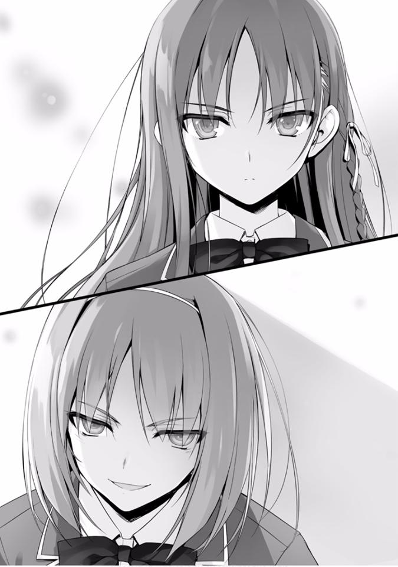
Kushida-san dijo eso mientras se separaba de mi lado para pararse junto a Ryuuen-kun.
— Qué vergüenza, Suzune. Traicionada por una aliada prometedora.
— Estabas un paso adelante de mí esta vez, Ryuuen-kun. No... supongo que ha sido así desde hace un tiempo. Durante el examen en el crucero, en la isla deshabitada, durante el incidente de Sudou-kun también. Solo he estado perdiendo.
Al reconocer eso una vez, las palabras salieron fácilmente.
— Concluyamos esto. Puntos y el dogeza, quiero decir. Eso es lo que buscan los “dos”.
— Voy a adelantarme y aclararé esto, pero que Kinoshita chocara contigo fue un completo accidente. No hubo motivos ulteriores o intenciones maliciosas detrás de eso. Es la forma en que funciona el mundo, ¿verdad?
Si hay un accidente, a veces lo solucionas en la corte. Es algo así.
— ... Sí. No hay evidencia, después de todo, es obvio que me acusarán de ser culpable.
Para demostrar tu inocencia, necesitarás una buena cantidad de determinación y poder. En este caso, solo tengo que admitirlo honestamente.
— Pero también agregaré esto. Que este incidente fue algo que tú planeaste.
Le dijiste a Kinoshita-san que se asegurara de que cayera. Estoy segura de eso.
— Ese es tu complejo de persecución hablando.
— No me importa, aunque sea sólo mi delirio. Pero al menos me gustaría saber sobre eso. ¿Qué tipo de trampa pusiste para este festival deportivo?
— Te estás desviando del dogeza, si tuviera que imaginarme cuáles son tus delirios sería algo como esto.
Ryuuen-kun se rió con alegría mientras comenzaba a hablar de ello como si fuera un engaño.
— Antes del festival deportivo, hice que Kushida pusiera sus manos en la tabla de participación de la Clase D, y la obtuve de esa manera. Luego
simplemente puse a la gente adecuada en los lugares correctos y gané.
Por supuesto, eso no es todo, también investigué a la Clase D.
— Liderazgo brillante. De hecho, ganaste mucho contra la Clase D y la Clase A.
Aunque no estuvieron a la altura de la Clase B en términos de fuerza general, no hay duda de que lucharon bien.
— ¿Pero no podrías haber ganado más eficientemente? Para aplastarme, utilizaste dos de tus mejores cartas y una tuvo que retirarse después de lesionarse. Eso es desconcertante.
— Kuku. Para aplastarte. Esa es razón suficiente. Esta vez no tenía ningún interés en ganar en términos de puntos generales.
— Pero tu estrategia dependió de la suerte. Bien por ti, cuando ordenaste a Kinoshita-san que me hiciera caer y ella actuó en consecuencia, fuiste salvado por dos coincidencias. Que estaba demasiado herida para continuar y que Kinoshita-san estaba gravemente herida después de que cayó. Ambas cosas no son algo que simplemente puedas lograr.
Lo que causó que los engranajes se rompieran dentro de mí fue esa parte.
Porque si yo hubiera recibido una lesión leve, entonces las cosas no se habrían puesto tan serias.
— Ciertamente, el alcance de tu lesión fue producto de una coincidencia.
Hubiera sido obvio si tuviera el objetivo de lastimarte. Si ella se equivocaba al hacer contacto contigo, es Kinoshita quien sufriría una experiencia dolorosa. Es por eso que tuve Kinoshita practicando a fondo una sola cosa: impactar con su oponente y hacer que la caída pareciera natural.
Si a uno se le diera esa orden, normalmente se rebelaría contra ella. ¿Qué se necesita hacer exactamente para hacerla tan obediente?
— También... sobre la lesión de Kinoshita... ¿realmente crees que fue un accidente?
— Ehh....
— Claro, ella se cayó. Pero por supuesto, las heridas graves no se dan tan fácilmente. Es por eso que hice que simulara tener dolor y abandonara el
festival deportivo. Después de eso, es una cuestión simple. Antes de que recibiera tratamiento, la lastimé yo mismo. Así.
Dijo eso mientras pisaba el piso del corredor con toda su fuerza.
¡Ban!
Un sonido aterrador y espeluznante resonó por el pasillo.
— ¿Se lo hiciste...? ¿A ella...?
— Ella dio su consentimiento cuando ofrecí darle 500,000 puntos, ¿sabes?
Seguro que da miedo, el poder del dinero.
Significa entonces que desde el principio, se determinó que ella sufriría lesiones graves...
Desde el fondo de mi corazón, descubrí que sus pensamientos y su ejecución eran terroríficos. Si es por el bien de ganar, entonces no hay nada que él no haga.
Pero, no esperaba que fuera así de sincero conmigo.
— ¿Está bien seguir y seguir sobre esto solo porque lo pregunté?
— ¿Qué?
— Si estuviera grabando tu confesión, ¿qué harías entonces?
Lo dije cuando saqué mi teléfono.
— Pensaste en eso ahora mismo, ¿no?
— Como mi táctica final, traté de manipularte al menos. Pero estoy impresionada de que me hayas dicho todo eso.
Jugueteé con mi teléfono y lo reproduje desde un punto específico.
“Antes del festival deportivo, hice que Kushida pusiera sus manos en la tabla de participación de la Clase D---”
— Si presentas una queja en mi contra, o pides puntos y un dogeza, entonces voy a contraatacar con esta evidencia. Si eso sucede, me pregunto cuál de nosotros estará en problemas.
— ¡Ku...!
Por primera vez, la sonrisa de Ryuuen-kun desapareció y también dejó de hablar.
— Suzune... tú...
— Tampoco estoy buscando problemas. Por eso arreglémoslo con-
— ¡Kukuku ..... jajajajaja!
De repente, Ryuuen-kun estalló en carcajadas otra vez.
— Realmente eres una mujer entretenida. Lo dije desde el principio, ¿no?
Que el contenido de nuestra discusión son, a lo sumo, ficticios. Solo estaba haciendo honor a tu complejo de persecución. Solo imaginé una historia inventada en tu cabeza.
— Aun así, ¿hay alguna manera de determinar si este engaño es real? Podría borrar solo la parte en la que dijiste que era un engaño y editar la grabación, ¿sabes?
Si la primera mitad se corta, no hay manera de determinar si es una mentira o no.
— Por supuesto, en ese caso, tendré que entregar el original. No hay problema.
Riendo sin miedo, Ryuuen sacó su teléfono del bolsillo.
— ¿Sabes qué es esto? La grabación completa...... no, es evidencia visual.
Dijo eso mientras apuntaba la cámara en la parte posterior del teléfono hacia mí.
Seguro que es más confiable que el audio.
Significa que Ryuuen-kun asumió que intentaría un truco final.
Significa que las cosas no serán tan sencillas... es lo que es.
Si envío los datos de audio a la escuela con la inconveniente primera mitad cortada, entonces habrá una investigación.
Y Ryuuen-kun y los demás estarán bajo sospecha.
Pero es imposible declararlos culpables solo por eso.
Si trato de pasar sus palabras, que habló con la premisa de que es un engaño, como verdad, entonces estaría condenada por ello.
— ¿Lo admites, Suzune? La realidad de tu completa derrota, eso es.
Kushida-san también se está riendo audazmente.
Me doy cuenta mucho más de que era una tonta.
Él no es el tipo de enemigo sobre quien las estrategias que pueda pensar funcionarían. La última resistencia que tenía también ha fallado.
— Desecha ese orgullo tuyo y dame un dogeza, Suzune.
Habiendo recibido esa sentencia de muerte, decidí ponerme de rodillas en silencio.
— Entiendo ---lo admito---
Piron.
Un sonido impropio de este lugar sonó.
Es porque el teléfono de Ryuuen-kun sonó justo frente a mis ojos.
No creo que él mismo le haya prestado tanta atención. Pero por alguna razón u otra, bajó los ojos a la pantalla para descubrir la fuente del sonido.
Sin embargo, la expresión de Ryuuen-kun se endureció por un momento a pesar de haber mantenido una sonrisa constante todo este tiempo.
Empezó a juguetear con su teléfono sin echarme un vistazo.
Y desde ese teléfono, pude escuchar lo que parecía una grabación hecha en algún lugar con una variedad de ruidos mezclados.
“Escuchen, mequetrefes. Para tender una trampa a Horikita Suzune de la Clase D. Lo que tenemos que hacer para aplastarla. Les voy a ofrecer esa estrategia.
Les mostraré algo interesante”.
Era la voz de Ryuuen-kun.
¿Es una conversación pasada cuando estaba planeando la estrategia que ejecutaría en el festival deportivo?
Estaba explicando a detalle lo que tan orgullosamente me había dicho hace un momento.
“No planeo ir en contra de tu estrategia, pero dame la oportunidad de luchar contra Horikita-“
En medio de eso, interrumpiéndolo, la voz de Ibuki-san apareció.
“En el circuito de obstáculos, correrás contra Suzune y harás contacto con ella.
Haz lo que sea necesario para hacerla caer. Después, me responsabilizaré de tu lesión y robaré algo de dinero para ti”.
Esa voz estaba diciendo eso.
No tengo idea de qué está pasando exactamente.
— ¿Cuál es el significado de esto, Ryuuen-kun? ¿Qué pasa con ese audio?
Kushida-san también parecía incapaz de comprender la situación y por eso solicitó una explicación a Ryuuen-kun.
— Ya veo, ya veo, ya veo. Ya veo. Kuku, ¿no es esto tan interesante?
¿Sabes lo que significa? Significa que también hay un traidor en la Clase C.
Y no solo ustedes chicas, sino que también yo, bailo en la palma de su mano. La traición de Kikyo y el hecho de que Suzune se derrumbaría ante mí. Lo tenía todo calculado. ¡JAJAJAJAJAJAJA! ¡Esto es interesante!
¡Interesante, digo! ¡El que te controla es increíble!
Llamándolo una obra maestra, Ryuuen-kun se echó el pelo hacia atrás y soltó una carcajada.
— Te la jugaron, Kikyo. Ya habían predicho que te convertirías en una traidora y entregarías la información en la lista de la tabla de participación.
Ellos ya habían predicho todas y cada una de las cosas.
— La traición ya se sabía desde el principio... ¿Quién podría ser capaz de algo así? ¿Podría ser Ayanokouji-kun? No sabía que era tan rápido…
— Bueno, él es uno de los candidatos. Pero no sacaré esa conclusión. Es una historia diferente si alguien capaz de realizar una grabación como esta deja un rastro así de fácil. Suzune, y también Ayanokouji y dependiendo de
las circunstancias, incluso Hirata puede tener a alguien presionando sus hilos. Me voy a tomar lentamente el tiempo para desenmascararlos. No he podido obtener los puntos y el dogeza de Suzune, pero me contentaré solo con este resultado.
No hay error. No sé cómo lo hizo, pero usó a alguien de la Clase C para grabar la estrategia de Ryuuen-kun. Por lo menos de eso estoy segura.
Durante el relevo, él compitiendo contra mi hermano también es extremadamente inexplicable. No se parece a él, ya que prefiere permanecer discreto.
Pero es precisamente porque sé esto que la única persona que me vino a la mente fue Ayanokouji Kiyotaka-kun.
En una situación en la que ya está siendo investigado, él actuó con osadía de manera llamativa.
Si el hombre que había estado gobernando la clase detrás de escena hasta ahora de repente se puso al frente, entonces, naturalmente, sería sospechoso.
Él sería sospechoso de ser un impostor.
Al ver que Ryuuen-kun era incapaz de reducirlo solo a Ayanokouji-kun, significa que ha estado colocando trampas a mis espaldas.
— Esto es todo por ahora. El remitente de este correo probablemente no nos perseguirá más.
— ¿Está realmente bien? ¿Qué pasa si te amenazan con la grabación?
— Si tuvieran la intención de enviarlo a la escuela, lo habrían hecho más tarde. Hacerlo después de que hayamos presentado nuestra queja sería lo más efectivo. No pude hacer que hiciera el dogeza, pero en cuanto a mí, logré la mitad de mis objetivos. No estuvo mal.
*****
Después de cambiarme a mi uniforme, fui a la puerta principal como había prometido, y justo como dijo que lo haría, la chica me estaba esperando.
— ¿Dijiste que tenías algo que decirme...?
— Sígueme.
— Seguir, a dónde exactamente.....
— Al edificio especial.
Eso también resultó ser un lugar bastante extraño.
La chica, sin ofrecerme una explicación detallada, comenzó a caminar y llegamos al tercer piso del edificio especial.
Este piso es uno de los pocos lugares en la escuela donde no hay cámaras de vigilancia instaladas.
— ---Qué exactamente---
Cuando traté de preguntarle, la chica me dijo que esperara y se fue sola.
Se dirigió a una esquina en el pasillo y susurró en voz baja.
— ¿Ya puedo irme?
— Sí. Lo hiciste bien, Masumi-san. Contaré contigo de nuevo.
— .....Por supuesto.
La chica llamada Masumi asintió en silencio y se fue.
La persona detrás de la voz lentamente se reveló.
Llevando un bastón en una mano, ella me miró con una fría sonrisa.
Primer año. Clase A. Sakayanagi.
— ¿Me llamaste?
Le pregunté a Sakayanagi pero ella no respondió.
Luego, por un breve momento, Sakayanagi y yo terminamos mirándonos.
En un edificio de la escuela al atardecer, la chica solitaria estaba de pie ante mis ojos con un bastón en la mano.
— Ese último relevo atrajo bastante atención, Ayanokouji Kiyotaka-kun.
Justo cuando pensaba que finalmente había abierto la boca, terminó siendo solo eso.
— Sí, lo siento, pero ¿puedo enviar un correo primero? Tengo a alguien esperando.
— Por favor, adelante.
Sakayanagi no reaccionó con disgusto, sino que me sonrió.
Envié lo que había preparado.
— Entonces... ¿puedo suponer que eres tú? La que me llamó aquí.
— Sí.
Una respuesta inmediata, ¿eh?
— Entonces, ¿cuál es el problema? Si es posible, me gustaría terminar esto rápidamente.
— Después de verte correr, recordé algo. Te llamé aquí para poder compartir contigo el impacto que sentí en ese momento. Es casi como si esto fuera el comienzo de una confesión, ¿no lo crees?
— No tengo idea de lo que estás hablando...
Clonk.
Clonk.
Apoyándose con un bastón, Sakayanagi se colocó a mi lado.
— Ha pasado mucho tiempo, Ayanokouji-kun. Aproximadamente 8 años y 243 días.
— Estás bromeando, ¿verdad? No te conozco.
— Fufu. Supongo que sí. Después de todo, nuestro conocido no es mutuo.
Clonk.
Clonk.
El repiqueteo retrocedió poco a poco.
¿De qué se trata esto exactamente?
Decidí acabar con las cosas y comencé a caminar en la dirección opuesta.
— Habitación blanca.
Cuando esas palabras atravesaron mis oídos y llegaron a mi cerebro, inconscientemente dejé de caminar.
Se deshicieron de mi racionalidad y empecé a cuestionar “por qué” y “cómo”.
— Es desagradable, ¿no? Ser barrido por la información que solo el enemigo posee.
— ...Tú...
— Esta es una reunión nostálgica, así que pensé que solo tenía que saludarte.
¿Reunión?
Miré hacia atrás a Sakayanagi sin dejar de darle la espalda.
Definitivamente no la había visto antes, ella realmente es una chica que no tiene un lugar en mis recuerdos.
No he perdido ningún recuerdo en el pasado tampoco. Conocí a esta chica, Sakayanagi, en esta escuela. No hay duda de ese hecho.
— Comprensible. Porque no me conoces. Pero yo sí te conozco. Debe ser un extraño giro del destino. Reunirme contigo en un lugar como este. Para ser sincera, nunca pensé que te vería otra vez. Pero con esto, todos los misterios han sido resueltos. La isla deshabitada, el crucero y que la Clase D haya evitado la expulsión. Simplemente no podía convencerme de que todas esas eran las estrategias de Horikita Suzune. Así que estabas detrás de todo eso.
— ¿A qué te refieres con eso? Tenemos bastantes estrategas, ¿sabes?
Primero que nada, análisis. Necesito estar tranquilo y sin alterarme. Puedo darme el lujo de pensarlo más tarde.
— Por estratega, ¿te referirías a Horikita Suzune-san? ¿O tal vez te refieres a Hirata Yousuke-kun? De cualquier manera, ahora que tu existencia ha salido a la luz, ya no importa quién es.
..... Ella no está mintiendo. Aparentemente realmente me conoce.
— Por favor, relájate. Antes que nada, no tengo intención de decirle a nadie más sobre ti.
— ¿No sería más fácil si lo hicieras?
— No quiero que me interrumpan. Soy la única digna de sepultar al falso genio.
Clonk.
El delgado bastón golpeó el suelo.
— He encontrado un ligero placer en esta aburrida vida escolar.
— ¿Puedo preguntarte una cosa?
— Me siento honrada de que me preguntes. Por favor, pregunta. Si quieres saber por qué te conozco, no me importa darte una respuesta, ¿sabes?
— No, no estoy interesado en eso. Solo quiero saber una cosa.
Sakayanagi y yo hicimos contacto visual.
— ¿Puedes sepultarme?
Fue lo que pregunté.
— ..... fufu.
Sakayanagi se rió un poco y luego se rió una vez más.
— Fufufu. Me disculpo por reír. No tenía la intención de insultar la pregunta que hiciste. Sé muy bien cuán impresionante eres. Acabo de empezar a disfrutar esto. Porque voy a cumplir el deseo de mi vida destruyendo la obra maestra más grande que tu padre ha creado.
Me gustaría desear eso.
Mi derrota también significaría la derrota de ese hombre.
Pensé desde el fondo de mi corazón que quería que esta triste contradicción que cargo fuera destruida.
PALABRAS DEL AUTOR
Hola y Feliz Año Nuevo. Este es Kinugasa Shougo.
Han pasado 4 meses y ahora se ha lanzado el volumen 5. A decir verdad, había planeado lanzarlo antes, pero una vez más tomó 4 meses. Seguramente la próxima vez, es lo que me gustaría decir, pero nada bueno saldrá de decirlo, así que me abstendré de hacerlo.
En este volumen, el segundo semestre ha comenzado y el primer evento fue el festival deportivo. Esta vez, el protagonista actúa detrás de escena y la historia incluye a toda la clase y Horikita toma el papel principal.
Finalmente, ha aparecido una persona que conoce el pasado del protagonista.
Además, este volumen es también el desencadenante inicial que hace que la existencia del protagonista sea reconocida en toda la escuela. La historia todavía está en su etapa inicial, pero seguiré trabajando duro a partir de ahora, así que por favor espérenlo con ansias.
Ahora bien, el año pasado también me ayudaron mucho una gran variedad de personas. La más importante es el ilustrador, Tomose Shunsaku-sama. Además, todas y cada una de las veces que lo llamo inútilmente terminamos charlando, pero a mi entender, estoy en deuda con mi editor-sama, que es más confiable que cualquier otra persona.
Este año también, sinceramente espero que nos llevemos bien.
Para todos los lectores y el personal. Por favor, trátenme bien este año también.
HISTORIAS CORTAS
KARUIZAWA HISTORIA CORTA
LA COMPLEJA MENTE DE UNA DONCELLA
—No hemos decidido ninguna táctica, ¿eso está bien?
Ya que habíamos arreglado nuestra posición de batalla de caballería, Shinohara, que estaba por debajo de mí, murmuró estas palabras justo antes de que empezara la competición.
—No creo que haya ningún problema. En un festival deportivo, sólo hay que tomárselo en serio hasta cierto punto.
—¿Eh? Ah, bien. Pero Karuizawa-san, si crees que esto está bien para ti...
—¿Me veo como ese tipo de persona motivada?
—Como te opusiste a la propuesta de Horikita-san cuando la clase decidía sobre las competiciones por recomendación, tenía la impresión de que...
—Ah...
Eso no fue idea mía. Actué siguiendo las órdenes de ese tipo. Francamente, la propuesta de Horikita-san de distribuir a los participantes según sus capacidades no sólo facilitaba las cosas, sino que también era una estratagema que aseguraba el éxito de la clase. Hasta se podría decir que esto era cuidar a los estudiantes que no estaban dispuestos a esforzarse. Parece que ese tipo me ordenó que hiciera algunas cosas innecesarias, haciendo que otras personas me miraran con ojos diferentes.
—En fin, hagámoslo a la ligera.
—Entendido...
Después de decir esto, comenzó la batalla de caballería. No debería haber nada extraordinario en la batalla de la escuela- estos pensamientos fueron rápidamente desbaratados.
La razón fue que la Clase C avanzaba silenciosamente hacia adelante y atacaba incesantemente a la Clase D. La vanguardia era Ibuki-san. Ella fue esa existencia que sumió a mi clase en el caos.
Ibuki-san llevó a los jinetes a atacar por sorpresa a Horikita-san.
—¡Shinohara, ve! ¡Apoya a Horikita-san!
—¿Eh? ¡Ro-roger!
Aunque se sorprendió de que de repente le diera una orden, el caballo siguió corriendo hacia delante.
—¡Aunque no me interesa ganar, no quiero perder así...!
No sabía si estas palabras se las habían dicho a Shinohara, o a mí misma.
En resumen, Horikita-san era el objetivo y dejarla sola causaría una situación terrible.
—¡Para! ¡Lo siento, pero no puedo dejar que pases por aquí!
La que vino a bloquearnos fue Ichinose de la clase B. Aunque no he interactuado mucho con ella, pensé que era difícil de manejar.
—¿Qué hacemos, Karuizawa-san...?
Shinohara, que mantenía la posición central del caballo, esperó mis instrucciones.
—No tenemos otra opción que seguir adelante, aunque realmente no quiero hacer esto.
Mis capacidades físicas no son muy destacadas y no quiero hacer cosas problemáticas. Pero-
Ahora mismo ese tipo seguramente esté mirando hacia aquí. Aunque no sé por qué, pero no quiero que ese tipo me vea sufriendo una derrota aplastante. Esa existencia que sabe de la oscuridad de mi corazón. Esa existencia que dijo que me protegería.
Afortunadamente, los movimientos de Ichinose no son tan difíciles de manejar como pensaba. Apenas puedo lidiar con ella. Mientras la esquivaba, di una instrucción específica a Shinohara-san, para que mantuviera una distancia adecuada.
—¿Por qué me esfuerzo tanto...?
Esta vez estaba hablando sola. Todo el mundo se esforzaba mucho y nadie escuchó mi susurro.
Durante las vacaciones de verano, también estuve involucrada con ese tipo. Lo mismo sucedió con este festival deportivo, obligándome a ayudarlo con cosas que no entendía. Sólo seguí ayudándole, sin saber lo que estaba haciendo o lo que quería hacer.
Normalmente eso sería desagradable. Pero no sé por qué nunca me disgustó esto.
Eso se debe sin duda a que el daño que realmente me preocupa profundamente no ha aparecido.
Las chicas de la clase C que querían buscar problemas conmigo no han vuelto.
¿Es una mera coincidencia? No, absolutamente no. Ese tipo.... Ayanokouji-kun, hizo algo por mí.
Sólo porque me permitió tener esta presunción, es que lo estoy obedeciendo.
—¿¡…!?
Apenas evadí la mano de Ichinose.
—¡Ah, en serio, así no soy yo!
La imagen de la caída del caballo de Horikita-san entró en mi campo de visión.
Ah, vamos a perder.
Pero lo único que puedo hacer ahora mismo es concentrarme en el adversario que tengo delante.
Estaba cambiando gradualmente.
Poco a poco estaba recibiendo el cambio.
Pero lo inesperado fue que no me desagrada.
Ahora mismo soy incapaz de enfrentarme a los cambios graduales en mí.
ICHINOSE HISTORIA CORTA
FESTIVAL DEPORTIVO: LA BATALLA DE ICHINOSE
No estaba muy lejos el final del festival deportivo. Para animar a todos, me paré frente a mis compañeros.
—¡Chicos, hagan lo mejor que puedan, aguanten un poco más! —Grité mientras levantaba el puño, y todos me respondieron con gritos enérgicos y levantando las manos.
Mirando a todos, estaba convencida de que conseguiríamos la victoria.
Teníamos casi en la bolsa el primer lugar de los de primer año. Pero no debemos ser descuidados. Necesitamos acumular puntos de manera efectiva para asegurar nuestra victoria. Esta es la verdadera meta de nuestra Clase B.
Sólo estoy bromeando.
—Bueno, vamos Ichinose. La próxima será la carrera mixta de tres piernas.
—¡DE ACUERDO!
Shibata-kun y yo fuimos juntos al campo. No importa quién sea el oponente, sólo tenemos que luchar con todas nuestras fuerzas. Pero al ver a una persona inesperada, dejé de caminar por un instante.
—¿Qué pasa Ichinose?
—Oh, acabo de ver a Kikyo-chan. Quiero ir a saludarla.
Mientras decía esto, señalé a dos personas que estaban caminando delante de nosotros. Eran la estudiante de la clase D Kushida Kikyo-san y Ayanokouji Kiyotaka-kun. Aunque no se lo dije a Shibata-kun, mis ojos no estaban mirando a Kikyo-chan sino a Ayanokouji-kun.
Durante este festival deportivo, recordé en secreto los resultados de sus competiciones. Su rendimiento fue mediocre. Pero sentí algo a partir de eso.
Al ver sus trucos y comportamiento en el último examen en el barco, y todas sus acciones hasta ahora, mi impresión de él como un "estudiante ordinario que se puede encontrar en todas partes" comenzó a cambiar.
—Yaho ~Ayanokouji-kun. Y Kikyo-chan. Parece que todos estamos en el mismo grupo...
Pero al final los saludé con naturalidad. Aunque subconscientemente pronuncié primero el nombre de Ayanokouji-kun, pensé que eso no era importante, y aparentemente a nadie le importó.
Kikyo-chan nos miró alternativamente a Shibata-kun y a mí, y dijo esto un poco preocupada.
—Wow~ este es realmente un enemigo poderoso, ustedes dos están en el mismo grupo...
—Aunque Shibata-kun es increíble, yo no soy gran cosa, todavía no tengo ni un solo primer lugar.
Siendo elogiado por Kikyo-chan, Shibata-kun estaba contento y se frotó la nariz avergonzado. Los niveles de popularidad de Kikyo-chan ya se han extendido mucho más allá de la clase D.
—¿En serio? ¿Eso es... inesperado?
Parece que los demás creían por error que era buena en los deportes.
Pero es simplemente que no tienen esa percepción. Aun así, no pienso tomar la iniciativa y decirlo.
Después de todo, no sería apropiado. Pero me sentí muy bien al ser considerada una rival fuerte.
—Conseguí un segundo lugar, el resto fueron todos en cuarto o quinto lugar. Originalmente otra chica se suponía que iba a participar en la carrera, pero se torció la pierna durante la carrera de 200 metros de esta mañana.
Parece que hay muchos heridos este año.
Así que les dije que mi actuación no era extraordinaria.
Ah, la competencia casi va a empezar, necesito recordar ese sentimiento.
Aunque he practicado un par de veces con Shibata-kun, otra cosa es mostrarlo en medio de la competición.
—Shibata-kun, ¿puedo atar nuestras piernas?
—OK~
Después de obtener el consentimiento del Shibata-kun que ya está preparado, me despedí de Ayanokouji-kun y los demás.
—Vamos a ganar esto, Ichinose.
—Sí. Aunque la clase D ha estado trabajando muy duro, su situación no se ve muy bien.
—De hecho, estamos luchando contra la clase C. Quiero obtener la victoria en el último evento, la carrera de relevos.
—Estoy deseando que llegue la carrera de relevos.
—Déjamelo a mí.
Boom - Shibata-kun se dio una palmadita en el pecho para que la gente sintiera que era muy confiable. Volví la cabeza un poco hacia atrás y vi a Ayanokouji-kun y a Kikyo-chan ya preparados y con la cuerda atada, comenzando lentamente a dar pasos.
—¿Estoy imaginando cosas?
—¿Qué?
—No, no es nada.
En comparación con él, que hace que la gente se sienta insondable, era mejor concentrarse en la victoria ante mis ojos. Pensé eso.


VISÍTANOS EN NUESTROS
DIFERENTES SITIOS
http://gladheimtranslations.blogspot.mx/
https://twitter.com/GladheimT
https://mastodon.social/@GladheimT
Si alguien desea hacer una donación
https://ko-fi.com/gladheimtranslation
https://www.buymeacoffee.com/gladheimtls
https://patreon.com/GladheimT